1/2162021 P1 Q3Whole question 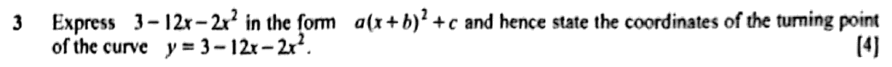 |
Model solution
\[ \begin{aligned} 3 - 12x - 2x^2 &= -2(x^2 + 6x) + 3 \\ &= -2\left[(x + 3)^2 - 9\right] + 3 \\ &= -2(x + 3)^2 + 21 \end{aligned} \]
\(3 - 12x - 2x^2 = -2(x + 3)^2 + 21\); turning point \((-3,\ 21)\) (a maximum point)
|
Teaching scriptWhenever you see "express in the form a, x plus b, squared, plus c", that's your cue to complete the square. Here the x squared coefficient is minus two, so take the minus two out of the x terms first. \[ 3 - 12x - 2x^2 = -2(x^2 + 6x) + 3 \]
Inside the bracket, half of six is three, so x plus three, squared, minus nine. Then multiply that minus nine by minus two. Two negatives, so plus eighteen. Add the three and you've got twenty-one. \[ -2\left[(x + 3)^2 - 9\right] + 3 = -2(x + 3)^2 + 21 \]
The turning point is where the squared bracket is zero, so x equals minus three, and y is twenty-one. The coefficient in front is negative, so the curve is upside down and this is a maximum point. Watch for: ending up with −2(x + 3)² − 15. That comes from forgetting to multiply the −9 by −2. |
1. Algebra
A1 Quadratic functions
Maximum or minimum by completing the square
5 questions2/2162022 P1 Q1Parts (a) 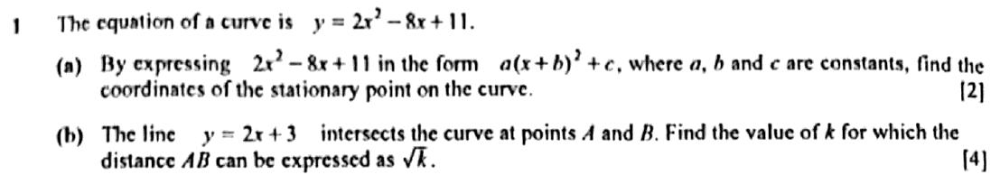 |
Model solution for parts (a)(a)
\[ \begin{aligned}
2x^2 - 8x + 11 &= 2(x^2 - 4x) + 11 \\
&= 2\left[(x-2)^2 - 4\right] + 11 \\
&= 2(x-2)^2 + 3
\end{aligned} \]
\(y\) has its minimum value 3 when \(x = 2\). \(2x^2 - 8x + 11 = 2(x-2)^2 + 3\); stationary point \((2, 3)\)
|
Teaching script for parts (a)(a) "Express in the form a times x plus b, squared, plus c" is the exam's way of saying complete the square. Take the two out of the x terms first. \[ 2(x^2 - 4x) + 11 \]
Half of minus four is minus two. So x squared minus four x becomes x minus two, squared, minus four. Multiply that minus four by the two outside, then add eleven. \[ 2\left[(x-2)^2 - 4\right] + 11 = 2(x-2)^2 + 3 \]
A square can't be negative, so the smallest y can be is three, when x is two. The stationary point is two, three. \[ (2, 3) \]
Watch for: subtracting 4 instead of 8. The \(-4\) inside the bracket gets multiplied by the 2 outside. |
3/2162023 P1 Q12Whole question 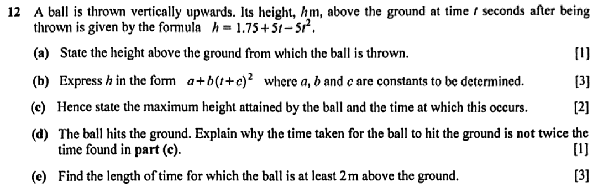 |
Model solution(a) At \(t = 0\), \(h = 1.75\). 1.75 m
(b)
\[ \begin{aligned} h &= 1.75 - 5(t^2 - t) \\ &= 1.75 - 5\left[\left(t - \tfrac{1}{2}\right)^2 - \tfrac{1}{4}\right] \\ &= 1.75 + 1.25 - 5\left(t - \tfrac{1}{2}\right)^2 \\ &= 3 - 5\left(t - \tfrac{1}{2}\right)^2. \end{aligned} \]
\(h = 3 - 5\left(t - \tfrac{1}{2}\right)^2\); \(a = 3\), \(b = -5\), \(c = -\tfrac{1}{2}\)
(c) Since \(-5\left(t - \tfrac{1}{2}\right)^2 \le 0\), \(h\) is greatest when \(t = \tfrac{1}{2}\). Maximum height 3 m, at \(t = 0.5\) s
(d) The ball is thrown from 1.75 m above the ground, not from ground level. It rises 1.25 m but falls 3 m to the ground, so the downward journey takes longer than the 0.5 s upward journey and the total time is more than \(2 \times 0.5 = 1\) s.
(e)
\[ \begin{aligned} 3 - 5\left(t - \tfrac{1}{2}\right)^2 &\ge 2 \\ \left(t - \tfrac{1}{2}\right)^2 &\le 0.2 \\ \tfrac{1}{2} - \sqrt{0.2} \le t &\le \tfrac{1}{2} + \sqrt{0.2}. \end{aligned} \]
\[ \text{Length of time} = 2\sqrt{0.2} = 0.894. \]
0.894 s (3 s.f.)
|
Teaching script(a) Half the class will say zero here, as if everyone throws balls from the floor. The ball is thrown at time zero, so put t equals nought. Both t terms drop out and h is one point seven five. It leaves the hand one point seven five metres above the ground. \[ t = 0: \; h = 1.75 \text{ m} \]
Watch for: answering zero because you assumed it was thrown from the ground. (b) Complete the square, but take the minus five out of the t terms first, so the bracket starts with a plain t squared. \[ h = 1.75 - 5(t^2 - t) = 1.75 - 5\left[\left(t - \tfrac{1}{2}\right)^2 - \tfrac{1}{4}\right] \]
Now multiply the minus a quarter by minus five. Two negatives, so that's plus one point two five. Add it to one point seven five. \[ h = 3 - 5\left(t - \tfrac{1}{2}\right)^2 \qquad a = 3,\; b = -5,\; c = -\tfrac{1}{2} \]
Watch for: subtracting the one point two five. Minus five times minus a quarter is positive. (c) The squared bracket is never negative, and it's multiplied by minus five, so that whole term is zero at most. It's zero when t is a half, and that's when h is at its biggest. \[ h_{\max} = 3 \text{ m at } t = 0.5 \text{ s} \]
Watch for: writing t equals minus a half. The bracket is t minus a half, so it's plus a half. (d) Doubling only works if the ball lands at the height it started from. This one started at one point seven five metres, rose one point two five to the top, and then has to fall the whole three metres to the ground. The fall is longer than the rise, so the trip down takes more than half a second, and the total is more than one second. Watch for: a vague answer about "gravity". Mention the starting height of one point seven five metres. (e) "At least two metres" means h is greater than or equal to two. Use the completed-square form here. It saves you solving a quadratic. \[ 3 - 5\left(t - \tfrac{1}{2}\right)^2 \ge 2 \;\Rightarrow\; \left(t - \tfrac{1}{2}\right)^2 \le 0.2 \]
So t minus a half sits between minus and plus root nought point two. The ball is above two metres for the gap between those two times, which is twice root nought point two. \[ 2\sqrt{0.2} = 0.894 \text{ s} \]
Watch for: giving one end time, nought point nine four seven, instead of how long the interval lasts. |
4/2162024 P1 Q9Parts (a)(i) 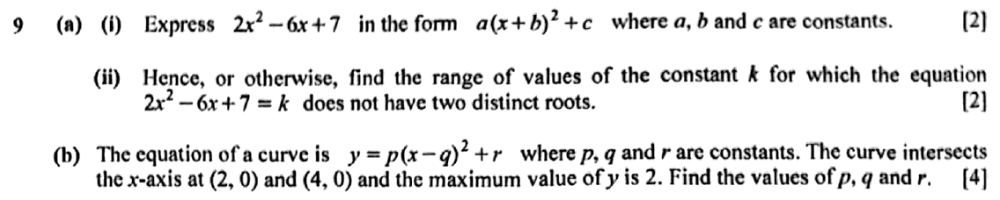 |
Model solution for parts (a)(i)(a)(i)
\[ \begin{aligned} 2x^2 - 6x + 7 &= 2\left(x^2 - 3x\right) + 7 \\ &= 2\left[\left(x - \tfrac32\right)^2 - \tfrac94\right] + 7 \\ &= 2\left(x - \tfrac32\right)^2 + \tfrac52 \end{aligned} \]
\(2\left(x - \tfrac32\right)^2 + \tfrac52\) (\(a = 2,\ b = -\tfrac32,\ c = \tfrac52\))
|
Teaching script for parts (a)(i)(a)(i) Complete the square. Pull the two out of the x terms first, so inside the bracket you've got x squared minus three x. \[ 2\left[\left(x - \tfrac32\right)^2 - \tfrac94\right] + 7 = 2\left(x - \tfrac32\right)^2 + \tfrac52 \]
Half of minus three is minus three halves. Take away its square, nine quarters, then multiply back by the two: minus nine halves plus seven is five halves. So a is two, b is minus three halves and c is five halves. Watch for: forgetting to multiply the minus nine quarters by the two outside. The two applies to everything in the bracket. |
5/2162025 P2 Q2Whole question 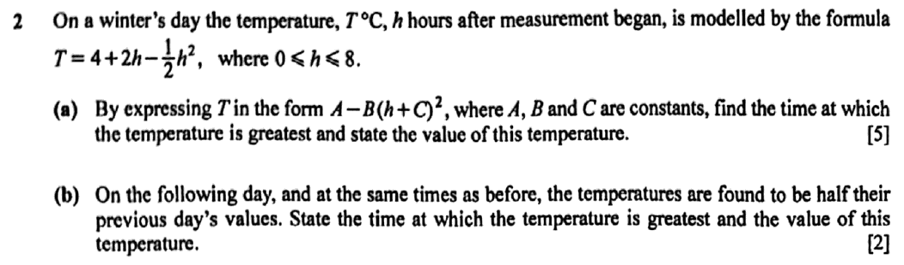 |
Model solution(a)
\[ \begin{aligned} T &= 4 + 2h - \tfrac{1}{2}h^2 \\ &= 4 - \tfrac{1}{2}\left(h^2 - 4h\right) \\ &= 4 - \tfrac{1}{2}\left[(h-2)^2 - 4\right] \\ &= 6 - \tfrac{1}{2}(h-2)^2 \end{aligned} \]
Since \(\tfrac{1}{2}(h-2)^2 \ge 0\), \(T\) is greatest when \(h = 2\), which lies within \(0 \le h \le 8\). Greatest temperature \(6^\circ\)C, 2 hours after measurement began
(b) The new model is \(T = 3 - \tfrac{1}{4}(h-2)^2\). Halving every value does not change when the maximum occurs. Greatest temperature \(3^\circ\)C, 2 hours after measurement began
|
Teaching script(a) You want the highest temperature and when it happens, so complete the square. Take negative a half out of the h terms first. \[ T = 4 - \tfrac{1}{2}\left(h^2 - 4h\right) = 4 - \tfrac{1}{2}\left[(h-2)^2 - 4\right] \]
Negative a half times negative four is plus two, so the constant becomes six. \[ T = 6 - \tfrac{1}{2}(h-2)^2 \]
The squared bit is never negative and it's being taken away, so T is biggest when the bracket is zero, at h equals two. Two is inside the nought-to-eight range, so we're fine. The highest temperature is six degrees Celsius, two hours after measuring started. Watch for: forgetting to multiply the negative four inside the square bracket by negative a half. That gives the wrong constant. (b) If every temperature is halved, the whole expression halves, so the new model is three minus a quarter of h minus two squared. Halving the temperatures doesn't change when the peak happens. The highest temperature is three degrees Celsius, still two hours in. Watch for: halving the time as well. Only the temperatures change; the clock doesn't. |
Finding the quadratic from its features
1 question6/2162024 P1 Q9Parts (b) |
Model solution for parts (b)(b) The curve is symmetrical about the line midway between the \(x\)-intercepts: \(q = \dfrac{2 + 4}{2} = 3\). The maximum value of \(y\) is 2, so \(r = 2\) and \(p \lt 0\). \[ 0 = p(2 - 3)^2 + 2 \;\Rightarrow\; p = -2 \]\(p = -2,\ q = 3,\ r = 2\)
|
Teaching script for parts (b)(b) A quadratic is symmetrical about the line halfway between where it crosses the x-axis. Halfway between two and four is three, so q is three. In this form, r is the maximum value, so r is two. And p has to be negative for the curve to have a maximum. Put in the point two, nought to find p. \[ 0 = p(2 - 3)^2 + 2 \;\Rightarrow\; p = -2 \]
So p is minus two, q is three and r is two. Watch for: giving q as minus three. The form is x minus q, so the turning point is at x equals q. |
Always positive or always negative; curve above or below a line
4 questions7/2162019 P1 Q2Whole questionSyllabus 4047 paper 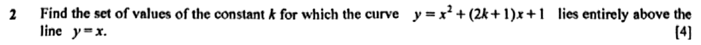 |
Model solutionThe curve lies entirely above the line when \(x^2+(2k+1)x+1 \gt x\) for all real \(x\). \[ x^2 + 2kx + 1 \gt 0 \text{ for all real } x \]The coefficient of \(x^2\) is positive, so the condition is discriminant \(\lt 0\). \[ \begin{aligned} (2k)^2 - 4(1)(1) &\lt 0 \\ 4k^2 - 4 &\lt 0 \\ (k-1)(k+1) &\lt 0 \\ -1 &\lt k \lt 1 \end{aligned} \]\(\{k : -1 \lt k \lt 1\}\)
|
Teaching script"Lies entirely above the line" means the curve's y beats the line's y for every x. Write that as an inequality and bring everything to one side. \[ x^2+(2k+1)x+1 \gt x \;\Rightarrow\; x^2 + 2kx + 1 \gt 0 \text{ for all real } x \]
A quadratic with a positive x squared term is always positive if it never touches the x-axis. So the discriminant, b squared minus four a c, has to be less than zero. \[ (2k)^2 - 4(1)(1) \lt 0 \;\Rightarrow\; 4k^2 - 4 \lt 0 \]
Divide by four and factorise as a difference of two squares. \[ (k-1)(k+1) \lt 0 \;\Rightarrow\; -1 \lt k \lt 1 \]
Less than zero means between the roots. So k is between minus one and one. Watch for: forgetting to subtract x before you find the discriminant. The 2k plus one only becomes 2k after you do. |
8/2162020 P2 Q2Parts (b)Syllabus 4047 paper 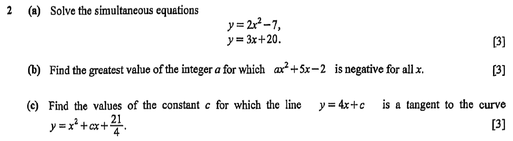 |
Model solution for parts (b)(b) \(ax^2 + 5x - 2 \lt 0\) for all \(x\) requires \(a \lt 0\) and discriminant \(\lt 0\). \[ \begin{aligned} 5^2 - 4(a)(-2) &\lt 0 \\ 25 + 8a &\lt 0 \\ a &\lt -\tfrac{25}{8} = -3.125 \end{aligned} \]Greatest integer \(a = -4\)
|
Teaching script for parts (b)(b) "Negative for all values of x" means the whole curve lives below the x-axis. That needs two things: a has to be negative, and the discriminant has to be negative. \[ 5^2 - 4(a)(-2) \lt 0 \;\Rightarrow\; 25 + 8a \lt 0 \]
So a is less than minus twenty-five over eight, which is minus three point one two five. The greatest integer below that is minus four. \[ a \lt -3.125 \;\Rightarrow\; a = -4 \]
Watch for: answering minus three. Minus three is bigger than minus three point one two five, so it doesn't qualify. |
9/2162023 P1 Q7Whole question 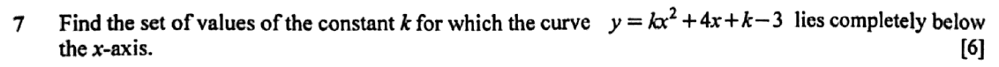 |
Model solutionThe curve lies completely below the \(x\)-axis when \(kx^2 + 4x + k - 3 \lt 0\) for all \(x\). This requires \(k \lt 0\) and discriminant \(\lt 0\). \[ \begin{aligned} 4^2 - 4k(k - 3) &\lt 0 \\ 16 - 4k^2 + 12k &\lt 0 \\ k^2 - 3k - 4 &\gt 0 \\ (k - 4)(k + 1) &\gt 0. \end{aligned} \]So \(k \lt -1\) or \(k \gt 4\). Combining with \(k \lt 0\): \(\{k : k \lt -1\}\)
|
Teaching script"Completely below the x-axis" means the quadratic is negative for every x. That needs two things: the curve opens downwards, so k is negative, and it never touches the axis, so the discriminant is negative. \[ 4^2 - 4k(k-3) \lt 0 \;\Rightarrow\; 16 - 4k^2 + 12k \lt 0 \]
Divide by minus four, and remember that dividing an inequality by a negative flips it round. \[ k^2 - 3k - 4 \gt 0 \;\Rightarrow\; (k-4)(k+1) \gt 0 \;\Rightarrow\; k \lt -1 \text{ or } k \gt 4 \]
Now bring back the first condition. k greater than four is positive, so it's out. The answer is k less than minus one. \[ \{k : k \lt -1\} \]
Watch for: giving both regions. The condition k less than nought knocks out k greater than four. |
10/2162025 P1 Q2Whole question 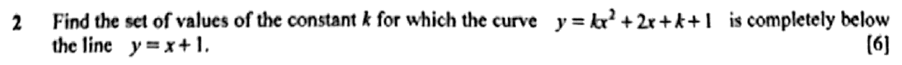 |
Model solutionThe curve is completely below the line when \(kx^2 + 2x + k + 1 \lt x + 1\) for all real \(x\): \[ kx^2 + x + k \lt 0 \quad \text{for all } x \]This requires the quadratic to open downwards and to have no real roots. Condition 1: \(k \lt 0\). Condition 2: discriminant \(\lt 0\): \[ \begin{aligned} 1^2 - 4(k)(k) &\lt 0 \\ 4k^2 - 1 &\gt 0 \\ (2k-1)(2k+1) &\gt 0 \\ k \lt -\tfrac{1}{2} \ \text{ or } \ k &\gt \tfrac{1}{2} \end{aligned} \]Combining with \(k \lt 0\): \(\{k : k \lt -\tfrac{1}{2}\}\)
|
Teaching script"Completely below the line" means the curve's y is less than the line's y for every single x. Write that as an inequality and put everything on one side. \[ kx^2 + x + k \lt 0 \quad \text{for all } x \]
A quadratic is negative everywhere only if two things are true at once. It has to open downwards, so k is negative. And it can never touch the x-axis, so the discriminant is negative. The discriminant, b squared minus four a c, is one minus four k squared. Set it below zero and rearrange to four k squared minus one greater than zero. \[ (2k-1)(2k+1) \gt 0 \;\Rightarrow\; k \lt -\tfrac{1}{2}\ \text{or}\ k \gt \tfrac{1}{2} \]
Now bring in k negative. The bit above a half is out, which leaves k less than negative a half. Watch for: giving both regions from the discriminant. Without k less than zero, the curve opens upwards like a smile and can't stay under the line. |
Quadratic as a model
2 questions11/2162023 P1 Q12Whole question |
Model solution(a) At \(t = 0\), \(h = 1.75\). 1.75 m
(b)
\[ \begin{aligned} h &= 1.75 - 5(t^2 - t) \\ &= 1.75 - 5\left[\left(t - \tfrac{1}{2}\right)^2 - \tfrac{1}{4}\right] \\ &= 1.75 + 1.25 - 5\left(t - \tfrac{1}{2}\right)^2 \\ &= 3 - 5\left(t - \tfrac{1}{2}\right)^2. \end{aligned} \]
\(h = 3 - 5\left(t - \tfrac{1}{2}\right)^2\); \(a = 3\), \(b = -5\), \(c = -\tfrac{1}{2}\)
(c) Since \(-5\left(t - \tfrac{1}{2}\right)^2 \le 0\), \(h\) is greatest when \(t = \tfrac{1}{2}\). Maximum height 3 m, at \(t = 0.5\) s
(d) The ball is thrown from 1.75 m above the ground, not from ground level. It rises 1.25 m but falls 3 m to the ground, so the downward journey takes longer than the 0.5 s upward journey and the total time is more than \(2 \times 0.5 = 1\) s.
(e)
\[ \begin{aligned} 3 - 5\left(t - \tfrac{1}{2}\right)^2 &\ge 2 \\ \left(t - \tfrac{1}{2}\right)^2 &\le 0.2 \\ \tfrac{1}{2} - \sqrt{0.2} \le t &\le \tfrac{1}{2} + \sqrt{0.2}. \end{aligned} \]
\[ \text{Length of time} = 2\sqrt{0.2} = 0.894. \]
0.894 s (3 s.f.)
|
Teaching script(a) Half the class will say zero here, as if everyone throws balls from the floor. The ball is thrown at time zero, so put t equals nought. Both t terms drop out and h is one point seven five. It leaves the hand one point seven five metres above the ground. \[ t = 0: \; h = 1.75 \text{ m} \]
Watch for: answering zero because you assumed it was thrown from the ground. (b) Complete the square, but take the minus five out of the t terms first, so the bracket starts with a plain t squared. \[ h = 1.75 - 5(t^2 - t) = 1.75 - 5\left[\left(t - \tfrac{1}{2}\right)^2 - \tfrac{1}{4}\right] \]
Now multiply the minus a quarter by minus five. Two negatives, so that's plus one point two five. Add it to one point seven five. \[ h = 3 - 5\left(t - \tfrac{1}{2}\right)^2 \qquad a = 3,\; b = -5,\; c = -\tfrac{1}{2} \]
Watch for: subtracting the one point two five. Minus five times minus a quarter is positive. (c) The squared bracket is never negative, and it's multiplied by minus five, so that whole term is zero at most. It's zero when t is a half, and that's when h is at its biggest. \[ h_{\max} = 3 \text{ m at } t = 0.5 \text{ s} \]
Watch for: writing t equals minus a half. The bracket is t minus a half, so it's plus a half. (d) Doubling only works if the ball lands at the height it started from. This one started at one point seven five metres, rose one point two five to the top, and then has to fall the whole three metres to the ground. The fall is longer than the rise, so the trip down takes more than half a second, and the total is more than one second. Watch for: a vague answer about "gravity". Mention the starting height of one point seven five metres. (e) "At least two metres" means h is greater than or equal to two. Use the completed-square form here. It saves you solving a quadratic. \[ 3 - 5\left(t - \tfrac{1}{2}\right)^2 \ge 2 \;\Rightarrow\; \left(t - \tfrac{1}{2}\right)^2 \le 0.2 \]
So t minus a half sits between minus and plus root nought point two. The ball is above two metres for the gap between those two times, which is twice root nought point two. \[ 2\sqrt{0.2} = 0.894 \text{ s} \]
Watch for: giving one end time, nought point nine four seven, instead of how long the interval lasts. |
12/2162025 P2 Q2Whole question |
Model solution(a)
\[ \begin{aligned} T &= 4 + 2h - \tfrac{1}{2}h^2 \\ &= 4 - \tfrac{1}{2}\left(h^2 - 4h\right) \\ &= 4 - \tfrac{1}{2}\left[(h-2)^2 - 4\right] \\ &= 6 - \tfrac{1}{2}(h-2)^2 \end{aligned} \]
Since \(\tfrac{1}{2}(h-2)^2 \ge 0\), \(T\) is greatest when \(h = 2\), which lies within \(0 \le h \le 8\). Greatest temperature \(6^\circ\)C, 2 hours after measurement began
(b) The new model is \(T = 3 - \tfrac{1}{4}(h-2)^2\). Halving every value does not change when the maximum occurs. Greatest temperature \(3^\circ\)C, 2 hours after measurement began
|
Teaching script(a) You want the highest temperature and when it happens, so complete the square. Take negative a half out of the h terms first. \[ T = 4 - \tfrac{1}{2}\left(h^2 - 4h\right) = 4 - \tfrac{1}{2}\left[(h-2)^2 - 4\right] \]
Negative a half times negative four is plus two, so the constant becomes six. \[ T = 6 - \tfrac{1}{2}(h-2)^2 \]
The squared bit is never negative and it's being taken away, so T is biggest when the bracket is zero, at h equals two. Two is inside the nought-to-eight range, so we're fine. The highest temperature is six degrees Celsius, two hours after measuring started. Watch for: forgetting to multiply the negative four inside the square bracket by negative a half. That gives the wrong constant. (b) If every temperature is halved, the whole expression halves, so the new model is three minus a quarter of h minus two squared. Halving the temperatures doesn't change when the peak happens. The highest temperature is three degrees Celsius, still two hours in. Watch for: halving the time as well. Only the temperatures change; the clock doesn't. |
A2 Equations and inequalities
Line and curve: two points, tangent, no intersection
7 questions13/2162020 P2 Q2Parts (c)Syllabus 4047 paper |
Model solution for parts (c)(c)
\[ \begin{aligned} x^2 + cx + \tfrac{21}{4} &= 4x + c \\ x^2 + (c - 4)x + \tfrac{21}{4} - c &= 0 \end{aligned} \]
For a tangent, discriminant \(= 0\). \[ \begin{aligned} (c - 4)^2 - 4\left(\tfrac{21}{4} - c\right) &= 0 \\ c^2 - 4c - 5 &= 0 \\ (c - 5)(c + 1) &= 0 \end{aligned} \]\(c = 5\) or \(c = -1\)
|
Teaching script for parts (c)(c) A line is a tangent when it meets the curve exactly once, so their equation has exactly one solution. Set the curve equal to the line and gather it into a quadratic in x. \[ x^2 + (c - 4)x + \tfrac{21}{4} - c = 0 \]
One solution means the discriminant is zero. Careful with the pieces: b is c minus four, and the constant is twenty-one over four minus c. Expand and simplify. \[ (c - 4)^2 - 4\left(\tfrac{21}{4} - c\right) = 0 \;\Rightarrow\; (c - 5)(c + 1) = 0 \]
So c is five or minus one. Watch for: dropping the minus c when you move the line across. Every term of the line has to come over. |
14/2162021 P2 Q5Parts (b)(c) 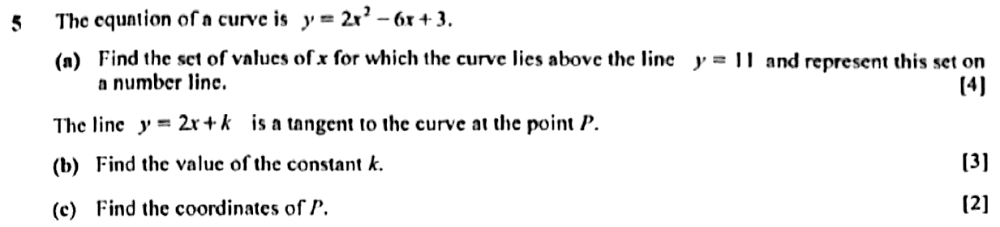 |
Model solution for parts (b)(c)(b)
\[ \begin{aligned}
2x^2 - 6x + 3 &= 2x + k \\
2x^2 - 8x + (3 - k) &= 0
\end{aligned} \]
For a tangent, discriminant \(= 0\): \[ (-8)^2 - 4(2)(3 - k) = 0 \;\Rightarrow\; 64 - 24 + 8k = 0 \;\Rightarrow\; k = -5 \]\(k = -5\)
(c)
\[ 2x^2 - 8x + 8 = 0 \;\Rightarrow\; 2(x-2)^2 = 0 \;\Rightarrow\; x = 2 \]
\[ y = 2(2) - 5 = -1 \]
\(P(2, -1)\)
|
Teaching script for parts (b)(c)(b) A tangent touches the curve only once. Set the curve equal to the line and get one quadratic. \[ 2x^2 - 8x + (3 - k) = 0 \]
One point of contact means a repeated root, so the discriminant is zero. b squared is sixty-four, and four a c is eight times three minus k. \[ 64 - 8(3 - k) = 0 \;\Rightarrow\; 40 + 8k = 0 \;\Rightarrow\; k = -5 \]
That gives k equals minus five. Watch for: the sign of the constant term. It's \(3 - k\), so \(-8(3 - k) = -24 + 8k\). (c) Put k equals minus five back into the quadratic. You get two x squared minus eight x plus eight, which is two times x minus two, squared. \[ 2(x - 2)^2 = 0 \;\Rightarrow\; x = 2 \]
Use the line for y: two times two minus five is minus one. So P is the point two, minus one. \[ P(2, -1) \]
Watch for: using \(3 - k = -2\) instead of \(8\). Substitute \(k = -5\) carefully; minus a minus is a plus. |
15/2162022 P1 Q8Parts (b) 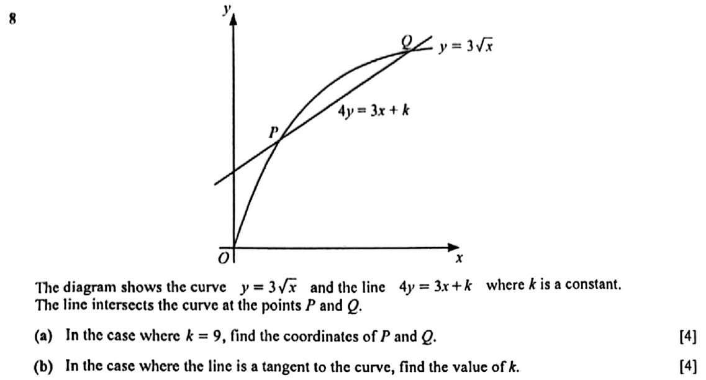 |
Model solution for parts (b)(b) Let \(u = \sqrt x\). Then \(12u = 3u^2 + k\), i.e. \[ 3u^2 - 12u + k = 0 \]For the line to be a tangent, this equation has equal roots: \[ (-12)^2 - 4(3)(k) = 0 \;\Rightarrow\; 144 - 12k = 0 \;\Rightarrow\; k = 12 \]Check: \(u = 2 \gt 0\), so the point of contact \((4, 6)\) is valid. \(k = 12\)
|
Teaching script for parts (b)(b) Let u be root x. The equation becomes three u squared minus twelve u plus k equals nought. \[ 3u^2 - 12u + k = 0 \]
A tangent means equal roots, so the discriminant is zero: one hundred and forty-four minus twelve k equals nought, so k is twelve. \[ 144 - 12k = 0 \;\Rightarrow\; k = 12 \]
Quick check that it actually works: u is two, which is positive, so the point of contact, four, six, is real. Watch for: skipping the check that the repeated root \(u\) is positive. A negative \(\sqrt x\) isn't possible. |
16/2162023 P1 Q1Whole question 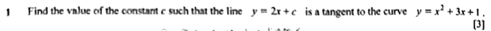 |
Model solution
\[ x^2 + 3x + 1 = 2x + c \quad\Rightarrow\quad x^2 + x + (1 - c) = 0. \]
For the line to be a tangent, the discriminant is zero: \[ 1^2 - 4(1)(1 - c) = 0 \quad\Rightarrow\quad 1 - 4 + 4c = 0 \quad\Rightarrow\quad c = \frac{3}{4}. \]\(c = \dfrac{3}{4}\)
|
Teaching script"Tangent" means the line touches the curve at exactly one point. So set the two equations equal, rearrange into a quadratic, and make the discriminant zero. \[ x^2 + 3x + 1 = 2x + c \;\Rightarrow\; x^2 + x + (1 - c) = 0 \]
Here a is one and b is one, and the constant term of the quadratic is one minus c. Keep that bracket together. It's the constant, not the letter c by itself. \[ 1^2 - 4(1)(1 - c) = 0 \;\Rightarrow\; -3 + 4c = 0 \;\Rightarrow\; c = \tfrac{3}{4} \]
Watch for: using the letter c as the constant term. You'd get c equals a quarter, which is a different question's answer. |
17/2162024 P1 Q9Parts (a)(ii) |
Model solution for parts (a)(ii)(a)(ii) The minimum value of \(2x^2 - 6x + 7\) is \(\tfrac52\), at \(x = \tfrac32\). The line \(y = k\) meets \(y = 2x^2 - 6x + 7\) at two distinct points only when \(k \gt \tfrac52\). (Alternatively: \(2x^2 - 6x + 7 - k = 0\) has discriminant \(36 - 8(7 - k) = 8k - 20 \le 0\).) \(k \le \dfrac52\)
|
Teaching script for parts (a)(ii)(a)(ii) "Hence" is pointing you at the minimum from part (i). The quadratic bottoms out at five halves, when x is three halves. A flat line y equals k only cuts the curve twice if k sits above that lowest point. You want the equation to not have two distinct roots, so k has to be five halves or below. \[ k \le \tfrac52 \]
If you prefer the discriminant, it gives the same thing: eight k minus twenty is at most zero. Watch for: writing k less than five halves. When k equals five halves you get one repeated root, and that's still "not two distinct roots". |
18/2162024 P2 Q2Whole question 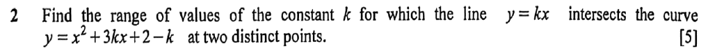 |
Model solution
\[ \begin{aligned} kx &= x^2 + 3kx + 2 - k \\ x^2 + 2kx + 2 - k &= 0 \end{aligned} \]
For two distinct points of intersection, discriminant \(\gt 0\): \[ \begin{aligned} (2k)^2 - 4(1)(2 - k) &\gt 0 \\ 4k^2 + 4k - 8 &\gt 0 \\ k^2 + k - 2 &\gt 0 \\ (k + 2)(k - 1) &\gt 0 \end{aligned} \]\(k \lt -2\) or \(k \gt 1\)
|
Teaching script"Two distinct points of intersection" is the examiner's way of saying: set line equal to curve, and the quadratic you get must have two real roots. So the discriminant has to be positive. \[ kx = x^2 + 3kx + 2 - k \;\Rightarrow\; x^2 + 2kx + 2 - k = 0 \]
Here a is one, b is two k and c is two minus k. B squared minus four a c is four k squared minus four times two minus k. \[ 4k^2 + 4k - 8 \gt 0 \;\Rightarrow\; (k + 2)(k - 1) \gt 0 \]
Divide by four and factorise. The critical values are minus two and one. A quadratic in k that opens upwards is positive outside its roots, so k is less than minus two or k is greater than one. Watch for: writing minus two less than k less than one. That's the region where it's negative, the exact opposite of what you want. |
19/2162025 P1 Q8Whole question 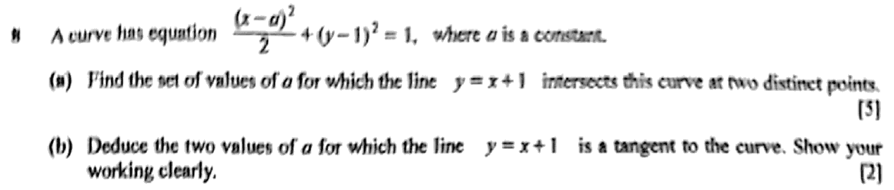 |
Model solution(a) Substitute \(y = x + 1\), so \(y - 1 = x\): \[ \begin{aligned} \frac{(x-a)^2}{2} + x^2 &= 1 \\ x^2 - 2ax + a^2 + 2x^2 &= 2 \\ 3x^2 - 2ax + a^2 - 2 &= 0 \end{aligned} \]For two distinct points, discriminant \(\gt 0\): \[ \begin{aligned} (-2a)^2 - 4(3)(a^2 - 2) &\gt 0 \\ -8a^2 + 24 &\gt 0 \\ a^2 &\lt 3 \end{aligned} \]\(\{a : -\sqrt{3} \lt a \lt \sqrt{3}\}\)
(b) For a tangent, discriminant \(= 0\): \[ -8a^2 + 24 = 0 \;\Rightarrow\; a^2 = 3 \]\(a = \sqrt{3}\) or \(a = -\sqrt{3}\)
|
Teaching script(a) The line y equals x plus one meets the curve, so substitute for y in the curve's equation. Handily, y minus one is x, which makes the substitution cleaner. \[ \frac{(x-a)^2}{2} + x^2 = 1 \;\Rightarrow\; 3x^2 - 2ax + a^2 - 2 = 0 \]
That's after multiplying through by two and collecting terms. Two separate intersection points means two separate roots, so the discriminant is positive. \[ (-2a)^2 - 4(3)(a^2 - 2) \gt 0 \;\Rightarrow\; a^2 \lt 3 \]
Four a squared minus twelve a squared plus twenty-four becomes negative eight a squared plus twenty-four. a squared less than three means a is between negative root three and root three. Watch for: writing a less than root three and calling it a day. a squared less than three gives a range on both sides of zero. (b) A tangent touches at exactly one point, so the discriminant is zero. Use the same discriminant from part (a). \[ -8a^2 + 24 = 0 \;\Rightarrow\; a^2 = 3 \]
So a is root three or negative root three. Watch for: giving only the positive root. Negative root three works equally well. |
Simultaneous equations (one linear, one non-linear)
6 questions20/2162020 P2 Q2Parts (a)Syllabus 4047 paper |
Model solution for parts (a)(a)
\[ \begin{aligned} 2x^2 - 7 &= 3x + 20 \\ 2x^2 - 3x - 27 &= 0 \\ (2x - 9)(x + 3) &= 0 \end{aligned} \]
\(x = \tfrac92 \Rightarrow y = 3\left(\tfrac92\right) + 20 = 33\tfrac12\); \(\;x = -3 \Rightarrow y = 11\). \(x = 4\tfrac12,\ y = 33\tfrac12\) or \(x = -3,\ y = 11\)
|
Teaching script for parts (a)(a) Both equations already say "y equals", so set them equal to each other: two x squared minus seven equals three x plus twenty. Bring it all to one side and factorise. \[ 2x^2 - 3x - 27 = 0 \;\Rightarrow\; (2x - 9)(x + 3) = 0 \]
x is nine halves or minus three. Put each one into the straight-line equation to get y: nine halves gives thirty-three and a half, and minus three gives eleven. \[ x = 4\tfrac12,\ y = 33\tfrac12 \quad\text{or}\quad x = -3,\ y = 11 \]
Watch for: mixing up which y goes with which x. Write them as pairs. |
21/2162021 P1 Q2Whole question 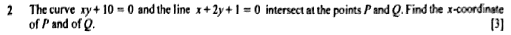 |
Model solutionFrom the line, \(x = -2y - 1\). Substitute into \(xy + 10 = 0\). \[ \begin{aligned} (-2y - 1)y + 10 &= 0 \\ 2y^2 + y - 10 &= 0 \\ (2y + 5)(y - 2) &= 0 \end{aligned} \]\(y = 2 \Rightarrow x = -5\); \(\;y = -\tfrac52 \Rightarrow x = 4\). \(x = -5\) and \(x = 4\)
|
Teaching scriptOne straight line, one curve. The routine is always the same: make x or y the subject of the linear equation, then substitute into the other one. From the line, x equals minus two y minus one. Put that into x y plus ten equals zero. \[ (-2y - 1)y + 10 = 0 \;\Rightarrow\; 2y^2 + y - 10 = 0 \]
Multiply by minus one so the y squared term is positive, then factorise: two y plus five, times y minus two. \[ (2y + 5)(y - 2) = 0 \]
y equals two gives x equals minus five. y equals minus five halves gives x equals four. The question only wants the x-coordinates, so the answer is minus five and four. Watch for: handing in the y-values. Read which coordinate they actually asked for. |
22/2162022 P1 Q1Parts (b) |
Model solution for parts (b)(b)
\[ \begin{aligned}
2x^2 - 8x + 11 &= 2x + 3 \\
2x^2 - 10x + 8 &= 0 \\
x^2 - 5x + 4 &= 0 \\
(x-1)(x-4) &= 0 \;\Rightarrow\; x = 1 \text{ or } x = 4
\end{aligned} \]
\(A(1, 5)\) and \(B(4, 11)\). \[ AB = \sqrt{(4-1)^2 + (11-5)^2} = \sqrt{9 + 36} = \sqrt{45} \]\(k = 45\)
|
Teaching script for parts (b)(b) For the intersection points, set the curve equal to the line and solve. \[ 2x^2 - 10x + 8 = 0 \;\Rightarrow\; (x-1)(x-4) = 0 \]
x is one or four. Use the line to get y: two plus three is five, and eight plus three is eleven. So A is one, five and B is four, eleven. \[ A(1, 5), \quad B(4, 11) \]
Now the distance formula: root of three squared plus six squared, which is root forty-five. So k is forty-five. \[ AB = \sqrt{9 + 36} = \sqrt{45} \;\Rightarrow\; k = 45 \]
Watch for: simplifying to \(3\sqrt5\) and saying \(k = 5\). The question wants \(AB = \sqrt{k}\), so leave it as root forty-five. |
23/2162022 P1 Q8Parts (a) |
Model solution for parts (a)(a) Substitute \(y = 3\sqrt x\) into \(4y = 3x + 9\): \[ \begin{aligned} 12\sqrt x &= 3x + 9 \\ x - 4\sqrt x + 3 &= 0 \\ (\sqrt x - 1)(\sqrt x - 3) &= 0 \\ \sqrt x = 1 \quad &\text{or} \quad \sqrt x = 3 \\ x = 1 \quad &\text{or} \quad x = 9 \end{aligned} \]\(x = 1 \Rightarrow y = 3\); \(x = 9 \Rightarrow y = 9\). \(P(1, 3)\) and \(Q(9, 9)\)
|
Teaching script for parts (a)(a) Put y equals three root x into the line. Four times three root x is twelve root x. \[ 12\sqrt x = 3x + 9 \]
Divide by three and rearrange: x minus four root x plus three equals nought. Treat root x as the unknown, and it factorises as root x minus one, times root x minus three. \[ (\sqrt x - 1)(\sqrt x - 3) = 0 \]
So root x is one or three, which means x is one or nine. The y-values are three and nine. So P is one, three and Q is nine, nine. \[ P(1, 3), \quad Q(9, 9) \]
Watch for: stopping at \(\sqrt x = 1, 3\). You still need to square to get \(x\). |
24/2162023 P1 Q8Whole question 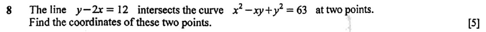 |
Model solutionFrom the line, \(y = 2x + 12\). Substitute into the curve: \[ \begin{aligned} x^2 - x(2x + 12) + (2x + 12)^2 &= 63 \\ x^2 - 2x^2 - 12x + 4x^2 + 48x + 144 &= 63 \\ 3x^2 + 36x + 81 &= 0 \\ x^2 + 12x + 27 &= 0 \\ (x + 3)(x + 9) &= 0. \end{aligned} \]\(x = -3\): \(y = 6\). \(\quad x = -9\): \(y = -6\). \((-3, 6)\) and \((-9, -6)\)
|
Teaching scriptOne straight line, one curve: make y the subject of the line and put it into the curve. \[ y = 2x + 12 \]
Expand slowly here. x times two x plus twelve is two x squared plus twelve x, and it's being subtracted. Two x plus twelve, squared, is four x squared plus forty-eight x plus one hundred and forty-four. \[ x^2 - 2x^2 - 12x + 4x^2 + 48x + 144 = 63 \;\Rightarrow\; 3x^2 + 36x + 81 = 0 \]
Divide by three and factorise. \[ x^2 + 12x + 27 = 0 \;\Rightarrow\; (x+3)(x+9) = 0 \]
Use the line to get y each time. x equals minus three gives y equals six, and x equals minus nine gives y equals minus six. \[ (-3, 6) \text{ and } (-9, -6) \]
Watch for: losing the middle term when squaring two x plus twelve. It's the one everyone forgets. |
25/2162024 P1 Q4Whole question 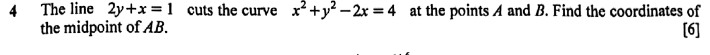 |
Model solutionFrom the line, \(x = 1 - 2y\). Substituting into the curve: \[ \begin{aligned} (1 - 2y)^2 + y^2 - 2(1 - 2y) &= 4 \\ 1 - 4y + 4y^2 + y^2 - 2 + 4y &= 4 \\ 5y^2 - 5 &= 0 \\ y &= 1 \ \text{ or } \ y = -1 \end{aligned} \]When \(y = 1\), \(x = -1\); when \(y = -1\), \(x = 3\). So \(A(-1, 1)\) and \(B(3, -1)\). \[ \text{Midpoint of } AB = \left( \frac{-1 + 3}{2}, \frac{1 + (-1)}{2} \right) = (1, 0) \]Midpoint of \(AB = (1, 0)\)
|
Teaching scriptTo find where a line meets a curve, make one letter the subject of the line and substitute it in. Here x equals one minus two y is the tidiest option. \[ (1 - 2y)^2 + y^2 - 2(1 - 2y) = 4 \]
Expand it: one minus four y plus four y squared, plus y squared, minus two plus four y. The y terms cancel each other out, which is nice of them, and you're left with five y squared minus five equals zero. So y is one or minus one. \[ 5y^2 - 5 = 0 \;\Rightarrow\; y = \pm 1 \]
Use the line to get x. When y is one, x is minus one; when y is minus one, x is three. So A is minus one, one, and B is three, minus one. \[ \text{Midpoint} = \left( \frac{-1 + 3}{2}, \frac{1 - 1}{2} \right) = (1, 0) \]
Watch for: going back to the curve to find x. You'll pick up extra values that aren't on the line. Use the line. |
Quadratic inequalities and the number line
4 questions26/2162020 P2 Q5Parts (a)Syllabus 4047 paper 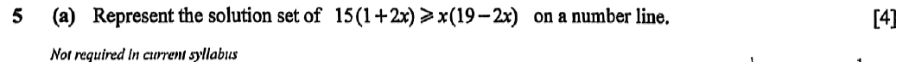 |
Model solution for parts (a)(a)
\[ \begin{aligned} 15 + 30x &\ge 19x - 2x^2 \\ 2x^2 + 11x + 15 &\ge 0 \\ (2x + 5)(x + 3) &\ge 0 \end{aligned} \]
Critical values \(x = -3\) and \(x = -\tfrac52\). The quadratic has a positive \(x^2\) coefficient, so it is non-negative outside the roots. \(x \le -3\) or \(x \ge -2\tfrac12\)
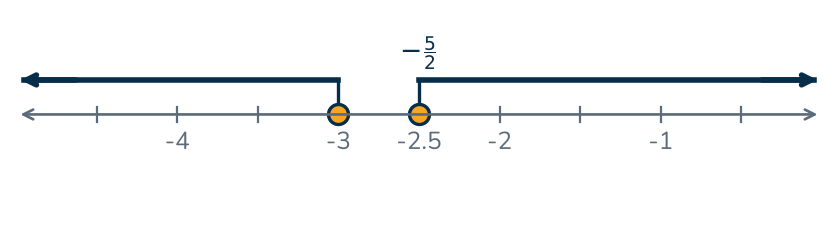 Use solid (closed) circles at \(-3\) and \(-2\tfrac12\), since both values are included. |
Teaching script for parts (a)(a) Move everything to one side, and keep the x squared term positive so the graph is a nice U. Fifteen plus thirty x is at least nineteen x minus two x squared, which rearranges to two x squared plus eleven x plus fifteen, greater than or equal to zero. \[ (2x + 5)(x + 3) \ge 0 \]
The critical values are minus three and minus five halves. A U-shaped graph is on or above the axis outside its roots. \[ x \le -3 \quad\text{or}\quad x \ge -2\tfrac12 \]
On the number line, put solid circles at minus three and minus two and a half, because equality is included. Then shade outwards from each one. Watch for: shading the bit between the roots. "Greater than or equal to zero" with a U shape means the two outside regions. |
27/2162021 P2 Q5Parts (a) |
Model solution for parts (a)(a)
\[ \begin{aligned}
2x^2 - 6x + 3 &\gt 11 \\
2x^2 - 6x - 8 &\gt 0 \\
x^2 - 3x - 4 &\gt 0 \\
(x - 4)(x + 1) &\gt 0
\end{aligned} \]
\(\{x : x \lt -1 \text{ or } x \gt 4\}\)
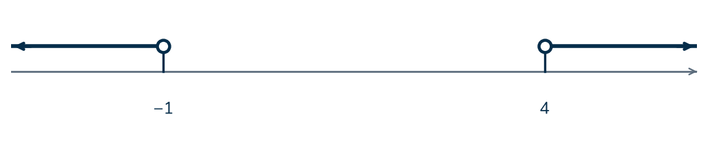 |
Teaching script for parts (a)(a) "Greater than eleven", so first move everything to one side and compare with zero. You get two x squared minus six x minus eight greater than nought. Divide by two, then factorise. \[ x^2 - 3x - 4 \gt 0 \;\Rightarrow\; (x - 4)(x + 1) \gt 0 \]
The critical values are minus one and four. The parabola opens upwards, so it's above zero on the outside of the roots: x less than minus one, or x greater than four. \[ x \lt -1 \text{ or } x \gt 4 \]
On the number line, put open circles at minus one and four, since the inequality is strict, and shade outwards from each. Watch for: giving \(-1 \lt x \lt 4\). That's exactly where the expression is negative, the opposite of what you want. |
28/2162022 P1 Q4Parts (a) 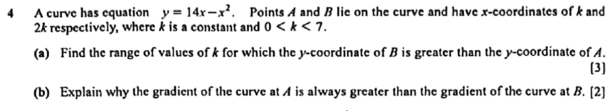 |
Model solution for parts (a)(a) \(y_A = 14k - k^2\) and \(y_B = 14(2k) - (2k)^2 = 28k - 4k^2\). \[ \begin{aligned} 28k - 4k^2 &\gt 14k - k^2 \\ 14k - 3k^2 &\gt 0 \\ k(14 - 3k) &\gt 0 \;\Rightarrow\; 0 \lt k \lt \tfrac{14}{3} \end{aligned} \]This lies within the given condition \(0 \lt k \lt 7\). \(0 \lt k \lt \dfrac{14}{3}\)
|
Teaching script for parts (a)(a) Get the y-coordinates of A and B by putting x equals k and x equals two k into the curve. A has fourteen k minus k squared. B has twenty-eight k minus four k squared. \[ y_A = 14k - k^2, \qquad y_B = 28k - 4k^2 \]
B higher than A means the y at B is bigger than the y at A. Bring all the terms to one side. \[ 14k - 3k^2 \gt 0 \;\Rightarrow\; k(14 - 3k) \gt 0 \]
The critical values are nought and fourteen thirds. It's an upside-down parabola in k, so it's positive between the roots: k between nought and fourteen thirds. That fits inside the given range of nought to seven. \[ 0 \lt k \lt \tfrac{14}{3} \]
Watch for: dividing both sides by \(k\) without saying \(k \gt 0\). With an inequality, you need to know the sign of what you divide by. |
29/2162023 P1 Q12Parts (e) |
Model solution for parts (e)(e)
\[ \begin{aligned} 3 - 5\left(t - \tfrac{1}{2}\right)^2 &\ge 2 \\ \left(t - \tfrac{1}{2}\right)^2 &\le 0.2 \\ \tfrac{1}{2} - \sqrt{0.2} \le t &\le \tfrac{1}{2} + \sqrt{0.2}. \end{aligned} \]
\[ \text{Length of time} = 2\sqrt{0.2} = 0.894. \]
0.894 s (3 s.f.)
|
Teaching script for parts (e)(e) "At least two metres" means h is greater than or equal to two. Use the completed-square form here. It saves you solving a quadratic. \[ 3 - 5\left(t - \tfrac{1}{2}\right)^2 \ge 2 \;\Rightarrow\; \left(t - \tfrac{1}{2}\right)^2 \le 0.2 \]
So t minus a half sits between minus and plus root nought point two. The ball is above two metres for the gap between those two times, which is twice root nought point two. \[ 2\sqrt{0.2} = 0.894 \text{ s} \]
Watch for: giving one end time, nought point nine four seven, instead of how long the interval lasts. |
A3 Surds
Mensuration with surds (no calculator)
3 questions30/2162021 P1 Q1Whole question 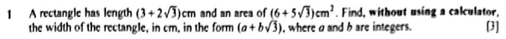 |
Model solution
\[ \begin{aligned} \text{Width} &= \frac{6 + 5\sqrt3}{3 + 2\sqrt3} \times \frac{3 - 2\sqrt3}{3 - 2\sqrt3} \\ &= \frac{18 - 12\sqrt3 + 15\sqrt3 - 30}{9 - 12} \\ &= \frac{-12 + 3\sqrt3}{-3} \end{aligned} \]
Width \(= (4 - \sqrt3)\) cm
|
Teaching scriptWidth is area divided by length, and the length has a surd in it, so we're dividing by a surd. No calculator allowed, so rationalise: multiply top and bottom by the conjugate of three plus two root three, which is three minus two root three. \[ \frac{6 + 5\sqrt3}{3 + 2\sqrt3} \times \frac{3 - 2\sqrt3}{3 - 2\sqrt3} \]
Expand the top one term at a time: eighteen, minus twelve root three, plus fifteen root three, then minus five root three times two root three, which is thirty. The bottom is a difference of squares: nine minus twelve, so minus three. \[ \frac{18 - 12\sqrt3 + 15\sqrt3 - 30}{9 - 12} = \frac{-12 + 3\sqrt3}{-3} \]
Divide each term by minus three and you get four minus root three. So the width is four minus root three centimetres. Watch for: working out 5√3 × 2√3 as 10√3. Root three times root three is three, so the product is 30. |
31/2162024 P1 Q7Whole question 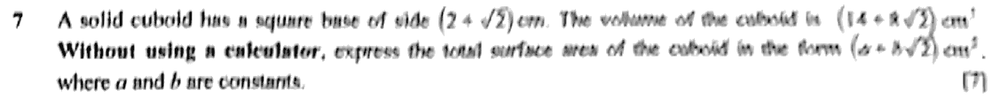 |
Model solutionBase area \(= (2 + \sqrt2)^2 = 4 + 4\sqrt2 + 2 = 6 + 4\sqrt2\). \[ \begin{aligned} \text{Height} &= \frac{14 + 8\sqrt2}{6 + 4\sqrt2} = \frac{7 + 4\sqrt2}{3 + 2\sqrt2} \times \frac{3 - 2\sqrt2}{3 - 2\sqrt2} \\ &= \frac{21 - 14\sqrt2 + 12\sqrt2 - 16}{9 - 8} \\ &= 5 - 2\sqrt2 \end{aligned} \] \[ \begin{aligned} \text{Total surface area} &= 2(6 + 4\sqrt2) + 4(2 + \sqrt2)(5 - 2\sqrt2) \\ &= 12 + 8\sqrt2 + 4(10 - 4\sqrt2 + 5\sqrt2 - 4) \\ &= 12 + 8\sqrt2 + 4(6 + \sqrt2) \\ &= 36 + 12\sqrt2 \end{aligned} \]Total surface area \(= (36 + 12\sqrt2)\ \text{cm}^2\)
|
Teaching scriptNo calculator, so everything stays in surds. Find the base area, use the volume to get the height, then add up all six faces. \[ \text{Base area} = (2 + \sqrt2)^2 = 6 + 4\sqrt2 \]
Height is volume divided by base area: fourteen plus eight root two, over six plus four root two. Cancel the common factor of two first, then rationalise by multiplying top and bottom by the conjugate, three minus two root two. \[ \frac{7 + 4\sqrt2}{3 + 2\sqrt2} \times \frac{3 - 2\sqrt2}{3 - 2\sqrt2} = \frac{21 - 2\sqrt2 - 16}{1} = 5 - 2\sqrt2 \]
The bottom turns into nine minus eight, which is one. Examiners love a denominator of one. So the height is five minus two root two. For the surface area, you've got two square faces and four rectangles. Each rectangle is two plus root two, times five minus two root two, which multiplies out to six plus root two. \[ 2(6 + 4\sqrt2) + 4(6 + \sqrt2) = 36 + 12\sqrt2 \]
The total surface area is thirty-six plus twelve root two square centimetres. Watch for: counting only one square face, or squaring two plus root two as four plus two. You need the middle term. |
32/2162025 P2 Q1Whole question 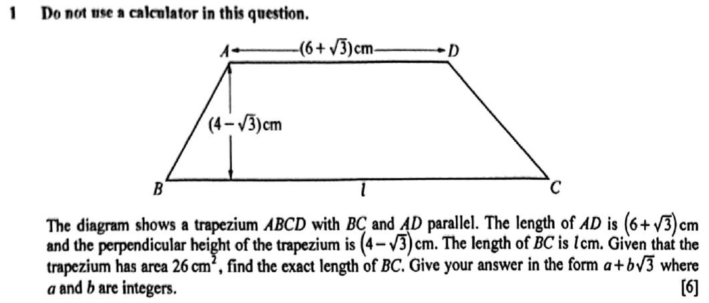 |
Model solution
\[ \tfrac{1}{2}\left(6 + \sqrt{3} + l\right)\left(4 - \sqrt{3}\right) = 26 \]
\[ \begin{aligned} 6 + \sqrt{3} + l &= \frac{52}{4 - \sqrt{3}} \times \frac{4 + \sqrt{3}}{4 + \sqrt{3}} \\ &= \frac{52(4 + \sqrt{3})}{16 - 3} \\ &= 4(4 + \sqrt{3}) = 16 + 4\sqrt{3} \\ l &= 16 + 4\sqrt{3} - 6 - \sqrt{3} \end{aligned} \]
\(BC = \left(10 + 3\sqrt{3}\right)\) cm
|
Teaching scriptNo calculator, surds, and a trapezium. The area is half the sum of the parallel sides times the height. Call the side we don't know l and set the area equal to twenty-six. \[ \tfrac{1}{2}\left(6 + \sqrt{3} + l\right)\left(4 - \sqrt{3}\right) = 26 \]
Times both sides by two and divide by four minus root three. Now there's a surd on the bottom, and we don't like those, so multiply top and bottom by the conjugate, four plus root three. \[ 6 + \sqrt{3} + l = \frac{52(4 + \sqrt{3})}{16 - 3} = 16 + 4\sqrt{3} \]
Sixteen minus three is thirteen, and fifty-two over thirteen is four. Take six plus root three off both sides. Sixteen minus six is ten, and four root three minus root three is three root three. So BC is ten plus three root three centimetres. Watch for: multiplying by four minus root three again instead of the conjugate. The surd only clears with four plus root three. |
Exact trigonometric values with surds
2 questions33/2162022 P2 Q5Whole question 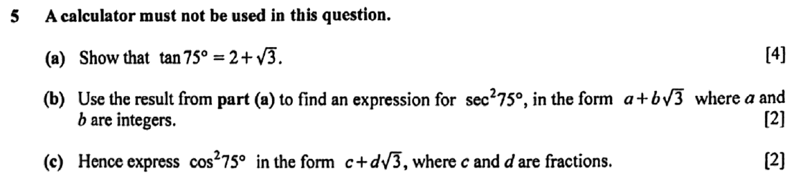 |
Model solution(a)
\[ \begin{aligned} \tan 75^\circ &= \tan(45^\circ + 30^\circ) = \frac{\tan 45^\circ + \tan 30^\circ}{1 - \tan 45^\circ\tan 30^\circ} \\ &= \frac{1 + \frac{1}{\sqrt{3}}}{1 - \frac{1}{\sqrt{3}}} = \frac{\sqrt{3}+1}{\sqrt{3}-1} \\ &= \frac{(\sqrt{3}+1)^2}{(\sqrt{3}-1)(\sqrt{3}+1)} = \frac{4 + 2\sqrt{3}}{2} \\ &= 2 + \sqrt{3}. \end{aligned} \]
\(\tan 75^\circ = 2 + \sqrt{3}\) (shown)
(b)
\[ \sec^2 75^\circ = 1 + \tan^2 75^\circ = 1 + (2+\sqrt{3})^2 = 1 + 4 + 4\sqrt{3} + 3 = 8 + 4\sqrt{3}. \]
\(\sec^2 75^\circ = 8 + 4\sqrt{3}\)
(c)
\[ \cos^2 75^\circ = \frac{1}{8 + 4\sqrt{3}} = \frac{8 - 4\sqrt{3}}{(8+4\sqrt{3})(8-4\sqrt{3})} = \frac{8 - 4\sqrt{3}}{64 - 48} = \frac{8 - 4\sqrt{3}}{16}. \]
\(\cos^2 75^\circ = \dfrac{1}{2} - \dfrac{1}{4}\sqrt{3}\)
|
Teaching script(a) No calculator, so break seventy-five into two angles whose tangents you know by heart: forty-five and thirty. Then the addition formula for tan takes over. \[ \tan 75^\circ = \frac{\tan 45^\circ + \tan 30^\circ}{1 - \tan 45^\circ\tan 30^\circ} = \frac{1 + \frac{1}{\sqrt{3}}}{1 - \frac{1}{\sqrt{3}}} = \frac{\sqrt{3}+1}{\sqrt{3}-1} \]
Multiply top and bottom by root three over root three to get rid of the little fractions. Then rationalise by multiplying top and bottom by root three plus one. \[ \frac{(\sqrt{3}+1)^2}{3 - 1} = \frac{4 + 2\sqrt{3}}{2} = 2 + \sqrt{3} \]
Watch for: expanding root three plus one, squared, as four. The middle term, two root three, loves to go missing. (b) Secant squared connects to tan squared through sec squared equals one plus tan squared. Square your part (a) answer, slowly. \[ \sec^2 75^\circ = 1 + (2+\sqrt{3})^2 = 1 + 4 + 4\sqrt{3} + 3 = 8 + 4\sqrt{3} \]
Watch for: writing sec squared as tan squared minus one. It's plus one. (c) Cos squared is one over sec squared, so flip part (b) upside down and rationalise using the conjugate, eight minus four root three. \[ \cos^2 75^\circ = \frac{8 - 4\sqrt{3}}{64 - 48} = \frac{8 - 4\sqrt{3}}{16} = \frac{1}{2} - \frac{1}{4}\sqrt{3} \]
The denominator becomes sixty-four minus forty-eight, which is sixteen. Then split the fraction into the form the question asks for. Watch for: squaring four root three as twelve. It's sixteen times three, forty-eight. |
34/2162023 P2 Q4Whole question 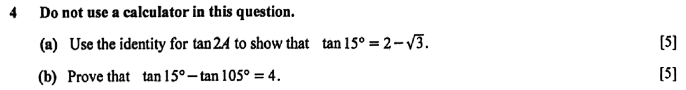 |
Model solution(a) Let \(t = \tan 15^\circ\). Using \(\tan 2A = \dfrac{2\tan A}{1 - \tan^2 A}\) with \(A = 15^\circ\): \[ \begin{aligned} \tan 30^\circ = \frac{1}{\sqrt{3}} &= \frac{2t}{1 - t^2} \\ 1 - t^2 &= 2\sqrt{3}\,t \\ t^2 + 2\sqrt{3}\,t - 1 &= 0 \\ t &= \frac{-2\sqrt{3} \pm \sqrt{12 + 4}}{2} = -\sqrt{3} \pm 2. \end{aligned} \]Since \(15^\circ\) is acute, \(\tan 15^\circ \gt 0\), so reject \(-\sqrt{3} - 2\). \(\tan 15^\circ = 2 - \sqrt{3}\) (shown)
(b)
\[ \begin{aligned} \tan 105^\circ &= \tan(60^\circ + 45^\circ) = \frac{\sqrt{3} + 1}{1 - \sqrt{3}} \\ &= \frac{(\sqrt{3} + 1)(1 + \sqrt{3})}{(1 - \sqrt{3})(1 + \sqrt{3})} = \frac{4 + 2\sqrt{3}}{-2} = -2 - \sqrt{3}. \end{aligned} \]
\[ \tan 15^\circ - \tan 105^\circ = (2 - \sqrt{3}) - (-2 - \sqrt{3}) = 4. \]
\(\tan 15^\circ - \tan 105^\circ = 4\) (proved)
|
Teaching script(a) Fifteen degrees is half of thirty, and you know tan thirty exactly. So use the double-angle formula, with t standing for tan fifteen. \[ \frac{1}{\sqrt{3}} = \frac{2t}{1 - t^2} \;\Rightarrow\; t^2 + 2\sqrt{3}\,t - 1 = 0 \]
That's a quadratic in t. Use the formula: b squared minus four a c is twelve plus four, which is sixteen. \[ t = \frac{-2\sqrt{3} \pm 4}{2} = -\sqrt{3} \pm 2 \]
Fifteen degrees is acute, so its tangent is positive. Reject minus root three minus two. Tan fifteen is two minus root three. Watch for: rejecting the negative root without a reason. One line saying fifteen degrees is acute covers it. (b) Write one hundred and five as sixty plus forty-five and use the tan addition formula. \[ \tan 105^\circ = \frac{\sqrt{3} + 1}{1 - \sqrt{3}} = \frac{4 + 2\sqrt{3}}{-2} = -2 - \sqrt{3} \]
Rationalise by multiplying top and bottom by one plus root three, and the bottom becomes one minus three, which is minus two. Then subtract. \[ (2 - \sqrt{3}) - (-2 - \sqrt{3}) = 4 \]
Watch for: ending up with a positive tan one hundred and five. It's in the second quadrant, so tan is negative. |
A4 Polynomials and partial fractions
Factor and remainder theorems: find unknown coefficients
5 questions35/2162020 P1 Q8Parts (a)Syllabus 4047 paper 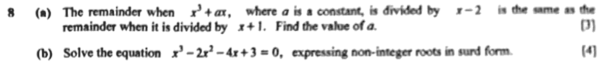 |
Model solution for parts (a)(a) Let \(f(x) = x^3 + ax\). By the remainder theorem, the remainders are \(f(2)\) and \(f(-1)\). \[ \begin{aligned} f(2) &= 8 + 2a \\ f(-1) &= -1 - a \\ 8 + 2a &= -1 - a \\ 3a &= -9 \end{aligned} \]\(a = -3\)
|
Teaching script for parts (a)(a) Two remainders that are the same, so this is the remainder theorem. Dividing by x minus two leaves f of two. Dividing by x plus one leaves f of minus one. Write both out, then set them equal to each other. \[ f(2) = 8 + 2a, \qquad f(-1) = -1 - a \]
So eight plus two a equals minus one minus a. Gather the a's on one side and you get three a equals minus nine. \[ 8 + 2a = -1 - a \;\Rightarrow\; a = -3 \]
Watch for: plugging in x equals one for the divisor x plus one. Set the divisor equal to zero, and you get minus one. |
36/2162021 P1 Q6Whole question 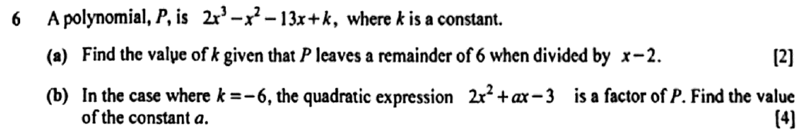 |
Model solution(a) By the remainder theorem, \(P(2) = 6\). \[ 2(8) - 4 - 26 + k = 6 \;\Rightarrow\; -14 + k = 6 \]\(k = 20\)
(b) \(P = 2x^3 - x^2 - 13x - 6\). The constant term is \(-6 = (-3)(2)\), so the other factor is \((x + 2)\). \[ (2x^2 + ax - 3)(x + 2) = 2x^3 + (4 + a)x^2 + (2a - 3)x - 6 \]Comparing coefficients of \(x^2\): \(4 + a = -1 \Rightarrow a = -5\). Check, coefficient of \(x\): \(2(-5) - 3 = -13\). ✓ \(a = -5\)
|
Teaching script(a) Remainder when you divide by x minus two? Substitute x equals two, and set the result equal to six. That's two times eight, minus four, minus twenty-six, plus k. \[ 16 - 4 - 26 + k = 6 \;\Rightarrow\; k = 20 \]
Watch for: setting P(2) = 0. That's the factor theorem. Here the remainder is 6, not zero. (b) We know one factor is two x squared plus a x minus three. The cubic is degree three, so the other factor must be linear. Its constant has to turn minus three into minus six, so it's x plus two. \[ (2x^2 + ax - 3)(x + 2) = 2x^3 + (4 + a)x^2 + (2a - 3)x - 6 \]
Match the x squared coefficients with the cubic: four plus a equals minus one, so a is minus five. Then check the x term: two times minus five, minus three, is minus thirteen. It matches, so we're right. Watch for: skipping the check. Confirming the x coefficient is a free way to catch a wrong linear factor. |
37/2162022 P2 Q2Parts (a) 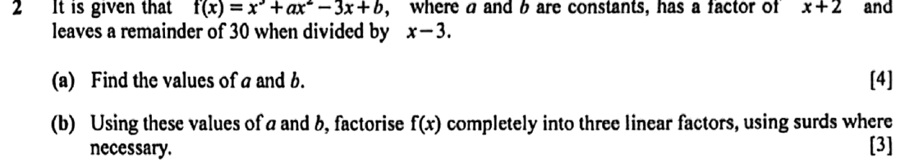 |
Model solution for parts (a)(a) By the factor theorem, \(f(-2) = 0\): \[ -8 + 4a + 6 + b = 0 \quad\Rightarrow\quad 4a + b = 2 \quad (1) \]By the remainder theorem, \(f(3) = 30\): \[ 27 + 9a - 9 + b = 30 \quad\Rightarrow\quad 9a + b = 12 \quad (2) \](2) − (1): \(5a = 10\), so \(a = 2\) and \(b = 2 - 8 = -6\). \(a = 2\), \(b = -6\)
|
Teaching script for parts (a)(a) Two facts, two unknowns. That's a pair of simultaneous equations waiting to happen. "x plus two is a factor" tells you f of minus two is zero. "Remainder thirty when divided by x minus three" tells you f of three is thirty. \[ f(-2) = -8 + 4a + 6 + b = 0 \;\Rightarrow\; 4a + b = 2 \quad (1) \]
\[ f(3) = 27 + 9a - 9 + b = 30 \;\Rightarrow\; 9a + b = 12 \quad (2) \]
Take equation one away from equation two and b drops out: five a equals ten, so a is two. Put that back into equation one and b is two minus eight, which is minus six. Watch for: plugging in plus two for the factor x plus two. You want the value that makes the bracket zero, so it's minus two. |
38/2162024 P2 Q6Parts (a) 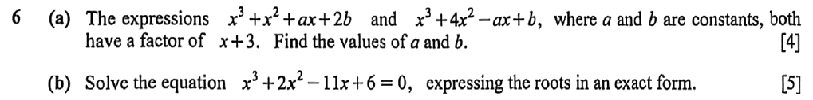 |
Model solution for parts (a)(a) By the factor theorem, both expressions equal 0 at \(x = -3\). \[ \begin{aligned} -27 + 9 - 3a + 2b &= 0 \;\Rightarrow\; -3a + 2b = 18 \quad (1) \\ -27 + 36 + 3a + b &= 0 \;\Rightarrow\; 3a + b = -9 \quad (2) \end{aligned} \](1) + (2): \(3b = 9\), so \(b = 3\). From (2): \(3a = -12\), so \(a = -4\). \(a = -4,\ b = 3\)
|
Teaching script for parts (a)(a) If x plus three is a factor, then putting x equals minus three in gives zero. That's the factor theorem. Do it to both expressions and you get two equations in a and b. \[ -3a + 2b = 18 \quad (1), \qquad 3a + b = -9 \quad (2) \]
The first expression gives minus twenty-seven plus nine minus three a plus two b equals zero. The second gives minus twenty-seven plus thirty-six plus three a plus b equals zero. Add the two equations and the a terms cancel: three b equals nine. So b is three, and from equation two, three a is minus twelve, so a is minus four. Watch for: the second expression has minus a x. When x is minus three, that turns into plus three a. |
39/2162025 P2 Q4Parts (a) 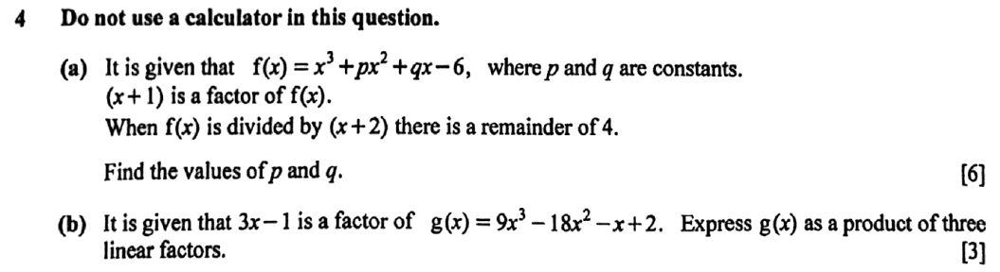 |
Model solution for parts (a)(a) By the factor theorem, \(f(-1) = 0\): \[ -1 + p - q - 6 = 0 \;\Rightarrow\; p - q = 7 \quad (1) \]By the remainder theorem, \(f(-2) = 4\): \[ -8 + 4p - 2q - 6 = 4 \;\Rightarrow\; 2p - q = 9 \quad (2) \]\((2) - (1)\): \(p = 2\); then \(q = 2 - 7 = -5\). \(p = 2\), \(q = -5\)
|
Teaching script for parts (a)(a) Two facts, two equations. x plus one is a factor, so by the factor theorem f of negative one is zero. A remainder of four when you divide by x plus two means f of negative two is four. \[ f(-1) = 0:\ p - q = 7 \qquad f(-2) = 4:\ 2p - q = 9 \]
Take the first equation from the second, q disappears, and p is two. Then q is two minus seven, negative five. Watch for: putting in x equals one or two. The factor x plus one means x equals negative one. |
Factorising and solving cubics
7 questions40/2162020 P1 Q8Parts (b)Syllabus 4047 paper |
Model solution for parts (b)(b) Let \(g(x) = x^3 - 2x^2 - 4x + 3\). \(g(3) = 27 - 18 - 12 + 3 = 0\), so \((x - 3)\) is a factor. Comparing coefficients, \(x^3 - 2x^2 - 4x + 3 = (x - 3)(x^2 + x - 1)\). \[ x^2 + x - 1 = 0 \;\Rightarrow\; x = \frac{-1 \pm \sqrt{1 + 4}}{2} = \frac{-1 \pm \sqrt{5}}{2} \]\(x = 3,\ x = \dfrac{-1 + \sqrt{5}}{2}\) or \(x = \dfrac{-1 - \sqrt{5}}{2}\)
|
Teaching script for parts (b)(b) With a cubic, you find the first root by trial. Try the factors of the constant term, three: plus or minus one, plus or minus three. g of three is twenty-seven minus eighteen minus twelve plus three, which comes to zero. So x minus three is a factor. \[ g(3) = 0 \;\Rightarrow\; (x - 3) \text{ is a factor} \]
Now find the quadratic factor by comparing coefficients. We need x squared to make x cubed, and the constant has to be minus one so that it multiplies with minus three to give plus three. Work through the x squared terms and the middle coefficient comes out as plus one. \[ x^3 - 2x^2 - 4x + 3 = (x - 3)(x^2 + x - 1) \]
x squared plus x minus one won't factorise nicely, so out comes the formula: minus one plus or minus root five, all over two. \[ x = 3, \quad x = \frac{-1 \pm \sqrt{5}}{2} \]
Watch for: stopping at x equals three and calling it a day. A cubic can have three roots, and the quadratic factor is hiding the other two. |
41/2162021 P2 Q2Whole question 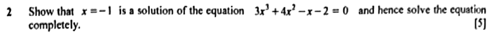 |
Model solutionLet \(f(x) = 3x^3 + 4x^2 - x - 2\). \[ f(-1) = 3(-1)^3 + 4(-1)^2 - (-1) - 2 = -3 + 4 + 1 - 2 = 0 \]By the factor theorem, \(x = -1\) is a solution and \((x+1)\) is a factor. Comparing coefficients: \[ \begin{aligned} 3x^3 + 4x^2 - x - 2 &= (x+1)(3x^2 + x - 2) \\ &= (x+1)(3x - 2)(x + 1) \\ &= (x+1)^2(3x-2) \end{aligned} \]\(x = -1\) or \(x = \dfrac23\)
|
Teaching scriptA cubic and no calculator. The plan: find one root by trying small numbers, then factorise. Call the cubic f of x. Try minus one: minus three plus four plus one minus two is nought. Lucky first try. \[ f(-1) = -3 + 4 + 1 - 2 = 0 \]
So by the factor theorem, x plus one is a factor. Now compare coefficients for the quadratic. The x cubed term needs three x squared, the constant needs minus two, and that leaves x in the middle. \[ (x+1)(3x^2 + x - 2) \]
That quadratic factorises as three x minus two, times x plus one. So the cubic is x plus one squared, times three x minus two. \[ (x+1)^2(3x-2) = 0 \]
The solutions are x equals minus one, which is a repeated root, and x equals two thirds. Watch for: writing \(x = -1\) twice as if it's two different answers. It's one solution that happens to be repeated. |
42/2162022 P1 Q9Parts (b) 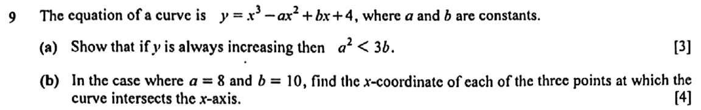 |
Model solution for parts (b)(b) Let \(f(x) = x^3 - 8x^2 + 10x + 4\). \[ f(2) = 8 - 32 + 20 + 4 = 0 \]By the factor theorem, \((x - 2)\) is a factor. \[ x^3 - 8x^2 + 10x + 4 = (x - 2)(x^2 - 6x - 2) \] \[ x^2 - 6x - 2 = 0 \;\Rightarrow\; x = \frac{6 \pm \sqrt{36 + 8}}{2} = 3 \pm \sqrt{11} \]\(x = 2\), \(x = 3 + \sqrt{11}\) \((\approx 6.32)\), \(x = 3 - \sqrt{11}\) \((\approx -0.317)\)
|
Teaching script for parts (b)(b) Find a root by trial. f of two is eight minus thirty-two plus twenty plus four, which is nought. So x minus two is a factor. \[ f(2) = 0 \]
Compare coefficients to get the quadratic factor: x squared minus six x minus two. \[ (x - 2)(x^2 - 6x - 2) \]
That one doesn't factorise, so use the formula. Six plus or minus root of thirty-six plus eight, over two, which simplifies to three plus or minus root eleven. \[ x = 2, \quad x = 3 \pm \sqrt{11} \]
Watch for: the sign under the root. \(b^2 - 4ac = 36 - 4(1)(-2) = 44\). Minus a negative is a plus. |
43/2162022 P2 Q2Parts (b) |
Model solution for parts (b)(b)
\[ f(x) = x^3 + 2x^2 - 3x - 6 = x^2(x+2) - 3(x+2) = (x+2)(x^2 - 3). \]
Since \(x^2 - 3 = (x - \sqrt{3})(x + \sqrt{3})\), \(f(x) = (x+2)(x-\sqrt{3})(x+\sqrt{3})\)
|
Teaching script for parts (b)(b) With a and b in place, the cubic reads x cubed plus two x squared minus three x minus six. Group it in pairs. Pull x squared out of the first two terms and minus three out of the last two, and x plus two shows up in both. \[ x^2(x+2) - 3(x+2) = (x+2)(x^2 - 3) \]
The question says factorise completely, so x squared minus three isn't the end. It's a difference of two squares, using root three. \[ f(x) = (x+2)(x-\sqrt{3})(x+\sqrt{3}) \]
Watch for: stopping at x squared minus three. "Completely" is the examiner telling you surds are expected. |
44/2162023 P2 Q6Parts (a) 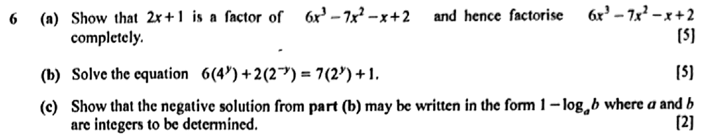 |
Model solution for parts (a)(a) Let \(f(x) = 6x^3 - 7x^2 - x + 2\). \[ f\!\left(-\tfrac12\right) = 6\left(-\tfrac18\right) - 7\left(\tfrac14\right) + \tfrac12 + 2 = -\tfrac34 - \tfrac74 + \tfrac12 + 2 = 0 \]By the factor theorem, \(2x + 1\) is a factor of \(f(x)\). \[ \begin{aligned} 6x^3 - 7x^2 - x + 2 &= (2x+1)(3x^2 - 5x + 2) \\ &= (2x+1)(3x-2)(x-1) \end{aligned} \]\(6x^3 - 7x^2 - x + 2 = (2x+1)(3x-2)(x-1)\)
|
Teaching script for parts (a)(a) With a cubic, you start by hunting for one root. The question is pretty much pointing at two x plus one, so try x equals minus a half. \[ f\!\left(-\tfrac12\right) = -\tfrac34 - \tfrac74 + \tfrac12 + 2 = 0 \]
It comes out to zero, so the factor theorem tells you two x plus one is a factor. Divide it out, either by long division or by comparing coefficients, and you're left with three x squared minus five x plus two. That quadratic splits into three x minus two, times x minus one. So the whole thing is two x plus one, times three x minus two, times x minus one. \[ 6x^3 - 7x^2 - x + 2 = (2x+1)(3x-2)(x-1) \]
Watch for: stopping once you reach the quadratic. They asked for it fully factorised, so break the quadratic down too. |
45/2162024 P2 Q6Parts (b) |
Model solution for parts (b)(b) Let \(f(x) = x^3 + 2x^2 - 11x + 6\). \(f(2) = 8 + 8 - 22 + 6 = 0\), so \(x - 2\) is a factor. \[ x^3 + 2x^2 - 11x + 6 = (x - 2)(x^2 + 4x - 3) \] \[ x^2 + 4x - 3 = 0 \;\Rightarrow\; x = \frac{-4 \pm \sqrt{16 + 12}}{2} = \frac{-4 \pm 2\sqrt7}{2} = -2 \pm \sqrt7 \]\(x = 2,\ x = -2 + \sqrt7,\ x = -2 - \sqrt7\)
|
Teaching script for parts (b)(b) Find one root by trial. Try x equals two: eight plus eight minus twenty-two plus six is zero. So x minus two is a factor. \[ x^3 + 2x^2 - 11x + 6 = (x - 2)(x^2 + 4x - 3) \]
The quadratic won't factorise, and "exact form" is telling you to use the formula and keep the surd. \[ x = \frac{-4 \pm \sqrt{28}}{2} = -2 \pm \sqrt7 \]
Root twenty-eight is two root seven, and dividing by two gives minus two plus or minus root seven. So the three roots are two, minus two plus root seven, and minus two minus root seven. Watch for: giving decimals, or forgetting to include x equals two in your final list. It's a root too. |
46/2162025 P2 Q4Parts (b) |
Model solution for parts (b)(b) Let \(g(x) = (3x - 1)(3x^2 + bx - 2)\). Comparing coefficients of \(x^2\): \[ 3b - 3 = -18 \;\Rightarrow\; b = -5 \]Check coefficient of \(x\): \(-6 - b = -6 + 5 = -1\), which agrees. \[ 3x^2 - 5x - 2 = (3x + 1)(x - 2) \]\(g(x) = (3x - 1)(3x + 1)(x - 2)\)
|
Teaching script for parts (b)(b) You know three x minus one is a factor, so write g of x as three x minus one, times three x squared plus b x minus two. The first and last terms of the quadratic come from matching the x cubed and constant terms. Find b by comparing the x squared terms. \[ 3b - 3 = -18 \;\Rightarrow\; b = -5 \]
Check it on the x term: negative six minus b is negative one, which matches. Now factorise three x squared minus five x minus two into three x plus one, times x minus two. \[ g(x) = (3x - 1)(3x + 1)(x - 2) \]
Watch for: stopping at the quadratic. "Factorise completely" means all three linear factors. |
Sum and difference of cubes; algebraic proof
1 question47/2162025 P1 Q3Whole question 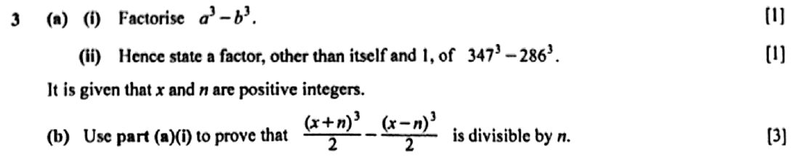 |
Model solution(a)(i) \(a^3 - b^3 = (a-b)(a^2 + ab + b^2)\)
(a)(ii) With \(a = 347\) and \(b = 286\), \((a - b)\) is a factor: \(347 - 286 = 61\). \(61\)
(b) Let \(a = x + n\) and \(b = x - n\). Then \(a - b = 2n\) and \[ a^2 + ab + b^2 = (x+n)^2 + (x+n)(x-n) + (x-n)^2 = 3x^2 + n^2 \] \[ \begin{aligned} \frac{(x+n)^3}{2} - \frac{(x-n)^3}{2} &= \tfrac{1}{2}(a-b)(a^2+ab+b^2) \\ &= \tfrac{1}{2}(2n)(3x^2 + n^2) \\ &= n(3x^2 + n^2) \end{aligned} \]Since \(x\) and \(n\) are positive integers, \(3x^2 + n^2\) is an integer, so the expression is divisible by \(n\).
|
Teaching script(a)(i) This one's pure recall. A difference of two cubes factorises as a minus b, times a squared plus a b plus b squared. \[ a^3 - b^3 = (a-b)(a^2 + ab + b^2) \]
Watch for: putting minus a b in the second bracket. That minus belongs to the sum of cubes, not this one. (a)(ii) The number is three hundred and forty-seven cubed minus two hundred and eighty-six cubed. Please don't expand those. Use part (i) with a as three four seven and b as two eight six. Then a minus b is a factor, and three four seven minus two eight six is sixty-one. \[ 347 - 286 = 61 \]
So the prime factor is sixty-one. Watch for: actually working out the cubes. You'd be there all afternoon, and the factorisation hands you the answer for free. (b) Now show that half of x plus n, cubed, minus half of x minus n, cubed, is divisible by n. Same difference of cubes, with a as x plus n and b as x minus n. So a minus b is two n. Sort out the second bracket. Expand x plus n squared, plus x plus n times x minus n, plus x minus n squared, and it comes to three x squared plus n squared. \[ \tfrac{1}{2}(2n)(3x^2 + n^2) = n(3x^2 + n^2) \]
x and n are positive integers, so three x squared plus n squared is an integer too. The whole thing is n times an integer, so it's divisible by n. Watch for: stopping at n times the bracket without saying the bracket is an integer. That one sentence is what finishes the proof. |
Partial fractions
6 questions48/2162019 P2 Q3Whole questionSyllabus 4047 paper 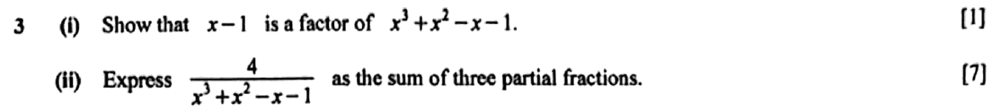 |
Model solution(i) Let \(f(x) = x^3 + x^2 - x - 1\). \[ f(1) = 1 + 1 - 1 - 1 = 0 \]By the factor theorem, \(x - 1\) is a factor of \(f(x)\). (ii)
\[ x^3 + x^2 - x - 1 = (x-1)(x^2 + 2x + 1) = (x-1)(x+1)^2 \]
\[ \frac{4}{(x-1)(x+1)^2} = \frac{A}{x-1} + \frac{B}{x+1} + \frac{C}{(x+1)^2} \]
\[ 4 = A(x+1)^2 + B(x-1)(x+1) + C(x-1) \]
\[ \begin{aligned} x = 1:&\quad 4 = 4A \Rightarrow A = 1 \\ x = -1:&\quad 4 = -2C \Rightarrow C = -2 \\ \text{coefficient of } x^2:&\quad 0 = A + B \Rightarrow B = -1 \end{aligned} \]
\(\dfrac{1}{x-1} - \dfrac{1}{x+1} - \dfrac{2}{(x+1)^2}\)
|
Teaching script(i) To show x minus one is a factor, use the factor theorem: put x equals one in and show you get zero. \[ f(1) = 1 + 1 - 1 - 1 = 0 \]
Since f of one is zero, by the factor theorem x minus one is a factor. Watch for: stopping at the arithmetic. Finish with the sentence that names the factor theorem. (ii) Factorise the denominator fully first. Divide by x minus one and you get x squared plus two x plus one, which is x plus one all squared. \[ x^3 + x^2 - x - 1 = (x-1)(x+1)^2 \]
A repeated factor needs two fractions: one over x plus one and one over x plus one squared. \[ \frac{4}{(x-1)(x+1)^2} = \frac{A}{x-1} + \frac{B}{x+1} + \frac{C}{(x+1)^2} \]
Multiply through and pick convenient values. x equals one gives four equals four A, so A is one. x equals minus one gives four equals minus two C, so C is minus two. For B, compare the x squared coefficients: nought equals A plus B, so B is minus one. \[ \frac{1}{x-1} - \frac{1}{x+1} - \frac{2}{(x+1)^2} \]
Watch for: leaving out the B over x plus one term. A squared factor always gets two fractions. |
49/2162020 P1 Q3Whole questionSyllabus 4047 paper 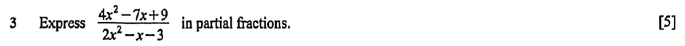 |
Model solutionThe fraction is improper (numerator and denominator both of degree 2). Divide first: \[ 4x^2 - 7x + 9 = 2(2x^2 - x - 3) + (-5x + 15) \] \[ \frac{4x^2 - 7x + 9}{2x^2 - x - 3} = 2 + \frac{-5x + 15}{(2x-3)(x+1)} \] \[ \frac{-5x + 15}{(2x-3)(x+1)} = \frac{A}{2x-3} + \frac{B}{x+1} \;\Rightarrow\; -5x + 15 = A(x+1) + B(2x-3) \] \[ \begin{aligned} x = -1:&\quad 20 = -5B \Rightarrow B = -4 \\ x = \tfrac{3}{2}:&\quad 7.5 = 2.5A \Rightarrow A = 3 \end{aligned} \]\(2 + \dfrac{3}{2x-3} - \dfrac{4}{x+1}\)
|
Teaching scriptTop and bottom are both degree two, so the fraction is improper. Divide first, before any partial fractions. The bottom goes into the top twice. \[ 4x^2 - 7x + 9 = 2(2x^2 - x - 3) + (-5x + 15) \]
So the fraction is two plus minus five x plus fifteen over the denominator. Factorise the denominator as two x minus three times x plus one. \[ \frac{-5x + 15}{(2x-3)(x+1)} = \frac{A}{2x-3} + \frac{B}{x+1} \]
Multiply through and substitute. x equals minus one gives twenty equals minus five B, so B is minus four. x equals three halves gives seven point five equals two point five A, so A is three. \[ 2 + \frac{3}{2x-3} - \frac{4}{x+1} \]
Watch for: skipping the division. Without that two in front, the partial fractions can never match. |
50/2162021 P1 Q5Whole question 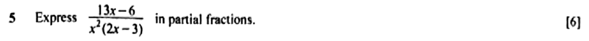 |
Model solution
\[ \frac{13x - 6}{x^2(2x - 3)} = \frac{A}{x} + \frac{B}{x^2} + \frac{C}{2x - 3} \]
\[ 13x - 6 = Ax(2x - 3) + B(2x - 3) + Cx^2 \]
Let \(x = 0\): \(-6 = -3B \Rightarrow B = 2\). Let \(x = \tfrac32\): \(\tfrac{39}{2} - 6 = \tfrac94 C \Rightarrow \tfrac{27}{2} = \tfrac94 C \Rightarrow C = 6\). Coefficient of \(x^2\): \(0 = 2A + C \Rightarrow A = -3\). \(\dfrac{13x - 6}{x^2(2x - 3)} = -\dfrac3x + \dfrac{2}{x^2} + \dfrac{6}{2x - 3}\)
|
Teaching scriptThe denominator has a repeated factor, x squared, and repeated factors always get two fractions: A over x and B over x squared. Then add C over two x minus three for the other factor. \[ 13x - 6 = Ax(2x - 3) + B(2x - 3) + Cx^2 \]
Now pick values of x that wipe out terms. x equals zero leaves minus six equals minus three B, so B is two. x equals three halves leaves thirteen and a half equals nine quarters C, so C is six. \[ B = 2, \qquad C = 6 \]
There's no value that leaves A on its own, so compare the x squared coefficients instead: zero equals two A plus C, which makes A minus three. \[ -\frac3x + \frac{2}{x^2} + \frac{6}{2x - 3} \]
Watch for: writing only A/x² for the repeated factor. You need both A/x and B/x². |
51/2162022 P1 Q3Whole question 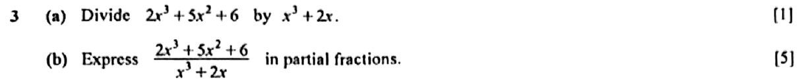 |
Model solution(a)
\[ 2x^3 + 5x^2 + 6 = 2(x^3 + 2x) + 5x^2 - 4x + 6 \]
Quotient \(2\), remainder \(5x^2 - 4x + 6\), i.e. \(\dfrac{2x^3 + 5x^2 + 6}{x^3 + 2x} = 2 + \dfrac{5x^2 - 4x + 6}{x^3 + 2x}\)
(b)
\[ \frac{5x^2 - 4x + 6}{x(x^2 + 2)} = \frac{A}{x} + \frac{Bx + C}{x^2 + 2} \]
\[ 5x^2 - 4x + 6 = A(x^2 + 2) + (Bx + C)x \]
Let \(x = 0\): \(6 = 2A \Rightarrow A = 3\). Coefficient of \(x^2\): \(5 = A + B \Rightarrow B = 2\). Coefficient of \(x\): \(C = -4\). \(\dfrac{2x^3 + 5x^2 + 6}{x^3 + 2x} = 2 + \dfrac{3}{x} + \dfrac{2x - 4}{x^2 + 2}\)
|
Teaching script(a) Top and bottom are both cubics, so the fraction is improper. Divide first. Two times x cubed plus two x gives two x cubed plus four x. Take that away from the numerator. \[ 2x^3 + 5x^2 + 6 = 2(x^3 + 2x) + 5x^2 - 4x + 6 \]
The quotient is two and the remainder is five x squared minus four x plus six. Watch for: missing that there's no \(x\) term in the numerator, so \(0 - 4x = -4x\). (b) Factorise the denominator: x times x squared plus two. That quadratic won't factorise, so it needs B x plus C on top. \[ \frac{5x^2 - 4x + 6}{x(x^2 + 2)} = \frac{A}{x} + \frac{Bx + C}{x^2 + 2} \]
Multiply through and compare. \[ 5x^2 - 4x + 6 = A(x^2 + 2) + (Bx + C)x \]
Put x equals nought: six equals two A, so A is three. The x squared terms give five equals A plus B, so B is two. The x terms give C equals minus four. \[ 2 + \frac{3}{x} + \frac{2x - 4}{x^2 + 2} \]
And don't leave the two from part (a) behind. It belongs in the final answer. Watch for: writing \(\frac{B}{x^2 + 2}\) with only a constant on top. A quadratic factor needs \(Bx + C\). |
52/2162023 P1 Q2Whole question 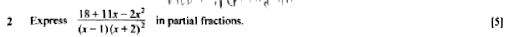 |
Model solution
\[ \frac{18 + 11x - 2x^2}{(x-1)(x+2)^2} = \frac{A}{x-1} + \frac{B}{x+2} + \frac{C}{(x+2)^2} \]
\[ 18 + 11x - 2x^2 = A(x+2)^2 + B(x-1)(x+2) + C(x-1). \]
Let \(x = 1\): \(27 = 9A\), so \(A = 3\). Let \(x = -2\): \(18 - 22 - 8 = -3C\), so \(-12 = -3C\) and \(C = 4\). Compare coefficients of \(x^2\): \(-2 = A + B\), so \(B = -5\). \(\dfrac{3}{x-1} - \dfrac{5}{x+2} + \dfrac{4}{(x+2)^2}\)
|
Teaching scriptThe denominator has a repeated factor, x plus two squared, so you need three fractions: A over x minus one, B over x plus two, and C over x plus two squared. Top is degree two, bottom is degree three, so no long division needed first. \[ 18 + 11x - 2x^2 = A(x+2)^2 + B(x-1)(x+2) + C(x-1) \]
Put x equals one, and the B and C terms vanish. Eighteen plus eleven minus two is twenty-seven, which equals nine A, so A is three. Put x equals minus two, and only C survives. Eighteen minus twenty-two minus eight is minus twelve, which equals minus three C, so C is four. No value of x gets B on its own, so compare the x squared terms instead: minus two equals A plus B. That gives B equals minus five. \[ \frac{3}{x-1} - \frac{5}{x+2} + \frac{4}{(x+2)^2} \]
Watch for: leaving out the B over x plus two term. A repeated factor needs both powers, every time. |
53/2162024 P1 Q12Whole question 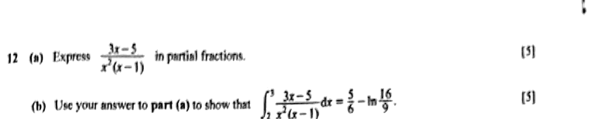 |
Model solution(a)
\[ \frac{3x - 5}{x^2(x-1)} = \frac{A}{x} + \frac{B}{x^2} + \frac{C}{x - 1} \]
\[ 3x - 5 = Ax(x-1) + B(x-1) + Cx^2 \]
Let \(x = 1\): \(-2 = C\). Let \(x = 0\): \(-5 = -B\), so \(B = 5\). Comparing coefficients of \(x^2\): \(0 = A + C\), so \(A = 2\). \(\dfrac{3x - 5}{x^2(x-1)} = \dfrac{2}{x} + \dfrac{5}{x^2} - \dfrac{2}{x - 1}\)
(b)
\[ \begin{aligned} \int_2^3 \frac{3x - 5}{x^2(x-1)}\,dx &= \int_2^3 \left( \frac{2}{x} + \frac{5}{x^2} - \frac{2}{x-1} \right) dx \\ &= \Big[ 2\ln x - \frac5x - 2\ln(x-1) \Big]_2^3 \\ &= \left(2\ln 3 - \frac53 - 2\ln 2\right) - \left(2\ln 2 - \frac52 - 2\ln 1\right) \\ &= \frac56 + 2\ln 3 - 4\ln 2 \\ &= \frac56 + \ln 9 - \ln 16 \\ &= \frac56 - \ln\frac{16}{9} \quad \text{(shown)} \end{aligned} \]
|
Teaching script(a) The denominator has a repeated factor, x squared, and a linear factor, x minus one. A repeated factor gets two terms, A over x and B over x squared. Then add C over x minus one for the linear one. \[ 3x - 5 = Ax(x-1) + B(x-1) + Cx^2 \]
Now pick x values that wipe terms out. Put x equals one and you get minus two equals C. Put x equals zero: minus five equals minus B, so B is five. A is the stubborn one, so compare x squared coefficients: zero equals A plus C, which makes A two. \[ \frac{2}{x} + \frac{5}{x^2} - \frac{2}{x - 1} \]
Watch for: writing only A over x squared for the repeated factor. You'd end up with too few constants to make it work. (b) Integrate each piece on its own. Two over x gives two ln x. Five over x squared is five x to the minus two, which integrates to minus five over x. Minus two over x minus one gives minus two ln of x minus one. \[ \Big[ 2\ln x - \frac5x - 2\ln(x-1) \Big]_2^3 \]
Put in three, then take away what you get at two. Ln one is zero, which saves you a term. The logs collect to two ln three minus four ln two. The fractions give minus five thirds plus five halves, which is five sixths. \[ \frac56 + \ln 9 - \ln 16 = \frac56 - \ln\frac{16}{9} \]
Watch for: integrating five over x squared into five ln of x squared. Only one over x gives a log. |
A5 Binomial expansions
First few terms, or a specified term
4 questions54/2162019 P1 Q7Parts (i)Syllabus 4047 paper 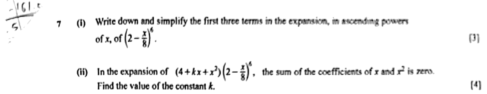 |
Model solution for parts (i)(i)
\[ \begin{aligned} \left(2-\frac{x}{8}\right)^6 &= 2^6 + \binom{6}{1}2^5\left(-\frac{x}{8}\right) + \binom{6}{2}2^4\left(-\frac{x}{8}\right)^2 + \cdots \\ &= 64 - 24x + \frac{15}{4}x^2 + \cdots \end{aligned} \]
\(64 - 24x + \dfrac{15}{4}x^2\)
|
Teaching script for parts (i)(i) First three terms of two minus x over eight, to the power six. Use the binomial expansion with a as two and b as minus x over eight. Keep that minus sign inside the bracket. \[ 2^6 + \binom{6}{1}2^5\left(-\tfrac{x}{8}\right) + \binom{6}{2}2^4\left(-\tfrac{x}{8}\right)^2 \]
Two to the six is sixty-four. Six times thirty-two times minus x over eight is minus twenty-four x. Fifteen times sixteen times x squared over sixty-four is fifteen over four x squared. \[ 64 - 24x + \tfrac{15}{4}x^2 \]
Watch for: squaring minus x over eight and getting minus x squared over sixty-four. A negative squared is positive. |
55/2162021 P2 Q6Parts (a) 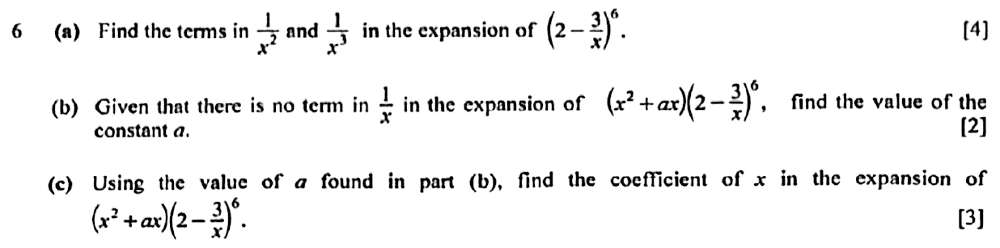 |
Model solution for parts (a)(a) General term: \(T_{r+1} = \binom{6}{r}2^{6-r}\left(-\dfrac{3}{x}\right)^r\). \[ r = 2: \quad \binom62 (2^4)\left(-\frac3x\right)^2 = 15(16)\left(\frac{9}{x^2}\right) = \frac{2160}{x^2} \] \[ r = 3: \quad \binom63 (2^3)\left(-\frac3x\right)^3 = 20(8)\left(-\frac{27}{x^3}\right) = -\frac{4320}{x^3} \]\(\dfrac{2160}{x^2}\) and \(-\dfrac{4320}{x^3}\)
|
Teaching script for parts (a)(a) Write down the general term of two minus three over x, to the sixth: six choose r, times two to the six minus r, times minus three over x, to the r. The power of x is minus r. So for x to the minus two you need r equals two, and for x to the minus three you need r equals three. \[ T_{r+1} = \binom{6}{r}2^{6-r}\left(-\frac{3}{x}\right)^r \]
For r equals two: fifteen times sixteen times nine over x squared. That's two thousand one hundred and sixty over x squared. \[ \frac{2160}{x^2} \]
For r equals three: twenty times eight times minus twenty-seven over x cubed. That's minus four thousand three hundred and twenty over x cubed. \[ -\frac{4320}{x^3} \]
Watch for: losing the minus sign. \((-3)^3 = -27\), so the \(x^{-3}\) term is negative. |
56/2162022 P1 Q5Parts (a) 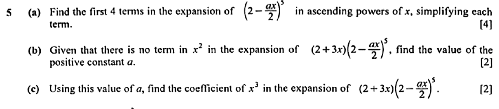 |
Model solution for parts (a)(a)
\[ \begin{aligned}
\left(2 - \frac{ax}{2}\right)^5 &= 2^5 + \binom51 2^4\left(-\frac{ax}{2}\right) + \binom52 2^3\left(-\frac{ax}{2}\right)^2 + \binom53 2^2\left(-\frac{ax}{2}\right)^3 + \cdots \\
&= 32 + 80\left(-\frac{ax}{2}\right) + 80\left(\frac{a^2x^2}{4}\right) + 40\left(-\frac{a^3x^3}{8}\right) + \cdots
\end{aligned} \]
\(32 - 40ax + 20a^2x^2 - 5a^3x^3 + \cdots\)
|
Teaching script for parts (a)(a) Expand with the binomial theorem, with two as the first term and minus a x over two as the second. Write out the first four terms using five choose r. \[ 2^5 + \binom51 2^4\left(-\frac{ax}{2}\right) + \binom52 2^3\left(-\frac{ax}{2}\right)^2 + \binom53 2^2\left(-\frac{ax}{2}\right)^3 \]
Now work each one out. Thirty-two. Then eighty times minus a x over two, which is minus forty a x. Then eighty times a squared x squared over four, so twenty a squared x squared. Then forty times minus a cubed x cubed over eight, which is minus five a cubed x cubed. \[ 32 - 40ax + 20a^2x^2 - 5a^3x^3 \]
Watch for: squaring \(\frac{ax}{2}\) as \(\frac{a^2x^2}{2}\). The 2 underneath gets squared too. |
57/2162025 P1 Q7Parts (a) 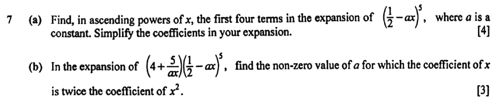 |
Model solution for parts (a)(a)
\[ \begin{aligned} \left(\tfrac{1}{2} - ax\right)^5 &= \left(\tfrac{1}{2}\right)^5 + \binom{5}{1}\left(\tfrac{1}{2}\right)^4(-ax) + \binom{5}{2}\left(\tfrac{1}{2}\right)^3(-ax)^2 + \binom{5}{3}\left(\tfrac{1}{2}\right)^2(-ax)^3 + \cdots \\ &= \tfrac{1}{32} - \tfrac{5a}{16}x + \tfrac{10a^2}{8}x^2 - \tfrac{10a^3}{4}x^3 + \cdots \end{aligned} \]
\(\tfrac{1}{32} - \tfrac{5a}{16}x + \tfrac{5a^2}{4}x^2 - \tfrac{5a^3}{2}x^3 + \cdots\)
|
Teaching script for parts (a)(a) Expand a half minus a x, all to the fifth, as far as the x cubed term. Binomial theorem, one term at a time. The powers of a half count down from five while the powers of negative a x count up from nought. Keep the minus sign glued to the a x. \[ \left(\tfrac{1}{2}\right)^5 + \binom{5}{1}\left(\tfrac{1}{2}\right)^4(-ax) + \binom{5}{2}\left(\tfrac{1}{2}\right)^3(-ax)^2 + \binom{5}{3}\left(\tfrac{1}{2}\right)^2(-ax)^3 \]
Now tidy each term. The first is one over thirty-two. Next, five times a sixteenth times negative a x, which is negative five a over sixteen x. Third, ten times an eighth times a squared x squared, five a squared over four. Last, ten times a quarter times negative a cubed x cubed, negative five a cubed over two. \[ \tfrac{1}{32} - \tfrac{5a}{16}x + \tfrac{5a^2}{4}x^2 - \tfrac{5a^3}{2}x^3 + \cdots \]
Watch for: losing the minus signs. Odd powers of negative a x come out negative. |
Term independent of x; the general term
2 questions58/2162020 P2 Q3Whole questionSyllabus 4047 paper 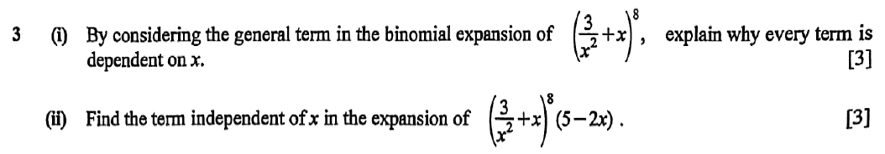 |
Model solution(i)
\[ T_{r+1} = \binom{8}{r}\left(\frac{3}{x^2}\right)^{8-r} x^r = \binom{8}{r}3^{8-r}x^{3r-16} \]
A term independent of \(x\) needs \(3r - 16 = 0\), i.e. \(r = \tfrac{16}{3}\). \(r\) must be a whole number from 0 to 8, and \(\tfrac{16}{3}\) is not an integer. So no term has power \(x^0\): every term depends on \(x\).
(ii) By (i), the expansion of \(\left(\frac{3}{x^2} + x\right)^8\) has no constant term, so the 5 contributes nothing. The \(-2x\) must multiply the \(x^{-1}\) term: \(3r - 16 = -1 \Rightarrow r = 5\). \[ T_6 = \binom{8}{5}3^{3}x^{-1} = 56 \times 27\,x^{-1} = 1512x^{-1} \] \[ \text{Term independent of } x = (-2x)(1512x^{-1}) \]\(-3024\)
|
Teaching script(i) Any question about one particular term in a binomial expansion starts in the same place: the general term. Here it's eight choose r, times three over x squared to the power eight minus r, times x to the r. \[ T_{r+1} = \binom{8}{r}3^{8-r}x^{3r-16} \]
Now collect the powers of x. Three over x squared to the eight minus r gives x to the minus sixteen plus two r. Add the x to the r, and the total power is three r minus sixteen. For a term with no x, that power has to be zero, which makes r sixteen thirds. But r tells you which term you're on, so it has to be a whole number from nought to eight. Sixteen thirds isn't, so there's no term with x to the power zero. Watch for: writing "the power is never zero" with no working. Show the general term and the equation 3r − 16 = 0 first. (ii) Now the expansion gets multiplied by five minus two x. A constant can come from two places: five times a constant term, or minus two x times an x to the minus one term. Part (i) already told us there's no constant term, so only the second route is open. \[ 3r - 16 = -1 \;\Rightarrow\; r = 5 \]
With r equal to five: eight choose five is fifty-six, and three cubed is twenty-seven, which gives fifteen hundred and twelve over x. \[ T_6 = 1512x^{-1}, \qquad (-2x)(1512x^{-1}) = -3024 \]
So the term independent of x is minus three thousand and twenty-four. Watch for: losing the minus sign from −2x. The answer is negative. |
59/2162024 P1 Q5Parts (a) 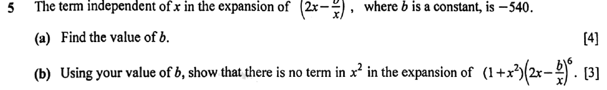 |
Model solution for parts (a)(a)
\[ T_{r+1} = \binom{6}{r}(2x)^{6-r}\left(-\frac{b}{x}\right)^r = \binom{6}{r}2^{6-r}(-b)^r x^{6-2r} \]
Term independent of \(x\): \(6 - 2r = 0\), so \(r = 3\). \[ \begin{aligned} \binom63 2^3(-b)^3 &= -540 \\ -160b^3 &= -540 \\ b^3 &= \frac{27}{8} \end{aligned} \]\(b = \dfrac32\)
|
Teaching script for parts (a)(a) "Independent of x" means the power of x is zero. So write out the general term and set that power to zero. The general term is six choose r, times two x to the six minus r, times minus b over x to the r. \[ T_{r+1} = \binom{6}{r}2^{6-r}(-b)^r x^{6-2r} \]
The power of x is six minus two r. Make that zero and r is three. The term is then twenty, times eight, times minus b cubed, which is minus one hundred and sixty b cubed. \[ -160b^3 = -540 \;\Rightarrow\; b^3 = \frac{27}{8} \;\Rightarrow\; b = \frac32 \]
Watch for: losing the minus sign in minus b over x when you cube it. Cubing keeps the minus. |
Product with a bracket and a coefficient condition
6 questions60/2162019 P1 Q7Parts (ii)Syllabus 4047 paper |
Model solution for parts (ii)(ii)
\[ (4+kx+x^2)\left(64 - 24x + \tfrac{15}{4}x^2 + \cdots\right) \]
\[ \begin{aligned} \text{Coefficient of } x &= 4(-24) + 64k = 64k - 96 \\ \text{Coefficient of } x^2 &= 4\left(\tfrac{15}{4}\right) + k(-24) + 64 = 79 - 24k \end{aligned} \]
\[ \begin{aligned} (64k - 96) + (79 - 24k) &= 0 \\ 40k &= 17 \\ k &= \frac{17}{40} \end{aligned} \]
\(k = \dfrac{17}{40}\)
|
Teaching script for parts (ii)(ii) Now multiply four plus k x plus x squared by your expansion. You only need the x terms and the x squared terms, so only pick out the pairs that make those powers. For x: four times minus twenty-four x, plus k x times sixty-four. \[ \text{coefficient of } x = 64k - 96 \]
For x squared: four times fifteen over four, plus k x times minus twenty-four x, plus x squared times sixty-four. \[ \text{coefficient of } x^2 = 15 - 24k + 64 = 79 - 24k \]
The question tells you these coefficients add up to zero. \[ 64k - 96 + 79 - 24k = 0 \;\Rightarrow\; 40k = 17 \;\Rightarrow\; k = \tfrac{17}{40} \]
Watch for: missing the x squared times sixty-four pair. There are three ways to make x squared here, not two. That third one is the one people forget. |
61/2162021 P2 Q6Parts (b)(c) |
Model solution for parts (b)(c)(b) The term in \(\dfrac1x\) comes from \(x^2 \times \left(-\dfrac{4320}{x^3}\right)\) and \(ax \times \dfrac{2160}{x^2}\): \[ -4320 + 2160a = 0 \;\Rightarrow\; a = 2 \]\(a = 2\)
(c) Further terms needed: \(r = 0\): \(2^6 = 64\); \(r = 1\): \(\binom61(2^5)\left(-\dfrac3x\right) = -\dfrac{576}{x}\). The term in \(x\) comes from \(x^2 \times \left(-\dfrac{576}{x}\right)\) and \(2x \times 64\): \[ -576 + 128 = -448 \]Coefficient of \(x\) is \(-448\).
|
Teaching script for parts (b)(c)(b) Now multiply by x squared plus a x. A one-over-x term can come from two pairings: x squared with the x to the minus three term, and a x with the x to the minus two term. \[ x^2\left(-\frac{4320}{x^3}\right) + ax\left(\frac{2160}{x^2}\right) \]
There's no one-over-x term, so those two coefficients add to zero. Minus four three two zero plus two one six zero a equals nought, so a is two. \[ -4320 + 2160a = 0 \;\Rightarrow\; a = 2 \]
Watch for: pairing \(x^2\) with the \(x^{-2}\) term. That gives you a constant, not \(\frac1x\). (c) For the term in x, you need two more terms of the expansion. r equals nought gives sixty-four. r equals one gives six times thirty-two times minus three over x, which is minus five hundred and seventy-six over x. \[ 64, \qquad -\frac{576}{x} \]
With a equal to two, the x term comes from x squared times minus five seven six over x, and two x times sixty-four. So that's minus five seven six plus one two eight. \[ -576 + 128 = -448 \]
The coefficient of x is minus four hundred and forty-eight. Watch for: forgetting to use \(a = 2\) from part (b) in the \(2x \times 64\) product. |
62/2162022 P1 Q5Parts (b)(c) |
Model solution for parts (b)(c)(b) Term in \(x^2\) in \((2 + 3x)(32 - 40ax + 20a^2x^2 - \cdots)\): \[ 2(20a^2) + 3(-40a) = 0 \;\Rightarrow\; 40a(a - 3) = 0 \]Since \(a\) is positive, \(a = 3\). \(a = 3\)
(c) Coefficient of \(x^3\): \[ 2(-5a^3) + 3(20a^2) = 2(-135) + 3(180) = -270 + 540 = 270 \]\(270\)
|
Teaching script for parts (b)(c)(b) Multiply by two plus three x and pick out the x squared terms. That's two times twenty a squared x squared, and three x times minus forty a x. \[ 2(20a^2) + 3(-40a) = 0 \]
There's no x squared term, so those add to zero. Factorise: forty a times a minus three equals nought. a is positive, so a is three. \[ 40a(a - 3) = 0 \;\Rightarrow\; a = 3 \]
Watch for: giving \(a = 0\) as well. The question says \(a\) is positive. (c) For the x cubed term: two times minus five a cubed, plus three times twenty a squared. Put in a equals three. Minus five times twenty-seven is minus one hundred and thirty-five, and twenty times nine is one hundred and eighty. \[ 2(-135) + 3(180) = -270 + 540 = 270 \]
The coefficient of x cubed is two hundred and seventy. Watch for: using only one of the two pairings. Each \(x^3\) term in the product needs both. |
63/2162023 P2 Q1Whole question 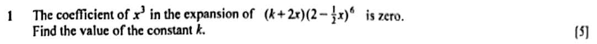 |
Model solutionGeneral term of \(\left(2 - \tfrac{1}{2}x\right)^6\): \(\dbinom{6}{r}2^{6-r}\left(-\tfrac{1}{2}x\right)^r\). \[ \begin{aligned} x^2 \text{ term } (r=2)&: \binom{6}{2}(2^4)\left(\frac{1}{4}\right)x^2 = 60x^2, \\ x^3 \text{ term } (r=3)&: \binom{6}{3}(2^3)\left(-\frac{1}{8}\right)x^3 = -20x^3. \end{aligned} \]Coefficient of \(x^3\) in \((k + 2x)\left(2 - \tfrac{1}{2}x\right)^6\): \[ k(-20) + 2(60) = 0 \quad\Rightarrow\quad 20k = 120. \]\(k = 6\)
|
Teaching scriptThe bracket k plus two x multiplies the whole expansion. An x cubed term comes from k times the x cubed term, plus two x times the x squared term. So you need those two terms of two minus a half x, to the sixth. \[ T_{r+1} = \binom{6}{r}2^{6-r}\left(-\tfrac{1}{2}x\right)^r \]
For x squared, r is two: fifteen times sixteen times a quarter, which is sixty. For x cubed, r is three: twenty times eight times minus an eighth, which is minus twenty. \[ 60x^2, \qquad -20x^3 \]
The x cubed term disappears, so its coefficient must be zero. \[ k(-20) + 2(60) = 0 \;\Rightarrow\; k = 6 \]
Watch for: the sign. Minus a half, cubed, is negative, so the x cubed coefficient is minus twenty. |
64/2162024 P1 Q5Parts (b) |
Model solution for parts (b)(b) The \(x^2\) term of \((1 + x^2)\left(2x - \frac{3}{2x}\right)^6\) comes from \(1 \times (x^2\text{ term}) + x^2 \times (\text{constant term})\). \(x^2\) term: \(6 - 2r = 2\), so \(r = 2\): \[ \binom62 2^4\left(-\tfrac32\right)^2 x^2 = 15 \times 16 \times \tfrac94 x^2 = 540x^2 \]Constant term \(= -540\) (from part (a)). \[ \text{Coefficient of } x^2 = 540 + (-540) = 0 \]The coefficient of \(x^2\) is 0, so there is no term in \(x^2\).
|
Teaching script for parts (b)(b) Once you multiply by one plus x squared, an x squared term can turn up two ways. Either one times the x squared term of the expansion, or x squared times the constant term. For the x squared term, six minus two r equals two, so r is two. That's fifteen times sixteen times nine quarters, which is five hundred and forty. \[ \binom62 2^4\left(-\tfrac32\right)^2 = 540 \]
The constant term is minus five hundred and forty, from part (a). Add the two together: five hundred and forty plus minus five hundred and forty is zero. \[ 540 + (-540) = 0 \]
The coefficient of x squared is zero, so the x squared term cancels out completely. That's what they wanted you to show. Watch for: counting only one times the x squared term and forgetting the constant term. Both routes count. |
65/2162025 P1 Q7Parts (b) |
Model solution for parts (b)(b)
\[ \left(4 + \frac{5}{ax}\right)\left(\tfrac{1}{32} - \tfrac{5a}{16}x + \tfrac{5a^2}{4}x^2 - \tfrac{5a^3}{2}x^3 + \cdots\right) \]
\[ \text{Coefficient of } x = 4\left(-\tfrac{5a}{16}\right) + \frac{5}{a}\left(\tfrac{5a^2}{4}\right) = -\tfrac{5a}{4} + \tfrac{25a}{4} = 5a \]
\[ \text{Coefficient of } x^2 = 4\left(\tfrac{5a^2}{4}\right) + \frac{5}{a}\left(-\tfrac{5a^3}{2}\right) = 5a^2 - \tfrac{25a^2}{2} = -\tfrac{15a^2}{2} \]
\[ \begin{aligned} 5a &= 2\left(-\tfrac{15a^2}{2}\right) \\ 15a^2 + 5a &= 0 \\ 5a(3a + 1) &= 0 \end{aligned} \]
\(a = -\tfrac{1}{3}\) (\(a \ne 0\))
|
Teaching script for parts (b)(b) Multiply four plus five over a x by your expansion, but only find the terms you need. For the x term: four times the x term, plus five over a x times the x squared term. The x on the bottom cancels one power of x. \[ 4\left(-\tfrac{5a}{16}\right) + \frac{5}{a}\left(\tfrac{5a^2}{4}\right) = 5a \]
For the x squared term: four times the x squared term, plus five over a x times the x cubed term. \[ 4\left(\tfrac{5a^2}{4}\right) + \frac{5}{a}\left(-\tfrac{5a^3}{2}\right) = -\tfrac{15a^2}{2} \]
The x coefficient is twice the x squared coefficient, so five a equals negative fifteen a squared. Bring it all to one side and factorise: five a, times three a plus one, equals zero. a isn't zero, so a is negative a third. Watch for: pairing five over a x with the x term. Because of that x on the bottom, it has to pair with the term one power higher. |
A6 Exponential and logarithmic functions
Exponential equations
7 questions66/2162020 P2 Q8Parts (a)Syllabus 4047 paper 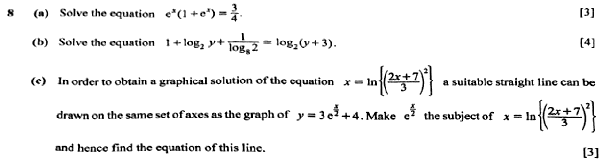 |
Model solution for parts (a)(a) Let \(u = e^x\). \[ \begin{aligned} u(1 + u) &= \tfrac34 \\ 4u^2 + 4u - 3 &= 0 \\ (2u - 1)(2u + 3) &= 0 \end{aligned} \]\(e^x = -\tfrac32\) has no solution since \(e^x \gt 0\). So \(e^x = \tfrac12\). \(x = \ln\tfrac12 = -\ln 2 = -0.693\) (3 s.f.)
|
Teaching script for parts (a)(a) e to the x shows up twice, so call it u. The equation becomes u times one plus u equals three quarters. Multiply by four and factorise. \[ 4u^2 + 4u - 3 = 0 \;\Rightarrow\; (2u - 1)(2u + 3) = 0 \]
u equals minus three halves can't happen, because e to the x is always positive. So e to the x is a half, and x is ln a half, which is minus ln two, minus zero point six nine three. Watch for: keeping the negative root, or rejecting it without saying why. Write that e^x = −3/2 is impossible because e^x is positive. |
67/2162021 P1 Q12Parts (a) 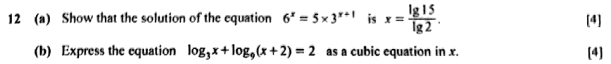 |
Model solution for parts (a)(a)
\[ \begin{aligned} 6^x &= 5 \times 3^{x+1} \\ 2^x \times 3^x &= 15 \times 3^x \\ 2^x &= 15 \\ x\lg 2 &= \lg 15 \end{aligned} \]
\(x = \dfrac{\lg 15}{\lg 2}\) (shown)
|
Teaching script for parts (a)(a) Six to the x splits into two to the x times three to the x. On the other side, three to the x plus one is three times three to the x, so the right side is fifteen times three to the x. \[ 2^x \times 3^x = 15 \times 3^x \]
Divide both sides by three to the x, which is never zero, so that's allowed. Two to the x equals fifteen. Take lg of both sides and bring the power down to the front. \[ x\lg 2 = \lg 15 \;\Rightarrow\; x = \frac{\lg 15}{\lg 2} \]
Watch for: turning 5 × 3^(x+1) into 15^(x+1). Only the 3 carries the power. The 5 stays where it is. |
68/2162021 P2 Q1Whole question |
Model solutionMultiply by \(e^x\) and let \(u = e^x\): \[ \begin{aligned} 3e^{2x} + 5e^x &= 2 \\ 3u^2 + 5u - 2 &= 0 \\ (3u - 1)(u + 2) &= 0 \\ u = \tfrac13 \quad &\text{or} \quad u = -2 \end{aligned} \]Since \(e^x \gt 0\) for all real \(x\), \(e^x = -2\) has no solution. Only \(e^x = \tfrac13\) gives a solution, so the equation has only one solution. \[ x = \ln \tfrac13 = -1.0986\ldots \]\(x = -1.1\) (2 s.f.)
|
Teaching scriptSee the e to the minus x? Multiply every term by e to the x to get rid of it. Then the whole thing turns into a quadratic in e to the x. \[ 3e^{2x} + 5e^x = 2 \]
Let u be e to the x. You get three u squared plus five u minus two equals nought, and that factorises as three u minus one, times u plus two. \[ 3u^2 + 5u - 2 = 0 \;\Rightarrow\; (3u - 1)(u + 2) = 0 \]
So u is a third or minus two. Now here's the explanation they're after. e to the x is positive for every real x, so e to the x equals minus two has no solution at all. Only one value of u works, and that's why there's only one solution. From e to the x equals a third, take natural logs. x is ln of a third, which is minus one point one to two significant figures. \[ x = \ln\tfrac13 \approx -1.1 \]
Watch for: writing "no solution" with no reason. Say that \(e^x \gt 0\) for all \(x\). That sentence is the mark. |
69/2162022 P2 Q6Parts (a) |
Model solution for parts (a)(a) \(4^{x-1} = \dfrac{(2^x)^2}{4}\). Let \(u = 2^x\): \[ \begin{aligned} u + \frac{u^2}{4} &= 15 \\ u^2 + 4u - 60 &= 0 \\ (u + 10)(u - 6) &= 0. \end{aligned} \]\(u = -10\) is rejected since \(2^x \gt 0\). So \(2^x = 6\): \[ x = \frac{\lg 6}{\lg 2}. \]\(x = 2.58\) (3 s.f.)
|
Teaching script for parts (a)(a) Two bases, two and four, but four is two squared in disguise. Rewrite four to the x minus one as two to the x, squared, divided by four. Now the whole thing is a quadratic in two to the x. \[ u = 2^x: \quad u + \frac{u^2}{4} = 15 \;\Rightarrow\; u^2 + 4u - 60 = 0 \;\Rightarrow\; (u+10)(u-6) = 0 \]
Two to the x can never be negative, so throw out minus ten and say why. That leaves two to the x equals six. Take logs. \[ x = \frac{\lg 6}{\lg 2} = 2.58 \]
Watch for: rejecting u equals minus ten without a reason. One short line saying two to the x is always positive does it. |
70/2162023 P2 Q6Parts (b)(c) |
Model solution for parts (b)(c)(b) Let \(u = 2^y\), so \(4^y = u^2\) and \(2^{-y} = \dfrac1u\). \[ \begin{aligned} 6u^2 + \frac2u &= 7u + 1 \\ 6u^3 - 7u^2 - u + 2 &= 0 \\ (2u+1)(3u-2)(u-1) &= 0 \quad \text{(from part (a))} \end{aligned} \]\(u = -\tfrac12\) is rejected since \(2^y \gt 0\). So \(2^y = \tfrac23\) or \(2^y = 1\). \[ 2^y = 1 \Rightarrow y = 0, \qquad 2^y = \tfrac23 \Rightarrow y = \frac{\lg \frac23}{\lg 2} = -0.585 \ (3\text{ s.f.}) \]\(y = 0\) or \(y = -0.585\)
(c)
\[ y = \log_2 \tfrac23 = \log_2 2 - \log_2 3 = 1 - \log_2 3 \]
\(a = 2,\ b = 3\)
|
Teaching script for parts (b)(c)(b) Look at the powers here: four to the y, two to the y, two to the minus y. They're all powers of two, so let u be two to the y. Then four to the y becomes u squared, and two to the minus y becomes one over u. \[ 6u^2 + \frac2u = 7u + 1 \;\Rightarrow\; 6u^3 - 7u^2 - u + 2 = 0 \]
Multiply through by u, move everything to one side, and you get the same cubic as part (a). The examiner didn't put them side by side by accident. So u is minus a half, two thirds, or one. Throw away minus a half, because two to any power is positive. Two to the y equals one gives y equals zero. For two to the y equals two thirds, take logs: y is lg of two thirds over lg two, which is minus zero point five eight five to three significant figures. \[ y = 0 \quad \text{or} \quad y = -0.585 \]
Watch for: keeping u equals minus a half, or forgetting that y equals zero is a solution as well. (c) The non-zero solution is y equals log base two of two thirds. Split it with the quotient law into log base two of two, minus log base two of three. \[ y = \log_2 \tfrac23 = 1 - \log_2 3 \]
Log base two of two is one, so y is one minus log base two of three. That makes a equal to two and b equal to three. Watch for: treating log two over log three as if it were log two minus log three. Dividing logs is not the same as subtracting them. |
71/2162024 P2 Q5Parts (b) |
Model solution for parts (b)(b) Let \(u = e^x\). \[ \begin{aligned} u + \frac1u &= 2.9 \\ u^2 - 2.9u + 1 &= 0 \\ 10u^2 - 29u + 10 &= 0 \\ (2u - 5)(5u - 2) &= 0 \\ u = \tfrac52 \ &\text{ or } \ u = \tfrac25 \end{aligned} \]\(x = \ln\dfrac52\) or \(x = \ln\dfrac25\)
|
Teaching script for parts (b)(b) E to the minus x is one over e to the x, so let u be e to the x. The equation turns into u plus one over u equals two point nine. \[ u^2 - 2.9u + 1 = 0 \;\Rightarrow\; 10u^2 - 29u + 10 = 0 \;\Rightarrow\; (2u - 5)(5u - 2) = 0 \]
Multiply by u, then by ten to get rid of the decimal, and factorise. U is five halves or two fifths. Both are positive, so both are fine as values of e to the x. \[ x = \ln\tfrac52 \quad \text{or} \quad x = \ln\tfrac25 \]
They want logarithmic form, so leave them as ln five halves and ln two fifths. No need to reach for the calculator. Watch for: turning the answers into decimals when they asked for logarithmic form. |
72/2162025 P2 Q8Whole question |
Model solution(a)
\[ \begin{aligned} 2^y &= 5\left(3^{2-y}\right) = \frac{5 \times 9}{3^y} \\ 2^y \times 3^y &= 45 \\ 6^y &= 45 \\ y &= \frac{\lg 45}{\lg 6} = 2.1245 \end{aligned} \]
\(y = 2.12\)
(b) Let \(u = 2^x\) and \(v = 3^y\). Then \(3^{y+1} = 3v\) and \(2^{x-1} = \tfrac{1}{2}u\). \[ \begin{aligned} 9u + 6v &= 38 \quad (1) \\ \tfrac{15}{2}u - 21v &= 23 \quad (2) \end{aligned} \]\((1) \times 3.5\): \(31.5u + 21v = 133\). Adding to (2): \[ 39u = 156 \;\Rightarrow\; u = 4 \] \[ 6v = 38 - 36 = 2 \;\Rightarrow\; v = \tfrac{1}{3} \] \[ 2^x = 4 \Rightarrow x = 2, \qquad 3^y = 3^{-1} \Rightarrow y = -1 \]\(x = 2\), \(y = -1\)
|
Teaching script(a) The unknown is stuck in two different bases, two and three. Split three to the two minus y into nine over three to the y, then multiply across so the y-powers end up together. \[ 2^y \times 3^y = 45 \;\Rightarrow\; 6^y = 45 \]
Two to the y times three to the y is six to the y, because the powers match. Take lg of both sides: y is lg forty-five over lg six, which is two point one two to three significant figures. Watch for: writing three to the two minus y as nine minus three to the y. A power with a minus in it splits into a division, not a subtraction. (b) Both equations have powers of two and powers of three, so give them nicknames. Let u be two to the x and v be three to the y. Then three to the y plus one is three v, and two to the x minus one is half of u. \[ 9u + 6v = 38,\qquad \tfrac{15}{2}u - 21v = 23 \]
Get rid of v. Multiply the first equation by three point five so the v term becomes twenty-one v, then add it to the second. \[ 39u = 156 \;\Rightarrow\; u = 4,\qquad v = \tfrac{1}{3} \]
Now swap the nicknames back. Two to the x equals four gives x equals two. Three to the y equals a third, which is three to the minus one, so y is negative one. Watch for: stopping at u and v. The question wants x and y. |
Logarithmic equations
4 questions73/2162019 P2 Q4Whole questionSyllabus 4047 paper |
Model solution(a)
\[ \log_{16}x = \frac{\log_2 x}{\log_2 16} = \frac{\log_2 x}{4} \]
\[ \begin{aligned} \log_2 x + \tfrac{1}{4}\log_2 x &= -2.5 \\ \tfrac{5}{4}\log_2 x &= -2.5 \\ \log_2 x &= -2 \\ x &= 2^{-2} \end{aligned} \]
\(x = \dfrac{1}{4}\)
(b)(i)
\[ \begin{aligned} \lg\frac{z}{y} &= \lg(z+y) \\ \frac{z}{y} &= z + y \\ z &= zy + y^2 \\ z(1-y) &= y^2 \end{aligned} \]
\(z = \dfrac{y^2}{1-y}\)
(b)(ii) \(\lg z\) is defined only for \(z \gt 0\), so \(z \gt 0\). \(\lg y\) is defined only for \(y \gt 0\). Since \(z = \dfrac{y^2}{1-y} \gt 0\) and \(y^2 \gt 0\), the denominator must be positive: \(1 - y \gt 0\), so \(y \lt 1\). Hence \(0 \lt y \lt 1\). \(z \gt 0\); \(0 \lt y \lt 1\) because \(y \gt 0\) for \(\lg y\) to exist and \(1 - y \gt 0\) for \(z\) to be positive
|
Teaching script(a) The logs have different bases, two and sixteen. Change log base sixteen into base two. Log base two of sixteen is four. \[ \log_{16}x = \frac{\log_2 x}{4} \]
Now everything is log base two of x. Add them up: one and a quarter of them. \[ \tfrac54\log_2 x = -2.5 \;\Rightarrow\; \log_2 x = -2 \;\Rightarrow\; x = 2^{-2} \]
x is one quarter. Watch for: rejecting x because it's a fraction. A negative log is fine. Only x itself has to be positive. (b)(i) Combine lg z minus lg y into lg of z over y. With one log on each side, you can drop the logs. \[ \frac{z}{y} = z + y \]
Multiply by y, then gather the z terms on one side and factorise. \[ z = zy + y^2 \;\Rightarrow\; z(1-y) = y^2 \;\Rightarrow\; z = \frac{y^2}{1-y} \]
Watch for: writing lg z minus lg y as lg z over lg y. The law gives the log of a quotient, not a quotient of logs. Very common, very wrong. (b)(ii) Logs only exist for positive numbers. lg z appears, so z is greater than zero. lg y appears, so y is greater than zero. Now use your formula. z is y squared over one minus y. The top is positive and z has to be positive, so the bottom must be positive too. That means y is less than one. \[ z \gt 0, \qquad 0 \lt y \lt 1 \]
Watch for: stating only y greater than zero. The upper limit comes from the formula in part (i). |
74/2162020 P2 Q8Parts (b)Syllabus 4047 paper |
Model solution for parts (b)(b)
\[ \frac{1}{\log_8 2} = \log_2 8 = 3 \]
\[ \begin{aligned} 1 + \log_2 y + 3 &= \log_2(y + 3) \\ \log_2 16 + \log_2 y &= \log_2(y + 3) \\ 16y &= y + 3 \end{aligned} \]
\(y = \tfrac15\)
|
Teaching script for parts (b)(b) The odd one out here is one over log base eight of two. Flip it: one over log base a of b is log base b of a. So it's log base two of eight, which is three. \[ \frac{1}{\log_8 2} = \log_2 8 = 3 \]
The left side becomes one plus log two y plus three, so four plus log two y. Write the four as log two of sixteen and combine. \[ \log_2 16y = \log_2(y + 3) \;\Rightarrow\; 16y = y + 3 \]
Fifteen y is three, so y is one fifth. Watch for: turning 1/log₈2 into log₈(1/2). Taking the reciprocal swaps the base and the number, it doesn't flip the number. |
75/2162021 P1 Q12Parts (b) |
Model solution for parts (b)(b)
\[ \log_9(x + 2) = \frac{\log_3(x + 2)}{\log_3 9} = \tfrac12\log_3(x + 2) \]
\[ \begin{aligned} \log_3 x + \tfrac12\log_3(x + 2) &= 2 \\ 2\log_3 x + \log_3(x + 2) &= 4 \\ \log_3\left[x^2(x + 2)\right] &= 4 \\ x^2(x + 2) &= 3^4 = 81 \end{aligned} \]
\(x^3 + 2x^2 - 81 = 0\)
|
Teaching script for parts (b)(b) We've got bases three and nine, so change the base nine log into base three. Log base three of nine is two, which makes log base nine of x plus two equal to half of log base three of x plus two. \[ \log_9(x + 2) = \tfrac12\log_3(x + 2) \]
Multiply the whole equation by two to get rid of the half. Two log three x becomes log three of x squared. Combine into a single log, then remove the log: x squared times x plus two equals three to the four, which is eighty-one. \[ x^2(x + 2) = 81 \;\Rightarrow\; x^3 + 2x^2 - 81 = 0 \]
Watch for: forgetting to double the 2 on the right when you multiply through. It becomes 4, which is where the 3⁴ comes from. |
76/2162024 P2 Q3Whole question |
Model solution
\[ 3\log_8 2 = 3 \times \frac{1}{3} = 1, \qquad \log_4(x + 3) = \frac{\log_2(x + 3)}{\log_2 4} = \frac12\log_2(x + 3) \]
\[ \begin{aligned} \log_2 x - \tfrac12\log_2(x + 3) &= 1 \\ 2\log_2 x - \log_2(x + 3) &= 2 \\ \log_2 \frac{x^2}{x + 3} &= 2 \\ x^2 &= 4(x + 3) \\ x^2 - 4x - 12 &= 0 \\ (x - 6)(x + 2) &= 0 \end{aligned} \]
\(x = -2\) is rejected since \(\log_2 x\) is undefined for \(x \le 0\). \(x = 6\)
|
Teaching scriptThree different bases in one equation: two, four and eight. You can't combine logs with different bases, so get everything into base two first. Log base eight of two is one third, because eight to the one third is two. So the right-hand side, three log base eight of two, is one. Log base four of x plus three is log base two of x plus three, divided by log base two of four, which is two. \[ \log_2 x - \tfrac12\log_2(x + 3) = 1 \]
Double everything to clear the half, then use the power law and the quotient law to squash it into one log. \[ \log_2 \frac{x^2}{x + 3} = 2 \;\Rightarrow\; x^2 = 4(x + 3) \;\Rightarrow\; (x - 6)(x + 2) = 0 \]
You can't take the log of a negative number, so minus two is out. The answer is x equals six. Watch for: doubling the left side and forgetting to double the right. Whatever you do to one side, do to the other. |
Growth and decay models
5 questions77/2162019 P1 Q5Whole questionSyllabus 4047 paper |
Model solution(i) Each minute, 21% of the germs present are destroyed, so 79% of them survive. After 1 minute \(0.79N\) germs are alive; after 2 minutes \(0.79 \times 0.79N = (0.79)^2N\). The number alive is multiplied by \(0.79\) every minute, so after \(n\) minutes it is \((0.79)^nN\). (ii)
\[ \text{Fraction alive after 20 minutes} = (0.79)^{20} = 0.008965 \]
\[ x = 100\left(1 - 0.008965\right) = 99.10 \]
\(x = 99\) (2 s.f.)
(iii)
\[ \begin{aligned} Ne^{kn} &= (0.79)^nN \text{ for all } n \\ e^{k} &= 0.79 \\ k &= \ln 0.79 = -0.2357 \end{aligned} \]
\(k = \ln 0.79 \approx -0.236\)
|
Teaching script(i) This is explaining a percentage decrease. If twenty-one per cent of the germs get destroyed each minute, seventy-nine per cent survive. So every minute, the number alive gets multiplied by nought point seven nine. \[ N \to 0.79N \to (0.79)^2N \to \cdots \to (0.79)^nN \]
After one minute you have nought point seven nine N. After two, you multiply again and get nought point seven nine squared N. After n minutes you've done it n times, and that's where the power n comes from. Watch for: writing one minus nought point two one n. The decrease is repeated multiplication, not the same amount knocked off each minute. (ii) Find the fraction still alive after twenty minutes. The percentage destroyed is whatever's left over. \[ (0.79)^{20} = 0.008965 \]
That's the fraction alive. The percentage destroyed is one hundred times one minus that. \[ x = 100(1 - 0.008965) = 99.10 \]
So x is ninety-nine, to two significant figures. Bad news for the germs. Watch for: giving nought point nine per cent. That's the percentage still alive, not the percentage destroyed. (iii) The two models have to agree for every n. So N e to the k n must equal nought point seven nine to the n times N. \[ Ne^{kn} = (0.79)^nN \;\Rightarrow\; e^{k} = 0.79 \]
Cancel the N and take the n-th root of both sides, so e to the k equals nought point seven nine. Then take natural logs. \[ k = \ln 0.79 \approx -0.236 \]
k is ln nought point seven nine, about minus nought point two three six. Negative, which is what you want for decay. Watch for: a positive k. If your k comes out positive, your germs are multiplying, not dying. |
78/2162022 P2 Q1Whole question |
Model solution(a) In 2013, \(t = 3\) and \(N = 2050\): \[ 2050 = 2400e^{-3k} \;\Rightarrow\; e^{-3k} = \frac{2050}{2400} \;\Rightarrow\; k = \frac13\ln\frac{2400}{2050} = 0.052543\ldots \]In 2017, \(t = 7\): \[ N = 2400e^{-7(0.052543)} = 1661.4\ldots \]About 1660 birds
(b)
\[ 2400e^{-kt} \lt 1200 \;\Rightarrow\; e^{-kt} \lt \tfrac12 \;\Rightarrow\; t \gt \frac{\ln 2}{k} = \frac{\ln 2}{0.052543} = 13.19\ldots \]
\(t = 13.19\) falls in the year \(2010 + 13 = 2023\). 2023
|
Teaching script(a) t counts years from twenty-ten, so twenty thirteen is t equals three. Put N equals two thousand and fifty in to find k. \[ 2050 = 2400e^{-3k} \;\Rightarrow\; k = \tfrac13\ln\frac{2400}{2050} \approx 0.0525 \]
Keep that value in your calculator, don't round it. Twenty seventeen is t equals seven. \[ N = 2400e^{-7k} \approx 1661 \]
That's about one thousand six hundred and sixty birds. Watch for: using a rounded \(k\) such as 0.05. It changes the answer more than you'd expect. (b) Below half the starting number means N is less than one thousand two hundred. Divide by two thousand four hundred and take logs. \[ e^{-kt} \lt \tfrac12 \;\Rightarrow\; t \gt \frac{\ln 2}{k} \approx 13.19 \]
The inequality flips when you divide by minus k. t equals thirteen point one nine falls during the year twenty-ten plus thirteen, so the answer is twenty twenty-three. \[ 2023 \]
Watch for: rounding up to \(t = 14\) and saying 2024. The stretch from \(t = 13\) to \(t = 14\) is the year 2023. |
79/2162023 P2 Q3Whole question |
Model solution(a) At \(t = 0\), \(T_c = 86e^0 = 86\). \(86^\circ\)C
(b)
\[ 86e^{-0.06t} = 37 \quad\Rightarrow\quad e^{-0.06t} = \frac{37}{86} \quad\Rightarrow\quad t = \frac{\ln\frac{86}{37}}{0.06} = 14.06. \]
\(t = 14.1\) minutes (3 s.f.)
(c)(i)
\[ 86e^{-60\lambda} = 82 \quad\Rightarrow\quad \lambda = \frac{1}{60}\ln\frac{86}{82} = 0.000794. \]
\(\lambda = 0.000794\) (3 s.f.)
(c)(ii)
\[ \begin{aligned} 86e^{-0.06t} &= \frac{1}{2}\left(86e^{-\lambda t}\right) \\ e^{-(0.06 - \lambda)t} &= \frac{1}{2} \\ t &= \frac{\ln 2}{0.06 - 0.000794} = 11.7. \end{aligned} \]
\(t = 11.7\) minutes (3 s.f.)
|
Teaching script(a) Initial means t equals nought. E to the nought is one, so the coffee starts at eighty-six degrees Celsius. Hot enough to regret drinking straight away. \[ T_c = 86e^0 = 86^\circ\text{C} \]
Watch for: leaving out the units. (b) Set the temperature equal to thirty-seven, get the exponential on its own, then take natural logs. \[ e^{-0.06t} = \tfrac{37}{86} \;\Rightarrow\; t = \frac{\ln\frac{86}{37}}{0.06} = 14.1 \text{ minutes} \]
Flipping the fraction inside the log gets rid of the minus sign tidily. Watch for: a negative time. That comes from dropping the minus in the exponent. (c)(i) The second drink also starts at eighty-six and is at eighty-two after sixty minutes. Substitute and solve for lambda the same way. \[ 86e^{-60\lambda} = 82 \;\Rightarrow\; \lambda = \tfrac{1}{60}\ln\tfrac{86}{82} = 0.000794 \]
Watch for: rounding lambda too early. Keep the full value for part (ii). (c)(ii) "Half the temperature of the other" gives you one equation. Divide both sides by eighty-six and combine the exponentials. \[ e^{-(0.06 - \lambda)t} = \tfrac{1}{2} \;\Rightarrow\; t = \frac{\ln 2}{0.06 - 0.000794} = 11.7 \text{ minutes} \]
Watch for: putting the half on the wrong side. Read carefully which drink is half the other. |
80/2162024 P2 Q1Whole question |
Model solution
\[ \begin{aligned} 1000 &= 1800e^{-12k} \\ e^{-12k} &= \tfrac59 \\ k &= \frac{1}{12}\ln\frac95 = 0.048982\ldots \end{aligned} \]
New machine purchased when \(V = 0.25 \times 1800 = 450\): \[ \begin{aligned} 450 &= 1800e^{-kt} \\ e^{-kt} &= \tfrac14 \\ t &= \frac{\ln 4}{k} = \frac{12\ln 4}{\ln 1.8} = 28.30\ldots \end{aligned} \]\(t = 28.3\) (3 s.f.)
|
Teaching scriptThere's one unknown, k, and one fact to pin it down: after twelve months the machine is worth one thousand dollars. So find k first, then use it. \[ 1000 = 1800e^{-12k} \;\Rightarrow\; e^{-12k} = \tfrac59 \;\Rightarrow\; k = \frac{1}{12}\ln\frac95 \]
Take natural logs of both sides. Ln of five ninths is negative, so flip it to nine fifths and the minus sign goes away. Keep k exact or store it in your calculator; it's zero point zero four eight nine eight. The new machine gets bought when the old one is worth twenty-five per cent of eighteen hundred, which is four hundred and fifty dollars. \[ 450 = 1800e^{-kt} \;\Rightarrow\; e^{-kt} = \tfrac14 \;\Rightarrow\; t = \frac{\ln 4}{k} = 28.30\ldots \]
So t is twenty-eight point three. The new machine is bought about twenty-eight point three months after the first one. A bit over two years of loyal service. Watch for: rounding k to 0.049 before the second step. That small rounding shifts the final answer. |
81/2162025 P1 Q1Whole question |
Model solutionAfter \(n\) complete months the price is \(300(0.95)^n\). The item sells once this is first below \$120. \[ \begin{aligned} 300(0.95)^n &\lt 120 \\ (0.95)^n &\lt 0.4 \\ n \lg 0.95 &\lt \lg 0.4 \\ n &\gt \frac{\lg 0.4}{\lg 0.95} \quad (\lg 0.95 \lt 0) \\ n &\gt 17.86 \end{aligned} \]Check: \(300(0.95)^{17} = \$125.44\) and \(300(0.95)^{18} = \$119.16\). \(18\) complete months
|
Teaching scriptDropping five per cent a month means multiplying by nought point nine five each month. After n complete months, the price is three hundred times nought point nine five to the n. The shop sells it when that first goes below a hundred and twenty dollars. \[ 300(0.95)^n \lt 120 \;\Rightarrow\; (0.95)^n \lt 0.4 \]
Take lg of both sides and bring the n down. Now the step everyone forgets: lg of nought point nine five is negative, so when you divide by it, the inequality flips. \[ n \gt \frac{\lg 0.4}{\lg 0.95} = 17.86 \]
n has to be a whole number of months, so round up to eighteen. Check it, because the check is quick: after seventeen months it's a hundred and twenty-five dollars forty-four, still too pricey. After eighteen it's a hundred and nineteen dollars sixteen. So eighteen complete months. Patient shoppers win. Watch for: keeping the less-than sign after dividing by lg nought point nine five. That gives n less than seventeen point eight six, which would mean the item sells before it even gets cheap enough. |
Features of exponential and logarithmic graphs
2 questions82/2162022 P2 Q6Parts (b) |
Model solution for parts (b)(b)(i) At \(A\), \(y = 0\): \(e^{2x} = 5\), so \(x = \tfrac{1}{2}\ln 5\). At \(B\), \(x = 0\): \(y = 5 - 1 = 4\). \(A\left(\tfrac{1}{2}\ln 5,\ 0\right)\), \(B(0, 4)\)
(b)(ii)
\[ \frac{dy}{dx} = -2e^{2x}. \]
At \(A\), \(e^{2x} = 5\), so \(\dfrac{dy}{dx} = -2(5) = -10\). Gradient at \(A = -10\)
|
Teaching script for parts (b)(b)(i) A is on the x-axis, so y is zero: e to the two x equals five. Take natural logs, then halve. \[ x = \tfrac{1}{2}\ln 5 \]
B is on the y-axis, so x is zero. E to the nought is one, and five minus one is four. \[ A\left(\tfrac{1}{2}\ln 5, 0\right), \quad B(0, 4) \]
Watch for: treating e to the nought as zero. That puts B at nought, five, which is wrong. (b)(ii) Differentiate. The derivative of e to the two x is two e to the two x, and keep the minus in front. \[ \frac{dy}{dx} = -2e^{2x} \]
No need for a decimal x here. At A you already know e to the two x is five, so the gradient is minus two times five, minus ten. Watch for: forgetting the factor of two that the chain rule brings out. |
83/2162024 P2 Q5Parts (a) |
Model solution for parts (a)(a)
\[ \frac{dy}{dx} = e^x - e^{-x}; \qquad \text{at } x = 0:\ \frac{dy}{dx} = e^0 - e^0 = 1 - 1 = 0 \]
\(\dfrac{dy}{dx} = 0\) at \(x = 0\), so the curve has a stationary point at \(x = 0\).
|
Teaching script for parts (a)(a) To show there's a stationary point, show that dy by dx is zero there. E to the x differentiates to itself, and e to the minus x differentiates to minus e to the minus x. \[ \frac{dy}{dx} = e^x - e^{-x}; \quad x = 0: \ 1 - 1 = 0 \]
At x equals zero both exponentials are one, so the gradient is one minus one, zero. That's your stationary point at x equals zero. Watch for: differentiating e to the minus x as plus e to the minus x. The minus in the power comes down in front. |
2. Geometry and trigonometry
G1 Trigonometric functions, identities and equations
Proving identities
6 questions84/2162019 P2 Q2Parts (i)Syllabus 4047 paper |
Model solution for parts (i)(i)
\[ \begin{aligned} \text{LHS} &= \frac{\sin^2\theta - (1-\cos\theta)}{(1-\cos\theta)\sin\theta} \\ &= \frac{1 - \cos^2\theta - 1 + \cos\theta}{(1-\cos\theta)\sin\theta} \\ &= \frac{\cos\theta - \cos^2\theta}{(1-\cos\theta)\sin\theta} \\ &= \frac{\cos\theta(1-\cos\theta)}{(1-\cos\theta)\sin\theta} \\ &= \frac{\cos\theta}{\sin\theta} = \cot\theta = \text{RHS} \end{aligned} \]
|
Teaching script for parts (i)(i) Start from the left-hand side, the two fractions. Put them over a common denominator, one minus cos theta times sin theta. \[ \frac{\sin^2\theta - (1-\cos\theta)}{(1-\cos\theta)\sin\theta} \]
Swap sin squared theta for one minus cos squared theta. The ones cancel. \[ = \frac{\cos\theta - \cos^2\theta}{(1-\cos\theta)\sin\theta} \]
Take cos theta out of the top. That leaves one minus cos theta, which cancels with the same thing underneath. \[ = \frac{\cos\theta(1-\cos\theta)}{(1-\cos\theta)\sin\theta} = \frac{\cos\theta}{\sin\theta} = \cot\theta \]
And that's the right-hand side. Watch for: a sign slip when you expand minus one minus cos theta. The bracket gives minus one plus cos theta. |
85/2162021 P1 Q10Parts (a) |
Model solution for parts (a)(a)
\[ \begin{aligned} \text{LHS} &= \frac{\sin^2\theta - (1 - \cos\theta)}{(1 - \cos\theta)\sin\theta} \\ &= \frac{1 - \cos^2\theta - 1 + \cos\theta}{(1 - \cos\theta)\sin\theta} \\ &= \frac{\cos\theta(1 - \cos\theta)}{(1 - \cos\theta)\sin\theta} \\ &= \frac{\cos\theta}{\sin\theta} = \cot\theta = \text{RHS} \end{aligned} \]
\(\dfrac{\sin\theta}{1 - \cos\theta} - \dfrac{1}{\sin\theta} = \cot\theta\) (proved)
|
Teaching script for parts (a)(a) Start from the left side, since that's the one with two fractions to play with. Combine them over the common denominator, one minus cos theta, times sin theta. \[ \frac{\sin^2\theta - (1 - \cos\theta)}{(1 - \cos\theta)\sin\theta} \]
Swap sin squared for one minus cos squared. The ones cancel, leaving cos theta minus cos squared theta on top. Take out cos theta, and the top becomes cos theta times one minus cos theta. \[ \frac{\cos\theta(1 - \cos\theta)}{(1 - \cos\theta)\sin\theta} = \frac{\cos\theta}{\sin\theta} = \cot\theta \]
The one minus cos theta cancels top and bottom, leaving cos over sin. That's cot theta, which is the right side. Done. Watch for: working on both sides at the same time. Start from one side and finish at the other. |
86/2162022 P2 Q3Parts (a) |
Model solution for parts (a)(a)
\[ \begin{aligned} \text{LHS} &= \tan 2\theta\left(2\cos\theta - \frac{1}{\cos\theta}\right) \\ &= \frac{\sin 2\theta}{\cos 2\theta}\cdot\frac{2\cos^2\theta - 1}{\cos\theta} \\ &= \frac{2\sin\theta\cos\theta}{\cos 2\theta}\cdot\frac{\cos 2\theta}{\cos\theta} \\ &= 2\sin\theta = \text{RHS}. \end{aligned} \]
\(\tan 2\theta(2\cos\theta - \sec\theta) = 2\sin\theta\) (shown)
|
Teaching script for parts (a)(a) Start on the left-hand side, since that's where all the action is. Write tan two theta as sine two theta over cos two theta, turn secant into one over cos theta, and then squash the bracket into one fraction. \[ \tan 2\theta\left(2\cos\theta - \frac{1}{\cos\theta}\right) = \frac{\sin 2\theta}{\cos 2\theta}\cdot\frac{2\cos^2\theta - 1}{\cos\theta} \]
Now look for two familiar faces. Two cos squared theta minus one is cos two theta, and sine two theta is two sine theta cos theta. \[ = \frac{2\sin\theta\cos\theta}{\cos 2\theta}\cdot\frac{\cos 2\theta}{\cos\theta} = 2\sin\theta \]
Cos two theta cancels, cos theta cancels, and what's left is two sine theta. That's the right-hand side, done. Watch for: working on both sides at the same time. Stay on one side and finish with "equals RHS". |
87/2162023 P1 Q3Whole question |
Model solution
\[ \begin{aligned} \text{LHS} &= \frac{\cos^2\theta}{\operatorname{cosec}^2\theta - 1} + \frac{\sin^2\theta}{\sec^2\theta - 1} \\ &= \frac{\cos^2\theta}{\cot^2\theta} + \frac{\sin^2\theta}{\tan^2\theta} \\ &= \cos^2\theta\cdot\frac{\sin^2\theta}{\cos^2\theta} + \sin^2\theta\cdot\frac{\cos^2\theta}{\sin^2\theta} \\ &= \sin^2\theta + \cos^2\theta \\ &= 1 = \text{RHS}. \end{aligned} \]
Identity proved.
|
Teaching scriptStart from the left-hand side. The two denominators are cosec squared minus one and sec squared minus one. Each one is a Pythagorean identity in disguise: cot squared and tan squared. \[ \frac{\cos^2\theta}{\cot^2\theta} + \frac{\sin^2\theta}{\tan^2\theta} \]
Dividing by cot squared is the same as multiplying by tan squared, which is sine squared over cos squared. Dividing by tan squared is multiplying by cos squared over sine squared. \[ \cos^2\theta\cdot\frac{\sin^2\theta}{\cos^2\theta} + \sin^2\theta\cdot\frac{\cos^2\theta}{\sin^2\theta} = \sin^2\theta + \cos^2\theta = 1 \]
Add them up and you get one, the right-hand side. Watch for: writing cosec squared minus one as tan squared. It's cot squared. The cosec goes with the cot. |
88/2162024 P2 Q9Parts (a) |
Model solution for parts (a)(a)
\[ \begin{aligned} \tan x + \cot x &= \frac{\sin x}{\cos x} + \frac{\cos x}{\sin x} \\ &= \frac{\sin^2 x + \cos^2 x}{\sin x \cos x} \\ &= \frac{1}{\tfrac{1}{2}\sin 2x} \\ &= \frac{2}{\sin 2x} \\ &= 2\,\mathrm{cosec}\, 2x \end{aligned} \]
\(\tan x + \cot x = 2\,\mathrm{cosec}\,2x\) (shown)
|
Teaching script for parts (a)(a) You're proving tan x plus cot x equals two cosec two x. Start on the left, because that side has more to play with. Turn both terms into sine and cosine, then put them over one denominator. \[ \frac{\sin x}{\cos x} + \frac{\cos x}{\sin x} = \frac{\sin^2 x + \cos^2 x}{\sin x \cos x} \]
The top is one, by sine squared plus cos squared. For the bottom, sine x cos x is half of sine two x, from the double-angle formula. \[ = \frac{1}{\tfrac{1}{2}\sin 2x} = \frac{2}{\sin 2x} = 2\,\mathrm{cosec}\,2x \]
That's the right-hand side, so we're done. Watch for: writing sine x cos x as sine two x. It's only half of it. |
89/2162025 P1 Q9Parts (a) |
Model solution for parts (a)(a)
\[ \begin{aligned} \text{LHS} &= \frac{1 + 2\sin\theta\cos\theta}{\sin\theta} - \frac{1 + (2\cos^2\theta - 1)}{\cos\theta} \\ &= \frac{1 + 2\sin\theta\cos\theta}{\sin\theta} - \frac{2\cos^2\theta}{\cos\theta} \\ &= \frac{1}{\sin\theta} + 2\cos\theta - 2\cos\theta \\ &= \mathrm{cosec}\,\theta = \text{RHS} \end{aligned} \]
Proved
|
Teaching script for parts (a)(a) The left side has sine two theta and cos two theta, so the plan is to swap both for double-angle forms in single angles. For cos two theta, pick two cos squared theta minus one, because then the one on top cancels. \[ \frac{1 + 2\sin\theta\cos\theta}{\sin\theta} - \frac{2\cos^2\theta}{\cos\theta} \]
Split the first fraction into one over sine theta plus two cos theta. The second fraction cancels down to two cos theta. \[ = \frac{1}{\sin\theta} + 2\cos\theta - 2\cos\theta = \mathrm{cosec}\,\theta \]
The two cos theta terms cancel each other, and you're left with cosec theta, the right-hand side. Watch for: picking one minus two sine squared for cos two theta. It still works, but you'll write a lot more. |
“Hence solve” after an identity
5 questions90/2162019 P2 Q2Parts (ii)Syllabus 4047 paper |
Model solution for parts (ii)(ii)
\[ \begin{aligned} \cot\theta &= 3\tan\theta \\ \frac{1}{\tan\theta} &= 3\tan\theta \\ \tan^2\theta &= \frac{1}{3} \\ \tan\theta &= \pm\frac{1}{\sqrt{3}} \end{aligned} \]
Basic angle \(30^\circ\). For \(0^\circ \le \theta \le 180^\circ\): \(\tan\theta = \frac{1}{\sqrt{3}}\) gives \(30^\circ\); \(\tan\theta = -\frac{1}{\sqrt{3}}\) gives \(150^\circ\). (\(\theta = 0^\circ, 180^\circ\) are excluded since \(\sin\theta = 0\) there.) \(\theta = 30^\circ,\ 150^\circ\)
|
Teaching script for parts (ii)(ii) "Hence" means swap the left-hand side for cot theta using part (i). The equation becomes cot theta equals three tan theta. \[ \frac{1}{\tan\theta} = 3\tan\theta \;\Rightarrow\; \tan^2\theta = \tfrac13 \;\Rightarrow\; \tan\theta = \pm\tfrac{1}{\sqrt3} \]
The basic angle is thirty degrees. Positive tan in the range gives thirty degrees. Negative tan, second quadrant, gives one hundred and fifty degrees. Nought and one eighty are out, because sin theta is zero there and the original fractions fall apart. \(\theta = 30^\circ,\ 150^\circ\)
Watch for: dropping the negative root and losing one hundred and fifty degrees. |
91/2162021 P1 Q10Parts (b) |
Model solution for parts (b)(b) By (a) with \(2\theta\) in place of \(\theta\): \[ \cot 2\theta = -2 \;\Rightarrow\; \tan 2\theta = -\tfrac12 \]Basic angle \(= \tan^{-1}\tfrac12 = 26.57^\circ\). For \(0^\circ \le \theta \le 180^\circ\), \(0^\circ \le 2\theta \le 360^\circ\); \(\tan 2\theta \lt 0\) in the second and fourth quadrants. \[ 2\theta = 153.43^\circ \text{ or } 333.43^\circ \]\(\theta = 76.7^\circ\) or \(\theta = 166.7^\circ\)
|
Teaching script for parts (b)(b) Look closely at (b): it's the left side of (a) with two theta wherever theta was. So it's really cot two theta equals minus two, which means tan two theta is minus a half. \[ \tan 2\theta = -\tfrac12 \]
The basic angle is tan inverse of a half, twenty-six point five seven degrees. Theta runs from nought to one eighty, so two theta runs from nought to three sixty. Tangent is negative in the second and fourth quadrants. \[ 2\theta = 153.43^\circ \text{ or } 333.43^\circ \]
Halve each one: theta is seventy-six point seven or one hundred and sixty-six point seven degrees. Watch for: solving for θ before doubling the range. Find every value of 2θ from 0° to 360° first, then halve them. |
92/2162022 P2 Q3Parts (b) |
Model solution for parts (b)(b) Using part (a): \[ \begin{aligned} 2\sin\theta &= \frac{1}{2\cos\theta} \\ 4\sin\theta\cos\theta &= 1 \\ \sin 2\theta &= \frac{1}{2}. \end{aligned} \]Basic angle \(30^\circ\). For \(0^\circ \le 2\theta \le 720^\circ\): \[ 2\theta = 30^\circ,\ 150^\circ,\ 390^\circ,\ 510^\circ. \]\(\theta = 15^\circ,\ 75^\circ,\ 195^\circ,\ 255^\circ\)
|
Teaching script for parts (b)(b) The left side of this equation is the exact expression from part (a), so swap it for two sine theta. Then cross-multiply. \[ 2\sin\theta = \frac{1}{2\cos\theta} \;\Rightarrow\; 4\sin\theta\cos\theta = 1 \;\Rightarrow\; \sin 2\theta = \tfrac{1}{2} \]
The basic angle is thirty degrees. Theta goes from nought to three hundred and sixty, so two theta goes all the way to seven hundred and twenty. Sine is positive in the first and second quadrants, and you go round the circle twice. \[ 2\theta = 30^\circ, 150^\circ, 390^\circ, 510^\circ \]
Halve each one and theta is fifteen, seventy-five, one hundred and ninety-five and two hundred and fifty-five degrees. Watch for: stopping at fifteen and seventy-five because the range for two theta never got doubled. Four answers, not two. |
93/2162024 P2 Q9Parts (b)(c) |
Model solution for parts (b)(c)(b)
\[ 2\,\mathrm{cosec}\,2x = 3 \;\Rightarrow\; \sin 2x = \frac{2}{3} \]
For \(0 \le x \le 2\pi\), \(0 \le 2x \le 4\pi\). Basic angle \(\alpha = \sin^{-1}\tfrac{2}{3} = 0.72973\). \(\sin 2x \gt 0\), so \(2x\) lies in the first or second quadrant. \[ 2x = 0.72973,\ \pi - 0.72973,\ 2\pi + 0.72973,\ 3\pi - 0.72973 \] \[ 2x = 0.72973,\ 2.41186,\ 7.01292,\ 8.69505 \]\(x = 0.365,\ 1.21,\ 3.51,\ 4.35\)
(c) Since \(-1 \le \sin 2x \le 1\) and \(\sin 2x \ne 0\), \(|\mathrm{cosec}\,2x| \ge 1\), so \(|2\,\mathrm{cosec}\,2x| \ge 2\). The expression never takes values strictly between \(-2\) and \(2\). \(\{k : -2 \lt k \lt 2\}\)
|
Teaching script for parts (b)(c)(b) "Hence" means use part (a). So the equation turns into two cosec two x equals three, which gives sine two x equals two thirds. \[ \sin 2x = \tfrac{2}{3} \]
Before solving, double the range. x goes from nought to two pi, so two x goes from nought to four pi, which is two full laps of the circle. The basic angle is inverse sine of two thirds, nought point seven two nine seven three radians. Sine is positive, so two x is in the first or second quadrant, on both laps. \[ 2x = 0.72973,\ 2.41186,\ 7.01292,\ 8.69505 \]
Then halve each one. x is nought point three six five, one point two one, three point five one and four point three five. Watch for: finding only two answers because you forgot the range doubled to four pi. Two laps, four answers. (c) Think about what cosec two x can actually be. Sine two x sits between negative one and one, and it's never zero here, so cosec two x is always at least one in size. Double it, and two cosec two x is always two or more, or negative two or less. \[ |2\,\mathrm{cosec}\,2x| \ge 2 \]
So there's no solution when k is strictly between negative two and two. Watch for: including the end values. At k equals two or negative two, there are solutions, so the inequalities have to be strict. |
94/2162025 P1 Q9Parts (b) |
Model solution for parts (b)(b)
\[ \begin{aligned} \mathrm{cosec}\,\theta &= 2\sin\theta \\ \sin^2\theta &= \tfrac{1}{2} \\ \sin\theta &= \pm\tfrac{1}{\sqrt{2}} \end{aligned} \]
For \(\pi \lt \theta \lt \tfrac{3}{2}\pi\) (third quadrant), \(\sin\theta \lt 0\), so \(\sin\theta = -\tfrac{1}{\sqrt{2}}\). Basic angle \(\tfrac{\pi}{4}\). \[ \theta = \pi + \tfrac{\pi}{4} \]\(\theta = \tfrac{5\pi}{4}\)
|
Teaching script for parts (b)(b) Use part (a) to swap the left side for cosec theta. The equation becomes cosec theta equals two sine theta. Multiply both sides by sine theta. \[ \sin^2\theta = \tfrac{1}{2} \;\Rightarrow\; \sin\theta = \pm\tfrac{1}{\sqrt{2}} \]
Now check the range. Theta is between pi and three pi over two, the third quadrant, where sine is negative. So take the negative root only. The basic angle is pi over four, and in the third quadrant theta is pi plus pi over four. \[ \theta = \tfrac{5\pi}{4} \]
Watch for: forgetting the plus-or-minus when you square-root, then picking the wrong sign for the quadrant. |
Trigonometric equations
3 questions95/2162020 P1 Q7Whole questionSyllabus 4047 paper |
Model solutionWrite \(\sec A\) and \(\tan A\) in terms of \(\cos A\) and \(\sin A\), then multiply through by \(\cos A\) (\(\cos A \ne 0\)). \[ \begin{aligned} 3\cos A &= \frac{1}{\cos A} - \frac{5\sin A}{\cos A} \\ 3\cos^2 A &= 1 - 5\sin A \\ 3(1-\sin^2 A) &= 1 - 5\sin A \\ 3\sin^2 A - 5\sin A - 2 &= 0 \\ (3\sin A + 1)(\sin A - 2) &= 0 \end{aligned} \]\(\sin A = 2\) has no solution, since \(-1 \le \sin A \le 1\). Hence \(\sin A = -\tfrac{1}{3}\). Basic angle \(\alpha = \sin^{-1}\tfrac{1}{3} = 19.47^\circ\). \(\sin A\) is negative, so \(A\) lies in the third or fourth quadrant. \[ A = 180^\circ + 19.47^\circ \quad\text{or}\quad A = 360^\circ - 19.47^\circ \]\(A = 199.5^\circ\) or \(A = 340.5^\circ\)
|
Teaching scriptCos, sec and tan all in one equation. When they turn up together, the first move is always the same: write everything in terms of sine and cosine. Sec A is one over cos A, and tan A is sin A over cos A. \[ 3\cos A = \frac{1}{\cos A} - \frac{5\sin A}{\cos A} \]
Now multiply every term by cos A to get rid of the fractions. We're allowed to, because cos A can't be zero here. If it were, sec A and tan A wouldn't even exist. \[ 3\cos^2 A = 1 - 5\sin A \]
We've got a cos squared and a sin, which is one too many trig functions. Swap cos squared for one minus sin squared, and now it's all in sin A. Expand, bring everything to one side, and you get a quadratic in sin A that factorises. \[ 3\sin^2 A - 5\sin A - 2 = 0 \;\Rightarrow\; (3\sin A + 1)(\sin A - 2) = 0 \]
Sin A equals two? Sine never goes above one, so that one's out. That leaves sin A equals minus one third. Find the basic angle from the positive value: sin inverse of one third is nineteen point four seven degrees. Sine is negative in the third and fourth quadrants, so A is one hundred and eighty plus the basic angle, or three hundred and sixty minus it. \[ A = 199.5^\circ \text{ or } 340.5^\circ \]
Watch for: typing sin inverse of minus a third straight into the calculator and getting minus 19.5 degrees. That's not in the range. Get the basic angle from the positive value, then place it by quadrant. |
96/2162023 P1 Q5Whole question |
Model solution
\[ \begin{aligned} \frac{\cos\theta + 4\sin\theta}{2\cos\theta + \sin\theta} &= \frac{\cos\theta}{\sin\theta} \\ \sin\theta\cos\theta + 4\sin^2\theta &= 2\cos^2\theta + \sin\theta\cos\theta \\ 4\sin^2\theta &= 2\cos^2\theta \\ \tan^2\theta &= \frac{1}{2} \\ \tan\theta &= \pm\frac{1}{\sqrt{2}}. \end{aligned} \]
Basic angle \(= \tan^{-1}\dfrac{1}{\sqrt{2}} = 0.6155\). For \(-\tfrac{\pi}{2} \le \theta \le \tfrac{\pi}{2}\), \(\tan\theta \gt 0\) gives \(\theta = 0.6155\) and \(\tan\theta \lt 0\) gives \(\theta = -0.6155\). \(\theta = 0.616\) or \(\theta = -0.616\) (3 s.f.)
|
Teaching scriptWrite cot theta as cos over sine, then cross-multiply to clear both fractions in one go. \[ \sin\theta\cos\theta + 4\sin^2\theta = 2\cos^2\theta + \sin\theta\cos\theta \]
The sine-cos term turns up on both sides and cancels out. That leaves four sine squared equals two cos squared. Divide by four cos squared. \[ \tan^2\theta = \tfrac{1}{2} \;\Rightarrow\; \tan\theta = \pm\tfrac{1}{\sqrt{2}} \]
The range is minus pi over two to pi over two, so you're in radians. The basic angle is nought point six one five five. Positive tan gives that angle, and negative tan gives its negative, because the range reaches into the fourth quadrant. \[ \theta = 0.616 \text{ or } -0.616 \]
Watch for: taking only the positive square root, or answering in degrees. |
97/2162025 P2 Q6Whole question |
Model solutionUse \(\mathrm{cosec}^2\theta = 1 + \cot^2\theta\): \[ \begin{aligned} 2(1 + \cot^2\theta) - \cot\theta - 3 &= 0 \\ 2\cot^2\theta - \cot\theta - 1 &= 0 \\ (2\cot\theta + 1)(\cot\theta - 1) &= 0 \end{aligned} \]\(\cot\theta = 1 \Rightarrow \tan\theta = 1\). Basic angle \(45^\circ\); \(\tan\theta \gt 0\) in quadrants 1 and 3. \[ \theta = 45^\circ,\ 225^\circ \]\(\cot\theta = -\tfrac{1}{2} \Rightarrow \tan\theta = -2\). Basic angle \(\tan^{-1} 2 = 63.435^\circ\); \(\tan\theta \lt 0\) in quadrants 2 and 4. \[ \theta = 180^\circ - 63.435^\circ,\ 360^\circ - 63.435^\circ = 116.565^\circ,\ 296.565^\circ \]\(\theta = 45^\circ,\ 116.6^\circ,\ 225^\circ,\ 296.6^\circ\)
|
Teaching scriptThis mixes cosec squared and cot. Swap cosec squared for one plus cot squared, so everything is in cot theta. Then it's a quadratic in disguise. \[ 2\cot^2\theta - \cot\theta - 1 = 0 \;\Rightarrow\; (2\cot\theta + 1)(\cot\theta - 1) = 0 \]
Take each factor separately, and switch to tan, since that's the button your calculator actually has. Cot theta equals one means tan theta equals one. The basic angle is forty-five degrees, and tan is positive in the first and third quadrants: forty-five and two hundred and twenty-five degrees. Cot theta equals negative a half means tan theta equals negative two. The basic angle is inverse tan of two, sixty-three point four three five degrees. Tan is negative in the second and fourth quadrants. \[ \theta = 116.565^\circ,\ 296.565^\circ \]
Altogether, theta is forty-five, a hundred and sixteen point six, two hundred and twenty-five and two hundred and ninety-six point six degrees. Watch for: typing negative two into inverse tan and getting negative sixty-three degrees. Get the basic angle from positive two, then place it by quadrant. |
R cos(θ ± α), R sin(θ ± α), usually in context
7 questions98/2162019 P2 Q11Parts (i)(ii)Syllabus 4047 paper |
Model solution for parts (i)(ii)(i) Draw the perpendicular from \(M\) to \(KN\). In the right-angled triangle formed with hypotenuse \(MN = 12\): \[ \text{horizontal side} = 12\sin\theta = KL, \qquad \text{vertical side} = 12\cos\theta \] \[ KN = 5 + 12\cos\theta \] \[ \begin{aligned} P &= KL + LM + MN + NK \\ &= 12\sin\theta + 5 + 12 + 5 + 12\cos\theta \\ &= 22 + 12\cos\theta + 12\sin\theta \end{aligned} \](ii)
\[ R = \sqrt{12^2 + 12^2} = \sqrt{288} = 12\sqrt{2}, \qquad \tan\alpha = \frac{12}{12} = 1 \Rightarrow \alpha = \frac{\pi}{4} \]
The maximum value of \(12\sqrt{2}\cos\left(\theta - \frac{\pi}{4}\right)\) is \(12\sqrt{2}\). \[ P_{\max} = 22 + 12\sqrt{2} = 38.97 \]\(R = 12\sqrt{2}\ (\approx 16.97)\); maximum perimeter \(= 22 + 12\sqrt{2} \approx 39.0\) cm
|
Teaching script for parts (i)(ii)(i) You need every side of the trapezium in terms of theta. Drop a perpendicular from M down to KN. That gives you a right-angled triangle with hypotenuse MN, which is twelve. The side opposite theta is twelve sin theta, and that's KL. The side next to theta is twelve cos theta, and it adds onto the five to make KN. \[ KL = 12\sin\theta, \qquad KN = 5 + 12\cos\theta \]
Now add up the four sides: KL, LM which is five, MN which is twelve, and NK. \[ P = 12\sin\theta + 5 + 12 + 5 + 12\cos\theta = 22 + 12\cos\theta + 12\sin\theta \]
Watch for: swapping sine and cosine in the triangle. Check which side is opposite theta in the diagram before you write either one. (ii) Write twelve cos theta plus twelve sin theta as R cos of theta minus alpha. R is the square root of twelve squared plus twelve squared. \[ R = \sqrt{288} = 12\sqrt2, \qquad \tan\alpha = \tfrac{12}{12} = 1 \Rightarrow \alpha = \tfrac{\pi}{4} \]
Cosine is at most one, so the biggest the R cos term can be is twelve root two. Add the twenty-two. \[ P_{\max} = 22 + 12\sqrt2 \approx 39.0 \]
The maximum perimeter is twenty-two plus twelve root two, about thirty-nine point nought centimetres. Watch for: giving alpha as forty-five degrees when the question is in radians. Match the units the question uses. |
99/2162020 P2 Q1Whole questionSyllabus 4047 paper |
Model solution(i)
\[ 7\cos\theta + 4\sin\theta = R\cos\theta\cos\alpha + R\sin\theta\sin\alpha \]
\(R\cos\alpha = 7\), \(R\sin\alpha = 4\). \[ R = \sqrt{7^2 + 4^2} = \sqrt{65}, \qquad \tan\alpha = \tfrac{4}{7} \Rightarrow \alpha = 0.5191 \] \[ \begin{aligned} \sqrt{65}\cos(\theta - 0.5191) &= 6 \\ \cos(\theta - 0.5191) &= \frac{6}{\sqrt{65}} \end{aligned} \]Basic angle \(= \cos^{-1}\dfrac{6}{\sqrt{65}} = 0.7314\). Since \(0 \le \theta \le \pi\), \(-0.5191 \le \theta - 0.5191 \le 2.622\). \(\theta - 0.5191 = 0.7314\) is the only value in this range (\(-0.7314\) lies outside it). \(\theta = 1.25\) rad (3 s.f.)
(ii) \(80 - (7\cos\theta + 4\sin\theta)^2 = 80 - 65\cos^2(\theta - \alpha)\), where \(0 \le \cos^2(\theta - \alpha) \le 1\) for \(0 \le \theta \le \pi\). Largest value when \(\cos(\theta - \alpha) = 0\): \(\theta - 0.5191 = \tfrac{\pi}{2}\), so \(\theta = 2.09\). Smallest value when \(\cos^2(\theta - \alpha) = 1\): \(\theta - 0.5191 = 0\), so \(\theta = 0.519\). Largest value \(= 80\) at \(\theta = 2.09\) rad; smallest value \(= 15\) at \(\theta = 0.519\) rad
|
Teaching script(i) They want R cos of theta minus alpha. Expand it and match it up with seven cos theta plus four sin theta: R cos alpha is seven, and R sin alpha is four. \[ R\cos\alpha = 7, \quad R\sin\alpha = 4 \]
For R, square both and add: root of forty-nine plus sixteen, so root sixty-five. For alpha, divide: tan alpha is four sevenths, which gives zero point five one nine one radians. Hang on to four decimal places for now, because we'll use it again. \[ R = \sqrt{65}, \quad \alpha = 0.5191 \]
Now solve root sixty-five cos of theta minus alpha equals six. Cos of theta minus alpha is six over root sixty-five, so the basic angle is zero point seven three one four. \[ \cos(\theta - 0.5191) = \frac{6}{\sqrt{65}} \]
Here's the step people skip: adjust the range. Theta goes from zero to pi, so theta minus alpha goes from minus zero point five one nine one up to two point six two two. Cosine is positive in the first and fourth quadrants, but minus zero point seven three one four sits below the bottom of that range. So only one value makes it, and theta equals one point two five radians. Watch for: skipping the range shift and handing in a second answer that doesn't exist. Shift the range by alpha first, then pick your angles. (ii) That bracket squared is sixty-five times cos squared of theta minus alpha. So the whole expression is eighty minus sixty-five cos squared. \[ 80 - 65\cos^2(\theta - \alpha) \]
Cos squared can only be between zero and one. The expression is biggest when cos squared is zero: you get eighty, with theta minus alpha equal to pi over two, so theta is two point zero nine. It's smallest when cos squared is one: eighty minus sixty-five, which is fifteen, with theta minus alpha equal to zero, so theta is zero point five one nine. \[ \max = 80 \text{ at } \theta = 2.09, \qquad \min = 15 \text{ at } \theta = 0.519 \]
Watch for: going for cos equals minus one to get the smallest value. It's squared, so plus one and minus one both give cos squared equal to one. |
100/2162021 P2 Q4Whole question |
Model solution(a) The height of \(B\) above the ground is \(6\sin\theta\). Since \(\angle ABC = 90^\circ\) and \(AB\) makes angle \(\theta\) with the horizontal, \(BC\) makes angle \(\theta\) with the vertical, so \(C\) is \(4\cos\theta\) above \(B\). \[ h = 6\sin\theta + 4\cos\theta \]\(h = 6\sin\theta + 4\cos\theta\) (shown)
(b)
\[ R\sin(\theta + \alpha) = R\sin\theta\cos\alpha + R\cos\theta\sin\alpha \]
\[ R\cos\alpha = 6, \quad R\sin\alpha = 4 \]
\[ R = \sqrt{6^2 + 4^2} = \sqrt{52} = 7.211\ldots, \qquad \tan\alpha = \frac46 \;\Rightarrow\; \alpha = 33.69^\circ \]
\(h = \sqrt{52}\,\sin(\theta + 33.7^\circ)\), i.e. \(h = 7.21\sin(\theta + 33.7^\circ)\)
(c) \(h\) is greatest when \(\sin(\theta + 33.69^\circ) = 1\): \[ \theta + 33.69^\circ = 90^\circ \;\Rightarrow\; \theta = 56.31^\circ \] \[ h_{\max} = \sqrt{52} = 7.21 \]\(h = 7.21\) m when \(\theta = 56.3^\circ\)
|
Teaching script(a) Think of the height of C as two vertical pieces stacked up: from the ground to B, then from B up to C. AB is six metres, tilted at theta to the horizontal, so B is six sine theta above the ground. \[ \text{height of } B = 6\sin\theta \]
Angle ABC is a right angle. So if AB is tilted theta from the horizontal, BC is tilted theta from the vertical. The vertical rise along BC is the adjacent side, which makes it four cos theta. \[ h = 6\sin\theta + 4\cos\theta \]
Watch for: writing \(4\sin\theta\) for the second piece. Mark the angle \(\theta\) at \(B\) against the vertical before you pick sine or cosine. (b) Expand R sine theta plus alpha: that's R sine theta cos alpha plus R cos theta sine alpha. Line it up with six sine theta plus four cos theta. \[ R\cos\alpha = 6, \qquad R\sin\alpha = 4 \]
Square and add to get R: root of thirty-six plus sixteen, which is root fifty-two, about seven point two one. Divide to get alpha: tan alpha is four over six, so alpha is thirty-three point seven degrees. \[ R = \sqrt{52} \approx 7.21, \qquad \alpha = 33.7^\circ \]
So h equals root fifty-two sine of theta plus thirty-three point seven degrees. \[ h = 7.21\sin(\theta + 33.7^\circ) \]
Watch for: taking \(\tan\alpha = \frac64\). The \(\sin\alpha\) equation goes on top. (c) Sine can never go above one. So h is biggest when sine of theta plus thirty-three point seven degrees is one, which means the angle inside is ninety degrees. \[ \theta + 33.69^\circ = 90^\circ \;\Rightarrow\; \theta = 56.3^\circ \]
The greatest height is R itself, seven point two one metres, and that happens when theta is fifty-six point three degrees. Watch for: subtracting the rounded 33.7° and getting 56.3° from rounded working. Keep \(\alpha\) unrounded in your calculator until the very end. |
101/2162022 P2 Q7Whole question |
Model solution(a) Distance of \(C\) below the border \(= 30\sin\theta\). Since \(\angle ACD = 90^\circ\) and \(AC\) makes angle \(\theta\) with the border, \(CD\) makes angle \(\theta\) with the vertical through \(C\). So \(D\) is \(20\cos\theta\) nearer to the border than \(C\). \[ \text{Shortest distance of } D \text{ from the border} = 30\sin\theta - 20\cos\theta. \]\((30\sin\theta - 20\cos\theta)\) km (shown)
(b)
\[ R = \sqrt{30^2 + 20^2} = \sqrt{1300} = 36.06, \qquad \tan\alpha = \frac{20}{30} \Rightarrow \alpha = 33.69^\circ. \]
\(30\sin\theta - 20\cos\theta = \sqrt{1300}\sin(\theta - 33.7^\circ)\) \(\approx 36.1\sin(\theta - 33.7^\circ)\)
(c)
\[ \sqrt{1300}\sin(\theta - 33.69^\circ) = 10 \quad\Rightarrow\quad \sin(\theta - 33.69^\circ) = \frac{10}{\sqrt{1300}} = 0.2774. \]
\(\theta - 33.69^\circ = 16.10^\circ\) (the other value, \(163.90^\circ\), gives \(\theta \gt 90^\circ\), which is not possible in the diagram). \(\theta = 49.8^\circ\)
|
Teaching script(a) Imagine the border as a flat line through A. You want how far D is below it. So find how far C is below the border, then take away how far D climbs back up. AC is thirty kilometres at angle theta to the border, which puts C thirty sine theta below it. \[ \text{C below border} = 30\sin\theta \]
Angle ACD is ninety degrees. If AC makes theta with the horizontal, then CD makes theta with the vertical through C. The vertical part of CD is the adjacent side, twenty cos theta, and it heads back up towards the border. \[ \text{D below border} = 30\sin\theta - 20\cos\theta \]
Watch for: using twenty sine theta for the vertical bit of CD. Mark the angle with the vertical on the diagram before you write anything. (b) The target form is R sine of theta minus alpha. Expand it: R sine theta cos alpha minus R cos theta sine alpha. Match it up, and R cos alpha is thirty while R sine alpha is twenty. \[ R = \sqrt{30^2 + 20^2} = \sqrt{1300} \approx 36.1, \qquad \tan\alpha = \tfrac{20}{30} \Rightarrow \alpha = 33.7^\circ \]
So the distance is root one thousand three hundred times sine of theta minus thirty-three point seven degrees. Keep alpha to two decimal places in your working, because part (c) needs it. Watch for: tan alpha upside down, thirty over twenty. That gives fifty-six point three degrees, which is the wrong angle. (c) Set the expression equal to ten and get the sine on its own. \[ \sin(\theta - 33.69^\circ) = \frac{10}{\sqrt{1300}} = 0.2774 \]
The basic angle is sixteen point one degrees. Sine's also positive in the second quadrant, giving one hundred and sixty-three point nine, but add thirty-three point seven to that and theta is obtuse. The diagram needs theta acute, so reject it and say so in a line. \[ \theta - 33.69^\circ = 16.10^\circ \;\Rightarrow\; \theta = 49.8^\circ \]
Watch for: leaving the second solution sitting there with no comment. Say why it goes. |
102/2162023 P2 Q8Whole question |
Model solution(a) Triangle \(ABE\) is isosceles with \(AB = BE = r\) and base angles \(\theta\), so \(\angle ABE = 180^\circ - 2\theta\). By symmetry (\(BC \parallel AD\)), triangles \(ABE\), \(BEC\) and \(ECD\) are congruent. \[ \begin{aligned} \text{Area} &= 3 \times \tfrac12 r^2 \sin(180^\circ - 2\theta) \\ &= \tfrac32 r^2 \sin 2\theta \end{aligned} \]Area \(= \dfrac32 r^2 \sin 2\theta\ \text{m}^2\)
(b) The maximum value of \(\sin 2\theta\) is 1, when \(2\theta = 90^\circ\). Maximum area \(= \dfrac32 r^2\ \text{m}^2\), when \(\theta = 45^\circ\)
(c) \(AE = ED = BC = 2r\cos\theta\) (base of each isosceles triangle). Total length of wood: \[ \begin{aligned} 4r + 3(2r\cos\theta) &= 8r\sin\theta \\ 4 + 6\cos\theta &= 8\sin\theta \\ 4\sin\theta - 3\cos\theta &= 2 \quad \text{(shown)} \end{aligned} \](d)
\[ R = \sqrt{4^2 + 3^2} = 5, \qquad \tan\alpha = \tfrac34 \Rightarrow \alpha = 36.870^\circ \]
\[ \begin{aligned} 5\sin(\theta - 36.870^\circ) &= 2 \\ \sin(\theta - 36.870^\circ) &= 0.4 \end{aligned} \]
Since \(0^\circ \lt \theta \lt 90^\circ\), \(-36.870^\circ \lt \theta - 36.870^\circ \lt 53.130^\circ\), so the only solution is \[ \theta - 36.870^\circ = 23.578^\circ \;\Rightarrow\; \theta = 60.448^\circ \]\(\theta = 60.4^\circ\) (1 d.p.)
|
Teaching script(a) Break the framework into three triangles: ABE, BEC and ECD. In triangle ABE, AB and BE are both r, so it's isosceles with base angles theta. That leaves one hundred and eighty degrees minus two theta at B. The shape is symmetrical, so all three triangles are identical. Work out one with half a b sine C, then times by three. \[ \text{Area} = 3 \times \tfrac12 r^2 \sin(180^\circ - 2\theta) = \tfrac32 r^2 \sin 2\theta \]
Sine of one hundred and eighty minus two theta is the same as sine two theta, so the area is three halves r squared sin two theta square metres. Watch for: using theta as the angle between the two r sides. The angle you want is the one between them, at B. (b) The only thing that can change is sin two theta, and the biggest that ever gets is one. That happens when two theta is ninety degrees. \[ \text{Maximum area} = \tfrac32 r^2 \ \text{m}^2 \ \text{ at } \ \theta = 45^\circ \]
Watch for: answering theta equals ninety degrees. That's two theta, so halve it. (c) Add up all seven pieces of wood. Four of them are length r. The other three, AE, ED and BC, are each the base of one of those isosceles triangles, and that base is two r cos theta. \[ 4r + 6r\cos\theta = 8r\sin\theta \]
That total has to equal the one long piece, eight r sin theta. Divide through by r, then by two, rearrange, and you get four sin theta minus three cos theta equals two. Watch for: counting only two horizontal pieces. BC across the top is the seventh one, and it's easy to miss. (d) For R sin theta minus alpha, R is the square root of four squared plus three squared. That's five, the good old three-four-five triangle. Tan alpha is three over four, so alpha is thirty-six point eight seven degrees. \[ 5\sin(\theta - 36.870^\circ) = 2 \;\Rightarrow\; \sin(\theta - 36.870^\circ) = 0.4 \]
Theta is between zero and ninety, so theta minus alpha is between minus thirty-six point eight seven and fifty-three point one three. In that window, sine equals zero point four only once, at twenty-three point five seven eight degrees. \[ \theta = 23.578^\circ + 36.870^\circ = 60.4^\circ \]
Watch for: adding the second-quadrant answer as well. It falls outside the shifted range, so it doesn't count. |
103/2162024 P1 Q11Whole question |
Model solution(a) The vertical height of \(B\) above \(AE\) is \(3\sin\theta\) (\(AB = 3\), inclined at \(\theta\) to the horizontal). \(BC = 2\) makes angle \(\theta\) with the vertical \(CM\), so the vertical height of \(C\) above \(B\) is \(2\cos\theta\). \[ CM = 2\cos\theta + 3\sin\theta \quad \text{(shown)} \](b)
\[ \begin{aligned} R\cos(\theta - \alpha) &= R\cos\theta\cos\alpha + R\sin\theta\sin\alpha \\ R\cos\alpha = 2, &\quad R\sin\alpha = 3 \\ R = \sqrt{2^2 + 3^2} = \sqrt{13}, &\quad \tan\alpha = \tfrac32 \Rightarrow \alpha = 56.310^\circ \end{aligned} \]
\[ CM = \sqrt{13}\cos(\theta - 56.3^\circ) \]
The maximum value of \(\cos(\theta - 56.3^\circ)\) is 1 (when \(\theta = 56.3^\circ\)). Maximum \(CM = \sqrt{13} = 3.61\) m (3 s.f.)
(c)
\[ \begin{aligned} \sqrt{13}\cos(\theta - 56.310^\circ) &= 3.5 \\ \cos(\theta - 56.310^\circ) &= \frac{3.5}{\sqrt{13}} \\ \theta - 56.310^\circ &= \pm 13.898^\circ \end{aligned} \]
\(\theta = 42.4^\circ\) or \(\theta = 70.2^\circ\)
|
Teaching script(a) CM is a vertical height, so build it out of two vertical pieces: how far you rise going from A to B, and how far you rise going from B to C. AB is three metres at angle theta to the horizontal, so B sits three sin theta above AE. BC is two metres and makes angle theta with the vertical line CM, so going from B to C you rise two cos theta. \[ CM = 2\cos\theta + 3\sin\theta \]
Watch for: using sine for both pieces. The angle at C is measured from the vertical, so that piece needs cosine. (b) Expand R cos theta minus alpha and match it to two cos theta plus three sin theta. That gives R cos alpha equals two and R sin alpha equals three. \[ R = \sqrt{2^2 + 3^2} = \sqrt{13}, \qquad \tan\alpha = \tfrac32 \Rightarrow \alpha = 56.3^\circ \]
So CM is root thirteen cos of theta minus fifty-six point three degrees. Cosine never goes above one, so the longest CM can be is root thirteen, which is three point six one metres. Watch for: getting tan alpha upside down. It's the sine number over the cosine number, three over two. (c) Set root thirteen cos theta minus alpha equal to three point five, and divide through by root thirteen. \[ \cos(\theta - 56.310^\circ) = \frac{3.5}{\sqrt{13}} \;\Rightarrow\; \theta - 56.310^\circ = \pm 13.898^\circ \]
Cosine is positive in the first and fourth quadrants, so you take plus and minus the basic angle. That gives theta equals seventy point two degrees or forty-two point four degrees. Both are acute, so both fit the diagram, and you keep both. Watch for: forgetting the minus case and losing forty-two point four degrees. |
104/2162025 P2 Q11Whole question |
Model solution(a) Both speeds are positive, so \(\cos\theta \gt 0\) and \(\sin\theta \gt 0\). Both are positive only in the first quadrant, so \(\theta\) is acute.
(b) Each object travels \(15\) cm in the same time \(t\): \[ 6\cos\theta \cdot t = 15 \quad\text{and}\quad 8\sin\theta \cdot t = 15 \] \[ 6\cos\theta = 8\sin\theta \;\Rightarrow\; \tan\theta = \tfrac{3}{4} \;\Rightarrow\; \cos\theta = \tfrac{4}{5} \] \[ t = \frac{15}{6 \times \tfrac{4}{5}} = \frac{15}{4.8} = 3.125 \]\(3.125\) s
(c)(i) In 4 seconds the total distance covered is \(30\) cm: \[ \begin{aligned} 4(6\cos\theta) + 4(8\sin\theta) &= 30 \\ 24\cos\theta + 32\sin\theta &= 30 \\ 3\cos\theta + 4\sin\theta &= 3.75 \end{aligned} \]Shown
(c)(ii)
\[ R = \sqrt{3^2 + 4^2} = 5, \qquad \tan\alpha = \tfrac{4}{3} \;\Rightarrow\; \alpha = 53.130^\circ \]
\[ 5\cos(\theta - 53.130^\circ) = 3.75 \;\Rightarrow\; \cos(\theta - 53.130^\circ) = 0.75 \]
Basic angle \(= 41.410^\circ\). \[ \theta - 53.130^\circ = 41.410^\circ \ \text{ or } \ -41.410^\circ \] \[ \theta = 94.540^\circ \ (\text{rejected, not acute}) \ \text{ or } \ \theta = 11.720^\circ \] \[ 6\cos 11.720^\circ = 5.87, \qquad 8\sin 11.720^\circ = 1.63 \]Speeds: \(5.87\) cm/s (from \(A\)) and \(1.63\) cm/s (from \(B\))
|
Teaching script(a) The speeds are six cos theta and eight sine theta. Speeds are positive, so cos theta and sine theta both have to be positive. That only happens in the first quadrant, so theta is acute. Watch for: talking about only one of the speeds. You need both signs to pin it to the first quadrant. (b) They meet exactly halfway, so each one covers fifteen centimetres in the same time t. Write distance equals speed times time for both. \[ 6\cos\theta \cdot t = 15,\qquad 8\sin\theta \cdot t = 15 \]
The right-hand sides match, so six cos theta equals eight sine theta. Divide and you get tan theta equals three quarters. That's our old friend the three-four-five triangle, so cos theta is four fifths. \[ t = \frac{15}{6 \times \tfrac{4}{5}} = 3.125 \]
They meet after three point one two five seconds. Watch for: rounding theta first and using a rounded cosine. The exact four fifths gives you an exact time. (c)(i) This time they meet after four seconds, so together they've covered the full thirty centimetres. Each distance is speed times four. \[ 24\cos\theta + 32\sin\theta = 30 \]
Divide every term by eight, and you get three cos theta plus four sine theta equals three point seven five, as required. Watch for: setting each distance to fifteen again. They don't meet halfway any more. (c)(ii) Write three cos theta plus four sine theta as R cos of theta minus alpha. R is root of nine plus sixteen, five. Tan alpha is four over three, so alpha is fifty-three point one three degrees. \[ 5\cos(\theta - 53.130^\circ) = 3.75 \;\Rightarrow\; \cos(\theta - 53.130^\circ) = 0.75 \]
The basic angle is forty-one point four one degrees. Theta minus alpha can be positive or negative forty-one point four one. That gives theta as ninety-four point five four degrees, which we throw out because theta must be acute, or theta as eleven point seven two degrees. \[ 6\cos 11.720^\circ = 5.87,\qquad 8\sin 11.720^\circ = 1.63 \]
So the speeds are five point eight seven centimetres per second from A and one point six three from B. Watch for: missing the negative-angle solution. Here, the only answer that works comes from theta minus alpha equals negative forty-one point four one. |
Graphs of sine and cosine
6 questions105/2162019 P1 Q12Whole questionSyllabus 4047 paper |
Model solution(i) Since \(-1 \le \sin 2x \le 1\), \(-2 \le 2\sin 2x \le 2\). Least value \(= -2\); greatest value \(= 2\)
(ii) Since \(-1 \le \cos\frac{x}{2} \le 1\), \(-3-1 \le 3\cos\frac{x}{2}-1 \le 3-1\). Least value \(= -4\); greatest value \(= 2\)
(iii)
\[ \text{Period} = \frac{360^\circ}{2} = 180^\circ \]
\(180^\circ\)
(iv)
\[ \text{Period} = \frac{360^\circ}{\tfrac{1}{2}} = 720^\circ \]
\(720^\circ\)
(v) \(y = 2\sin 2x\): two complete cycles, starts at \((0, 0)\), maximum \(2\) at \(45^\circ\) and \(225^\circ\), minimum \(-2\) at \(135^\circ\) and \(315^\circ\), crosses the \(x\)-axis at \(90^\circ, 180^\circ, 270^\circ, 360^\circ\). \(y = 3\cos\frac{x}{2} - 1\): half a cycle, starts at \((0, 2)\), decreases to \((360^\circ, -4)\), passes through \((180^\circ, -1)\). (vi) \(2\sin 2x + 1 = 3\cos\frac{x}{2}\) rearranges to \(2\sin 2x = 3\cos\frac{x}{2} - 1\), i.e. \(f(x) = g(x)\). The number of solutions is the number of intersections of the two graphs in part (v). 3 solutions
|
Teaching script(i) Sine of anything sits between minus one and one. Multiply the whole thing by two. \[ -1 \le \sin 2x \le 1 \;\Rightarrow\; -2 \le 2\sin 2x \le 2 \]
So the least value is minus two and the greatest is two. The two inside the sine changes the period, not how high or low it goes. Watch for: letting the 2x inside the bracket mess with the range. (ii) Same idea here. Cosine is between minus one and one, so three cos is between minus three and three. Then take one off both ends. \[ -3-1 \le 3\cos\tfrac{x}{2}-1 \le 3-1 \]
The least value is minus four and the greatest is two. Watch for: shifting only one end. Both ends move down by one. (iii) For sine of b x, the period is three hundred and sixty degrees divided by b. Here b is two. \[ \text{Period} = \frac{360^\circ}{2} = 180^\circ \]
So the period is one hundred and eighty degrees. Watch for: multiplying by two instead of dividing. (iv) Here b is a half, and dividing by a half doubles it. \[ \text{Period} = \frac{360^\circ}{\tfrac12} = 720^\circ \]
The period is seven hundred and twenty degrees. That means between nought and three sixty you only see half a cycle. Watch for: giving one hundred and eighty again because x over two looked a bit like 2x. (v) Now draw both on the same axes from nought to three sixty, using everything you've worked out. First curve, two sin 2x. Period one eighty, so two full waves. Start at the origin, up to two at forty-five, back through the axis at ninety, down to minus two at one thirty-five, through the axis at one eighty, and do it all again: two at two twenty-five, minus two at three fifteen, finishing on the axis at three sixty. Second curve, three cos x over two, minus one. Only half a cycle, so it's a lazy one. Start at two when x is nought, slide down through minus one at one eighty, and finish at minus four at three sixty. Label each curve with its equation and mark the maximum and minimum values on the y-axis. Watch for: drawing a full cycle of the cosine curve. Its period is seven twenty, so in this range it only goes down once. (vi) Rearrange the equation so each side matches one of your graphs. Move the one over to the right-hand side. \[ 2\sin 2x + 1 = 3\cos\tfrac{x}{2} \;\Leftrightarrow\; 2\sin 2x = 3\cos\tfrac{x}{2} - 1 \]
Now the solutions are where the two curves cross. Count the crossings on your sketch. There are three solutions. Watch for: counting before you rearrange. If the equation doesn't match the curves you drew exactly, the count means nothing. |
106/2162021 P1 Q7Whole question |
Model solution(a) The curve oscillates symmetrically about the line \(y = c\). The maximum value is 2 and the minimum value is \(-8\). \[ c = \frac{2 + (-8)}{2} = -3 \]\(c\) is the mean of the maximum and minimum values, so \(c = -3\).
(b) From the maximum at \(x = \tfrac{\pi}{8}\) to the next minimum at \(x = \tfrac{3\pi}{8}\) is half a period: \(\tfrac{3\pi}{8} - \tfrac{\pi}{8} = \tfrac{\pi}{4}\). \[ \text{Period} = \frac{\pi}{2} = \frac{2\pi}{b} \;\Rightarrow\; b = 4 \]The period is \(\tfrac{\pi}{2}\), so \(b = \dfrac{2\pi}{\pi/2} = 4\).
(c) Amplitude \(= \dfrac{2 - (-8)}{2} = 5\). At \(x = \tfrac{\pi}{8}\), \(\sin\left(4 \times \tfrac{\pi}{8}\right) = \sin\tfrac{\pi}{2} = 1\) and \(y = 2\), so \(a(1) - 3 = 2 \Rightarrow a = 5\). \(y = 5\sin 4x - 3\)
|
Teaching script(a) The graph goes up to two and down to minus eight. The whole sine curve has been shifted so that its centre line is y equals c, which sits halfway between the maximum and the minimum. \[ c = \frac{2 + (-8)}{2} = -3 \]
Watch for: taking c as the minimum value. c is the average of the maximum and minimum. (b) Going from a maximum to the next minimum is half a period. Here that's from pi over eight to three pi over eight, a gap of pi over four. So the full period is pi over two. \[ \frac{2\pi}{b} = \frac{\pi}{2} \;\Rightarrow\; b = 4 \]
Watch for: treating π/4 as the full period. Max to min is only half the journey. (c) The amplitude is half the distance from top to bottom: two minus minus eight is ten, and half of that is five. Double-check with the maximum point: at pi over eight, sin four x is sin pi over two, which is one. So a minus three is two, and a is five. \[ y = 5\sin 4x - 3 \]
Watch for: taking a = 10. The amplitude is half the range, not the whole thing. |
107/2162022 P1 Q10Whole question |
Model solution(a)(i) Amplitude \(= 2\); period \(= 2\pi\)
(a)(ii) Amplitude is the coefficient magnitude \(|-4| = 4\); period \(= \dfrac{2\pi}{2} = \pi\). Amplitude \(= 4\); period \(= \pi\)
(b) \(y = 2\sin x\): one full cycle, \(-2 \le y \le 2\), passing through \((0,0)\), \((\pi,0)\), \((2\pi,0)\), maximum at \(\left(\frac\pi2, 2\right)\), minimum at \(\left(\frac{3\pi}2, -2\right)\). \(y = 3 - 4\cos 2x\): two full cycles, \(-1 \le y \le 7\), minima \(-1\) at \(x = 0, \pi, 2\pi\), maxima \(7\) at \(x = \frac\pi2, \frac{3\pi}2\). Both curves drawn with correct shape, period, maximum and minimum values, and end points.
|
Teaching script(a)(i) For a times sine b x, the amplitude is the size of a and the period is two pi over b. Here a is two and b is one, so the amplitude is two and the period is two pi. \[ \text{amplitude } 2, \quad \text{period } 2\pi \]
Watch for: giving the period in degrees. This question is in radians. (a)(ii) For three minus four cos two x, the three only lifts the graph up, so it has nothing to do with the amplitude. The amplitude is the size of minus four, which is four. The period is two pi over two, which is pi. \[ \text{amplitude } 4, \quad \text{period } \pi \]
Watch for: saying the amplitude is \(-4\) or 7. Amplitude is a positive size, and it ignores the vertical shift. (b) Draw both curves on one set of axes from nought to two pi, and mark pi over two, pi, three pi over two and two pi. Two sine x is one full wave. It starts at the origin, goes up to two at pi over two, comes back through pi, drops to minus two at three pi over two, and is back at zero at two pi. Three minus four cos two x is a cos turned upside down and lifted by three, so it starts at its lowest point, minus one, when x is nought. It goes up to seven at pi over two, down to minus one at pi, up to seven at three pi over two, and ends at minus one at two pi. That's two full waves. \[ -2 \le 2\sin x \le 2, \qquad -1 \le 3 - 4\cos 2x \le 7 \]
Label each curve, and mark the maximum and minimum values on the y-axis. Watch for: starting the second curve at a maximum. The minus sign flips the cosine upside down, so it starts at \(3 - 4 = -1\). |
108/2162023 P2 Q7Parts (a) |
Model solution for parts (a)(a) Consecutive maxima are one period apart: period \(= \dfrac{9\pi}{2} - \dfrac{7\pi}{2} = \pi\). \[ \frac{2\pi}{b} = \pi \;\Rightarrow\; b = 2 \]At \(x = \dfrac{7\pi}{2}\): \(10 = a\cos 7\pi = -a\), so \(a = -10\). \(a = -10,\ b = 2\)
|
Teaching script for parts (a)(a) Two maximum points next to each other are exactly one period apart. Nine pi over two minus seven pi over two is pi, so the period is pi. \[ \frac{2\pi}{b} = \pi \;\Rightarrow\; b = 2 \]
For a cos bx, the period is two pi over b, so b is two. Now use the maximum point. At x equals seven pi over two, the cosine part is cos seven pi, which is minus one. So ten equals minus a, which makes a minus ten. Don't panic about a being negative. It flips the cosine curve upside down, so the peaks sit where cos bx is minus one. Watch for: saying a is ten because the maximum value is ten. Substitute the point and let the algebra decide. |
109/2162024 P1 Q10Whole question |
Model solution(a) Amplitude \(= 4\); period \(= \dfrac{2\pi}{2} = \pi\)
(b) Two complete cycles between \(0\) and \(2\pi\): maximum points \((0, 4), (\pi, 4), (2\pi, 4)\); minimum points \(\left(\frac{\pi}{2}, -4\right), \left(\frac{3\pi}{2}, -4\right)\); \(x\)-intercepts at \(\frac{\pi}{4}, \frac{3\pi}{4}, \frac{5\pi}{4}, \frac{7\pi}{4}\). (c)
\[ \pi\cos 2x + x = 0 \;\Rightarrow\; \cos 2x = -\frac{x}{\pi} \;\Rightarrow\; 4\cos 2x = -\frac{4x}{\pi} \]
Draw the line \(y = -\dfrac{4x}{\pi}\), which passes through \((0, 0)\) and \((\pi, -4)\). For \(x \gt \pi\) the line lies below \(y = -4\), so it cannot meet the curve again. The line meets the curve at two points. Number of solutions \(= 2\)
|
Teaching script(a) For a cos bx, the amplitude is the size of a, and the period is two pi over b. Here a is four and b is two. \[ \text{Amplitude} = 4, \qquad \text{period} = \frac{2\pi}{2} = \pi \]
Watch for: writing two pi for the period. That's plain cos x; the two in front of x squashes it to pi. (b) The period is pi, so between zero and two pi you get two full waves. A cosine curve starts at the top, so your first point is zero, four. The peaks are at zero, pi and two pi, all at height four. The troughs are at pi over two and three pi over two, down at minus four. The curve crosses the x-axis halfway between each peak and trough: pi over four, three pi over four, five pi over four and seven pi over four. \[ \max: (0,4), (\pi,4), (2\pi,4); \quad \min: \left(\tfrac{\pi}{2},-4\right), \left(\tfrac{3\pi}{2},-4\right) \]
Label the axes, mark four and minus four on the y-axis, and draw it smooth. A cosine curve is a wave, not a zigzag. Watch for: drawing only one wave, or a curve that doesn't reach exactly four and minus four. (c) The idea is to rewrite the equation as "curve equals line", so you can count crossings on the sketch you've already drawn. Rearrange to cos 2x equals minus x over pi, then times by four so the left side matches your curve. \[ 4\cos 2x = -\frac{4x}{\pi} \]
Now draw the line y equals minus four x over pi. It goes through the origin and through pi, minus four. After x equals pi it drops below minus four, so it can never meet the curve again. Count the crossings between zero and pi on your sketch. There are two, so the equation has two solutions. Watch for: drawing the line with the wrong gradient because you forgot to times by four. |
110/2162025 P1 Q12Whole question |
Model solution(a)(i)
\[ a\cos kx = 0 \;\Rightarrow\; kx = \frac{\pi}{2},\ \frac{3\pi}{2} \]
\(A\): \(x = \dfrac{\pi}{2k}\); \(\ B\): \(x = \dfrac{3\pi}{2k}\)
(a)(ii)
\[ AB = \frac{3\pi}{2k} - \frac{\pi}{2k} = \frac{\pi}{k} \]
\(C\) is the minimum point, \(\left(\dfrac{\pi}{k},\ -a\right)\), midway between \(A\) and \(B\). The perpendicular height of triangle \(ABC\) from \(C\) to \(AB\) is \(a\). For an equilateral triangle of side \(\dfrac{\pi}{k}\), the height is \(\dfrac{\pi}{k}\sin 60^\circ\). \[ a = \frac{\pi}{k} \times \frac{\sqrt{3}}{2} = \frac{\pi\sqrt{3}}{2k} \]\(a = \dfrac{\pi\sqrt{3}}{2k}\) (proved)
(b)
\[ \begin{aligned} \tfrac{1}{2} \times \frac{\pi}{k} \times \frac{\pi\sqrt{3}}{2k} &= 1 \\ k^2 &= \frac{\sqrt{3}\,\pi^2}{4} \\ k &= \frac{3^{\frac{1}{4}}\pi}{2} \quad (k \gt 0) \end{aligned} \]
\[ \text{Amplitude } a = \frac{\pi\sqrt{3}}{2} \times \frac{2}{3^{\frac{1}{4}}\pi} = 3^{\frac{1}{4}} \approx 1.32 \]
\[ \text{Period} = \frac{2\pi}{k} = \frac{4}{3^{\frac{1}{4}}} \approx 3.04 \]
\(k = \dfrac{3^{\frac{1}{4}}\pi}{2}\) (shown); amplitude \(= 3^{\frac{1}{4}} = 1.32\); period \(= \dfrac{4}{3^{\frac{1}{4}}} = 3.04\)
|
Teaching script(a)(i) A and B are where y equals a cos k x crosses the x-axis, so set a cos k x equal to zero. Cosine is zero at pi over two and three pi over two, the first two crossings after the origin. \[ kx = \frac{\pi}{2},\ \frac{3\pi}{2} \]
Now divide by k. A is at pi over two k, and B is at three pi over two k. Watch for: stopping at pi over two and three pi over two. Those are values of k x, not x, so you still have to divide by k. (a)(ii) The length AB is the gap between the two x-values, which is pi over k. \[ AB = \frac{3\pi}{2k} - \frac{\pi}{2k} = \frac{\pi}{k} \]
C is the lowest point, halfway between A and B, sitting at negative a. So the height of triangle ABC, from C up to AB, is a. In an equilateral triangle, the height is the side times sine sixty, and sine sixty is root three over two. \[ a = \frac{\pi}{k} \times \frac{\sqrt{3}}{2} = \frac{\pi\sqrt{3}}{2k} \]
And that's the result they wanted. Watch for: using negative a as the height. Heights are lengths, so it's a. (b) The triangle's area is one square unit. Half base times height, with pi over k as the base and part (ii)'s expression for a as the height. \[ \tfrac{1}{2} \times \frac{\pi}{k} \times \frac{\pi\sqrt{3}}{2k} = 1 \;\Rightarrow\; k^2 = \frac{\sqrt{3}\,\pi^2}{4} \]
Take the positive root. Root of root three is three to the power one quarter, so k is three to the quarter, times pi, over two. \[ k = \frac{3^{\frac{1}{4}}\pi}{2} \]
For the amplitude, put this k into a equals pi root three over two k. The pi and the two cancel, and root three over three to the quarter leaves three to the quarter, about one point three two. The period is two pi over k, which is four over three to the quarter, about three point nought four. Watch for: giving pi over k as the period. That's AB, which is only half a wave. |
Exact values and compound angles
4 questions111/2162020 P1 Q12Whole questionSyllabus 4047 paper |
Model solution(i)
\[ \begin{aligned} \text{LHS} &= \frac{(\sin\alpha\cos\beta + \cos\alpha\sin\beta) + (\sin\alpha\cos\beta - \cos\alpha\sin\beta)}{(\cos\alpha\cos\beta - \sin\alpha\sin\beta) + (\cos\alpha\cos\beta + \sin\alpha\sin\beta)} \\ &= \frac{2\sin\alpha\cos\beta}{2\cos\alpha\cos\beta} = \frac{\sin\alpha}{\cos\alpha} = \tan\alpha = \text{RHS} \end{aligned} \]
(ii) Both angles are acute, so \(-90^\circ \lt A - B \lt 90^\circ\). Since \(\sin(A - B) \lt 0\), \(A - B \lt 0\). \(B\) is larger than \(A\)
(iii) Since \(-90^\circ \lt A - B \lt 0^\circ\), \(\cos(A-B) \gt 0\). \[ \cos(A-B) = \sqrt{1 - \left(-\tfrac{3}{5}\right)^2} = \sqrt{\tfrac{16}{25}} = \tfrac{4}{5} \]\(\cos(A-B) = \dfrac{4}{5}\)
(iv)
\[ \sin(A+B) = \tan(A+B)\cos(A+B) = \frac{24}{7}\times\frac{7}{25} = \frac{24}{25} \]
\(\sin(A+B) = \dfrac{24}{25}\)
(v) Put \(\alpha = A\), \(\beta = B\) in the identity from part (i): \[ \tan A = \frac{\sin(A+B) + \sin(A-B)}{\cos(A+B) + \cos(A-B)} = \frac{\frac{24}{25} - \frac{15}{25}}{\frac{7}{25} + \frac{20}{25}} = \frac{9}{27} = \frac{1}{3} \](vi)
\[ \begin{aligned} \tan(A+B) &= \frac{\tan A + \tan B}{1 - \tan A\tan B} \\ \frac{24}{7} &= \frac{\frac{1}{3} + \tan B}{1 - \frac{1}{3}\tan B} \\ \frac{24}{7} - \frac{8}{7}\tan B &= \frac{1}{3} + \tan B \\ \frac{65}{21} &= \frac{15}{7}\tan B \\ \tan B &= \frac{65}{45} = \frac{13}{9} \end{aligned} \]
\(\tan B = \dfrac{13}{9}\)
|
Teaching script(i) Start with the left-hand side and expand all four compound angles with the addition formulae. \[ \frac{(\sin\alpha\cos\beta + \cos\alpha\sin\beta) + (\sin\alpha\cos\beta - \cos\alpha\sin\beta)}{(\cos\alpha\cos\beta - \sin\alpha\sin\beta) + (\cos\alpha\cos\beta + \sin\alpha\sin\beta)} \]
On top, the cos alpha sin beta terms cancel. Underneath, the sin alpha sin beta terms cancel. \[ = \frac{2\sin\alpha\cos\beta}{2\cos\alpha\cos\beta} = \frac{\sin\alpha}{\cos\alpha} = \tan\alpha \]
The two cos beta cancels, and you're left with tan alpha, the right-hand side. Watch for: the sign inside cos of alpha plus beta. It's cos cos minus sin sin. (ii) Both angles are acute, so A minus B is somewhere between minus ninety and ninety degrees. In that range, sine is only negative when the angle is negative. sin of A minus B is negative, so A minus B is negative, which means B is bigger than A. Watch for: writing "B is larger" with no reason. Give the range of A minus B and the sign argument. (iii) A minus B is between minus ninety and nought, the fourth quadrant, where cosine is positive. Use sine squared plus cosine squared equals one. \[ \cos(A-B) = \sqrt{1 - \tfrac{9}{25}} = \tfrac45 \]
cos of A minus B is four fifths, the positive root. Watch for: writing minus four fifths. Sine is negative in this quadrant, but cosine isn't. (iv) You know tan of A plus B and cos of A plus B. Sine is tan times cos. \[ \sin(A+B) = \tfrac{24}{7}\times\tfrac{7}{25} = \tfrac{24}{25} \]
The sevens cancel, giving twenty-four over twenty-five. Watch for: dividing instead of multiplying. tan is sin over cos, so sin is tan times cos. (v) Use the identity from part (i) with alpha as A and beta as B. You now know every value you need. \[ \tan A = \frac{\tfrac{24}{25} - \tfrac{15}{25}}{\tfrac{7}{25} + \tfrac{20}{25}} = \frac{9}{27} = \tfrac13 \]
sin of A minus B is minus three fifths, which is minus fifteen over twenty-five. cos of A minus B is twenty over twenty-five. The answer is a third. Watch for: losing the minus sign on sin of A minus B. It's been with you since part (ii), don't abandon it now. (vi) Use the tan addition formula with tan A equals a third and tan of A plus B equals twenty-four sevenths. Solve for tan B. \[ \frac{24}{7} = \frac{\tfrac13 + \tan B}{1 - \tfrac13\tan B} \]
Cross-multiply, then collect the tan B terms on one side. \[ \tfrac{24}{7} - \tfrac87\tan B = \tfrac13 + \tan B \;\Rightarrow\; \tfrac{65}{21} = \tfrac{15}{7}\tan B \;\Rightarrow\; \tan B = \tfrac{13}{9} \]
Watch for: expanding twenty-four sevenths times one minus a third tan B. Both terms in the bracket get multiplied. |
112/2162022 P2 Q5Whole question |
Model solution(a)
\[ \begin{aligned} \tan 75^\circ &= \tan(45^\circ + 30^\circ) = \frac{\tan 45^\circ + \tan 30^\circ}{1 - \tan 45^\circ\tan 30^\circ} \\ &= \frac{1 + \frac{1}{\sqrt{3}}}{1 - \frac{1}{\sqrt{3}}} = \frac{\sqrt{3}+1}{\sqrt{3}-1} \\ &= \frac{(\sqrt{3}+1)^2}{(\sqrt{3}-1)(\sqrt{3}+1)} = \frac{4 + 2\sqrt{3}}{2} \\ &= 2 + \sqrt{3}. \end{aligned} \]
\(\tan 75^\circ = 2 + \sqrt{3}\) (shown)
(b)
\[ \sec^2 75^\circ = 1 + \tan^2 75^\circ = 1 + (2+\sqrt{3})^2 = 1 + 4 + 4\sqrt{3} + 3 = 8 + 4\sqrt{3}. \]
\(\sec^2 75^\circ = 8 + 4\sqrt{3}\)
(c)
\[ \cos^2 75^\circ = \frac{1}{8 + 4\sqrt{3}} = \frac{8 - 4\sqrt{3}}{(8+4\sqrt{3})(8-4\sqrt{3})} = \frac{8 - 4\sqrt{3}}{64 - 48} = \frac{8 - 4\sqrt{3}}{16}. \]
\(\cos^2 75^\circ = \dfrac{1}{2} - \dfrac{1}{4}\sqrt{3}\)
|
Teaching script(a) No calculator, so break seventy-five into two angles whose tangents you know by heart: forty-five and thirty. Then the addition formula for tan takes over. \[ \tan 75^\circ = \frac{\tan 45^\circ + \tan 30^\circ}{1 - \tan 45^\circ\tan 30^\circ} = \frac{1 + \frac{1}{\sqrt{3}}}{1 - \frac{1}{\sqrt{3}}} = \frac{\sqrt{3}+1}{\sqrt{3}-1} \]
Multiply top and bottom by root three over root three to get rid of the little fractions. Then rationalise by multiplying top and bottom by root three plus one. \[ \frac{(\sqrt{3}+1)^2}{3 - 1} = \frac{4 + 2\sqrt{3}}{2} = 2 + \sqrt{3} \]
Watch for: expanding root three plus one, squared, as four. The middle term, two root three, loves to go missing. (b) Secant squared connects to tan squared through sec squared equals one plus tan squared. Square your part (a) answer, slowly. \[ \sec^2 75^\circ = 1 + (2+\sqrt{3})^2 = 1 + 4 + 4\sqrt{3} + 3 = 8 + 4\sqrt{3} \]
Watch for: writing sec squared as tan squared minus one. It's plus one. (c) Cos squared is one over sec squared, so flip part (b) upside down and rationalise using the conjugate, eight minus four root three. \[ \cos^2 75^\circ = \frac{8 - 4\sqrt{3}}{64 - 48} = \frac{8 - 4\sqrt{3}}{16} = \frac{1}{2} - \frac{1}{4}\sqrt{3} \]
The denominator becomes sixty-four minus forty-eight, which is sixteen. Then split the fraction into the form the question asks for. Watch for: squaring four root three as twelve. It's sixteen times three, forty-eight. |
113/2162023 P2 Q4Whole question |
Model solution(a) Let \(t = \tan 15^\circ\). Using \(\tan 2A = \dfrac{2\tan A}{1 - \tan^2 A}\) with \(A = 15^\circ\): \[ \begin{aligned} \tan 30^\circ = \frac{1}{\sqrt{3}} &= \frac{2t}{1 - t^2} \\ 1 - t^2 &= 2\sqrt{3}\,t \\ t^2 + 2\sqrt{3}\,t - 1 &= 0 \\ t &= \frac{-2\sqrt{3} \pm \sqrt{12 + 4}}{2} = -\sqrt{3} \pm 2. \end{aligned} \]Since \(15^\circ\) is acute, \(\tan 15^\circ \gt 0\), so reject \(-\sqrt{3} - 2\). \(\tan 15^\circ = 2 - \sqrt{3}\) (shown)
(b)
\[ \begin{aligned} \tan 105^\circ &= \tan(60^\circ + 45^\circ) = \frac{\sqrt{3} + 1}{1 - \sqrt{3}} \\ &= \frac{(\sqrt{3} + 1)(1 + \sqrt{3})}{(1 - \sqrt{3})(1 + \sqrt{3})} = \frac{4 + 2\sqrt{3}}{-2} = -2 - \sqrt{3}. \end{aligned} \]
\[ \tan 15^\circ - \tan 105^\circ = (2 - \sqrt{3}) - (-2 - \sqrt{3}) = 4. \]
\(\tan 15^\circ - \tan 105^\circ = 4\) (proved)
|
Teaching script(a) Fifteen degrees is half of thirty, and you know tan thirty exactly. So use the double-angle formula, with t standing for tan fifteen. \[ \frac{1}{\sqrt{3}} = \frac{2t}{1 - t^2} \;\Rightarrow\; t^2 + 2\sqrt{3}\,t - 1 = 0 \]
That's a quadratic in t. Use the formula: b squared minus four a c is twelve plus four, which is sixteen. \[ t = \frac{-2\sqrt{3} \pm 4}{2} = -\sqrt{3} \pm 2 \]
Fifteen degrees is acute, so its tangent is positive. Reject minus root three minus two. Tan fifteen is two minus root three. Watch for: rejecting the negative root without a reason. One line saying fifteen degrees is acute covers it. (b) Write one hundred and five as sixty plus forty-five and use the tan addition formula. \[ \tan 105^\circ = \frac{\sqrt{3} + 1}{1 - \sqrt{3}} = \frac{4 + 2\sqrt{3}}{-2} = -2 - \sqrt{3} \]
Rationalise by multiplying top and bottom by one plus root three, and the bottom becomes one minus three, which is minus two. Then subtract. \[ (2 - \sqrt{3}) - (-2 - \sqrt{3}) = 4 \]
Watch for: ending up with a positive tan one hundred and five. It's in the second quadrant, so tan is negative. |
114/2162024 P1 Q3Whole question |
Model solutionIn right-angled triangles \(PXQ\) and \(PXR\): \[ \tan\alpha = \frac{2}{x}, \qquad \tan\beta = \frac{3}{x} \] \[ \begin{aligned} \tan(\alpha + \beta) &= \frac{\tan\alpha + \tan\beta}{1 - \tan\alpha\tan\beta} \\ 2 &= \frac{\frac5x}{1 - \frac{6}{x^2}} = \frac{5x}{x^2 - 6} \\ 2x^2 - 12 &= 5x \\ 2x^2 - 5x - 12 &= 0 \\ (2x + 3)(x - 4) &= 0 \end{aligned} \]\(x = -\tfrac32\) is rejected since \(x\) is a length. \(x = 4\)
|
Teaching scriptThey give you tan of alpha plus beta, and the diagram has two right-angled triangles sharing the side PX. So the plan is to write tan alpha and tan beta in terms of x, then use the compound-angle formula. In triangle PXQ, tan alpha is opposite over adjacent, two over x. In triangle PXR, tan beta is three over x. \[ \tan\alpha = \frac{2}{x}, \qquad \tan\beta = \frac{3}{x} \]
Tan alpha plus beta is the two tans added, over one minus the two tans multiplied. On top that's five over x; underneath it's one minus six over x squared. Fractions inside fractions are no fun, so multiply top and bottom by x squared. \[ 2 = \frac{5x}{x^2 - 6} \;\Rightarrow\; 2x^2 - 5x - 12 = 0 \;\Rightarrow\; (2x + 3)(x - 4) = 0 \]
X is a length, so minus three halves is out. The answer is x equals four. Watch for: putting a plus sign underneath in the tan addition formula. It's one minus the product. |
Ratios of an acute angle from one given ratio
1 question115/2162019 P1 Q1Whole questionSyllabus 4047 paper |
Model solution(i) Since \(\theta\) is acute, \(\sin\theta \gt 0\). \[ \begin{aligned} \sin^2\theta &= 1-\cos^2\theta = 1-c^2 \\ \sin\theta &= \sqrt{1-c^2} \\ \tan\theta &= \frac{\sin\theta}{\cos\theta} = \frac{\sqrt{1-c^2}}{c} \end{aligned} \]\(\tan\theta = \dfrac{\sqrt{1-c^2}}{c}\)
(ii)
\[ \operatorname{cosec}\theta = \frac{1}{\sin\theta} = \frac{1}{\sqrt{1-c^2}} \]
\(\operatorname{cosec}\theta = \dfrac{1}{\sqrt{1-c^2}}\)
|
Teaching script(i) They give you cos theta as c and want tan theta. Tan is sine over cosine, so the only thing missing is sine. We get that from the old favourite, sine squared plus cosine squared equals one. \[ \sin^2\theta = 1-\cos^2\theta = 1-c^2 \]
Square root it. Now, the question tells you theta is acute, so sine is positive and you keep the positive root only. \[ \sin\theta = \sqrt{1-c^2} \]
Then divide by cosine, which is c. \[ \tan\theta = \frac{\sin\theta}{\cos\theta} = \frac{\sqrt{1-c^2}}{c} \]
So tan theta is root of one minus c squared, all over c. Watch for: putting plus or minus in front of the root. The word "acute" is there to kill off the negative sign, so write one line saying so. (ii) Cosec is one over sine, and you already found sine in part (i). One line and you're done. \[ \operatorname{cosec}\theta = \frac{1}{\sin\theta} = \frac{1}{\sqrt{1-c^2}} \]
The answer is one over root of one minus c squared. Watch for: mixing up cosec and sec. A quick way to remember: cosec goes with sine, sec goes with cosine. The "co" words pair with the non-"co" functions. |
Trigonometric models
2 questions116/2162022 P1 Q12Whole question |
Model solution(a) The dot moves between \(A\) and \(B\), with \(O\) the midpoint of \(AB = 120\) cm. The greatest displacement from \(O\) is \(60\) cm, and the greatest value of \(a\sin nt\) is \(a\), so \(a = 60\). One oscillation takes 6 s, so the period of \(\sin nt\) is 6: \[ \frac{2\pi}{n} = 6 \;\Rightarrow\; n = \frac{\pi}{3} \]\(a = 60\); \(n = \tfrac13\pi\) (shown)
(b)
\[ x = 60\sin\frac{\pi t}{3} \;\Rightarrow\; v = \frac{dx}{dt} = 60\left(\frac\pi3\right)\cos\frac{\pi t}{3} = 20\pi\cos\frac{\pi t}{3} \]
Since \(-1 \le \cos\frac{\pi t}{3} \le 1\), the maximum speed is \(20\pi\). \(v = 20\pi\cos\dfrac{\pi t}{3}\) cm/s; maximum speed \(= 20\pi \approx 62.8\) cm/s
(c)
\[ \text{acceleration} = \frac{dv}{dt} = -\frac{20\pi^2}{3}\sin\frac{\pi t}{3} \]
At \(A\), \(x = -60\), so \(\sin\frac{\pi t}{3} = -1\): \[ |\text{acceleration}| = \frac{20\pi^2}{3} = 65.79\ldots \]\(\dfrac{20\pi^2}{3} \approx 65.8\) cm/s²
|
Teaching script(a) The dot swings between A and B, which are a hundred and twenty centimetres apart, with O right in the middle. So the furthest it ever gets from O is sixty. The biggest value of a sine n t is a, so a is sixty. \[ a = 60 \]
One full swing takes six seconds, so the period of sine n t is six. And period is two pi over n. \[ \frac{2\pi}{n} = 6 \;\Rightarrow\; n = \frac{\pi}{3} \]
Watch for: taking \(a = 120\). The amplitude is measured from the centre, so it's half of \(AB\). (b) Velocity is the derivative of displacement. Sine becomes cos, and the chain rule brings out a pi over three. Sixty times pi over three is twenty pi. \[ v = 20\pi\cos\frac{\pi t}{3} \]
Cos never goes above one in size, so the top speed is twenty pi, about sixty-two point eight centimetres per second. \[ 20\pi \approx 62.8 \text{ cm/s} \]
Watch for: leaving out the factor \(\frac\pi3\) from the chain rule. (c) Differentiate again for acceleration. Cos becomes minus sine, and another pi over three comes out. \[ \frac{dv}{dt} = -\frac{20\pi^2}{3}\sin\frac{\pi t}{3} \]
At A, x is minus sixty, so sine pi t over three is minus one. The size of the acceleration is twenty pi squared over three, about sixty-five point eight centimetres per second squared. \[ \frac{20\pi^2}{3} \approx 65.8 \text{ cm/s}^2 \]
Watch for: giving a negative magnitude. They asked for the size, so it's positive. |
117/2162023 P2 Q7Parts (b) |
Model solution for parts (b)(b)(i) The particle never changes direction if \(v\) never becomes negative. The minimum value of \(5\sin 0.2t\) is \(-5\), so the minimum velocity is \(c - 5\). \[ c - 5 \ge 0 \;\Rightarrow\; c \ge 5 \]Smallest value of \(c = 5\)
(b)(ii) With \(c = 8\), \(v \ge 8 - 5 = 3 \gt 0\) for all \(t\), so the particle does not change direction. The third second is from \(t = 2\) to \(t = 3\). \[ \begin{aligned} \text{Distance} &= \int_2^3 (5\sin 0.2t + 8)\,dt \\ &= \Big[ -25\cos 0.2t + 8t \Big]_2^3 \\ &= (-25\cos 0.6 + 24) - (-25\cos 0.4 + 16) \\ &= 25\cos 0.4 - 25\cos 0.6 + 8 \\ &= 10.393\ldots \end{aligned} \]Total distance \(= 10.4\) m (3 s.f.)
|
Teaching script for parts (b)(b)(i) A particle only changes direction when its velocity changes sign. So "never changes direction" really means v never goes negative. The lowest five sin zero point two t can go is minus five. That makes the lowest velocity c minus five, and we need that to be zero or more. \[ c - 5 \ge 0 \;\Rightarrow\; c \ge 5 \]
So the smallest c can be is five. Watch for: trying to solve v equals zero for t. You don't need t at all here; you need the lowest value of the sine part. (b)(ii) With c equals eight, the velocity never drops below three, so the particle never turns round. That means distance is the integral of v, no splitting needed. Careful with the wording: the third second runs from t equals two to t equals three, not from zero to three. Five sin zero point two t integrates to minus twenty-five cos zero point two t, and eight integrates to eight t. \[ \int_2^3 (5\sin 0.2t + 8)\,dt = \Big[ -25\cos 0.2t + 8t \Big]_2^3 = 25\cos 0.4 - 25\cos 0.6 + 8 \]
Calculator in radians, please. It comes to ten point three nine three, so the distance is ten point four metres to three significant figures. Watch for: using 0 to 3 as the limits, or working it out with the calculator still in degrees. |
G2 Coordinate geometry
Circle: centre and radius
3 questions118/2162020 P1 Q9Parts (i)Syllabus 4047 paper |
Model solution for parts (i)(i) Complete the square in \(x\) and in \(y\). \[ \begin{aligned} (x^2 + 4x) + (y^2 - 6y) &= 12 \\ (x + 2)^2 - 4 + (y - 3)^2 - 9 &= 12 \\ (x + 2)^2 + (y - 3)^2 &= 25 \end{aligned} \]Centre \((-2,\ 3)\), radius \(= 5\) units
|
Teaching script for parts (i)(i) To read off the centre and radius, we need the circle in the form x minus a, squared, plus y minus b, squared, equals r squared. So complete the square, once for x and once for y. \[ (x + 2)^2 - 4 + (y - 3)^2 - 9 = 12 \]
Move the minus four and the minus nine across to the right. Twelve plus four plus nine is twenty-five. \[ (x + 2)^2 + (y - 3)^2 = 25 \]
The centre has the opposite signs to the brackets, so it's minus two, three. The radius is the square root of twenty-five, which is five units. Watch for: writing the centre as (2, −3). If the bracket says x plus two, the x-coordinate is minus two. The signs flip. |
119/2162022 P2 Q9Parts (a) |
Model solution for parts (a)(a)
\[ \begin{aligned} (x^2 - 16x + 64) + (y^2 - 2y + 1) &= -40 + 64 + 1 \\ (x-8)^2 + (y-1)^2 &= 25. \end{aligned} \]
Centre \((8, 1)\), radius \(= 5\)
|
Teaching script for parts (a)(a) Complete the square in x and in y. Half of minus sixteen is minus eight, so add sixty-four. Half of minus two is minus one, so add one. Whatever you add on the left, add on the right too. \[ (x-8)^2 + (y-1)^2 = -40 + 64 + 1 = 25 \]
Centre eight, one, and radius five. Watch for: the signs on the centre. The bracket x minus eight means the centre is at plus eight. |
120/2162023 P1 Q10Parts (a) |
Model solution for parts (a)(a)
\[ \begin{aligned} (x^2 + 10x + 25) + (y^2 - 24y + 144) &= 25 + 144 \\ (x+5)^2 + (y-12)^2 &= 169. \end{aligned} \]
\(C(-5, 12)\), radius \(= 13\)
|
Teaching script for parts (a)(a) Complete the square. Half of ten is five, so add twenty-five. Half of minus twenty-four is minus twelve, so add one hundred and forty-four. Add both to the right side too. \[ (x+5)^2 + (y-12)^2 = 169 \]
Centre minus five, twelve, and radius thirteen. Watch for: giving the radius as one hundred and sixty-nine. That's the radius squared, so take the square root. |
Circle: equation from conditions
3 questions121/2162019 P2 Q6Whole questionSyllabus 4047 paper |
Model solution(i)
\[ \text{Gradient of tangent through } (0,0) \text{ and } (5,5) = \frac{5-0}{5-0} = 1 \]
The radius at \((5, 5)\) is perpendicular to the tangent, so its gradient is \(-1\): \[ y - 5 = -(x - 5) \;\Rightarrow\; y = -x + 10 \]A normal passes through the centre, so the centre lies on both \(y = -x + 10\) and \(3y = x + 2\): \[ \begin{aligned} 3(-x + 10) &= x + 2 \\ 28 &= 4x \\ x = 7,\quad y &= 3 \end{aligned} \] \[ r^2 = (7-5)^2 + (3-5)^2 = 8 \]\((x-7)^2 + (y-3)^2 = 8\)
(ii) The nearest point to the \(x\)-axis lies vertically below the centre \((7, 3)\), a distance \(r = \sqrt{8} = 2\sqrt{2}\) from it. Since \(2\sqrt{2} \lt 3\), the circle does not reach the \(x\)-axis. \((7,\ 3 - 2\sqrt{2})\)
|
Teaching script(i) You need the centre and the radius. The tangent goes through the origin and touches at five, five, so its gradient is one. \[ m_{\text{tangent}} = \tfrac{5-0}{5-0} = 1 \]
The radius to the point of contact is perpendicular to the tangent, so its gradient is minus one. Its equation is y equals minus x plus ten. \[ y = -x + 10 \]
Every normal passes through the centre, so the centre is where this line meets three y equals x plus two. Substitute. \[ 3(-x + 10) = x + 2 \;\Rightarrow\; x = 7,\ y = 3 \]
Radius squared is the distance squared from seven, three to five, five: four plus four, which is eight. \[ (x-7)^2 + (y-3)^2 = 8 \]
Watch for: square rooting the eight and then putting it back in unsquared. The right-hand side of the circle equation is r squared. (ii) The lowest point of a circle is straight below the centre, one radius down. The centre is at height three and the radius is root eight, two root two, which is less than three. So the circle never reaches the x-axis. \((7,\ 3 - 2\sqrt2)\)
The nearest point is seven, three minus two root two. Watch for: answering seven, nought. The circle doesn't touch the axis, so the nearest point is on the circle, not on the axis. |
122/2162024 P2 Q7Parts (a)(b) |
Model solution for parts (a)(b)(a) The centre is the midpoint of the diameter \(PQ\). \[ \text{Centre} = \left(\frac{3+(-5)}{2},\ \frac{1+7}{2}\right) = (-1,\ 4) \] \[ PQ = \sqrt{(3+5)^2 + (1-7)^2} = \sqrt{64+36} = 10, \qquad r = \tfrac{1}{2}PQ = 5 \]Centre \((-1,\ 4)\), radius \(5\) units
(b)
\[ \begin{aligned} (x+1)^2 + (y-4)^2 &= 25 \\ x^2 + 2x + 1 + y^2 - 8y + 16 - 25 &= 0 \end{aligned} \]
\(x^2 + y^2 + 2x - 8y - 8 = 0\)
|
Teaching script for parts (a)(b)(a) The word that does all the work here is "diameter". If PQ is a diameter, the centre sits right in the middle of P and Q. So add the x-coordinates and halve them, then do the same with the y's. \[ \text{Centre} = \left(\frac{3+(-5)}{2},\ \frac{1+7}{2}\right) = (-1,\ 4) \]
Now the radius. Find the full length PQ first. Across, the gap is eight; down, it's six. Root of sixty-four plus thirty-six is ten, and the radius is half of that. \[ PQ = \sqrt{64+36} = 10,\qquad r = 5 \]
So the centre is negative one, four, and the radius is five units. Watch for: writing ten as the radius. That's the whole diameter. Halve it. (b) Write it in centre-radius form first, since that's the easy one. Centre negative one, four means the brackets are x plus one and y minus four, and the right side is the radius squared, twenty-five. \[ (x+1)^2 + (y-4)^2 = 25 \]
But the question wants the long expanded version. So multiply out both brackets and move the twenty-five over. One plus sixteen minus twenty-five comes to negative eight. \[ x^2 + y^2 + 2x - 8y - 8 = 0 \]
Watch for: the signs inside the brackets. A centre at x equals negative one gives x plus one, not x minus one. It always feels backwards, and it always is. |
123/2162025 P1 Q13Parts (a) |
Model solution for parts (a)(a) \(2y - 3x = 17 \Rightarrow y = \tfrac{3}{2}x + \tfrac{17}{2}\), so the gradient of \(AB\) is \(\tfrac{3}{2}\). Diameter parallel to \(AB\) through \(\left(-\tfrac{1}{2},\ \tfrac{1}{4}\right)\): \[ y - \tfrac{1}{4} = \tfrac{3}{2}\left(x + \tfrac{1}{2}\right) \;\Rightarrow\; y = \tfrac{3}{2}x + 1 \]The centre lies on this diameter and on \(y = -2\): \[ -2 = \tfrac{3}{2}x + 1 \;\Rightarrow\; x = -2 \]Centre \((-2,\ -2)\). \[ r^2 = (-1+2)^2 + (7+2)^2 = 1 + 81 = 82 \]\((x+2)^2 + (y+2)^2 = 82\), i.e. \(x^2 + y^2 + 4x + 4y - 74 = 0\)
|
Teaching script for parts (a)(a) Start with the chord AB. Rearrange two y minus three x equals seventeen to get y equals three halves x plus seventeen halves, so the gradient is three halves. The diameter they mention is parallel to AB, so it has the same gradient, and it goes through negative a half, a quarter. \[ y - \tfrac{1}{4} = \tfrac{3}{2}\left(x + \tfrac{1}{2}\right) \;\Rightarrow\; y = \tfrac{3}{2}x + 1 \]
The centre is on this diameter and also on the line y equals negative two. Put y equals negative two in: three halves x is negative three, so x is negative two. The centre is negative two, negative two. For r squared, use the point negative one, seven, which is on the circle. The gaps are one and nine, so r squared is one plus eighty-one, eighty-two. \[ (x+2)^2 + (y+2)^2 = 82 \]
Expanded, that's x squared plus y squared plus four x plus four y minus seventy-four equals zero. Watch for: switching to the perpendicular gradient out of habit. Parallel means the same gradient, three halves. |
Circle with lines and points
7 questions124/2162020 P1 Q9Parts (ii)Syllabus 4047 paper |
Model solution for parts (ii)(ii) Gradient of the radius joining \((-2, 3)\) to \((1, 7)\) is \(\dfrac{7 - 3}{1 - (-2)} = \dfrac{4}{3}\). The tangent is perpendicular to the radius, so its gradient is \(-\dfrac{3}{4}\). \[ \begin{aligned} y - 7 &= -\tfrac{3}{4}(x - 1) \\ 4y - 28 &= -3x + 3 \end{aligned} \]\(3x + 4y = 31\) (or \(y = -\tfrac{3}{4}x + \tfrac{31}{4}\))
|
Teaching script for parts (ii)(ii) A tangent always meets the radius at a right angle. So we start with the radius: find its gradient from the centre, minus two, three, to the point one, seven. \[ m_{\text{radius}} = \frac{7 - 3}{1 - (-2)} = \frac{4}{3} \]
The tangent's gradient is the negative reciprocal, so minus three quarters. Put that and the point one, seven into y minus y one equals m, x minus x one. Then multiply through by four to clear the fraction. \[ y - 7 = -\tfrac{3}{4}(x - 1) \;\Rightarrow\; 3x + 4y = 31 \]
Watch for: using four thirds as the tangent's gradient. That's the radius. The tangent needs the perpendicular one. |
125/2162021 P2 Q9Whole question |
Model solution(a) With \(k = 4\): \((x + 2a)^2 + (y - a)^2 = 4a^2\). Centre \((-2a, a)\), radius \(2a\) (since \(a \gt 0\)). The perpendicular distance from the centre to the \(y\)-axis is \(|-2a| = 2a\), which equals the radius. Hence the circle touches the \(y\)-axis at exactly one point, \((0, a)\), so the \(y\)-axis is a tangent. Distance from centre to \(y\)-axis \(= 2a =\) radius, so the \(y\)-axis is a tangent.
(b) Tangents parallel to the \(x\)-axis touch the circle vertically above and below the centre, at distance \(2a\): \[ (-2a,\; a + 2a) \text{ and } (-2a,\; a - 2a) \]\((-2a, 3a)\) and \((-2a, -a)\)
(c) With \(k = 5\), substitute \((0, 0)\): \[ (0 + 2a)^2 + (0 - a)^2 = 4a^2 + a^2 = 5a^2 \]\((0,0)\) satisfies the equation, so the circle passes through \(O\).
(d) The centre \((-2a, a)\) is the midpoint of the diameter \(OP\): \[ P = \big(2(-2a) - 0,\; 2(a) - 0\big) = (-4a, 2a) \] \[ m_{OP} = \frac{2a - 0}{-4a - 0} = -\frac12 \]The tangent at \(P\) is perpendicular to the radius (and hence to \(OP\)), so its gradient is \(2\). \[ y - 2a = 2(x + 4a) \]At the \(x\)-axis, \(y = 0\): \[ -2a = 2x + 8a \;\Rightarrow\; x = -5a \]\((-5a, 0)\)
|
Teaching script(a) Put k equals four and read off the centre and radius. The centre is minus two a, a, and the radius is root four a squared, which is two a. \[ \text{centre } (-2a, a), \quad r = 2a \]
A line is a tangent if its distance from the centre equals the radius. The distance from the centre to the y-axis is the size of the x-coordinate, two a. That's the radius, so the y-axis is a tangent, touching at nought, a. Watch for: writing the distance as \(-2a\). Distances are never negative: \(|-2a| = 2a\). (b) Tangents parallel to the x-axis touch at the very top and bottom of the circle, one radius above and below the centre. So keep x as minus two a and move y by two a either way. \[ (-2a, 3a) \text{ and } (-2a, -a) \]
Watch for: moving sideways instead of up and down. Horizontal tangents touch above and below the centre. (c) To show a point is on the circle, substitute it in. With k equals five, put x and y both as nought: four a squared plus a squared is five a squared, which matches the right-hand side. So the circle passes through the origin. \[ (2a)^2 + (-a)^2 = 5a^2 \]
Watch for: substituting into the \(k = 4\) equation from part (a). New part, new k. (d) OP is a diameter, so the centre is its midpoint. Double the centre and subtract O, and P is minus four a, two a. \[ P(-4a, 2a) \]
The gradient of OP is two a over minus four a, which is minus a half. The tangent at P is perpendicular to the radius, so its gradient is two. \[ y - 2a = 2(x + 4a) \]
It meets the x-axis where y is nought: minus two a equals two x plus eight a, so x is minus five a. The point is minus five a, nought. \[ (-5a, 0) \]
Watch for: using the gradient of \(OP\) for the tangent. The tangent is perpendicular, so flip it and change the sign. |
126/2162022 P2 Q9Parts (b)(c) |
Model solution for parts (b)(c)(b) The perpendicular from the centre to \(y = 2x\) has gradient \(-\tfrac{1}{2}\): \[ y - 1 = -\frac{1}{2}(x - 8) \quad\Rightarrow\quad y = -\frac{1}{2}x + 5. \]Intersect with \(y = 2x\): \(2x = -\tfrac{1}{2}x + 5\), so \(x = 2\), \(y = 4\). Foot of perpendicular is \((2, 4)\). \[ \text{Shortest distance} = \sqrt{(8-2)^2 + (1-4)^2} = \sqrt{45} = 3\sqrt{5} \approx 6.71. \]Shortest distance \(= 3\sqrt{5} \approx 6.71\) units. Since \(6.71 \gt 5\) (the radius), every point of the line lies outside the circle, so the circle does not intersect \(y = 2x\).
(c) The centre \((8, 1)\) is the midpoint of \(CD\). Let \(D = (p, q)\): \[ \frac{11 + p}{2} = 8,\quad \frac{5 + q}{2} = 1 \quad\Rightarrow\quad p = 5,\ q = -3. \]\(D(5, -3)\)
|
Teaching script for parts (b)(c)(b) Find the shortest distance from the centre to the line y equals two x, then compare it with the radius. The shortest route is along the perpendicular, with gradient minus a half through the centre. \[ y - 1 = -\tfrac{1}{2}(x - 8) \;\Rightarrow\; y = -\tfrac{1}{2}x + 5 \]
Solve that with y equals two x: two and a half x equals five, so x is two and y is four. The foot of the perpendicular is at two, four. \[ d = \sqrt{6^2 + 3^2} = \sqrt{45} = 3\sqrt{5} \approx 6.71 \]
Six point seven one is bigger than the radius of five, so even the closest point of the line is outside the circle. They never meet. Watch for: working out the distance and then not saying what it means. The final sentence has to mention the radius. (c) CD is a diameter, so the centre sits halfway between C and D. Call D p, q and use the midpoint formula with C at eleven, five. \[ \frac{11+p}{2} = 8, \quad \frac{5+q}{2} = 1 \;\Rightarrow\; D(5, -3) \]
Watch for: averaging C and the centre. That gives you a point between them, not D. |
127/2162023 P1 Q10Parts (b)(c) |
Model solution for parts (b)(c)(b) On the \(y\)-axis, \(x = 0\): \(y^2 - 24y = 0\), so \(y(y - 24) = 0\). \((0, 0)\) and \((0, 24)\)
(c) \(OC = 13\), so \(CX = 39\). The vector from \(O\) to \(C\) is \(\begin{pmatrix}-5\\12\end{pmatrix}\). \(X\) lies on line \(OC\), 3 times this vector from \(C\) in either direction: \[ \begin{aligned} X &= (-5, 12) + 3(-5, 12) = (-20, 48), \\ X &= (-5, 12) - 3(-5, 12) = (10, -24). \end{aligned} \]\(X(-20, 48)\) or \(X(10, -24)\)
|
Teaching script for parts (b)(c)(b) The y-axis is where x is zero. Put that into the original equation and you get y squared minus twenty-four y equals nought. Factorise it. \[ y(y - 24) = 0 \;\Rightarrow\; (0, 0),\ (0, 24) \]
Watch for: dividing by y. You'd lose the origin, and it's one of the two points. (c) The circle goes through O, so OC is a radius, thirteen. X is on the line OC with CX equal to thirty-nine, which is three radii. The step from O to C is minus five, twelve, and X is three of those steps from C, in either direction. \[ X = (-5, 12) \pm 3(-5, 12) \;\Rightarrow\; (-20, 48) \text{ or } (10, -24) \]
Give both points. Watch for: finding the point beyond C and forgetting the one on the other side of O. There are two. |
128/2162024 P1 Q4Whole question |
Model solutionFrom the line, \(x = 1 - 2y\). Substituting into the curve: \[ \begin{aligned} (1 - 2y)^2 + y^2 - 2(1 - 2y) &= 4 \\ 1 - 4y + 4y^2 + y^2 - 2 + 4y &= 4 \\ 5y^2 - 5 &= 0 \\ y &= 1 \ \text{ or } \ y = -1 \end{aligned} \]When \(y = 1\), \(x = -1\); when \(y = -1\), \(x = 3\). So \(A(-1, 1)\) and \(B(3, -1)\). \[ \text{Midpoint of } AB = \left( \frac{-1 + 3}{2}, \frac{1 + (-1)}{2} \right) = (1, 0) \]Midpoint of \(AB = (1, 0)\)
|
Teaching scriptTo find where a line meets a curve, make one letter the subject of the line and substitute it in. Here x equals one minus two y is the tidiest option. \[ (1 - 2y)^2 + y^2 - 2(1 - 2y) = 4 \]
Expand it: one minus four y plus four y squared, plus y squared, minus two plus four y. The y terms cancel each other out, which is nice of them, and you're left with five y squared minus five equals zero. So y is one or minus one. \[ 5y^2 - 5 = 0 \;\Rightarrow\; y = \pm 1 \]
Use the line to get x. When y is one, x is minus one; when y is minus one, x is three. So A is minus one, one, and B is three, minus one. \[ \text{Midpoint} = \left( \frac{-1 + 3}{2}, \frac{1 - 1}{2} \right) = (1, 0) \]
Watch for: going back to the curve to find x. You'll pick up extra values that aren't on the line. Use the line. |
129/2162024 P2 Q7Parts (c)(d) |
Model solution for parts (c)(d)(c) Gradient of \(QP = \dfrac{7-1}{-5-3} = -\dfrac{3}{4}\). Gradient of the line \(3y = 4x - 34\) is \(\dfrac{4}{3}\). \[ -\frac{3}{4} \times \frac{4}{3} = -1 \]\(QP\) is perpendicular to the line and passes through the centre. The point on the line closest to the circle is the foot of the perpendicular from the centre to the line, so \(R\) lies on \(QP\) extended.
(d) Equation of \(QP\): \[ y - 1 = -\tfrac{3}{4}(x-3) \;\Rightarrow\; 3x + 4y = 13 \]Solve simultaneously with \(4x - 3y = 34\): \[ \begin{aligned} 9x + 12y &= 39 \\ 16x - 12y &= 136 \\ 25x &= 175 \;\Rightarrow\; x = 7,\quad y = \tfrac{13 - 21}{4} = -2 \end{aligned} \]\(R(7,\ -2)\)
|
Teaching script for parts (c)(d)(c) They want you to explain why the closest point R is on QP extended. The way in is gradients. QP goes six over negative eight, so negative three quarters. Rearrange three y equals four x minus thirty-four and you get a gradient of four thirds. \[ -\frac{3}{4} \times \frac{4}{3} = -1 \]
Multiply them and you get negative one, so QP is perpendicular to the line. QP also goes through the centre, because it's a diameter. The shortest path from the centre to a line is always the perpendicular one, so the nearest point has to sit on QP extended. Watch for: proving the perpendicular bit and stopping there. You also need to say QP passes through the centre. Both facts, or the argument has a hole in it. (d) R is where QP crosses the given line, so this is a simultaneous equations job. First, the equation of QP: gradient negative three quarters, through P, three, one. \[ y - 1 = -\tfrac{3}{4}(x-3) \;\Rightarrow\; 3x + 4y = 13 \]
Write the given line as four x minus three y equals thirty-four. To get rid of y, times the first equation by three and the second by four, then add them. \[ 9x + 12y = 39,\quad 16x - 12y = 136 \;\Rightarrow\; 25x = 175 \]
So x is seven. Put that back into three x plus four y equals thirteen: four y is thirteen minus twenty-one, negative eight, so y is negative two. R is seven, negative two. Watch for: giving QP the gradient of the given line, four thirds. QP is the perpendicular one. |
130/2162025 P1 Q13Parts (b) |
Model solution for parts (b)(b) Inside the circle means distance from centre is less than the radius: \[ \begin{aligned} (7+2)^2 + (\alpha+2)^2 &\lt 82 \\ (\alpha+2)^2 &\lt 1 \\ -1 \lt \alpha + 2 &\lt 1 \end{aligned} \]\(\{\alpha : -3 \lt \alpha \lt -1\}\)
|
Teaching script for parts (b)(b) A point is inside the circle if it's closer to the centre than the radius. Compare the squared distances, so you don't have to deal with square roots. \[ (7+2)^2 + (\alpha+2)^2 \lt 82 \;\Rightarrow\; (\alpha+2)^2 \lt 1 \]
Something squared is less than one when that something is between negative one and one. Take away two all the way through, and alpha is between negative three and negative one. Watch for: writing only alpha plus two less than one. That loses the lower limit, and the answer leaks out the bottom. |
Straight lines and rectilinear figures
5 questions131/2162019 P1 Q9Whole questionSyllabus 4047 paper |
Model solution(i) \(AB = 4\) and \(A\) is \((0, 2)\) with \(B\) below \(A\) on the \(y\)-axis, so \(B\) is \((0, -2)\). In a kite with \(AB = BC\) and \(AD = DC\), the diagonal \(BD\) is the perpendicular bisector of \(AC\), so \(P\) is the midpoint of \(AC\). Since \(P\) lies on the \(x\)-axis, its \(y\)-coordinate is 0: \[ \frac{2 + y_C}{2} = 0 \;\Rightarrow\; y_C = -2 \]\(B\) and \(C\) both have \(y\)-coordinate \(-2\), so \(BC\) is parallel to the \(x\)-axis. (ii) \(BC = AB = 4\) and \(BC\) is horizontal from \(B(0, -2)\). \(C(4, -2)\)
(iii)
\[ P = \left(\frac{0+4}{2}, \frac{2-2}{2}\right) = (2, 0) \]
\[ \text{Gradient of } BD = \frac{0-(-2)}{2-0} = 1 \;\Rightarrow\; BD:\ y = x - 2 \]
\[ AC = \sqrt{4^2 + 4^2} = 4\sqrt{2} \]
\[ \begin{aligned} \text{Area} = \tfrac{1}{2} \times AC \times BD &= 28 \\ \tfrac{1}{2}(4\sqrt{2})\,BD &= 28 \\ BD &= 7\sqrt{2} \end{aligned} \]
Let \(D = (t, t-2)\), \(t \gt 0\): \[ \begin{aligned} t^2 + (t - 2 + 2)^2 &= (7\sqrt{2})^2 \\ 2t^2 &= 98 \\ t &= 7 \end{aligned} \]\(D(7, 5)\)
|
Teaching script(i) A is nought, two and AB is four, with B below A on the y-axis. So B is nought, minus two. In a kite with AB equal to BC and AD equal to DC, the diagonal BD is the perpendicular bisector of AC. So P is the midpoint of AC. P is on the x-axis, so its y-coordinate is zero. \[ \frac{2 + y_C}{2} = 0 \;\Rightarrow\; y_C = -2 \]
B and C both have y-coordinate minus two, so BC is horizontal, parallel to the x-axis. Watch for: saying BC is horizontal because it looks horizontal. You need the midpoint argument to show C has the same y-coordinate as B. (ii) BC equals AB, which is four, and BC runs horizontally from B at nought, minus two. Move four units to the right. \(C(4, -2)\)
Watch for: moving left. C is on the right of the y-axis in the diagram. (iii) First find P as the midpoint of A and C, then get the equation of BD. \[ P = (2, 0), \quad m_{BD} = \frac{0-(-2)}{2-0} = 1, \quad BD:\ y = x - 2 \]
For a kite, area is half the product of the diagonals. AC is root of sixteen plus sixteen, which is four root two. Set the area to twenty-eight. \[ \tfrac12(4\sqrt2)\,BD = 28 \;\Rightarrow\; BD = 7\sqrt2 \]
D is on y equals x minus two, so call it t, t minus two. Its distance from B at nought, minus two is seven root two. \[ t^2 + t^2 = 98 \;\Rightarrow\; t = 7 \]
Take the positive value because D is on the right. D is seven, five. Watch for: measuring BD from P instead of from B. The diagonal runs the whole way from B to D. |
132/2162020 P2 Q9Whole questionSyllabus 4047 paper |
Model solution(i) Gradient of \(BE = \dfrac{6 - 5}{5 - 7} = -\dfrac12\). Equation of \(BD\): \(y - 5 = -\tfrac12(x - 7)\), i.e. \(y = \dfrac{17 - x}{2}\). So \(D = \left(x, \dfrac{17 - x}{2}\right)\). \(AB = \sqrt{12^2 + 5^2} = 13\). Perimeter \(= 2(AB + AD) = 46\), so \(AD = 23 - 13 = 10\). \[ \begin{aligned} (x + 5)^2 + \left(\frac{17 - x}{2}\right)^2 &= 100 \\ 4(x^2 + 10x + 25) + (289 - 34x + x^2) &= 400 \\ 5x^2 + 6x - 11 &= 0 \end{aligned} \]\(5x^2 + 6x = 11\) (shown)
(ii)
\[ (5x + 11)(x - 1) = 0 \;\Rightarrow\; x = 1 \text{ or } x = -\tfrac{11}{5} \]
Both values give \(AD = 10\). The diagram shows \(D\) to the right of the \(y\)-axis, so \(x \gt 0\) and \(x = 1\). Then \(y = \dfrac{17 - 1}{2} = 8\). \(D(1,\ 8)\). The diagram is needed to reject \(x = -\tfrac{11}{5}\).
(iii) In a parallelogram the diagonals bisect each other, so \(A + C = B + D\). \[ C = (7 + 1 - (-5),\ 5 + 8 - 0) \]\(C(13,\ 13)\)
|
Teaching script(i) D sits on the line through B and E, so find that line first. The gradient of BE is six minus five over five minus seven, so minus a half. Through B, the equation is y equals seventeen minus x, over two. \[ D = \left(x, \frac{17 - x}{2}\right) \]
Now use the perimeter. AB is the square root of twelve squared plus five squared, which is thirteen. Half the perimeter is twenty-three, so AD must be ten. Write AD squared equals one hundred, using A at minus five, nought. Multiply through by four to clear the fraction, expand, and collect terms. \[ (x + 5)^2 + \left(\frac{17 - x}{2}\right)^2 = 100 \;\Rightarrow\; 5x^2 + 6x - 11 = 0 \]
Watch for: setting AD equal to 46 − 13. The perimeter has two of each side, so AB + AD is 23. (ii) Factorise: five x plus eleven, times x minus one. So x is one or minus eleven fifths. Both give AD equal to ten, so the algebra alone can't choose. \[ (5x + 11)(x - 1) = 0 \]
The diagram can. It shows D to the right of the y-axis, so x is positive, which means x is one. Then y is sixteen over two, which is eight. D is one, eight, and we needed the diagram to throw out the negative value. Watch for: giving both points. The question wants you to explain your choice using the diagram. (iii) The diagonals of a parallelogram bisect each other, so A plus C equals B plus D, one coordinate at a time. C is seven plus one minus minus five, and five plus eight minus zero. \[ C(13,\ 13) \]
Watch for: slipping on the double negative. −(−5) is +5. |
133/2162021 P1 Q9Whole question |
Model solution(a) Since \(BC = CD\), \(BC^2 = CD^2\): \[ \begin{aligned} (6-0)^2 + (6-k)^2 &= (6-h)^2 + (6-0)^2 \\ (6-k)^2 &= (6-h)^2 \\ 6 - k &= \pm(6-h) \end{aligned} \]Taking \(6 - k = 6 - h\) gives \(k = h\), which is rejected since \(k \ne h\). Hence \[ 6 - k = -(6 - h) \;\Rightarrow\; h + k = 12 \]\(h + k = 12\) (shown)
(b) \(h = 4 \Rightarrow k = 8\), so \(B(0, 8)\) and \(D(4, 0)\). Let \(A\) be \((a, 0)\). Since \(AB = AD\): \[ \begin{aligned} a^2 + 8^2 &= (4 - a)^2 \\ a^2 + 64 &= 16 - 8a + a^2 \\ 8a &= -48 \;\Rightarrow\; a = -6 \end{aligned} \]\(A(-6, 0)\)
(c) Using the vertices \(A(-6,0)\), \(B(0,8)\), \(C(6,6)\), \(D(4,0)\) in order: \[ \text{Area} = \tfrac12 \left| \begin{matrix} -6 & 0 & 6 & 4 & -6 \\ 0 & 8 & 6 & 0 & 0 \end{matrix} \right| = \tfrac12\left|(-48 + 0 + 0 + 0) - (0 + 48 + 24 + 0)\right| = \tfrac12(120) = 60 \]Check: \(\tfrac12 \times AC \times BD = \tfrac12\sqrt{180}\sqrt{80} = \tfrac12(120) = 60\). Area of kite \(= 60\) units²
|
Teaching script(a) You're told BC equals CD. Lengths come with square roots, and nobody wants to carry those around, so square both sides and compare BC squared with CD squared using the distance formula. \[ (6-0)^2 + (6-k)^2 = (6-h)^2 + (6-0)^2 \]
The thirty-six on each side cancels out. What's left is six minus k, all squared, equals six minus h, all squared. When you square-root that, you get six minus k equals plus or minus six minus h. \[ 6 - k = \pm(6 - h) \]
The plus sign gives k equals h, but the question says they're different, so throw that one out. The minus sign gives six minus k equals h minus six, and that rearranges to h plus k equals twelve. \[ h + k = 12 \]
Watch for: forgetting the \(\pm\). Without the negative case you only get \(k = h\), and you'll be stuck. (b) Now h is four, so k is eight. That makes B the point nought, eight, and D the point four, nought. A sits on the x-axis, so call it a, nought. In a kite, the two short sides coming out of A are equal. So AB equals AD. Square both and expand. \[ a^2 + 64 = (4 - a)^2 = 16 - 8a + a^2 \]
The a squared terms cancel nicely, leaving eight a equals minus forty-eight. So a is minus six. \[ a = -6 \]
A is the point minus six, nought. Watch for: expanding \((4 - a)^2\) as \(16 - a^2\). The middle term is still there, whether you like it or not. (c) For the area, use the shoelace method. Go round the kite in order: A, B, C, D, and back to A. \[ \tfrac12 \left| \begin{matrix} -6 & 0 & 6 & 4 & -6 \\ 0 & 8 & 6 & 0 & 0 \end{matrix} \right| \]
The downward products add up to minus forty-eight. The upward products are forty-eight plus twenty-four, so seventy-two. The difference is minus one hundred and twenty. Take the size, halve it, and you get sixty. \[ \tfrac12\left|-48 - 72\right| = 60 \]
Quick check if you like: half the product of the diagonals AC and BD. That's a half of root one-eighty times root eighty, which is sixty again. So the area is sixty square units. Watch for: listing the vertices out of order. Go round the shape once, in one direction, or the area comes out wrong. |
134/2162022 P1 Q11Whole question |
Model solution(a) \(A\) and \(B\) both have \(y = 2\), so \(AB\) is horizontal with length \(10 - 4 = 6\). The height of the triangle is the vertical distance of \(C\) from \(AB\), i.e. \(|q - 2|\). \[ \tfrac12(6)|q - 2| = 15 \;\Rightarrow\; |q - 2| = 5 \;\Rightarrow\; q = 7 \text{ or } q = -3 \]Since \(q \gt 0\), \(q = 7\). \(q = 7\) (shown)
(b)
\[ \begin{aligned}
AC^2 = (p - 4)^2 + (7 - 2)^2 &= 89 \\
(p-4)^2 &= 64 \\
p - 4 &= \pm 8
\end{aligned} \]
\(p = 12\) or \(p = -4\)
|
Teaching script(a) A and B both have y-coordinate two, so AB is flat. Its length is ten minus four, which is six. That makes AB a handy base, and the height is the vertical distance from C to that line: q minus two, in size. \[ \tfrac12(6)|q - 2| = 15 \]
So the size of q minus two is five, which gives q equals seven or minus three. The question says q is positive, so q is seven. \[ q = 7 \]
Watch for: ignoring the negative case. Write \(q = -3\) and then reject it because \(q \gt 0\). (b) Now that q is seven, use AC squared equals eighty-nine with the distance formula. \[ (p - 4)^2 + 5^2 = 89 \;\Rightarrow\; (p - 4)^2 = 64 \]
Square-root both sides, with a plus or minus: p minus four is eight or minus eight. So p is twelve or minus four. \[ p = 12 \text{ or } p = -4 \]
Watch for: keeping only \(p = 12\). Both values work here, so give both. |
135/2162023 P1 Q13Whole question |
Model solution(a)
\[ \text{Gradient of } AB = \frac{h - (-7)}{2 - (-8)} = \frac{h + 7}{10}. \]
Gradient of perpendicular bisector \(= -\dfrac{10}{h + 7}\)
(b) Midpoint of \(AB\): \(M = \left(\dfrac{2 - 8}{2}, \dfrac{h - 7}{2}\right) = \left(-3, \dfrac{h-7}{2}\right)\). The bisector passes through \(M\) and \(X\left(h, -\tfrac{13}{2}\right)\): \[ \text{Gradient of } MX = \frac{-\frac{13}{2} - \frac{h-7}{2}}{h + 3} = \frac{-(h + 6)}{2(h + 3)}. \]Equating with part (a): \[ \begin{aligned} \frac{h + 6}{2(h + 3)} &= \frac{10}{h + 7} \\ (h + 6)(h + 7) &= 20(h + 3) \\ h^2 + 13h + 42 &= 20h + 60 \\ h^2 - 7h - 18 &= 0 \\ (h - 9)(h + 2) &= 0. \end{aligned} \]\(h = 9\) or \(h = -2\)
|
Teaching script(a) A is minus eight, minus seven and B is two, h. Gradient is change in y over change in x. \[ m_{AB} = \frac{h + 7}{2 + 8} = \frac{h + 7}{10} \]
The perpendicular bisector is at right angles to AB, so its gradient is the negative reciprocal: minus ten over h plus seven. Watch for: putting a minus in front but forgetting to flip the fraction. You need both. (b) The bisector goes through the midpoint of AB and through X. So work out its gradient a second way, from those two points, and set it equal to your part (a) answer. \[ M = \left(-3, \tfrac{h-7}{2}\right), \quad X\left(h, -\tfrac{13}{2}\right) \]
\[ m_{MX} = \frac{-\frac{13}{2} - \frac{h-7}{2}}{h + 3} = \frac{-(h+6)}{2(h+3)} \]
Both gradients are negative, so drop the minus signs and cross-multiply. \[ (h+6)(h+7) = 20(h+3) \;\Rightarrow\; h^2 - 7h - 18 = 0 \;\Rightarrow\; (h-9)(h+2) = 0 \]
So h is nine or minus two. Both work, so give both. Watch for: sign slips in the numerator. Minus thirteen over two, minus h minus seven over two, is minus h minus six over two. |
Linear law
6 questions136/2162019 P2 Q8Whole questionSyllabus 4047 paper | ||||||||||
Model solution(i) With \(v = Ae^{-kt} - 3\), \(v + 3 = Ae^{-kt}\) and (if the paper prints \(Ae^{kt}\), the value of \(k\) below changes sign) \[ \ln(v+3) = -kt + \ln A \]
The points lie on a straight line. Plot to the stated scales (1 cm to 1 unit of \(t\); 5 cm to 1 unit of \(\ln(v+3)\)) and rule the line of best fit through the points, extended to meet the vertical axis. (ii)
\[ \text{Gradient} = \frac{1.48 - 2.24}{8 - 2} \approx -0.126 \;\Rightarrow\; -k = -0.126,\quad k \approx 0.126 \]
\[ \text{Vertical intercept} \approx 2.49 \;\Rightarrow\; \ln A = 2.49,\quad A = e^{2.49} \approx 12.1 \]
\(A \approx 12\), \(k \approx 0.13\) (values read from a well-drawn line, e.g. \(11.8 \le A \le 12.4\), \(0.12 \le k \le 0.13\), are acceptable)
(iii) At \(O\), \(t = 0\): \(v = A - 3 \approx 12.1 - 3\). \(v \approx 9.1\) m/s
(iv) When \(v = 5\), \(\ln(v + 3) = \ln 8 \approx 2.08\). Draw the horizontal line \(\ln(v+3) = 2.08\) to meet the line of best fit and read off the corresponding value of \(t\) (about 3.3). (v)
\[ \begin{aligned} 0 &= 12.1e^{-0.126t} - 3 \\ e^{-0.126t} &= \frac{3}{12.1} \\ t &= \frac{\ln(12.1/3)}{0.126} \approx 11.1 \end{aligned} \]
\(t \approx 11.1\) s
| ||||||||||
Teaching script(i) There's an exponential in the model, so take logs to get a straight line. Add three to both sides first so the exponential is on its own, then take natural logs. \[ v + 3 = Ae^{-kt} \;\Rightarrow\; \ln(v+3) = -kt + \ln A \]
Now it's Y equals m X plus c, with Y as ln of v plus three, X as t, gradient minus k and intercept ln A. Work out ln of v plus three for each value in the table. \(\ln(v+3)\): 2.24, 2.00, 1.74, 1.48 at \(t = 2, 4, 6, 8\)
Plot to the scales they give you: one centimetre per unit of t, five centimetres per unit of ln of v plus three. Rule one straight line of best fit and extend it back to the vertical axis, because you'll need the intercept. Watch for: taking logs before adding three. ln of v plus three is not ln v plus ln three. (ii) Read the gradient from two points on your line that are far apart. Using the end points gives about minus nought point one two six. \[ \text{gradient} = \frac{1.48 - 2.24}{8 - 2} \approx -0.126 \;\Rightarrow\; k \approx 0.126 \]
The gradient is minus k, so k is about nought point one two six. If the paper prints the power as plus k t instead of minus k t, then k is minus nought point one two six. The intercept is about two point four nine. That's ln A, so A is e to the two point four nine. \[ \ln A \approx 2.49 \;\Rightarrow\; A \approx 12.1 \]
A is about twelve and k about nought point one three. Values close to these from a decent line are accepted. Watch for: giving the intercept as A. The intercept is ln A, so you still have to exponentiate it. (iii) At O, t is zero, so e to the nought is one and v is A minus three. \[ v = A - 3 \approx 12.1 - 3 = 9.1 \]
The speed at O is about nine point one metres per second. Watch for: giving A as the speed. The minus three is part of the model. (iv) This one asks you to explain, not calculate. When v is five, ln of v plus three is ln eight, about two point nought eight. Go to two point nought eight on the vertical axis, across to your line, then down to the t-axis and read off t. It comes to about three point three. Watch for: looking for five on the vertical axis. That axis is ln of v plus three, so convert first. (v) At rest, v is zero. Put that into the model with your A and k. \[ 0 = 12.1e^{-0.126t} - 3 \;\Rightarrow\; e^{-0.126t} = \frac{3}{12.1} \]
Take natural logs of both sides and solve for t. \[ t = \frac{\ln(12.1/3)}{0.126} \approx 11.1 \]
The vehicle stops at about eleven point one seconds. Watch for: a sign slip when you take logs. ln of three over twelve point one is negative, and dividing by minus nought point one two six makes t positive. Time doesn't run backwards here. |
137/2162020 P2 Q6Whole questionSyllabus 4047 paper | ||||||||||||
Model solution(i)
Five points plotted correctly with a ruled straight line of best fit.
(ii) \(P = Ae^{kx} \Rightarrow \ln P = kx + \ln A\). This is linear in \(\ln P\) and \(x\): gradient \(k\), intercept \(\ln A\). \[ \text{Gradient} = \frac{1.692 - 1.200}{4 - 0} = 0.123 \]\(\ln P\)-intercept \(= 1.20 \Rightarrow A = e^{1.20} = 3.32\). Gradient \(= 0.123\); \(P = 3.32e^{0.123x}\) (accept \(k\) from 0.121 to 0.125)
(iii)
\[ \begin{aligned} 3.32e^{0.123x} &\gt 8 \\ 0.123x &\gt \ln\frac{8}{3.32} \\ x &\gt 7.15 \end{aligned} \]
\(x = 7.15\) lies between \(x = 7\) (year \(1995 + 35 = 2030\)) and \(x = 8\) (year 2035). The population first exceeds 8 million during the interval starting in 2030. 2030
| ||||||||||||
Teaching script(i) First, a table of ln P for each x, to three decimal places: one point two zero zero, one point three two two, one point four four five, one point five six nine, and one point six nine two. Plot the five points carefully. Notice the ln P axis starts at one, not zero. Then rule one straight line through them. They sit very close to a line, so this should be painless. Watch for: joining the points dot to dot like a puzzle book. It's one ruled line of best fit. (ii) Take ln of P equals A e to the k x, and you get ln P equals k x plus ln A. That's y equals m x plus c in disguise, with k as the gradient and ln A as the intercept. \[ \ln P = kx + \ln A \]
Get the gradient from two points far apart on your line: one point six nine two minus one point two, over four, is zero point one two three. The intercept on the ln P axis is one point two zero, so A is e to the one point two, which is three point three two. \[ P = 3.32e^{0.123x} \]
Since it's read off a graph, any k between zero point one two one and zero point one two five is accepted. Watch for: giving A as 1.20. The intercept is ln A, so you still need to take the exponential. (iii) Set the model greater than eight and solve: divide by three point three two, take ln of both sides, then divide by zero point one two three. \[ 0.123x \gt \ln\frac{8}{3.32} \;\Rightarrow\; x \gt 7.15 \]
Each unit of x is five years from 1995. So x equals seven is 2030, and x equals eight is 2035. The population goes past eight million during the interval that starts in 2030. Watch for: answering 7.15 or 2031. They want the first year of the five-year interval. |
138/2162021 P2 Q7Whole question | ||||||||||
Model solution(a) Divide throughout by \(v\): \[ \frac{d}{v} = av + b \]Plot \(\dfrac{d}{v}\) on the vertical axis against \(v\) on the horizontal axis and draw the line of best fit. The gradient of the line gives \(a\) and the vertical-axis intercept gives \(b\). Plot \(\dfrac dv\) against \(v\): \(a\) = gradient, \(b\) = \(\dfrac dv\)-intercept.
(b)(i) Take logarithms to base 10: \[ \lg n = (\lg b)\,t + \lg a \]Plot \(\lg n\) against \(t\).
The four points lie close to a straight line, so the model \(n = ab^t\) is reasonable. From the line: gradient \(\approx -0.26 = \lg b\), so \(b \approx 0.55\); intercept \(\approx 3.17 = \lg a\), so \(a \approx 1480\). Values read from a hand-drawn line within a reasonable range are accepted. Straight-line graph of \(\lg n\) against \(t\); points collinear, so the model is reasonable.
(b)(ii) The decade 2000–2009 corresponds to \(t = 5\). Extending the line: \[ \lg n \approx 3.17 + 5(-0.26) = 1.87 \;\Rightarrow\; n \approx 10^{1.87} \approx 73 \]About 73 tigers (answers from about 70 to 78 accepted, depending on the line drawn).
(b)(iii) The model assumes the population keeps falling by the same factor each decade. Conservation measures, changes in habitat or poaching levels in later decades would change this rate, so the model may not hold. The rate of decline may change (e.g. conservation efforts), so the constant ratio \(b\) need not hold.
| ||||||||||
Teaching script(a) For a straight line, you want the form Y equals m X plus c. Divide the whole equation by v and you get d over v equals a v plus b. \[ \frac{d}{v} = av + b \]
So plot d over v on the vertical axis against v on the horizontal axis. The gradient is a, and the vertical intercept is b. Watch for: getting the axes the wrong way round. \(Y = \frac dv\) goes up the side; \(X = v\) goes along the bottom. (b)(i) Whenever t is sitting in a power, take logs. Log base ten of both sides gives lg n equals t times lg b, plus lg a. So plot lg n against t. \[ \lg n = (\lg b)t + \lg a \]
The values to plot are two point nine one, two point six five, two point three eight and two point one three, at t equals one to four. They sit close to a straight line going downhill, so the model looks reasonable. From the line, the gradient is about minus nought point two six, so b is about nought point five five. The intercept is about three point one seven, so a is about one thousand four hundred and eighty. Watch for: saying the model fits without giving a reason. Say that the points lie close to a straight line. (b)(ii) The decade two thousand to two thousand and nine is t equals five. Extend the line, or use the equation: three point one seven plus five times minus nought point two six gives one point eight seven. \[ \lg n \approx 1.87 \;\Rightarrow\; n \approx 10^{1.87} \approx 73 \]
That's about seventy-three tigers. Anything from roughly seventy to seventy-eight is fine, depending on how you drew your line. Watch for: giving \(1.87\) as the answer. That's lg of the number, not the number of tigers. Convert back with \(10^{1.87}\). (b)(iii) The model assumes the number drops by the same factor every decade. In real life, conservation work, habitat loss or poaching can change that rate, so the model might not hold later on. One clear reason like that is enough. Watch for: vague answers like "the data may be wrong". Link your reason to the constant ratio \(b\). |
139/2162022 P1 Q2Whole question | ||||||||||||
Model solution(a) \(m = Ae^{-kt} \Rightarrow \ln m = -kt + \ln A\), a straight line in \(\ln m\) against \(t\).
From the line: gradient \(\approx -0.25\), so \(k \approx 0.25\); vertical intercept \(\approx 3.00\). Points plotted accurately with a ruled line of best fit extended to \(t = 0\).
(b) At the start, \(t = 0\), so \(\ln m = \ln A \approx 3.00\): \[ A = e^{3.00} \approx 20.1 \]About 20 g (accept 19.5 to 20.5 g from the graph)
(c) 50% dissolved means \(m = \tfrac12(20.1) \approx 10.0\), so \(\ln m \approx 2.30\). Reading from the line: \[ t \approx \frac{3.00 - 2.30}{0.25} \approx 2.77 \text{ minutes} = 2.77 \times 60 \approx 166 \text{ s} \]About 166 s (2 min 46 s); answers read from a hand-drawn line in the range 160 s to 172 s are accepted.
| ||||||||||||
Teaching script(a) An exponential model turns into a straight line once you take natural logs. ln m equals minus k t plus ln A, so plot ln m against t. \[ \ln m = -kt + \ln A \]
The ln m values are two point seven five, two point four nine, two point two five, two point nought nought and one point seven four. Plot them, rule a line of best fit, and extend it back to t equals nought. The gradient is about minus nought point two five, so k is about nought point two five. The line hits the vertical axis at about three point nought nought. Watch for: not extending the line back to \(t = 0\). You'll need that intercept in part (b). (b) At the start, t is zero, so ln m is ln A, which is the intercept, about three point nought nought. Take e to the power of that: A is about twenty point one. \[ A = e^{3.00} \approx 20.1 \]
So the initial mass is about twenty grams. Watch for: giving 3.00 as the mass. That's \(\ln A\), not \(A\). (c) Half dissolved means half of twenty point one is left, about ten grams. ln of ten is about two point three nought. Read across from two point three nought to the line, or use the gradient. \[ t \approx \frac{3.00 - 2.30}{0.25} \approx 2.77 \text{ min} \]
The question wants seconds, not minutes: two point seven seven times sixty is about one hundred and sixty-six seconds. \[ \approx 166 \text{ s} \]
Watch for: leaving the answer in minutes. Always read the units in the question one last time. |
140/2162024 P2 Q10Whole question | ||||||||||||
Model solution(a)(i) Take logarithms to base 10: \[ R = Av^k \;\Rightarrow\; \lg R = k\lg v + \lg A \]Plot \(\lg R\) against \(\lg v\). The graph is a straight line with gradient \(k\) and \(\lg R\)-intercept \(\lg A\).
(a)(ii) The point for \(v = 15\) lies off the line through the other four points. From the line, at \(\lg v = 1.176\), \(\lg R \approx 1.99\), so \(R \approx 10^{1.99} \approx 98\). Incorrect reading: \(R = 110\) (at \(v = 15\)); corrected value \(R \approx 98\) (accept 95 to 100)
(a)(iii)
\[ k = \text{gradient} \approx \frac{2.301 - 1.322}{1.398 - 0.699} = \frac{0.979}{0.699} \approx 1.40 \]
\(k \approx 1.4\) (accept 1.35 to 1.45)
(b) Multiply both sides by \(x\): \[ xy = ax^2 + b \]Plot \(xy\) on the vertical axis against \(x^2\) on the horizontal axis. The graph is a straight line with gradient \(a\) and vertical-axis intercept \(b\). Plot \(xy\) against \(x^2\); \(a = \) gradient, \(b = xy\)-intercept.
| ||||||||||||
Teaching script(a)(i) R equals A v to the k is a power law. Take lg of both sides and it turns into a straight line: lg R equals k lg v plus lg A. \[ \lg R = k\lg v + \lg A \]
That's Y equals m X plus c, with lg R as Y and lg v as X. So you plot lg R against lg v. The gradient is k, and where the line cuts the lg R axis is lg A. Make a table of lg v and lg R to three decimal places, plot the five points on a sensible scale, and draw the line of best fit through the four that line up nicely. \(\lg v\): 0.699, 1.000, 1.176, 1.301, 1.398 | \(\lg R\): 1.322, 1.740, 2.041, 2.164, 2.301
Watch for: plotting R against v directly. That graph curves, and a curve won't give you a gradient. (a)(ii) Look for the point that's sitting off the line on its own. It's the one at v equals fifteen, with R equals one hundred and ten. Read your line at lg v equals one point one seven six: lg R comes out at about one point nine nine. Ten to the power one point nine nine is about ninety-eight. Incorrect: \(R = 110\) at \(v = 15\); corrected \(R \approx 98\)
Anything from about ninety-five to one hundred is fine, since it's read off your own graph. Watch for: giving the corrected value as lg R, 1.99. They want R, so undo the log. (a)(iii) k is the gradient. Use two points on your line that are far apart; here, the first and last plotted points work well. \[ k \approx \frac{2.301 - 1.322}{1.398 - 0.699} = \frac{0.979}{0.699} \approx 1.40 \]
So k is about one point four. Anything between one point three five and one point four five is accepted. Watch for: using the faulty point at v equals fifteen for the gradient. That's the one point you've already decided not to trust. (b) The awkward term is b over x. Multiply everything by x to get rid of it: x y equals a x squared plus b. \[ xy = ax^2 + b \]
Now match it to Y equals m X plus c. Plot x y up the vertical axis against x squared along the bottom. The gradient is a, and the intercept on the x y axis is b. Watch for: choosing axis variables that still contain a or b. What you plot has to be made from x and y only. |
141/2162025 P1 Q5Whole question |
Model solution(a)
\[ \begin{aligned} y &= Ax^b \\ \ln y &= \ln A + b\ln x \end{aligned} \]
This is of the form \(Y = mX + c\) with \(Y = \ln y\). \(X = \ln x\)
(b)
\[ b = \text{gradient} = \frac{12.1 - 6.3}{4.1 - 1.2} = \frac{5.8}{2.9} = 2 \]
\[ \ln A = 6.3 - 2(1.2) = 3.9 \;\Rightarrow\; A = e^{3.9} = 49.40 \]
\(A = 49.4\), \(b = 2\)
|
Teaching script(a) y equals A x to the b is a power law. To turn it into a straight line, take natural logs of both sides. The log of a product splits into a sum, and the power b drops down to the front. \[ \ln y = \ln A + b\ln x \]
Match it up with capital Y equals m capital X plus c. Capital Y is ln y, so capital X has to be ln x. Watch for: choosing X as plain x. Whatever b multiplies is what goes on the horizontal axis, and that's ln x. (b) The gradient of the line is b. Use the two points they give: twelve point one minus six point three, over four point one minus one point two. \[ b = \frac{5.8}{2.9} = 2 \]
The intercept is ln A. Put in one point and the gradient: ln A is six point three minus two times one point two, which is three point nine. So A is e to the three point nine, forty-nine point four. \[ A = e^{3.9} = 49.4 \]
Watch for: giving three point nine as A. That's ln A. One more step. |
G3 Proofs in plane geometry
Angle and length proofs in circles
6 questions142/2162019 P1 Q6Whole questionSyllabus 4047 paper |
Model solution(i) Let \(\angle PQR = x\). \(\angle PRQ = \angle PQR = x\) (base angles of isosceles triangle \(PQR\), \(PQ = PR\)). \(\angle PTQ = 90^\circ\) (angle in a semicircle, \(PQ\) is a diameter). \(\angle PTR = 180^\circ - 90^\circ = 90^\circ\) (angles on a straight line \(QTR\)). \(\angle STP = \angle TQP = x\) (alternate segment theorem: angle between tangent \(TS\) and chord \(TP\)). \(\angle STR = \angle PTR - \angle STP = 90^\circ - x\). In triangle \(TSR\): \[ \angle TSR = 180^\circ - \angle STR - \angle SRT = 180^\circ - (90^\circ - x) - x = 90^\circ \](angle sum of triangle). Hence \(\angle TSR = 90^\circ\). (ii) Since \(\angle TSR = 90^\circ\), the chord \(TR\) subtends a right angle at \(S\) on the circle through \(S\), \(R\) and \(T\). By the converse of the angle in a semicircle, \(TR\) is a diameter of this circle, so its centre is the midpoint of \(TR\). |
Teaching script(i) You want to show angle TSR is ninety degrees. The plan: get the other two angles of triangle TSR in terms of one letter, then use the angle sum. Call angle PQR x. PQ equals PR, so the triangle is isosceles and the base angles match. Angle PRQ is x too. \(\angle PRQ = \angle PQR = x\) (base angles, isosceles triangle)
PQ is a diameter, so the angle at T is ninety degrees, angle in a semicircle. QTR is a straight line, so angle PTR is ninety as well. \(\angle PTQ = 90^\circ\) (angle in semicircle); \(\angle PTR = 90^\circ\) (angles on a straight line)
TS is a tangent and TP is a chord, so the alternate segment theorem gives angle STP equal to angle TQP, which is x. \(\angle STP = x\) (alternate segment theorem); \(\angle STR = 90^\circ - x\)
So triangle TSR has ninety minus x at T and x at R. The third angle is one eighty minus those two, which comes out as ninety degrees. \[ \angle TSR = 180^\circ - (90^\circ - x) - x = 90^\circ \]
Watch for: statements with no reason, or writing "alternate angles" when you mean the alternate segment theorem. Every line needs its own named reason. (ii) Now use part (i). Angle TSR is ninety degrees and it sits on the circle through S, R and T. A right angle on a circle stands on a diameter. That's the converse of the angle in a semicircle. So TR is a diameter of that circle, and the centre is the midpoint of any diameter. The centre is the midpoint of TR. Watch for: leaving out the word "converse". You're going from the right angle to the diameter, which is the usual theorem backwards. |
143/2162020 P2 Q4Whole questionSyllabus 4047 paper |
Model solution\(\angle TAC = \angle ABC\) (angle between tangent and chord equals angle in alternate segment) \(\angle ABC = \angle DBC\) (same angle, since \(D\) lies on \(AB\)) \(\angle AED = \angle DBC\) (exterior angle of cyclic quadrilateral \(BCED\) equals interior opposite angle) Hence \(\angle AED = \angle TAC = \angle TAE\), since \(E\) lies on \(AC\). \(\angle AED\) and \(\angle TAE\) are alternate angles formed by the transversal \(AE\) with \(DE\) and \(ST\). Alternate angles are equal, so \(DE\) is parallel to \(ST\). (proved)
|
Teaching scriptTo prove two lines are parallel, show that a pair of alternate angles are equal. The transversal here is AE, so what we want is angle AED equals angle TAE. The bridge between them is angle ABC, which connects the tangent to the cyclic quadrilateral. Start at the tangent. The angle between the tangent AT and the chord AC equals the angle in the alternate segment, which is angle ABC. \(\angle TAC = \angle ABC\) (alternate segment theorem)
D lies on AB, so angle ABC is the same angle as DBC. Now bring in the cyclic quadrilateral BCED. Its exterior angle at E, angle AED, equals the interior opposite angle at B, angle DBC. \(\angle AED = \angle DBC\) (exterior angle of cyclic quadrilateral)
Now chain them together. Angle AED equals angle DBC, which equals angle TAC. And since E lies on AC, angle TAC is the same as angle TAE. \(\angle AED = \angle TAE\) (alternate angles), so \(DE \parallel ST\)
Watch for: missing reasons. Every line needs its reason written out in full, and the last line has to say alternate angles. |
144/2162021 P1 Q11Whole question |
Model solution(a) \(\angle TCA = \angle CBA\) (angle between tangent and chord equals angle in alternate segment) \(\angle TCA = \angle CAB\) (alternate angles, \(BA \parallel CT\)) Hence \(\angle CBA = \angle CAB\). Two angles of triangle \(ABC\) are equal, so triangle \(ABC\) is isosceles with \(CA = CB\). (proved)
(b) \(TA = TC\) (tangents from an external point), so \(\angle TAC = \angle TCA\) (base angles of isosceles triangle \(TAC\)). In triangle \(TAC\): \(\angle CTA = 180^\circ - 2\angle TCA\) (angle sum of triangle). In triangle \(ABC\): \(\angle BCA = 180^\circ - 2\angle CAB\) (angle sum of triangle, using (a)). From (a), \(\angle TCA = \angle CAB\). Hence \(\angle BCA = \angle CTA\). (proved)
|
Teaching script(a) To show a triangle is isosceles, show two of its angles are equal. We've got a tangent at C and a pair of parallel lines, and both of them lead to angle TCA. By the alternate segment theorem, the angle between the tangent CT and the chord CA equals angle CBA. And since BA is parallel to CT, angle TCA also equals angle CAB, as alternate angles. \(\angle TCA = \angle CBA\) (alt. segment), \(\angle TCA = \angle CAB\) (alt. angles, \(BA \parallel CT\))
So angle CBA equals angle CAB. Two equal angles means the sides opposite them are equal too, CA equals CB, so the triangle is isosceles. Watch for: writing "alternate angles" without saying which lines are parallel. Name BA ∥ CT. (b) TA and TC are tangents drawn from the same outside point, so they're the same length. That makes triangle TAC isosceles, with base angles TAC and TCA equal. \(TA = TC\) (tangents from external point)
Angles in triangle TAC add to one eighty, so angle CTA is one eighty minus two times angle TCA. Do the same in triangle ABC, using the equal base angles from (a): angle BCA is one eighty minus two times angle CAB. \(\angle CTA = 180^\circ - 2\angle TCA, \quad \angle BCA = 180^\circ - 2\angle CAB\)
Part (a) already showed angle TCA equals angle CAB, so those two expressions are the same. Angle BCA equals angle CTA. Watch for: skipping the reason for TA = TC. It's the whole reason triangle TAC is isosceles, so it has to be there. |
145/2162022 P1 Q7Whole question |
Model solution(i) \(SP = SR\) (tangents from an external point are equal), so triangle \(PSR\) is isosceles. \(\angle SRP = \angle SPR = x\) (base angles of isosceles triangle). \(\angle RST = \angle SPR + \angle SRP\) (exterior angle of triangle \(PSR\) equals the sum of the interior opposite angles). \[ \angle RST = x + x = 2x \]\(\angle RST = 2x\) (proved)
(ii) \(\angle QRP = 90^\circ\) (angle in a semicircle). Since \(QRT\) is a straight line, \(\angle PRT = 180^\circ - 90^\circ = 90^\circ\) (adjacent angles on a straight line). \(\angle SRT = \angle PRT - \angle PRS = 90^\circ - x\). In triangle \(PRT\): \(\angle RTP = 180^\circ - 90^\circ - x = 90^\circ - x\) (angle sum of triangle). So \(\angle STR = \angle SRT = 90^\circ - x\), hence \(SR = ST\) (sides opposite equal angles). Triangle \(RST\) is isosceles with \(SR = ST\) (proved).
|
Teaching script(i) Start with the two tangents drawn from S. Tangents from the same outside point are equal, so SP equals SR, and triangle PSR is isosceles. \(SP = SR\) (tangents from an external point)
That means the base angles are equal: angle SRP equals angle SPR, which is x. \(\angle SRP = \angle SPR = x\) (base angles of isosceles triangle)
Angle RST is an exterior angle of triangle PSR, so it equals the two interior opposite angles added together: x plus x, which is two x. \(\angle RST = x + x = 2x\) (exterior angle of triangle)
Watch for: writing a statement with no reason. Every line in a geometry proof needs its property in brackets. (ii) Now you need two equal angles in triangle RST. PQ is a diameter, so the angle in the semicircle at R, angle QRP, is ninety degrees. QRT is a straight line, so angle PRT is ninety as well. \(\angle QRP = 90^\circ\) (angle in a semicircle), so \(\angle PRT = 90^\circ\) (angles on a straight line)
Angle SRT is angle PRT minus angle PRS, so ninety minus x. \(\angle SRT = 90^\circ - x\)
In triangle PRT the angles add up to a hundred and eighty, so angle RTP is a hundred and eighty minus ninety minus x. That's also ninety minus x. \(\angle RTP = 90^\circ - x\) (angle sum of triangle)
Angles STR and SRT are equal, so the sides opposite them are equal: SR equals ST. Triangle RST is isosceles. Watch for: concluding from the equal angles without naming the equal sides \(SR = ST\). |
146/2162024 P1 Q6Whole question |
Model solutionLet \(\angle AXB = x\). \(\angle ABC = 90^\circ\) (angle in a semicircle, \(AC\) is a diameter). \(\angle ABX = 180^\circ - 90^\circ = 90^\circ\) (adjacent angles on a straight line \(XBC\)). In triangle \(ABX\): \(\angle XAB = 180^\circ - 90^\circ - x = 90^\circ - x\) (angle sum of triangle). Since \(T\) lies on \(XA\), \(\angle TAB = 90^\circ - x\). \(TA = TB\) (tangents from an external point are equal), so triangle \(ATB\) is isosceles and \(\angle TBA = \angle TAB = 90^\circ - x\) (base angles of isosceles triangle). \[ \begin{aligned} \angle ATB &= 180^\circ - 2(90^\circ - x) \quad \text{(angle sum of triangle)} \\ &= 2x \end{aligned} \]\(\angle ATB = 2 \times \angle AXB\) (shown)
|
Teaching scriptCall angle AXB x, then work towards angle ATB in terms of x. Every step needs a reason in brackets; in a proof, a fact without a reason is only a rumour. AC is a diameter, so angle ABC is ninety degrees, the angle in a semicircle. X, B and C are on a straight line, so angle ABX is ninety degrees too, because adjacent angles on a straight line add up. \(\angle ABC = 90^\circ\) (angle in a semicircle); \(\angle ABX = 90^\circ\) (adj. angles on a str. line)
The angles in triangle ABX add to one hundred and eighty, so angle XAB is ninety minus x. T is on XA, so angle TAB is also ninety minus x. TA and TB are tangents from the same outside point, so they're equal. That makes triangle ATB isosceles, and angle TBA equals angle TAB, ninety minus x. \[ \angle ATB = 180^\circ - 2(90^\circ - x) = 2x \]
So angle ATB is double angle AXB, which is what you had to prove. Watch for: writing TA equals TB with no reason. Say "tangents from an external point are equal". |
147/2162025 P2 Q10Parts (b)(i) |
Model solution for parts (b)(i)(b)(i) \(\angle ADB = \angle FBA = y\) (alternate segment theorem: angle between tangent \(BF\) and chord \(BA\)). \(\angle BDC = \angle BAC = x\) (angles in the same segment, subtended by chord \(BC\)). \[ \angle ADC = \angle ADB + \angle BDC = y + x \]\(\angle ADC = x + y\) (proved)
|
Teaching script for parts (b)(i)(b)(i) Cut angle ADC into two pieces using the chord DB: angle ADB and angle BDC. Angle ADB comes from the tangent BF and the chord BA. By the alternate segment theorem it equals angle FBA, which is y. Angle BDC and angle BAC both stand on the chord BC, so they're angles in the same segment and both equal x. \(\angle ADB = y\) (alt. segment), \(\angle BDC = x\) (same segment)
Add the two pieces, and angle ADC is x plus y. Watch for: giving a reason without saying which chord the angles stand on. |
Similar triangles and classifying a figure
2 questions148/2162023 P2 Q2Whole question |
Model solution(a) In triangles \(ABD\) and \(AFB\): \(\angle BAD = \angle FAB\) (common angle). \(\angle ABF = \angle BDF = \angle ADB\) (alternate segment theorem: the angle between tangent \(AB\) and chord \(BF\) equals the angle subtended by \(BF\) in the alternate segment). Two pairs of corresponding angles are equal, so the triangles are similar (AA). Triangle \(ABD\) is similar to triangle \(AFB\) (proved).
(b) \(\angle BXC = 90^\circ\) (angle in a semicircle, \(BC\) is a diameter of the circle through \(B\), \(C\), \(X\)). So \(EC \perp BD\). \(\angle FBD = 90^\circ\) (angle in a semicircle, \(FD\) is a diameter). So \(BF \perp BD\). Since \(BF\) and \(EC\) are both perpendicular to \(BD\), \(BF \parallel EC\). \(EB\) lies on line \(AE\) and \(FC\) lies on line \(AD\); these lines meet at \(A\), so \(EB\) is not parallel to \(FC\). \(EBFC\) is a trapezium: exactly one pair of opposite sides (\(BF\) and \(EC\)) is parallel.
|
Teaching script(a) For similar triangles you need two pairs of equal angles. Name the triangles in the order the question gives, ABD and AFB, so A matches A, B matches F, and D matches B. \[ \angle BAD = \angle FAB \quad \text{(common angle)} \]
AB is a tangent and BF is a chord. The alternate segment theorem says the angle between them equals the angle BF makes in the other segment, which is angle BDF, the same as angle ADB. \[ \angle ABF = \angle ADB \quad \text{(alternate segment theorem)} \]
Two pairs of equal angles, so the triangles are similar. Watch for: writing "tangent-chord" and leaving it there. The reason has to say which chord and which segment. (b) To classify a quadrilateral, check which sides are parallel. The two circles hand you two right angles. B, C and X lie on a circle with BC as diameter, so angle BXC is ninety degrees, and EC is perpendicular to BD. FD is a diameter of the big circle, so angle FBD is ninety, and BF is perpendicular to BD. \[ EC \perp BD,\; BF \perp BD \;\Rightarrow\; BF \parallel EC \]
The other pair, EB and FC, lie on lines AE and AD, which meet at A, so they aren't parallel. One pair of parallel sides makes EBFC a trapezium. Watch for: naming the shape without showing the other pair isn't parallel. Otherwise it could be a parallelogram as far as the examiner knows. |
149/2162025 P2 Q10Parts (a)(b)(ii) |
Model solution for parts (a)(b)(ii)(a) In triangles \(ABE\) and \(BCE\): \(\angle AEB = \angle BEC\) (common angle). \(\angle CBE = \angle BAC = x\) (alternate segment theorem: angle between tangent \(BE\) and chord \(BC\) equals the angle in the alternate segment), so \(\angle BAE = \angle CBE\). Two pairs of corresponding angles are equal, so triangle \(ABE\) is similar to triangle \(BCE\) (AA).
(b)(ii) \(\angle ACD = \angle BAC = x\) (alternate angles, \(DC \parallel AB\)). \(\angle ABD = \angle ACD = x\) (angles in the same segment, subtended by chord \(AD\)). \(\angle ACB = \angle FBA = y\) (alternate segment theorem), and \(\angle ADB = y\) from (b)(i). In triangles \(ABD\) and \(BAC\): \(\angle ABD = \angle BAC = x\); \(\angle ADB = \angle BCA = y\); \(AB\) is common. Triangles \(ABD\) and \(BAC\) are congruent (AAS). Hence \(AD = BC\) (corresponding sides of congruent triangles).
|
Teaching script for parts (a)(b)(ii)(a) To prove two triangles similar, you need two pairs of equal angles. Look at triangles ABE and BCE. They share the angle at E, so that's pair number one. \(\angle AEB = \angle BEC\) (common angle)
For the second pair: BE is a tangent and BC is a chord. The alternate segment theorem says the angle between them equals the angle in the alternate segment, which is angle BAC, the one marked x. \(\angle CBE = \angle BAC = x\) (alternate segment theorem)
Two pairs of angles match, so triangle ABE is similar to triangle BCE. Watch for: writing "tangent-chord" as your reason and moving on. Write out the alternate segment theorem by name. (b)(ii) To show AD equals BC, prove triangles ABD and BAC congruent, then match up the sides. Gather your angles first. DC is parallel to AB, so angle ACD equals angle BAC, x, as alternate angles. Angle ABD also stands on chord AD, the same chord as angle ACD, so it's x as well. On the other side, angle ACB is y by the alternate segment theorem, and angle ADB is y from part (i). \(\angle ABD = \angle BAC = x,\ \angle ADB = \angle BCA = y,\ AB\) common
Two angles and a side match, so the triangles are congruent by A A S. AD and BC are corresponding sides, so AD equals BC. Watch for: calling it A S A. The side AB isn't sandwiched between the two equal angles, so it's A A S. |
3. Calculus
C1 Differentiation and integration
“Show that” a derivative
3 questions150/2162020 P2 Q7Parts (i)Syllabus 4047 paper |
Model solution for parts (i)(i) By the product rule and the chain rule: \[ \begin{aligned} \frac{d}{dx}\left\{x(3x - 5)^{\frac53}\right\} &= (3x - 5)^{\frac53} + x \cdot \tfrac53(3x - 5)^{\frac23}(3) \\ &= (3x - 5)^{\frac23}\left[(3x - 5) + 5x\right] \\ &= (8x - 5)(3x - 5)^{\frac23} \end{aligned} \]\(\dfrac{d}{dx}\left\{x(3x - 5)^{\frac53}\right\} = (8x - 5)(3x - 5)^{\frac23}\) (shown)
|
Teaching script for parts (i)(i) x times three x minus five to the five thirds is a product, so product rule. The second factor also needs the chain rule: bring down the five thirds, drop the power to two thirds, and multiply by three, which is the derivative of the inside. \[ (3x - 5)^{\frac53} + x \cdot \tfrac53(3x - 5)^{\frac23}(3) \]
Now take out the lower power, three x minus five to the two thirds. What's left in the bracket is three x minus five plus five x, which tidies up to eight x minus five. \[ (8x - 5)(3x - 5)^{\frac23} \]
Watch for: forgetting the 3 from the chain rule. Without it, the bracket refuses to become 8x − 5. |
151/2162021 P2 Q3Parts (a) |
Model solution for parts (a)(a) Write \(y = x(2x+1)^{-\frac12}\) and use the product rule. \[ \begin{aligned} \frac{dy}{dx} &= (2x+1)^{-\frac12} + x\left(-\tfrac12\right)(2x+1)^{-\frac32}(2) \\ &= (2x+1)^{-\frac32}\left[(2x+1) - x\right] \\ &= \frac{x+1}{(2x+1)^{\frac32}} \end{aligned} \]\(\dfrac{dy}{dx} = \dfrac{x+1}{(2x+1)^{\frac32}}\) (shown)
|
Teaching script for parts (a)(a) Turn the fraction into a product first: x times two x plus one to the power minus a half. Then it's a straightforward product rule. \[ y = x(2x+1)^{-\frac12} \]
First times derivative of the second: x times minus a half, times two x plus one to the minus three halves, times two from the chain rule. Then add second times derivative of the first, which is two x plus one to the minus a half. \[ \frac{dy}{dx} = (2x+1)^{-\frac12} - x(2x+1)^{-\frac32} \]
Take out two x plus one to the minus three halves as a common factor. Inside, you're left with two x plus one minus x, which is x plus one. \[ \frac{dy}{dx} = \frac{x+1}{(2x+1)^{\frac32}} \]
Watch for: forgetting the factor 2 from the chain rule on \(2x + 1\). It's small, but it changes everything after it. |
152/2162022 P2 Q8Parts (a) |
Model solution for parts (a)(a) By the product rule: \[ \begin{aligned} \frac{dy}{dx} &= \sqrt{2x+1} + (x-3)\cdot\frac{1}{2}(2x+1)^{-\frac{1}{2}}(2) \\ &= \sqrt{2x+1} + \frac{x-3}{\sqrt{2x+1}} \\ &= \frac{(2x+1) + (x-3)}{\sqrt{2x+1}} = \frac{3x-2}{\sqrt{2x+1}}. \end{aligned} \]\(\dfrac{dy}{dx} = \dfrac{3x-2}{\sqrt{2x+1}}\) (shown)
|
Teaching script for parts (a)(a) It's a product: x minus three times root of two x plus one. So, product rule. The root needs the chain rule as well: bring down a half, drop the power to minus a half, and multiply by two. \[ \frac{dy}{dx} = \sqrt{2x+1} + (x-3)\cdot\tfrac{1}{2}(2x+1)^{-\frac{1}{2}}(2) = \sqrt{2x+1} + \frac{x-3}{\sqrt{2x+1}} \]
Put everything over the common denominator, root two x plus one. The first term becomes two x plus one on top. \[ \frac{(2x+1) + (x-3)}{\sqrt{2x+1}} = \frac{3x-2}{\sqrt{2x+1}} \]
Watch for: forgetting to multiply the first term by root two x plus one when you combine. It's the easiest line on the page to rush. |
Differentiate, then “hence integrate”
7 questions153/2162019 P2 Q1Whole questionSyllabus 4047 paper |
Model solution(i)
\[ \frac{d}{dx}\left(x^2\ln x\right) = 2x\ln x + x^2 \cdot \frac{1}{x} = 2x\ln x + x \]
\(2x\ln x + x\)
(ii)
\[ \begin{aligned} \int (2x\ln x + x)\,dx &= x^2\ln x \\ 2\int x\ln x\,dx &= x^2\ln x - \int x\,dx = x^2\ln x - \frac{x^2}{2} \\ \int x\ln x\,dx &= \frac{1}{2}x^2\ln x - \frac{x^2}{4} + c \end{aligned} \]
\(\dfrac{1}{2}x^2\ln x - \dfrac{1}{4}x^2 + c\)
|
Teaching script(i) x squared ln x is a product, so it's the product rule. Differentiate x squared to get two x, times ln x, plus x squared times the derivative of ln x, which is one over x. \[ \frac{d}{dx}(x^2\ln x) = 2x\ln x + x^2\cdot\frac1x = 2x\ln x + x \]
Watch for: leaving x squared over x as it is. It's x. (ii) "Hence" means use part (i) in reverse. Integrating two x ln x plus x takes you back to x squared ln x. \[ \int (2x\ln x + x)\,dx = x^2\ln x \]
Split the integral. The x on its own integrates to x squared over two, so move it to the other side. \[ 2\int x\ln x\,dx = x^2\ln x - \frac{x^2}{2} \]
Divide by two and add the constant. \[ \int x\ln x\,dx = \tfrac12x^2\ln x - \tfrac14x^2 + c \]
Watch for: forgetting to halve the x squared over two term when you divide by two. |
154/2162020 P2 Q7Parts (ii)Syllabus 4047 paper |
Model solution for parts (ii)(ii) From (i), \(\displaystyle\int (8x - 5)(3x - 5)^{\frac23}\,dx = x(3x - 5)^{\frac53}\). Write \(x = \tfrac18(8x - 5) + \tfrac58\). \[ \begin{aligned} \int x(3x - 5)^{\frac23}\,dx &= \tfrac18\int (8x - 5)(3x - 5)^{\frac23}\,dx + \tfrac58\int (3x - 5)^{\frac23}\,dx \\ &= \tfrac18 x(3x - 5)^{\frac53} + \tfrac58 \cdot \frac{(3x - 5)^{\frac53}}{\frac53 \times 3} + c \\ &= \tfrac18 x(3x - 5)^{\frac53} + \tfrac18(3x - 5)^{\frac53} + c \\ &= \tfrac18(x + 1)(3x - 5)^{\frac53} + c \end{aligned} \]\(k = \tfrac18\)
|
Teaching script for parts (ii)(ii) "Hence" means run part (i) backwards: integrating eight x minus five, times the bracket to the two thirds, gives x times the bracket to the five thirds. But our integrand only has x in front, not eight x minus five. So we write x as one eighth of eight x minus five, plus five eighths. \[ x = \tfrac18(8x - 5) + \tfrac58 \]
The first piece integrates straight from part (i) to one eighth x times the bracket to the five thirds. The second piece is an ordinary power: raise it to five thirds and divide by five thirds times three. That gives one eighth of the bracket to the five thirds. \[ \tfrac18 x(3x - 5)^{\frac53} + \tfrac18(3x - 5)^{\frac53} + c = \tfrac18(x + 1)(3x - 5)^{\frac53} + c \]
So k is one eighth. Watch for: dividing by 5/3 and stopping there. The inner derivative, 3, has to go into the denominator too. |
155/2162021 P2 Q3Parts (b) |
Model solution for parts (b)(b) From (a), \(\displaystyle\int \frac{x+1}{(2x+1)^{\frac32}}\,dx = \frac{x}{(2x+1)^{\frac12}} + c\). Split the integrand: \[ \frac{x}{(2x+1)^{\frac32}} = \frac{x+1}{(2x+1)^{\frac32}} - (2x+1)^{-\frac32} \] \[ \begin{aligned} \int_0^4 \frac{x}{(2x+1)^{\frac32}}\,dx &= \left[\frac{x}{(2x+1)^{\frac12}}\right]_0^4 - \int_0^4 (2x+1)^{-\frac32}\,dx \\ &= \frac{4}{3} - \left[\frac{(2x+1)^{-\frac12}}{\left(-\frac12\right)(2)}\right]_0^4 \\ &= \frac43 - \left[-(2x+1)^{-\frac12}\right]_0^4 \\ &= \frac43 - \left(-\frac13 + 1\right) \\ &= \frac23 \end{aligned} \]\(\dfrac23\)
|
Teaching script for parts (b)(b) "Hence" means use part (a). Part (a) told us that x plus one over two x plus one to the three halves integrates back to x over root two x plus one. But here there's only x on top, not x plus one. So split it: x is x plus one, minus one. That gives the part-(a) fraction, minus two x plus one to the minus three halves. \[ \frac{x}{(2x+1)^{\frac32}} = \frac{x+1}{(2x+1)^{\frac32}} - (2x+1)^{-\frac32} \]
The first piece, from nought to four, is four over root nine, so four thirds. The second piece integrates to minus two x plus one to the minus a half. Between nought and four, that's minus a third plus one, which is two thirds. \[ \frac43 - \left(-\frac13 + 1\right) = \frac23 \]
So the answer is two thirds. Watch for: the sign when you subtract the second integral. Its value is \(+\frac23\), so the total is \(\frac43 - \frac23\). |
156/2162022 P2 Q8Parts (c) |
Model solution for parts (c)(c) From (a), \(\displaystyle\int \frac{3x-2}{\sqrt{2x+1}}\,dx = (x-3)\sqrt{2x+1} + c\). So \[ \begin{aligned} 3\int_0^4 \frac{x}{\sqrt{2x+1}}\,dx - 2\int_0^4 \frac{1}{\sqrt{2x+1}}\,dx &= \Big[(x-3)\sqrt{2x+1}\Big]_0^4 \\ &= (1)(3) - (-3)(1) = 6. \end{aligned} \] \[ \int_0^4 \frac{1}{\sqrt{2x+1}}\,dx = \Big[\sqrt{2x+1}\Big]_0^4 = 3 - 1 = 2. \] \[ 3\int_0^4 \frac{x}{\sqrt{2x+1}}\,dx = 6 + 2(2) = 10. \]\(\displaystyle\int_0^4 \frac{x}{\sqrt{2x+1}}\,dx = \frac{10}{3}\)
|
Teaching script for parts (c)(c) "Hence" means run part (a) backwards. The integral of three x minus two over root two x plus one is x minus three times root two x plus one. Split it into three times the integral you want, minus two times a simpler one. \[ 3\int_0^4 \frac{x}{\sqrt{2x+1}}\,dx - 2\int_0^4 \frac{dx}{\sqrt{2x+1}} = \Big[(x-3)\sqrt{2x+1}\Big]_0^4 = 3 - (-3) = 6 \]
The second integral is root two x plus one between nought and four: three minus one, which is two. \[ 3\int_0^4 \frac{x}{\sqrt{2x+1}}\,dx = 6 + 4 = 10 \;\Rightarrow\; \int_0^4 \frac{x}{\sqrt{2x+1}}\,dx = \frac{10}{3} \]
Watch for: the lower limit. At x equals nought, x minus three is minus three, so you're subtracting minus three. |
157/2162023 P1 Q4Whole question |
Model solution(a) By the product rule: \[ \frac{d}{dx}(xe^{-2x}) = e^{-2x} + x(-2e^{-2x}) = e^{-2x} - 2xe^{-2x}. \]\(e^{-2x} - 2xe^{-2x}\)
(b) Integrating the result of (a): \[ \begin{aligned} \int (e^{-2x} - 2xe^{-2x})\,dx &= xe^{-2x} \\ 2\int xe^{-2x}\,dx &= \int e^{-2x}\,dx - xe^{-2x} \\ &= -\frac{1}{2}e^{-2x} - xe^{-2x} + c_1. \end{aligned} \]\(\displaystyle\int xe^{-2x}\,dx = -\frac{1}{4}e^{-2x} - \frac{1}{2}xe^{-2x} + c\)
|
Teaching script(a) x times e to the minus two x is a product. Differentiate x to get one, and e to the minus two x to get minus two e to the minus two x. \[ \frac{d}{dx}(xe^{-2x}) = e^{-2x} - 2xe^{-2x} \]
Watch for: losing the minus two from the chain rule. (b) "Hence" means integrate both sides of part (a). The integral of a derivative is the thing you started with, x e to the minus two x. Then move the easy integral, e to the minus two x, over to the other side. \[ 2\int xe^{-2x}\,dx = \int e^{-2x}\,dx - xe^{-2x} = -\tfrac{1}{2}e^{-2x} - xe^{-2x} + c_1 \]
Divide everything by two. \[ \int xe^{-2x}\,dx = -\tfrac{1}{4}e^{-2x} - \tfrac{1}{2}xe^{-2x} + c \]
Watch for: halving most of it but not the minus a half, which leaves minus a half e to the minus two x behind. |
158/2162024 P1 Q2Whole question |
Model solution(a)
\[ \frac{d}{dx}\left(x^2 + x + 1\right)^{\frac12} = \tfrac12\left(x^2 + x + 1\right)^{-\frac12}(2x + 1) \]
\(\dfrac{2x + 1}{2\sqrt{x^2 + x + 1}}\)
(b)
\[ \begin{aligned} \int \frac{16x + 8}{\sqrt{x^2 + x + 1}}\,dx &= 16 \int \frac{2x + 1}{2\sqrt{x^2 + x + 1}}\,dx \\ &= 16\sqrt{x^2 + x + 1} + c \end{aligned} \]
\(16\sqrt{x^2 + x + 1} + c\)
|
Teaching script(a) Write the square root as a power of a half and use the chain rule. Bring the half down, drop the power by one, and multiply by the derivative of what's inside. \[ \tfrac12\left(x^2 + x + 1\right)^{-\frac12}(2x + 1) = \frac{2x + 1}{2\sqrt{x^2 + x + 1}} \]
Watch for: forgetting the two x plus one from the inside. The chain rule always wants its cut. (b) "Hence" means use part (a) backwards. Sixteen x plus eight is eight lots of two x plus one, and the answer to (a) has a two underneath. So what you're integrating is sixteen times the derivative from (a). \[ \int \frac{16x + 8}{\sqrt{x^2 + x + 1}}\,dx = 16\int \frac{2x + 1}{2\sqrt{x^2 + x + 1}}\,dx = 16\sqrt{x^2 + x + 1} + c \]
Watch for: ending up with eight instead of sixteen because you ignored the two underneath from part (a). |
159/2162025 P1 Q4Whole question |
Model solution(a)
\[ \frac{d}{dx}\left(x^{n+1}\ln x\right) = (n+1)x^n \ln x + x^{n+1} \cdot \frac{1}{x} \]
\((n+1)x^n \ln x + x^n\)
(b) Integrating the result of (a): \[ \begin{aligned} \int \left[(n+1)x^n\ln x + x^n\right] dx &= x^{n+1}\ln x \\ (n+1)\int x^n \ln x\,dx &= x^{n+1}\ln x - \int x^n\,dx \\ &= x^{n+1}\ln x - \frac{x^{n+1}}{n+1} + c' \end{aligned} \]\(\displaystyle\int x^n \ln x\,dx = \frac{x^{n+1}\ln x}{n+1} - \frac{x^{n+1}}{(n+1)^2} + c\)
|
Teaching script(a) x to the n plus one times ln x is a product, so product rule. Differentiate the first part and keep ln x, then keep the first part and differentiate ln x, which gives one over x. \[ (n+1)x^n \ln x + x^{n+1} \cdot \frac{1}{x} \]
x to the n plus one over x tidies up to x to the n. So the derivative is n plus one, x to the n, ln x, plus x to the n. Watch for: leaving x to the n plus one over x as it is. Part (b) needs it as x to the n, so simplify now and thank yourself later. (b) "Hence" means integrate what you got in part (a). Integrating a derivative takes you straight back to where you started, so the integral of the whole expression is x to the n plus one ln x. \[ (n+1)\int x^n \ln x\,dx = x^{n+1}\ln x - \int x^n\,dx \]
The integral of x to the n is x to the n plus one over n plus one. Then divide everything by n plus one. \[ \int x^n \ln x\,dx = \frac{x^{n+1}\ln x}{n+1} - \frac{x^{n+1}}{(n+1)^2} + c \]
Watch for: dividing only the first term by n plus one. The second term ends up with n plus one squared underneath. |
Stationary points and their nature
9 questions160/2162019 P1 Q8Whole questionSyllabus 4047 paper |
Model solution(i)
\[ \begin{aligned} \frac{dy}{dx} &= 1 + \frac{2(x-2) - (2x+5)(1)}{(x-2)^2} = 1 - \frac{9}{(x-2)^2} \\ \frac{d^2y}{dx^2} &= \frac{d}{dx}\left[1 - 9(x-2)^{-2}\right] = 18(x-2)^{-3} = \frac{18}{(x-2)^3} \end{aligned} \]
\(\dfrac{dy}{dx} = 1 - \dfrac{9}{(x-2)^2}\), \(\quad \dfrac{d^2y}{dx^2} = \dfrac{18}{(x-2)^3}\)
(ii)
\[ \begin{aligned} 1 - \frac{9}{(x-2)^2} &= 0 \\ (x-2)^2 &= 9 \\ x - 2 &= \pm 3 \end{aligned} \]
\(x = 5\) and \(x = -1\)
(iii)
\[ x = 5:\ \frac{d^2y}{dx^2} = \frac{18}{27} = \frac{2}{3} \gt 0 \qquad x = -1:\ \frac{d^2y}{dx^2} = \frac{18}{-27} = -\frac{2}{3} \lt 0 \]
Minimum point at \(x = 5\); maximum point at \(x = -1\)
|
Teaching script(i) The curve is x plus a fraction. The x differentiates to one. For the fraction, two x plus five over x minus two, use the quotient rule. \[ \frac{dy}{dx} = 1 + \frac{2(x-2) - (2x+5)(1)}{(x-2)^2} = 1 - \frac{9}{(x-2)^2} \]
The top tidies up to two x minus four minus two x minus five, which is minus nine. Nice and small. For the second derivative, rewrite the fraction as minus nine times x minus two to the power minus two, then differentiate with the chain rule. \[ \frac{d^2y}{dx^2} = 18(x-2)^{-3} = \frac{18}{(x-2)^3} \]
Watch for: the order in the quotient rule numerator. Bottom times derivative of top, minus top times derivative of bottom. (ii) For stationary points, set dy by dx equal to zero. \[ 1 - \frac{9}{(x-2)^2} = 0 \;\Rightarrow\; (x-2)^2 = 9 \]
Square root both sides and keep the plus and the minus. x minus two is three or minus three. \[ x - 2 = \pm 3 \;\Rightarrow\; x = 5 \text{ or } x = -1 \]
Watch for: taking only the positive root and losing x equals minus one. (iii) Put each x into the second derivative and look at the sign. \[ x = 5:\ \tfrac{18}{27} = \tfrac{2}{3} \gt 0 \qquad x = -1:\ \tfrac{18}{-27} = -\tfrac{2}{3} \lt 0 \]
Positive means minimum, negative means maximum. So x equals five gives a minimum point and x equals minus one gives a maximum point. Watch for: getting the rule backwards. A positive second derivative means the curve bends upwards like a smile, so it's a minimum. |
161/2162020 P1 Q6Whole questionSyllabus 4047 paper |
Model solution
\[ y = x^2 + 4x^{-2} \qquad \frac{dy}{dx} = 2x - 8x^{-3} = 2x - \frac{8}{x^3} \]
\[ \begin{aligned} 2x - \frac{8}{x^3} &= 0 \\ x^4 &= 4 \\ x &= \pm\sqrt{2} \end{aligned} \]
\[ x = \pm\sqrt{2}:\quad y = 2 + \frac{4}{2} = 4 \]
\[ \frac{d^2y}{dx^2} = 2 + \frac{24}{x^4} = 2 + \frac{24}{4} = 8 \gt 0 \text{ at both points} \]
\((\sqrt{2}, 4)\) and \((-\sqrt{2}, 4)\) are both minimum points
|
Teaching scriptWrite the four over x squared as four x to the minus two, then differentiate. \[ \frac{dy}{dx} = 2x - \frac{8}{x^3} \]
For stationary points, set this to zero. Multiply through by x cubed. \[ 2x^4 = 8 \;\Rightarrow\; x^4 = 4 \;\Rightarrow\; x = \pm\sqrt2 \]
Both values give x squared equal to two, so y is two plus four over two, which is four, for both. \[ (\sqrt2, 4) \text{ and } (-\sqrt2, 4) \]
The second derivative is two plus twenty-four over x to the four. At both points that's two plus six, eight, which is positive. So both are minimum points. Watch for: taking only the positive fourth root. x to the four equals four has two real solutions. |
162/2162021 P1 Q8Whole question |
Model solution(a) Subtract the three unplanted right-angled triangles from the rectangle. \(PD = 50 - x\) and \(CQ = 80 - 2x\). \[ \begin{aligned} \text{Area of } \triangle ABP &= \tfrac12(80)(x) = 40x \\ \text{Area of } \triangle PDQ &= \tfrac12(50-x)(2x) = 50x - x^2 \\ \text{Area of } \triangle BCQ &= \tfrac12(50)(80-2x) = 2000 - 50x \\ A &= 4000 - 40x - (50x - x^2) - (2000 - 50x) \\ &= x^2 - 40x + 2000 \end{aligned} \]\(A = x^2 - 40x + 2000\) (shown)
(b)
\[ \frac{dA}{dx} = 2x - 40 = 0 \;\Rightarrow\; x = 20 \]
\[ A = 20^2 - 40(20) + 2000 = 1600 \]
\[ \frac{d^2A}{dx^2} = 2 \gt 0, \text{ so } A \text{ is a minimum.} \]
Stationary value \(A = 1600\) m², which is a minimum.
|
Teaching script(a) This one asks you to show an area formula, and measuring the planted bit directly is a pain. So go the other way round: start with the whole rectangle and take away the three right-angled triangles that aren't planted. First we need the missing sides. PD is fifty minus x, and CQ is eighty minus two x. \[ PD = 50 - x, \qquad CQ = 80 - 2x \]
Each triangle is half base times height. Triangle ABP is a half of eighty times x, so forty x. Triangle PDQ is a half of fifty minus x, times two x, which comes to fifty x minus x squared. Triangle BCQ is a half of fifty times eighty minus two x, so two thousand minus fifty x. \[ 40x, \qquad 50x - x^2, \qquad 2000 - 50x \]
The rectangle is four thousand. Now take away all three, and put brackets round each one so the signs behave themselves. \[ A = 4000 - 40x - (50x - x^2) - (2000 - 50x) = x^2 - 40x + 2000 \]
And that's exactly the expression they gave you, so we're done with this part. Watch for: dropping the brackets when you subtract \(50x - x^2\). If you do, the \(x^2\) term comes out negative and the whole thing falls apart. (b) Stationary value means the first derivative is zero. Differentiate A with respect to x and you get two x minus forty. Set that to zero and x is twenty. \[ \frac{dA}{dx} = 2x - 40 = 0 \;\Rightarrow\; x = 20 \]
Put that back into A: four hundred, minus eight hundred, plus two thousand. That's one thousand six hundred. \[ A = 20^2 - 40(20) + 2000 = 1600 \]
Is it a max or a min? Check the second derivative. It's two, which is positive, so it's a minimum. \[ \frac{d^2A}{dx^2} = 2 \gt 0 \]
So the stationary value of A is sixteen hundred square metres, and it's a minimum. Watch for: stopping at \(x = 20\). They want the stationary value of \(A\) itself, and whether it's a max or min. |
163/2162022 P2 Q4Parts (b)(c) |
Model solution for parts (b)(c)(b)
\[ \frac{dA}{dx} = 12x - \frac{16000}{3x^2}. \]
For a stationary value, \(\dfrac{dA}{dx} = 0\): \[ 12x = \frac{16000}{3x^2} \quad\Rightarrow\quad x^3 = \frac{16000}{36} = \frac{4000}{9} \quad\Rightarrow\quad x = \sqrt[3]{\frac{4000}{9}}. \]\(x = 7.63\) (3 s.f.)
(c)
\[ \frac{d^2A}{dx^2} = 12 + \frac{32000}{3x^3}. \]
At \(x = 7.63\), \(\dfrac{d^2A}{dx^2} = 12 + \dfrac{32000}{3}\cdot\dfrac{9}{4000} = 36 \gt 0\). The total surface area is a minimum.
|
Teaching script for parts (b)(c)(b) Write the second term as sixteen thousand over three, times x to the minus one. Now it's a power you can differentiate without fuss. \[ \frac{dA}{dx} = 12x - \frac{16000}{3x^2} \]
Set the derivative to zero. Multiply through by three x squared and you're left with thirty-six x cubed equals sixteen thousand. \[ x^3 = \frac{4000}{9} \;\Rightarrow\; x = \sqrt[3]{\tfrac{4000}{9}} = 7.63 \]
Give x to three significant figures: seven point six three. Watch for: dropping the minus sign when you differentiate x to the minus one. (c) Now the second derivative test. Differentiating minus sixteen thousand over three x squared gives plus thirty-two thousand over three x cubed. \[ \frac{d^2A}{dx^2} = 12 + \frac{32000}{3x^3} \]
At the stationary point, x cubed is four thousand over nine, so that fraction comes out to exactly twenty-four, and the second derivative is thirty-six. It's positive, so you've got a minimum. Watch for: writing "minimum" without the value or the sign of the second derivative. The examiner wants to see why. |
164/2162023 P1 Q9Whole question |
Model solution(a)
\[ \frac{dy}{dx} = 1 - x - 6x^2. \]
At stationary points, \(\dfrac{dy}{dx} = 0\): \[ 6x^2 + x - 1 = 0 \quad\Rightarrow\quad (3x - 1)(2x + 1) = 0. \]\(x = \dfrac{1}{3}\) and \(x = -\dfrac{1}{2}\)
(b) Let \(g = \dfrac{dy}{dx} = 1 - x - 6x^2\). For the gradient to be a maximum, \(\dfrac{dg}{dx} = 0\): \[ \frac{dg}{dx} = -1 - 12x = 0 \quad\Rightarrow\quad x = -\frac{1}{12}. \]\(\dfrac{d^2g}{dx^2} = -12 \lt 0\), so the gradient is a maximum at \(x = -\tfrac{1}{12}\). \[ x\text{-coordinate of midpoint of } AB = \frac{1}{2}\left(\frac{1}{3} - \frac{1}{2}\right) = \frac{1}{2}\left(-\frac{1}{6}\right) = -\frac{1}{12}. \]Both \(x\)-coordinates equal \(-\dfrac{1}{12}\) (shown).
|
Teaching script(a) Stationary points are where the gradient is zero. Differentiate term by term. \[ \frac{dy}{dx} = 1 - x - 6x^2 \]
Set it to zero and multiply through by minus one, so the x squared term is positive. Factorising is much friendlier that way. \[ 6x^2 + x - 1 = 0 \;\Rightarrow\; (3x-1)(2x+1) = 0 \;\Rightarrow\; x = \tfrac{1}{3},\; -\tfrac{1}{2} \]
Watch for: signs in the brackets. Expand them back out to check you get plus x in the middle. (b) This part wants where the gradient itself is largest. Treat dy by dx as a brand-new function and find its stationary point, which means differentiating again. \[ \frac{d}{dx}\left(1 - x - 6x^2\right) = -1 - 12x = 0 \;\Rightarrow\; x = -\tfrac{1}{12} \]
The next derivative is minus twelve, which is negative, so that point is a maximum of the gradient. Now find the midpoint of A and B by averaging a third and minus a half. \[ \tfrac{1}{2}\left(\tfrac{1}{3} - \tfrac{1}{2}\right) = -\tfrac{1}{12} \]
The two x-coordinates match, and that's what you had to show. Watch for: setting dy by dx to zero again. That gets you A and B, not the steepest point. |
165/2162024 P1 Q8Whole question |
Model solution(a)
\[ \begin{aligned} 2x^2 + 4xy &= 600 \\ y &= \frac{600 - 2x^2}{4x} = \frac{300 - x^2}{2x} \end{aligned} \]
\[ V = x^2 y = x^2 \cdot \frac{300 - x^2}{2x} = \frac{300x - x^3}{2} = 150x - \frac{x^3}{2} \quad \text{(shown)} \]
(b)
\[ \frac{dV}{dx} = 150 - \frac{3x^2}{2} \]
For stationary \(V\): \(150 - \dfrac{3x^2}{2} = 0 \Rightarrow x^2 = 100 \Rightarrow x = 10\) (since \(x \gt 0\)). \[ V = 150(10) - \frac{10^3}{2} = 1500 - 500 = 1000 \] \[ \frac{d^2V}{dx^2} = -3x = -30 \lt 0 \ \text{ when } x = 10 \]Stationary value of \(V = 1000\ \text{cm}^3\); it is a maximum.
|
Teaching script(a) Use the surface area to get y in terms of x, then put that into the volume. The two square ends give two x squared, and the four rectangular sides give four x y. \[ 2x^2 + 4xy = 600 \;\Rightarrow\; y = \frac{300 - x^2}{2x} \]
Volume is base area times height, so x squared times y. One of the x's cancels. \[ V = x^2 \cdot \frac{300 - x^2}{2x} = 150x - \frac{x^3}{2} \]
Watch for: counting only one square face, which gives x squared plus four x y. A closed box has a lid. (b) Stationary value means dV by dx equals zero. Differentiate: one hundred and fifty minus three x squared over two. \[ 150 - \frac{3x^2}{2} = 0 \;\Rightarrow\; x^2 = 100 \;\Rightarrow\; x = 10 \]
Take x equals ten, because a length can't be negative. Then V is fifteen hundred minus five hundred, which is one thousand. To check what kind it is, the second derivative is minus three x, and at x equals ten that's minus thirty. Negative means the curve is frowning, so it's a maximum. \[ V = 1000\ \text{cm}^3, \qquad \frac{d^2V}{dx^2} = -30 \lt 0 \;\Rightarrow\; \text{maximum} \]
Watch for: stopping at x equals ten. The question wants the stationary value of V, so finish with the one thousand. |
166/2162024 P2 Q5Parts (a) |
Model solution for parts (a)(a)
\[ \frac{dy}{dx} = e^x - e^{-x}; \qquad \text{at } x = 0:\ \frac{dy}{dx} = e^0 - e^0 = 1 - 1 = 0 \]
\(\dfrac{dy}{dx} = 0\) at \(x = 0\), so the curve has a stationary point at \(x = 0\).
|
Teaching script for parts (a)(a) To show there's a stationary point, show that dy by dx is zero there. E to the x differentiates to itself, and e to the minus x differentiates to minus e to the minus x. \[ \frac{dy}{dx} = e^x - e^{-x}; \quad x = 0: \ 1 - 1 = 0 \]
At x equals zero both exponentials are one, so the gradient is one minus one, zero. That's your stationary point at x equals zero. Watch for: differentiating e to the minus x as plus e to the minus x. The minus in the power comes down in front. |
167/2162024 P2 Q11Parts (b) |
Model solution for parts (b)(b)
\[ \frac{dy}{dx} = -2e^{-2x}\sin x + e^{-2x}\cos x = e^{-2x}(\cos x - 2\sin x) \]
At a stationary point, \(\dfrac{dy}{dx} = 0\). Since \(e^{-2x} \neq 0\): \[ \cos x - 2\sin x = 0 \;\Rightarrow\; \tan x = \tfrac12 \]For \(0 \lt x \lt \pi\), \(\tan x \gt 0\) only in the first quadrant, so the only solution is \(x = \tan^{-1}\tfrac12\) (shown). \(\dfrac{dy}{dx} = e^{-2x}(\cos x - 2\sin x)\)
|
Teaching script for parts (b)(b) Product rule. E to the minus two x differentiates to minus two e to the minus two x, and sin x differentiates to cos x. \[ \frac{dy}{dx} = e^{-2x}(\cos x - 2\sin x) \]
At a stationary point this is zero. E to the minus two x is never zero, so the bracket has to be. That means cos x equals two sin x, so tan x is a half. Between zero and pi, tan is positive only in the first quadrant. So there's exactly one solution: x equals tan inverse of a half. Watch for: dividing out e to the minus two x without saying why. Say it's never zero. |
168/2162025 P1 Q6Whole question |
Model solution(a)
\[ y = \tfrac{1}{2}x^2 - 3x^{\frac{1}{2}} + 1 \;\Rightarrow\; \frac{dy}{dx} = x - \tfrac{3}{2}x^{-\frac{1}{2}} \]
At a stationary point, \(\dfrac{dy}{dx} = 0\): \[ \begin{aligned} x - \frac{3}{2\sqrt{x}} &= 0 \\ x^{\frac{3}{2}} &= \frac{3}{2} \\ x &= \left(\frac{3}{2}\right)^{\frac{2}{3}} \end{aligned} \]\(x = \left(\tfrac{3}{2}\right)^{\frac{2}{3}}\) (shown)
(b)
\[ \frac{d^2y}{dx^2} = 1 + \tfrac{3}{4}x^{-\frac{3}{2}} \]
At \(x = \left(\tfrac{3}{2}\right)^{\frac{2}{3}}\), \(x^{-\frac{3}{2}} = \tfrac{2}{3}\): \[ \frac{d^2y}{dx^2} = 1 + \tfrac{3}{4}\left(\tfrac{2}{3}\right) = \tfrac{3}{2} \gt 0 \]The stationary point is a minimum point.
|
Teaching script(a) Stationary point means d y by d x equals zero. First rewrite the root as a power, minus three x to the half, then differentiate each term. \[ \frac{dy}{dx} = x - \tfrac{3}{2}x^{-\frac{1}{2}} \]
Set it to zero. Move the second term across and multiply both sides by root x. x times root x is x to the three halves, so x to the three halves equals three halves. \[ x^{\frac{3}{2}} = \frac{3}{2} \;\Rightarrow\; x = \left(\frac{3}{2}\right)^{\frac{2}{3}} \]
Raise both sides to the power two thirds and you've got the x they asked for. Watch for: differentiating minus three root x as minus three halves x to the half. The power goes down by one, to negative a half. (b) To find out what kind of point it is, take the second derivative. x goes to one. Minus three halves x to the negative half gives plus three quarters x to the negative three halves. \[ \frac{d^2y}{dx^2} = 1 + \tfrac{3}{4}x^{-\frac{3}{2}} \]
From part (a), x to the three halves is three halves, so x to the negative three halves is two thirds. The second derivative is one plus a half, three halves. Positive, so it's a minimum. Watch for: getting the sign of that second term wrong. Minus times minus gives plus. |
Increasing and decreasing functions; no stationary point
6 questions169/2162020 P1 Q4Whole questionSyllabus 4047 paper |
Model solution
\[ \begin{aligned} \frac{dy}{dx} &= \frac{2(x^2+4) - (2x-3)(2x)}{(x^2+4)^2} \\ &= \frac{-2x^2 + 6x + 8}{(x^2+4)^2} = \frac{-2(x-4)(x+1)}{(x^2+4)^2} \end{aligned} \]
Since \((x^2+4)^2 \gt 0\) for all \(x\), \(y\) is increasing when \(-2(x-4)(x+1) \gt 0\): \[ (x-4)(x+1) \lt 0 \;\Rightarrow\; -1 \lt x \lt 4 \]\(-1 \lt x \lt 4\)
|
Teaching script"Increasing" means dy by dx is positive. It's a quotient, so use the quotient rule. \[ \frac{dy}{dx} = \frac{2(x^2+4) - (2x-3)(2x)}{(x^2+4)^2} \]
Expand the top: two x squared plus eight, minus four x squared plus six x. That's minus two x squared plus six x plus eight. Factorise. \[ \frac{dy}{dx} = \frac{-2(x-4)(x+1)}{(x^2+4)^2} \]
The denominator is a square, so it's always positive. The sign depends on the top. Minus two times the bracket is positive when the bracket is negative. \[ (x-4)(x+1) \lt 0 \;\Rightarrow\; -1 \lt x \lt 4 \]
y is increasing for x between minus one and four. Watch for: forgetting to flip the inequality when you divide by minus two. |
170/2162022 P1 Q9Parts (a) |
Model solution for parts (a)(a)
\[ \frac{dy}{dx} = 3x^2 - 2ax + b \]
\(y\) is always increasing when \(\dfrac{dy}{dx} \gt 0\) for all \(x\). The quadratic \(3x^2 - 2ax + b\) has positive leading coefficient, so this requires discriminant \(\lt 0\): \[ (-2a)^2 - 4(3)(b) \lt 0 \;\Rightarrow\; 4a^2 - 12b \lt 0 \;\Rightarrow\; a^2 \lt 3b \]\(a^2 \lt 3b\) (shown)
|
Teaching script for parts (a)(a) Always increasing means the gradient is positive for every x. Differentiate: three x squared minus two a x plus b. \[ \frac{dy}{dx} = 3x^2 - 2ax + b \]
That's a quadratic with a positive leading coefficient. It stays above zero for every x only if it never touches the x-axis, so the discriminant must be negative. \[ 4a^2 - 12b \lt 0 \;\Rightarrow\; a^2 \lt 3b \]
Watch for: using \(\le 0\). A zero discriminant gives a point where the gradient is 0. |
171/2162022 P1 Q13Parts (a) |
Model solution for parts (a)(a)
\[ \frac{dy}{dx} = \frac{4(x+1) - (4x+2)(1)}{(x+1)^2} = \frac{2}{(x+1)^2} \]
The numerator is the constant 2, so \(\dfrac{dy}{dx} \ne 0\) for any \(x\) (in fact \(\dfrac{dy}{dx} \gt 0\) for all \(x \gt -1\)). Hence the curve has no stationary point. \(\dfrac{dy}{dx} = \dfrac{2}{(x+1)^2} \ne 0\) for all \(x\), so there is no stationary point.
|
Teaching script for parts (a)(a) To show there's no stationary point, find d y by d x and show it can never be zero. Use the quotient rule: bottom times derivative of top, minus top times derivative of bottom, all over bottom squared. \[ \frac{dy}{dx} = \frac{4(x+1) - (4x+2)}{(x+1)^2} = \frac{2}{(x+1)^2} \]
The numerator comes out as the constant two, so the gradient can never be zero. In fact it's always positive. So the curve has no stationary point. Watch for: doing the quotient rule subtraction the wrong way round, which gives \(-2\) on top. |
172/2162023 P1 Q6Whole question |
Model solution(a) By the quotient rule: \[ f'(x) = \frac{2ax(x - a) - ax^2(1)}{(x-a)^2} = \frac{ax^2 - 2a^2x}{(x-a)^2}. \]\(f'(x) = \dfrac{ax(x - 2a)}{(x-a)^2}\)
(b)
\[ g'(x) = (x-a)^2\cdot\frac{ax(x - 2a)}{(x-a)^2} = ax(x - 2a). \]
For \(x \gt a\), \(a \gt 0\) and \(x \gt 0\), so \(g'(x) \lt 0\) exactly when \(x - 2a \lt 0\), i.e. \(a \lt x \lt 2a\). Since \(g\) decreases for \(a \lt x \lt 8\), \(2a = 8\). \(a = 4\)
|
Teaching script(a) f is a quotient, a x squared over x minus a, so it's the quotient rule: bottom times derivative of top, minus top times derivative of bottom, all over bottom squared. Treat a like any other number. \[ f'(x) = \frac{2ax(x-a) - ax^2}{(x-a)^2} = \frac{ax^2 - 2a^2x}{(x-a)^2} = \frac{ax(x-2a)}{(x-a)^2} \]
Watch for: swapping the order on top. The quotient rule is fussy about order, and swapping it flips the sign. (b) Multiply part (a) by x minus a, squared. The denominator cancels, and g dash is a x times x minus two a. \[ g'(x) = ax(x - 2a) \]
For x bigger than a, both a and x are positive, so the sign comes down to x minus two a alone. It's negative between a and two a. You're told g decreases from a to eight, so two a is eight. \[ a = 4 \]
Watch for: setting a equal to eight. Eight is the top end of the interval, and that's two a. |
173/2162024 P2 Q4Parts (a)(ii) |
Model solution for parts (a)(ii)(a)(ii) \(\dfrac{dy}{dx} = \dfrac{20}{(5 - 3x)^2}\). The numerator is 20, which is never zero, so \(\dfrac{dy}{dx} \neq 0\) for all \(x\) and the curve has no stationary points. |
Teaching script for parts (a)(ii)(a)(ii) For a stationary point, dy by dx has to be zero. Our derivative is twenty over something squared. A fraction is only zero when the top is zero, and the top here is twenty. Twenty is never going to be zero, however hard it tries. \(\dfrac{dy}{dx} = \dfrac{20}{(5 - 3x)^2} \neq 0\) for all \(x\)
So the curve has no stationary points. Watch for: arguing about the bottom of the fraction. It's the constant twenty on top that settles it. |
174/2162025 P2 Q5Whole question |
Model solutionBy the quotient rule: \[ \begin{aligned} \frac{dy}{dx} &= \frac{(1 + e^{-x})(e^{-x}) - (1 - e^{-x})(-e^{-x})}{(1 + e^{-x})^2} \\ &= \frac{e^{-x} + e^{-2x} + e^{-x} - e^{-2x}}{(1 + e^{-x})^2} \\ &= \frac{2e^{-x}}{(1 + e^{-x})^2} \end{aligned} \]For all real \(x\), \(e^{-x} \gt 0\), so \(2e^{-x} \gt 0\) and \((1 + e^{-x})^2 \gt 0\). \(\dfrac{dy}{dx} \gt 0\) for all real \(x\), so \(y\) is an increasing function for all real values of \(x\).
|
Teaching scriptTo show y is increasing for every x, you show d y by d x is positive for every x. It's a fraction, so quotient rule: bottom times derivative of top, minus top times derivative of bottom, all over bottom squared. The top, one minus e to the minus x, differentiates to plus e to the minus x. The bottom, one plus e to the minus x, differentiates to minus e to the minus x. \[ \frac{(1 + e^{-x})(e^{-x}) - (1 - e^{-x})(-e^{-x})}{(1 + e^{-x})^2} \]
Expand the top. The e to the minus two x terms cancel, and the e to the minus x terms add up. \[ \frac{dy}{dx} = \frac{2e^{-x}}{(1 + e^{-x})^2} \]
Now explain the sign, in words. e to the minus x is positive for every real x, so the top is positive. The bottom is a positive number squared, so that's positive too. So d y by d x is positive for every x, and y is increasing for all real x. Watch for: getting the derivative perfectly right and then saying nothing about the sign. That one sentence about e to the minus x being positive is the last mark. |
Connected rates of change
7 questions175/2162019 P1 Q4Whole questionSyllabus 4047 paper |
Model solution
\[ A = 6x^2 \qquad \frac{dA}{dx} = 12x \]
\[ \text{When } x = 10,\ \frac{dA}{dx} = 120, \qquad \frac{dA}{dt} = -48 \]
\[ \begin{aligned} \frac{dA}{dt} &= \frac{dA}{dx}\times\frac{dx}{dt} \\ -48 &= 120 \times \frac{dx}{dt} \\ \frac{dx}{dt} &= -0.4 \end{aligned} \]
\(x\) is decreasing at \(0.4\) cm/s (rate of change \(= -0.4\) cm/s)
|
Teaching scriptThis is connected rates of change. You know how fast the surface area is changing and you want how fast the edge is changing. The chain rule links them through dA by dx. A cube has six square faces, so the area is six x squared. Differentiate. \[ A = 6x^2, \qquad \frac{dA}{dx} = 12x \]
At x equals ten, dA by dx is one hundred and twenty. The area is decreasing at forty-eight, so dA by dt is minus forty-eight. \[ \frac{dA}{dt} = \frac{dA}{dx}\times\frac{dx}{dt} \;\Rightarrow\; -48 = 120\,\frac{dx}{dt} \]
Divide, and dx by dt is minus nought point four. So the edge is shrinking at nought point four centimetres per second. Watch for: using plus forty-eight. "Decreasing" makes the rate negative, and that sign should follow you all the way to the answer. |
176/2162020 P2 Q11Whole questionSyllabus 4047 paper |
Model solution(i) The empty part at the top is a cone of height \(x\) similar to the container. Its radius \(r\) satisfies \(\dfrac{r}{x} = \dfrac{15}{25}\), so \(r = \dfrac{3x}{5}\). \[ \begin{aligned} V &= \tfrac13\pi(15)^2(25) - \tfrac13\pi\left(\tfrac{3x}{5}\right)^2 x \\ &= 1875\pi - \frac{3\pi x^3}{25} \\ &= 3\pi\left(625 - \frac{x^3}{25}\right) \end{aligned} \]\(V = 3\pi\left(625 - \dfrac{x^3}{25}\right)\) (shown)
(ii)
\[ \frac{dV}{dx} = -\frac{9\pi x^2}{25}, \qquad \frac{dV}{dt} = kx^2 \]
\[ \frac{dt}{dx} = \frac{dV}{dx} \div \frac{dV}{dt} = -\frac{9\pi x^2}{25} \times \frac{1}{kx^2} \]
\(\dfrac{dt}{dx} = -\dfrac{9\pi}{25k}\)
(iii)
\[ t = \int -\frac{9\pi}{25k}\,dx = -\frac{9\pi x}{25k} + C \]
At \(t = 0\) the container is empty, so \(x = 25\): \(0 = -\dfrac{9\pi}{k} + C\), giving \(C = \dfrac{9\pi}{k}\). \[ t = \frac{9\pi(25 - x)}{25k} \]Height of liquid \(25 - x = 12\) when \(t = 72\pi\). \[ 72\pi = \frac{9\pi(12)}{25k} \;\Rightarrow\; k = \frac{108}{1800} \]\(k = 0.06\) \(\left(=\tfrac{3}{50}\right)\)
|
Teaching script(i) Picture the liquid filling the cone, with an empty little cone sitting at the top, height x. That empty cone is similar to the whole cone, so its radius is in the same ratio, fifteen to twenty-five. That gives a radius of three x over five. \[ \frac{r}{x} = \frac{15}{25} \;\Rightarrow\; r = \frac{3x}{5} \]
Volume of liquid is the whole cone minus the empty bit. The whole cone is one third pi times fifteen squared times twenty-five, which is eighteen seventy-five pi. Pull out a factor of three pi and you're at the form they gave. \[ V = 1875\pi - \frac{3\pi x^3}{25} = 3\pi\left(625 - \frac{x^3}{25}\right) \]
Watch for: treating x as the depth of the liquid. Here x is the height of the empty part at the top. (ii) Differentiate V with respect to x: minus nine pi x squared over twenty-five. The rate of filling, dV by dt, is given as k x squared. So use the chain rule this way round: dt by dx is dV by dx divided by dV by dt. \[ \frac{dt}{dx} = -\frac{9\pi x^2}{25} \times \frac{1}{kx^2} = -\frac{9\pi}{25k} \]
The x squared cancels out, which leaves dt by dx as a constant. Rather tidy. Watch for: multiplying the two rates instead of dividing. Check the units: you should end up with time over length. (iii) Integrating a constant is the easy kind: t equals minus nine pi x over twenty-five k, plus C. At the start the container is empty, so x is twenty-five when t is zero. That gives C equals nine pi over k. \[ t = \frac{9\pi(25 - x)}{25k} \]
Twenty-five minus x is the depth of the liquid. A depth of twelve centimetres at time seventy-two pi gives us an equation for k. \[ 72\pi = \frac{9\pi(12)}{25k} \;\Rightarrow\; k = 0.06 \]
Watch for: putting x equals twelve. Twelve is the depth, so x, the empty height, is thirteen. |
177/2162021 P1 Q13Whole question |
Model solution(a)(i) After 60 s, \(V = 500 \times 60 = 30\,000\) cm\(^3\). \[ \tfrac43\pi r^3 = 30\,000 \;\Rightarrow\; r^3 = \frac{22\,500}{\pi} \;\Rightarrow\; r = 19.28 \]\(r = 19.3\) cm (3 s.f.)
(a)(ii)
\[ \frac{dV}{dr} = 4\pi r^2, \qquad \frac{dr}{dt} = \frac{dV}{dt} \div \frac{dV}{dr} = \frac{500}{4\pi(19.28)^2} \]
\(\dfrac{dr}{dt} = 0.107\) cm/s (3 s.f.)
(b) \(k = 1.2 \times 2 = 2.4\), so \(V = \dfrac{2.4}{P}\). \[ \frac{dV}{dP} = -\frac{2.4}{P^2} \]When \(V = 2\), \(P = 1.2\): \[ \frac{dV}{dP} = -\frac{2.4}{1.44} = -\frac53 \]\(V\) is changing at \(-1\tfrac23\) litres per atmosphere (decreasing at 1.67 litres per atmosphere).
|
Teaching script(a)(i) Air goes in at five hundred cubic centimetres per second, so after sixty seconds the volume is thirty thousand. Set the sphere formula equal to that and solve for r. \[ \tfrac43\pi r^3 = 30\,000 \;\Rightarrow\; r = 19.28 \]
The radius is nineteen point three centimetres. Keep nineteen point two eight in your calculator for the next part. Watch for: using the rounded 19.3 in part (ii). Carry the unrounded value forward. (a)(ii) Connected rates. We know dV by dt, and we want dr by dt. Differentiate the volume formula to get dV by dr, four pi r squared, then divide. \[ \frac{dr}{dt} = \frac{500}{4\pi(19.28)^2} = 0.107 \]
So the radius is growing at zero point one zero seven centimetres per second. Watch for: multiplying 500 by 4πr² instead of dividing. It's dV/dt divided by dV/dr. (b) P V equals k. Use the pair they gave, P equals one point two and V equals two, and k comes out as two point four. So V equals two point four over P. \[ V = \frac{2.4}{P}, \qquad \frac{dV}{dP} = -\frac{2.4}{P^2} \]
When V is two, P is one point two. Substitute that in: minus two point four over one point four four, which is minus five thirds. So V is decreasing at one and two thirds litres per atmosphere. Watch for: losing the minus sign. It's telling you V goes down as P goes up, which is the whole point. |
178/2162022 P2 Q8Parts (b) |
Model solution for parts (b)(b) At \(x = 4\): \(\dfrac{dy}{dx} = \dfrac{10}{\sqrt{9}} = \dfrac{10}{3}\). \[ \frac{dy}{dt} = \frac{dy}{dx}\times\frac{dx}{dt} = \frac{10}{3}\times 0.15 = 0.5. \]The \(y\)-coordinate is increasing at 0.5 units per second.
|
Teaching script for parts (b)(b) Connected rates: dy by dt is dy by dx times dx by dt. Get the gradient at x equals four from part (a): ten over root nine, which is ten-thirds. \[ \frac{dy}{dt} = \frac{10}{3} \times 0.15 = 0.5 \]
So the y-coordinate is going up at nought point five units per second. Watch for: putting x equals four into y instead of the derivative. You want how fast it changes, not where it is. |
179/2162023 P1 Q11Whole question |
Model solution(a) When \(t = 0\), \(\dfrac{dr}{dt} = 0.5\): \(\dfrac{k}{2(0) + 1} = 0.5\), so \(k = 0.5\). \(k = 0.5\) (shown)
(b)
\[ r = \int \frac{0.5}{2t+1}\,dt = \frac{1}{4}\ln(2t+1) + c. \]
When \(t = 0\), \(r = 1\): \(1 = \tfrac{1}{4}\ln 1 + c\), so \(c = 1\). \(r = \dfrac{1}{4}\ln(2t+1) + 1\)
(c) \(A = \pi r^2\), so \(\dfrac{dA}{dr} = 2\pi r\). At \(t = 3\): \(r = \tfrac{1}{4}\ln 7 + 1 = 1.4865\) and \(\dfrac{dr}{dt} = \dfrac{0.5}{7} = \dfrac{1}{14}\). \[ \frac{dA}{dt} = \frac{dA}{dr}\times\frac{dr}{dt} = 2\pi(1.4865)\times\frac{1}{14} = 0.667. \]Rate of increase of area \(= 0.667\) cm\(^2\)/s (3 s.f.)
|
Teaching script(a) The radius grows at nought point five centimetres per second at the start. Put t equals nought into the rate: the denominator becomes one, so k equals nought point five. \[ \frac{k}{2(0)+1} = 0.5 \;\Rightarrow\; k = 0.5 \]
Watch for: writing only "k = 0.5" with no substitution shown. It's a show-that, so the working is the answer. (b) Integrate the rate to get r. It's one over a linear expression, so out comes a natural log divided by the coefficient of t, which is two. A half divided by two is a quarter. \[ r = \tfrac{1}{4}\ln(2t+1) + c \]
Now use the starting radius, one centimetre at t equals nought. Log of one is zero, so c is one. \[ r = \tfrac{1}{4}\ln(2t+1) + 1 \]
Watch for: leaving out the constant of integration. Without it you can't use the starting radius at all. (c) Chain the rates together: dA by dt is dA by dr times dr by dt. Area is pi r squared, so dA by dr is two pi r. At t equals three, r is a quarter log seven plus one, about one point four eight six five. The rate dr by dt is nought point five over seven, which is one fourteenth. \[ \frac{dA}{dt} = 2\pi(1.4865) \times \tfrac{1}{14} = 0.667 \text{ cm}^2/\text{s} \]
Watch for: using r equals one. That's the radius at the start, not at t equals three. |
180/2162024 P1 Q1Whole question |
Model solution
\[ A = \pi r^2 \;\Rightarrow\; \frac{dA}{dr} = 2\pi r \]
\[ \begin{aligned} \frac{dA}{dt} &= \frac{dA}{dr} \times \frac{dr}{dt} \\ 250 &= 2\pi(40) \times \frac{dr}{dt} \\ \frac{dr}{dt} &= \frac{250}{80\pi} = \frac{25}{8\pi} = 0.9947\ldots \end{aligned} \]
Rate of increase of radius \(= 0.995\) m per hour (3 s.f.)
|
Teaching scriptThis is connected rates of change. You know how fast the area is growing, and you want how fast the radius is growing. The chain rule joins them up: dA by dt equals dA by dr times dr by dt. The oil patch is a circle, so A is pi r squared, and dA by dr is two pi r. \[ \frac{dA}{dt} = \frac{dA}{dr} \times \frac{dr}{dt} \]
At eight o'clock the radius is forty metres and dA by dt is two hundred and fifty. Put those in: two hundred and fifty equals two pi times forty, times dr by dt. \[ 250 = 80\pi \times \frac{dr}{dt} \;\Rightarrow\; \frac{dr}{dt} = \frac{25}{8\pi} = 0.9947\ldots \]
So the radius is growing at zero point nine nine five metres per hour, to three significant figures. A bit under a metre an hour. Watch for: putting r equals forty in before you differentiate. Then A is a constant and dA by dr comes out as zero, which helps nobody. |
181/2162025 P1 Q11Whole question |
Model solution(a) By Pythagoras' theorem, \(AB = \sqrt{x^2 + 9} = (x^2+9)^{\frac{1}{2}}\). \[ \frac{d(AB)}{dx} = \tfrac{1}{2}(x^2+9)^{-\frac{1}{2}}(2x) = \frac{x}{\sqrt{x^2+9}} \] \[ x = 4:\quad \frac{d(AB)}{dx} = \frac{4}{\sqrt{25}} = \frac{4}{5} \] \[ \frac{d(AB)}{dt} = \frac{d(AB)}{dx} \times \frac{dx}{dt} = \frac{4}{5} \times 2 = 1.6 \]\(AB\) is increasing at \(1.6\) units/s
(b) Area of square \(S = AB^2 = x^2 + 9\). \[ \frac{dS}{dt} = \frac{dS}{dx} \times \frac{dx}{dt} = 2x \times 2 = 4x \] \[ 4x \le 80 \;\Rightarrow\; x \le 20 \]Maximum \(x = 20\)
|
Teaching script(a) This is a rates of change question. You know how fast x is changing and you want how fast AB is changing, so first get AB in terms of x. Pythagoras gives AB as root of x squared plus nine. \[ AB = (x^2+9)^{\frac{1}{2}},\qquad \frac{d(AB)}{dx} = \frac{x}{\sqrt{x^2+9}} \]
At x equals four, root twenty-five is five, so the derivative is four fifths. Then chain the rates together: d AB by d t equals d AB by d x times d x by d t. \[ \frac{d(AB)}{dt} = \frac{4}{5} \times 2 = 1.6 \]
AB is increasing at one point six units per second. Watch for: putting x equals four in before differentiating. Differentiate first, substitute second. Do it the other way round and you're differentiating a constant, which gets you nowhere. (b) The square has side AB, so its area is AB squared, which is x squared plus nine. Nice, the square root has gone. \[ \frac{dS}{dt} = 2x \times 2 = 4x \]
The area can't grow faster than eighty square units per second. So four x is at most eighty, and x is at most twenty. The largest x is twenty. Watch for: forgetting to multiply by d x by d t. That gives two x at most eighty, and the wrong answer, forty. |
Optimisation in context
5 questions182/2162019 P2 Q11Parts (iii)(iv)Syllabus 4047 paper |
Model solution for parts (iii)(iv)(iii)
\[ \begin{aligned} A &= \tfrac{1}{2}(KN + LM) \times KL \\ &= \tfrac{1}{2}(5 + 12\cos\theta + 5)(12\sin\theta) \\ &= 60\sin\theta + 72\sin\theta\cos\theta \\ &= 60\sin\theta + 36(2\sin\theta\cos\theta) \\ &= 60\sin\theta + 36\sin 2\theta \end{aligned} \]
(iv)
\[ \frac{dA}{d\theta} = 60\cos\theta + 72\cos 2\theta \]
\[ \begin{aligned} 60\cos\theta + 72(2\cos^2\theta - 1) &= 0 \\ 144\cos^2\theta + 60\cos\theta - 72 &= 0 \\ 12\cos^2\theta + 5\cos\theta - 6 &= 0 \\ \cos\theta &= \frac{-5 \pm \sqrt{25 + 288}}{24} \end{aligned} \]
Since \(\theta\) is acute, \(\cos\theta \gt 0\): \[ \cos\theta = \frac{-5 + \sqrt{313}}{24} = 0.52883 \;\Rightarrow\; \theta = 1.0136 \] \[ \frac{d^2A}{d\theta^2} = -60\sin\theta - 144\sin 2\theta \lt 0 \text{ for acute } \theta, \text{ so } A \text{ is a maximum.} \]\(\theta = 1.01\) rad (3 s.f.)
|
Teaching script for parts (iii)(iv)(iii) Area of a trapezium is half the sum of the parallel sides times the gap between them. The parallel sides are KN and LM, and the height is KL. \[ A = \tfrac12(5 + 12\cos\theta + 5)(12\sin\theta) = 60\sin\theta + 72\sin\theta\cos\theta \]
The target has sin two theta in it. Write seventy-two as thirty-six times two and use the double angle formula, two sin theta cos theta equals sin two theta. \[ A = 60\sin\theta + 36\sin2\theta \]
Watch for: taking KN plus LM as twelve cos theta plus five. KN already has its own five, so the bracket holds two fives. (iv) For a maximum, differentiate A with respect to theta and set it to zero. \[ \frac{dA}{d\theta} = 60\cos\theta + 72\cos2\theta \]
You can't solve that with mixed angles. Swap cos two theta for two cos squared theta minus one so everything is in cos theta, then divide through by twelve. \[ 12\cos^2\theta + 5\cos\theta - 6 = 0 \]
Quadratic formula time. Theta is acute, so cos theta is positive and you take the plus root. \[ \cos\theta = \frac{-5 + \sqrt{313}}{24} = 0.52883 \;\Rightarrow\; \theta = 1.0136 \]
Check the nature: the second derivative is minus sixty sin theta minus one forty-four sin two theta, which is negative for an acute angle. So it's a maximum, at theta equals one point nought one radians. Watch for: having the calculator in degrees. The answer is in radians, and 1.01 degrees would be a very flat trapezium. |
183/2162021 P1 Q8Whole question |
Model solution(a) Subtract the three unplanted right-angled triangles from the rectangle. \(PD = 50 - x\) and \(CQ = 80 - 2x\). \[ \begin{aligned} \text{Area of } \triangle ABP &= \tfrac12(80)(x) = 40x \\ \text{Area of } \triangle PDQ &= \tfrac12(50-x)(2x) = 50x - x^2 \\ \text{Area of } \triangle BCQ &= \tfrac12(50)(80-2x) = 2000 - 50x \\ A &= 4000 - 40x - (50x - x^2) - (2000 - 50x) \\ &= x^2 - 40x + 2000 \end{aligned} \]\(A = x^2 - 40x + 2000\) (shown)
(b)
\[ \frac{dA}{dx} = 2x - 40 = 0 \;\Rightarrow\; x = 20 \]
\[ A = 20^2 - 40(20) + 2000 = 1600 \]
\[ \frac{d^2A}{dx^2} = 2 \gt 0, \text{ so } A \text{ is a minimum.} \]
Stationary value \(A = 1600\) m², which is a minimum.
|
Teaching script(a) This one asks you to show an area formula, and measuring the planted bit directly is a pain. So go the other way round: start with the whole rectangle and take away the three right-angled triangles that aren't planted. First we need the missing sides. PD is fifty minus x, and CQ is eighty minus two x. \[ PD = 50 - x, \qquad CQ = 80 - 2x \]
Each triangle is half base times height. Triangle ABP is a half of eighty times x, so forty x. Triangle PDQ is a half of fifty minus x, times two x, which comes to fifty x minus x squared. Triangle BCQ is a half of fifty times eighty minus two x, so two thousand minus fifty x. \[ 40x, \qquad 50x - x^2, \qquad 2000 - 50x \]
The rectangle is four thousand. Now take away all three, and put brackets round each one so the signs behave themselves. \[ A = 4000 - 40x - (50x - x^2) - (2000 - 50x) = x^2 - 40x + 2000 \]
And that's exactly the expression they gave you, so we're done with this part. Watch for: dropping the brackets when you subtract \(50x - x^2\). If you do, the \(x^2\) term comes out negative and the whole thing falls apart. (b) Stationary value means the first derivative is zero. Differentiate A with respect to x and you get two x minus forty. Set that to zero and x is twenty. \[ \frac{dA}{dx} = 2x - 40 = 0 \;\Rightarrow\; x = 20 \]
Put that back into A: four hundred, minus eight hundred, plus two thousand. That's one thousand six hundred. \[ A = 20^2 - 40(20) + 2000 = 1600 \]
Is it a max or a min? Check the second derivative. It's two, which is positive, so it's a minimum. \[ \frac{d^2A}{dx^2} = 2 \gt 0 \]
So the stationary value of A is sixteen hundred square metres, and it's a minimum. Watch for: stopping at \(x = 20\). They want the stationary value of \(A\) itself, and whether it's a max or min. |
184/2162022 P2 Q4Whole question |
Model solution(a) Volume: \(3x \cdot x \cdot h = 2000\), so \(h = \dfrac{2000}{3x^2}\). \[ \begin{aligned} A &= 2(3x)(x) + 2(x)(h) + 2(3x)(h) = 6x^2 + 8xh \\ &= 6x^2 + 8x\cdot\frac{2000}{3x^2} = 6x^2 + \frac{16000}{3x}. \end{aligned} \]Total surface area \(= 6x^2 + \dfrac{16000}{3x}\) (shown)
(b)
\[ \frac{dA}{dx} = 12x - \frac{16000}{3x^2}. \]
For a stationary value, \(\dfrac{dA}{dx} = 0\): \[ 12x = \frac{16000}{3x^2} \quad\Rightarrow\quad x^3 = \frac{16000}{36} = \frac{4000}{9} \quad\Rightarrow\quad x = \sqrt[3]{\frac{4000}{9}}. \]\(x = 7.63\) (3 s.f.)
(c)
\[ \frac{d^2A}{dx^2} = 12 + \frac{32000}{3x^3}. \]
At \(x = 7.63\), \(\dfrac{d^2A}{dx^2} = 12 + \dfrac{32000}{3}\cdot\dfrac{9}{4000} = 36 \gt 0\). The total surface area is a minimum.
|
Teaching script(a) The box measures three x by x by h, and the volume is two thousand. Get h in terms of x first, because the final answer is only allowed to have x in it. \[ 3x \cdot x \cdot h = 2000 \;\Rightarrow\; h = \frac{2000}{3x^2} \]
There are three pairs of faces: three x by x, x by h, and three x by h. Add the three, double the lot, and swap h for what you found. \[ A = 6x^2 + 8xh = 6x^2 + 8x\cdot\frac{2000}{3x^2} = 6x^2 + \frac{16000}{3x} \]
Watch for: counting each face once instead of in pairs. That halves the area, and every answer after it goes wrong. (b) Write the second term as sixteen thousand over three, times x to the minus one. Now it's a power you can differentiate without fuss. \[ \frac{dA}{dx} = 12x - \frac{16000}{3x^2} \]
Set the derivative to zero. Multiply through by three x squared and you're left with thirty-six x cubed equals sixteen thousand. \[ x^3 = \frac{4000}{9} \;\Rightarrow\; x = \sqrt[3]{\tfrac{4000}{9}} = 7.63 \]
Give x to three significant figures: seven point six three. Watch for: dropping the minus sign when you differentiate x to the minus one. (c) Now the second derivative test. Differentiating minus sixteen thousand over three x squared gives plus thirty-two thousand over three x cubed. \[ \frac{d^2A}{dx^2} = 12 + \frac{32000}{3x^3} \]
At the stationary point, x cubed is four thousand over nine, so that fraction comes out to exactly twenty-four, and the second derivative is thirty-six. It's positive, so you've got a minimum. Watch for: writing "minimum" without the value or the sign of the second derivative. The examiner wants to see why. |
185/2162023 P2 Q9Whole question |
Model solution(a) \(BX = 15 - x\). By Pythagoras' theorem in triangle \(BXC\): \[ XC = \sqrt{8^2 + (15-x)^2} = \sqrt{x^2 - 30x + 289} \]Time = distance \(\div\) speed: \[ T = \frac{x}{5} + \frac{\sqrt{x^2 - 30x + 289}}{3} \quad \text{(shown)} \](b)
\[ \frac{dT}{dx} = \frac15 + \frac{1}{3}\cdot\frac{2x - 30}{2\sqrt{x^2 - 30x + 289}} = \frac15 + \frac{x - 15}{3\sqrt{x^2 - 30x + 289}} \]
For minimum time, \(\dfrac{dT}{dx} = 0\): \[ \begin{aligned} \frac{15 - x}{3\sqrt{x^2 - 30x + 289}} &= \frac15 \\ 5(15 - x) &= 3\sqrt{x^2 - 30x + 289} \\ 25(x^2 - 30x + 225) &= 9(x^2 - 30x + 289) \\ 16x^2 - 480x + 3024 &= 0 \\ x^2 - 30x + 189 &= 0 \quad \text{(shown)} \end{aligned} \]\(\dfrac{dT}{dx} = \dfrac15 + \dfrac{x - 15}{3\sqrt{x^2 - 30x + 289}}\)
(c)
\[ (x - 9)(x - 21) = 0 \;\Rightarrow\; x = 9 \ \text{ or } \ x = 21 \]
\(x = 21\) is rejected since \(X\) lies between \(A\) and \(B\) (\(0 \lt x \lt 15\)). \[ T = \frac95 + \frac{\sqrt{81 - 270 + 289}}{3} = \frac95 + \frac{10}{3} = \frac{77}{15}\ \text{h} = 5\tfrac{2}{15}\ \text{h} \]\(\tfrac{2}{15}\) h \(= 8\) minutes. Minimum time \(= 5\) hours 8 minutes
|
Teaching script(a) AX is x, so BX is fifteen minus x. Triangle BXC has its right angle at B, so XC comes straight from Pythagoras' theorem: the square root of eight squared plus fifteen minus x, all squared. \[ XC = \sqrt{64 + (15-x)^2} = \sqrt{x^2 - 30x + 289} \]
Time is distance over speed. On the road it's x over five hours; across the rough ground it's XC over three. Add the two and that's T. \[ T = \frac{x}{5} + \frac{\sqrt{x^2 - 30x + 289}}{3} \]
Watch for: dividing the rough-ground distance by five. Rough ground is the slow bit, so it's three. (b) The square root needs the chain rule: one over two root of the inside, times the derivative of the inside, which is two x minus thirty. \[ \frac{dT}{dx} = \frac15 + \frac{x - 15}{3\sqrt{x^2 - 30x + 289}} \]
For the minimum, set dT by dx to zero. Move the fraction to the other side so both sides are positive, then cross-multiply: five times fifteen minus x equals three times the root. Now square both sides. Twenty-five times x squared minus thirty x plus two hundred and twenty-five equals nine times x squared minus thirty x plus two hundred and eighty-nine. Collect everything up and you get sixteen x squared minus four hundred and eighty x plus three thousand and twenty-four equals zero. \[ 16x^2 - 480x + 3024 = 0 \;\Rightarrow\; x^2 - 30x + 189 = 0 \]
Divide by sixteen and there's the equation they wanted. Watch for: squaring only part of the left side. The whole of five times fifteen minus x gets squared. (c) The quadratic factorises into x minus nine, times x minus twenty-one. X has to be somewhere between A and B, so x is less than fifteen. Twenty-one would put you off the end of the road, so keep nine. \[ T = \frac95 + \frac{\sqrt{100}}{3} = \frac95 + \frac{10}{3} = \frac{77}{15}\ \text{h} \]
Under the root you get eighty-one minus two hundred and seventy plus two hundred and eighty-nine, which is a lovely one hundred. Seventy-seven fifteenths of an hour is five and two fifteenths hours, and two fifteenths of sixty minutes is eight minutes. So the shortest time is five hours eight minutes. Watch for: leaving it as 5.13 hours. They asked for hours and minutes, so convert. |
186/2162024 P1 Q8Whole question |
Model solution(a)
\[ \begin{aligned} 2x^2 + 4xy &= 600 \\ y &= \frac{600 - 2x^2}{4x} = \frac{300 - x^2}{2x} \end{aligned} \]
\[ V = x^2 y = x^2 \cdot \frac{300 - x^2}{2x} = \frac{300x - x^3}{2} = 150x - \frac{x^3}{2} \quad \text{(shown)} \]
(b)
\[ \frac{dV}{dx} = 150 - \frac{3x^2}{2} \]
For stationary \(V\): \(150 - \dfrac{3x^2}{2} = 0 \Rightarrow x^2 = 100 \Rightarrow x = 10\) (since \(x \gt 0\)). \[ V = 150(10) - \frac{10^3}{2} = 1500 - 500 = 1000 \] \[ \frac{d^2V}{dx^2} = -3x = -30 \lt 0 \ \text{ when } x = 10 \]Stationary value of \(V = 1000\ \text{cm}^3\); it is a maximum.
|
Teaching script(a) Use the surface area to get y in terms of x, then put that into the volume. The two square ends give two x squared, and the four rectangular sides give four x y. \[ 2x^2 + 4xy = 600 \;\Rightarrow\; y = \frac{300 - x^2}{2x} \]
Volume is base area times height, so x squared times y. One of the x's cancels. \[ V = x^2 \cdot \frac{300 - x^2}{2x} = 150x - \frac{x^3}{2} \]
Watch for: counting only one square face, which gives x squared plus four x y. A closed box has a lid. (b) Stationary value means dV by dx equals zero. Differentiate: one hundred and fifty minus three x squared over two. \[ 150 - \frac{3x^2}{2} = 0 \;\Rightarrow\; x^2 = 100 \;\Rightarrow\; x = 10 \]
Take x equals ten, because a length can't be negative. Then V is fifteen hundred minus five hundred, which is one thousand. To check what kind it is, the second derivative is minus three x, and at x equals ten that's minus thirty. Negative means the curve is frowning, so it's a maximum. \[ V = 1000\ \text{cm}^3, \qquad \frac{d^2V}{dx^2} = -30 \lt 0 \;\Rightarrow\; \text{maximum} \]
Watch for: stopping at x equals ten. The question wants the stationary value of V, so finish with the one thousand. |
Tangents and normals
6 questions187/2162020 P2 Q10Whole questionSyllabus 4047 paper |
Model solution(i)
\[ f'(x) = \int (48x^2 + 2e^{2x-1})\,dx = 16x^3 + e^{2x-1} + c \]
The normal at the point is the vertical line \(x = \tfrac12\), so the tangent there is horizontal: \(f'\!\left(\tfrac12\right) = 0\). \[ 16\left(\tfrac12\right)^3 + e^{0} + c = 0 \;\Rightarrow\; 2 + 1 + c = 0 \;\Rightarrow\; c = -3 \]\(f'(x) = 16x^3 + e^{2x-1} - 3\)
(ii)
\[ f(x) = \int (16x^3 + e^{2x-1} - 3)\,dx = 4x^4 + \tfrac12 e^{2x-1} - 3x + d \]
The curve passes through \(\left(\tfrac12, \tfrac14\right)\). \[ 4\left(\tfrac{1}{16}\right) + \tfrac12 - \tfrac32 + d = \tfrac14 \;\Rightarrow\; d = 1 \]\(f(x) = 4x^4 + \tfrac12 e^{2x-1} - 3x + 1\)
(iii) At \(x = 0\): \(y = \tfrac12 e^{-1} + 1 = \dfrac{1}{2e} + 1\), and gradient \(f'(0) = e^{-1} - 3 = \dfrac1e - 3\). \[ \begin{aligned} y - \left(1 + \frac{1}{2e}\right) &= \left(\frac1e - 3\right)x \\ y + 3x - 1 &= \frac{x}{e} + \frac{1}{2e} \\ 2e(y + 3x - 1) &= 2x + 1 \end{aligned} \]\(2e(y + 3x - 1) = 2x + 1\) (shown)
|
Teaching script(i) We're given f double dash, so integrate once to get f dash. Forty-eight x squared becomes sixteen x cubed. For e to the two x minus one, divide by the coefficient of x, which is two, so two e to the two x minus one becomes e to the two x minus one. \[ f'(x) = 16x^3 + e^{2x-1} + c \]
Now we need c, and the clue is the normal. The normal at that point is the vertical line x equals a half. If the normal is vertical, the tangent is flat, so the gradient there is zero. \[ 16\left(\tfrac12\right)^3 + e^{0} + c = 0 \;\Rightarrow\; c = -3 \]
Watch for: forgetting the plus c, or setting the gradient equal to a half. A vertical normal means a gradient of zero. (ii) Integrate again. Sixteen x cubed gives four x to the four, e to the two x minus one gives a half e to the two x minus one, and minus three gives minus three x. And a brand new constant, d, turns up. \[ f(x) = 4x^4 + \tfrac12 e^{2x-1} - 3x + d \]
The curve passes through a half, a quarter. Substitute it in: a quarter plus a half minus one and a half plus d equals a quarter. That makes d equal to one. \[ f(x) = 4x^4 + \tfrac12 e^{2x-1} - 3x + 1 \]
Watch for: recycling c from part (i). Every integration brings its own constant. (iii) For a tangent you need two things: a point and a gradient. The y-coordinate is f of zero, which is a half e to the minus one plus one. The gradient is f dash of zero, which is one over e minus three. \[ y = 1 + \frac{1}{2e}, \qquad f'(0) = \frac1e - 3 \]
Put those into y minus y one equals m x, then tidy up. Bring the three x and the one across, and multiply everything by two e to clear the fractions. That lands you in the form they asked for. \[ 2e(y + 3x - 1) = 2x + 1 \]
Watch for: taking the gradient from f double dash. The tangent's gradient comes from f dash. |
188/2162021 P1 Q14Parts (a) |
Model solution for parts (a)(a)
\[ \frac{dy}{dx} = \tfrac12(4 + 3x)^{-\frac12}(3) = \frac{3}{2\sqrt{4 + 3x}} \]
At \(x = 4\): \(\dfrac{dy}{dx} = \dfrac{3}{2(4)} = \dfrac38\). Gradient of normal \(= -\dfrac83\). \[ y - 4 = -\tfrac83(x - 4) \]At \(Q\), \(y = 0\): \(-4 = -\tfrac83(x - 4) \Rightarrow x - 4 = \tfrac32\). \(Q\left(5\tfrac12,\ 0\right)\)
|
Teaching script for parts (a)(a) For the normal, we need the gradient of the curve at P. Differentiate root of four plus three x using the chain rule: a half, times the bracket to the minus a half, times three. \[ \frac{dy}{dx} = \frac{3}{2\sqrt{4 + 3x}} \]
At x equals four the root is four, so the gradient is three eighths. The normal's gradient is the negative reciprocal, minus eight thirds. Write the normal through four, four. \[ y - 4 = -\tfrac83(x - 4) \]
Q is on the x-axis, so put y equal to zero. x minus four is three halves, so Q is five and a half, nought. Watch for: using 3/8 as the normal's gradient. That's the tangent. The normal is perpendicular to it. |
189/2162022 P1 Q13Parts (b) |
Model solution for parts (b)(b)
\[ \frac{2}{(x+1)^2} = \frac12 \;\Rightarrow\; (x+1)^2 = 4 \;\Rightarrow\; x + 1 = 2 \quad (x \gt -1) \;\Rightarrow\; x = 1 \]
\[ y = \frac{4(1) + 2}{1 + 1} = 3, \qquad P(1, 3) \]
Gradient of normal \(= -2\): \[ y - 3 = -2(x - 1) \;\Rightarrow\; y = -2x + 5 \]\(A\): \(y = 0 \Rightarrow x = \tfrac52\). \(B\): \(x = 0 \Rightarrow y = 5\). \[ \text{Area of } \triangle AOB = \tfrac12 \times \tfrac52 \times 5 = \tfrac{25}{4} \]Area \(= 6.25\) units²
|
Teaching script for parts (b)(b) Now set the gradient equal to a half. \[ \frac{2}{(x+1)^2} = \frac12 \;\Rightarrow\; (x+1)^2 = 4 \]
Since x is greater than minus one, x plus one is two, so x is one. Then y is six over two, which is three. P is one, three. The normal is perpendicular to the tangent, so its gradient is minus two. \[ y - 3 = -2(x - 1) \;\Rightarrow\; y = -2x + 5 \]
It crosses the x-axis at five over two and the y-axis at five. Triangle AOB has area a half times five over two times five, which is twenty-five over four, or six point two five square units. \[ \tfrac12 \times \tfrac52 \times 5 = 6.25 \]
Watch for: using the tangent gradient \(\frac12\) for the normal. |
190/2162022 P2 Q10Parts (a) |
Model solution for parts (a)(a) \(y = 9(3-2x)^{-1}\), so \[ \frac{dy}{dx} = -9(3-2x)^{-2}(-2) = \frac{18}{(3-2x)^2}. \]At \(P(-3, 1)\): \(\dfrac{dy}{dx} = \dfrac{18}{9^2} = \dfrac{2}{9}\). Equation of tangent: \[ y - 1 = \frac{2}{9}(x+3) \quad\Rightarrow\quad y = \frac{2}{9}x + \frac{5}{3}. \]At \(B\), \(x = 0\): \(B\left(0, \tfrac{5}{3}\right)\). At \(A\), \(x = 0\): \(y = \tfrac{9}{3} = 3\), so \(A(0, 3)\). \[ OB = \frac{5}{3}, \qquad AB = 3 - \frac{5}{3} = \frac{4}{3}. \]Since \(\tfrac{4}{3} \lt \tfrac{5}{3}\), \(AB \lt OB\). \(B\) is nearer to \(A\).
|
Teaching script for parts (a)(a) Two points matter here, both on the y-axis: A, where the curve cuts it, and B, where the tangent at P cuts it. Once you have both, you compare AB with OB. Before differentiating, rewrite the curve as nine times three minus two x, to the power minus one. That way the chain rule does the work for you. \[ \frac{dy}{dx} = -9(3-2x)^{-2}(-2) = \frac{18}{(3-2x)^2} \]
Now put x equals minus three into the derivative. The bracket becomes nine, nine squared is eighty-one, and eighteen over eighty-one tidies up to two-ninths. That's your tangent gradient at P. \[ y - 1 = \tfrac{2}{9}(x+3) \;\Rightarrow\; y = \tfrac{2}{9}x + \tfrac{5}{3} \]
For B, set x to zero in the tangent equation, and you land at nought, five-thirds. For A, set x to zero in the curve: nine over three is three, so A sits at nought, three. \[ OB = \tfrac{5}{3}, \qquad AB = 3 - \tfrac{5}{3} = \tfrac{4}{3} \]
Four-thirds is smaller than five-thirds, so B is closer to A than to O. Write that comparison out properly in a sentence. The conclusion is what the examiner is looking for. Watch for: losing the minus two from the chain rule. You'd get a negative gradient, and B would end up below P, which should look wrong on the sketch. |
191/2162024 P1 Q13Parts (a) |
Model solution for parts (a)(a) At \(x = 0\), \(y = (0-1)^4 = 1\), so \(Q = (0, 1)\). \[ \frac{dy}{dx} = 4(x-1)^3; \qquad \text{at } P(2, 1):\ \frac{dy}{dx} = 4 \]Gradient of normal at \(P = -\dfrac14\). Equation of normal: \[ y - 1 = -\tfrac14(x - 2) \]At \(x = 0\): \(y = 1 + \tfrac12 = \tfrac32\), so \(S = \left(0, \tfrac32\right)\). \(QS = \tfrac32 - 1 = \tfrac12\) unit and \(QO = 1\) unit. \(QS \lt QO\), so \(Q\) is nearer to \(S\).
|
Teaching script for parts (a)(a) You need where Q and S sit on the y-axis, then compare QS with QO. Q is where the curve meets the y-axis, so put x equals zero: y is minus one to the fourth, which is one. S comes from the normal at P. Differentiate first: dy by dx is four times x minus one, cubed. At x equals two that's four, so the normal gradient is minus a quarter. \[ y - 1 = -\tfrac14(x - 2) \]
At x equals zero, y is one plus a half, so S is at nought, three halves. That makes QS a half and QO one. So Q is closer to S. Watch for: using the tangent gradient, four, for the normal. The normal needs the negative reciprocal. |
192/2162025 P1 Q10Whole question |
Model solution(a) At \(x = 0\): \(y = 2\sin 0 - 3\cos 0 = -3\), so \(P(0,\ -3)\). \[ \frac{dy}{dx} = 2a\cos ax + 6\sin 2x \] \[ x = 0:\quad \frac{dy}{dx} = 2a \]Gradient of normal \(= -\dfrac{1}{2a}\). \[ y - (-3) = -\frac{1}{2a}(x - 0) \]\(y = -\dfrac{x}{2a} - 3\)
(b) At \(Q\), \(y = 0\): \(0 = -\dfrac{x}{2a} - 3 \Rightarrow x = -6a\), so \(Q(-6a,\ 0)\). \(OQ = 6a\) and \(OP = 3\). \[ \begin{aligned} \tfrac{1}{2}(6a)(3) &= 27 \\ 9a &= 27 \end{aligned} \]\(a = 3\)
|
Teaching script(a) P is where the curve hits the y-axis, so put x equals zero. Sine nought is zero, cos nought is one, so y is negative three. P is nought, negative three. For the normal you need the gradient at P, so differentiate. Two sine a x gives two a cos a x, and negative three cos two x gives positive six sine two x. \[ \frac{dy}{dx} = 2a\cos ax + 6\sin 2x,\qquad x = 0:\ \frac{dy}{dx} = 2a \]
So the tangent gradient is two a, and the normal is the negative reciprocal, negative one over two a. Use that with the point P. \[ y = -\frac{x}{2a} - 3 \]
Watch for: forgetting the chain-rule factor. Sine a x gives a cos a x, and cos two x gives negative two sine two x. That inner number always comes out to the front. (b) Q is where the normal meets the x-axis, so put y equals zero. You get x equals negative six a, so Q is negative six a, nought. Triangle OPQ has its right angle at O. The base OQ is six a and the height OP is three. \[ \tfrac{1}{2}(6a)(3) = 27 \;\Rightarrow\; 9a = 27 \]
So a is three. Watch for: using negative six a as a length. Lengths aren't negative, so OQ is six a. |
Relations between derivatives
3 questions193/2162019 P1 Q3Whole questionSyllabus 4047 paper |
Model solution
\[ \frac{dy}{dx} = 2Ae^{2x} - Be^{-x} \]
\[ \begin{aligned} \frac{dy}{dx} + 4y &= 2Ae^{2x} - Be^{-x} + 4Ae^{2x} + 4Be^{-x} \\ &= 6Ae^{2x} + 3Be^{-x} \end{aligned} \]
Comparing with \(e^{2x} - e^{-x}\): \[ 6A = 1 \;\Rightarrow\; A = \tfrac{1}{6}, \qquad 3B = -1 \;\Rightarrow\; B = -\tfrac{1}{3} \]\(A = \dfrac{1}{6},\ B = -\dfrac{1}{3}\)
|
Teaching scriptYou've got y as A e to the 2x plus B e to the minus x. Differentiate it, then build dy by dx plus four y and match it with the right-hand side. \[ \frac{dy}{dx} = 2Ae^{2x} - Be^{-x} \]
Now add four y. Group the e to the 2x terms together and the e to the minus x terms together. \[ \frac{dy}{dx} + 4y = 6Ae^{2x} + 3Be^{-x} \]
This has to equal e to the 2x minus e to the minus x, so compare coefficients. Six A equals one, so A is one sixth. Three B equals minus one, so B is minus one third. \[ A = \tfrac{1}{6},\qquad B = -\tfrac{1}{3} \]
Watch for: the sign when you differentiate e to the minus x. It gives minus B e to the minus x, and losing that minus changes B. |
194/2162023 P2 Q5Whole question |
Model solution(a)
\[ \begin{aligned} y &= 3\cos 3x - 5\sin 3x \\ \frac{dy}{dx} &= -9\sin 3x - 15\cos 3x \\ \frac{d^2y}{dx^2} &= -27\cos 3x + 45\sin 3x \end{aligned} \]
\[ \begin{aligned} p\frac{d^2y}{dx^2} + q\frac{dy}{dx} + 14y + 34\sin 3x &= p(-27\cos 3x + 45\sin 3x) + q(-9\sin 3x - 15\cos 3x) \\ &\quad + 14(3\cos 3x - 5\sin 3x) + 34\sin 3x \\ &= (42 - 27p - 15q)\cos 3x + (45p - 9q - 36)\sin 3x \end{aligned} \]
Comparing coefficients of \(\cos 3x\) and \(\sin 3x\): \(A = 42 - 27p - 15q\) (shown), \(\quad B = 45p - 9q - 36\)
(b)
\[ \begin{aligned} 27p + 15q &= 42 \;\Rightarrow\; 9p + 5q = 14 \quad (1) \\ 45p - 9q &= 36 \;\Rightarrow\; 5p - q = 4 \quad (2) \end{aligned} \]
From (2), \(q = 5p - 4\). Substituting into (1): \(9p + 25p - 20 = 14\), so \(34p = 34\). \(p = 1,\ q = 1\)
|
Teaching script(a) They give you y, and then ask you to build something out of y, its first derivative and its second derivative. So before anything else, we differentiate twice and keep a close eye on the signs. Cos 3x differentiates to minus 3 sin 3x, and sin 3x differentiates to 3 cos 3x. That makes dy by dx minus nine sin 3x minus fifteen cos 3x. Do it once more and the second derivative is minus twenty-seven cos 3x plus forty-five sin 3x. \[ \frac{dy}{dx} = -9\sin 3x - 15\cos 3x, \qquad \frac{d^2y}{dx^2} = -27\cos 3x + 45\sin 3x \]
Now drop all three into p times the second derivative, plus q times the first derivative, plus fourteen y, plus thirty-four sin 3x. Open up every bracket, then sort the terms into two piles: cos 3x in one, sin 3x in the other. \[ (42 - 27p - 15q)\cos 3x + (45p - 9q - 36)\sin 3x \]
The cos pile has minus twenty-seven p, minus fifteen q, and fourteen times three, which is forty-two. That's exactly the A they told you to show, so you know you're on track. The sin pile has forty-five p, minus nine q, minus seventy from the fourteen y, and that extra plus thirty-four. So B is forty-five p minus nine q minus thirty-six. Watch for: losing the factor of 3 from the chain rule each time you differentiate. And the plus thirty-four sin 3x tends to get left out when people collect the sin terms. (b) A and B both equal to zero gives you two linear equations in p and q. Set each one to zero and tidy it up. \[ 9p + 5q = 14 \quad (1), \qquad 5p - q = 4 \quad (2) \]
The first one divides through by three, the second by nine. Equation two rearranges nicely to q equals five p minus four. Put that into equation one: nine p plus twenty-five p minus twenty equals fourteen, so thirty-four p equals thirty-four. So p is one, and when you put it back, q is one too. Tidy answers like that are usually a good sign. Watch for: sign slips when you rearrange B equals zero. The constant moves across as plus thirty-six. |
195/2162024 P2 Q11Parts (c) |
Model solution for parts (c)(c)
\[ \begin{aligned} \frac{d^2y}{dx^2} &= -2e^{-2x}(\cos x - 2\sin x) + e^{-2x}(-\sin x - 2\cos x) \\ &= e^{-2x}(3\sin x - 4\cos x) \end{aligned} \]
\[ \begin{aligned} \frac{d^2y}{dx^2} + 4\frac{dy}{dx} + 5y &= e^{-2x}\left[(3\sin x - 4\cos x) + 4(\cos x - 2\sin x) + 5\sin x\right] \\ &= e^{-2x}\left[(3 - 8 + 5)\sin x + (-4 + 4)\cos x\right] \\ &= 0 \quad \text{(shown)} \end{aligned} \]
\(\dfrac{d^2y}{dx^2} = e^{-2x}(3\sin x - 4\cos x)\)
|
Teaching script for parts (c)(c) Differentiate dy by dx once more, again with the product rule, on e to the minus two x times cos x minus two sin x. \[ \frac{d^2y}{dx^2} = e^{-2x}(3\sin x - 4\cos x) \]
Now put in the second derivative, four times the first derivative and five times y. Every term has e to the minus two x in it, so take that out, then group the sin terms and the cos terms. \[ e^{-2x}\left[(3 - 8 + 5)\sin x + (-4 + 4)\cos x\right] = 0 \]
The sin numbers add to zero and so do the cos numbers. Everything cancels, so the expression is zero, as required. Watch for: the sign when you differentiate cos x. It's minus sin x. |
Integrating standard forms
1 question196/2162021 P1 Q4Whole question |
Model solution
\[ \begin{aligned} \int\left(\frac{3}{x^2} + \frac{4}{3x - 5}\right)dx &= \int 3x^{-2}\,dx + 4\int\frac{1}{3x - 5}\,dx \\ &= \frac{3x^{-1}}{-1} + \frac43\ln(3x - 5) + c \end{aligned} \]
\(-\dfrac3x + \dfrac43\ln(3x - 5) + c\)
|
Teaching scriptSplit it into two integrals you already know how to do. Three over x squared is three x to the minus two. Four over three x minus five is one over a linear bracket, and those integrate to a log. \[ \int 3x^{-2}\,dx + 4\int\frac{1}{3x - 5}\,dx \]
For three x to the minus two, add one to the power and divide by the new power, minus one. That gives minus three over x. For the log term, divide by three, the coefficient of x, so it becomes four thirds ln of three x minus five. Then add the constant. \[ -\frac3x + \frac43\ln(3x - 5) + c \]
Watch for: writing 4 ln(3x − 5) and forgetting to divide by the 3 in front of x. |
Finding y from dy/dx or d²y/dx²
6 questions197/2162019 P2 Q5Whole questionSyllabus 4047 paper |
Model solution
\[ f'(x) = \int (3\cos 3x - 4\sin 2x)\,dx = \sin 3x + 2\cos 2x + c \]
\[ f(x) = \int (\sin 3x + 2\cos 2x + c)\,dx = -\frac{1}{3}\cos 3x + \sin 2x + cx + d \]
\[ f(0) = 0:\quad -\frac{1}{3} + 0 + 0 + d = 0 \;\Rightarrow\; d = \frac{1}{3} \]
\[ \begin{aligned} f\left(\tfrac{\pi}{2}\right) = \tfrac{5}{6}:\quad -\tfrac{1}{3}\cos\tfrac{3\pi}{2} + \sin\pi + \tfrac{\pi}{2}c + \tfrac{1}{3} &= \tfrac{5}{6} \\ 0 + 0 + \tfrac{\pi}{2}c &= \tfrac{1}{2} \\ c &= \tfrac{1}{\pi} \end{aligned} \]
\[ f(x) = -\frac{1}{3}\cos 3x + \sin 2x + \frac{x}{\pi} + \frac{1}{3} \]
\[ \begin{aligned} f\left(\tfrac{\pi}{3}\right) &= -\tfrac{1}{3}\cos\pi + \sin\tfrac{2\pi}{3} + \tfrac{1}{3} + \tfrac{1}{3} \\ &= \tfrac{1}{3} + \tfrac{\sqrt{3}}{2} + \tfrac{2}{3} \\ &= 1 + \tfrac{\sqrt{3}}{2} \end{aligned} \]
|
Teaching scriptYou're given the second derivative, so integrate twice. Each integration brings its own constant: c the first time, d the second. \[ f'(x) = \sin3x + 2\cos2x + c \]
Integrating three cos three x gives sin three x. Minus four sin two x gives plus two cos two x. Then integrate again. \[ f(x) = -\tfrac13\cos3x + \sin2x + cx + d \]
Now use the two given points. f of nought equals nought gives minus a third plus d equals nought, so d is a third. \[ d = \tfrac13 \]
f of pi over two equals five sixths. Cos three pi over two is zero and sin pi is zero, so pi over two times c equals a half. \[ c = \tfrac1\pi, \qquad f(x) = -\tfrac13\cos3x + \sin2x + \tfrac{x}{\pi} + \tfrac13 \]
Finally put in pi over three. Cos pi is minus one and sin two pi over three is root three over two. \[ f\left(\tfrac\pi3\right) = \tfrac13 + \tfrac{\sqrt3}{2} + \tfrac13 + \tfrac13 = 1 + \tfrac{\sqrt3}{2} \]
Watch for: using one constant for both integrations. You need c and d, or the two conditions can't both be satisfied. |
198/2162020 P2 Q10Whole questionSyllabus 4047 paper |
Model solution(i)
\[ f'(x) = \int (48x^2 + 2e^{2x-1})\,dx = 16x^3 + e^{2x-1} + c \]
The normal at the point is the vertical line \(x = \tfrac12\), so the tangent there is horizontal: \(f'\!\left(\tfrac12\right) = 0\). \[ 16\left(\tfrac12\right)^3 + e^{0} + c = 0 \;\Rightarrow\; 2 + 1 + c = 0 \;\Rightarrow\; c = -3 \]\(f'(x) = 16x^3 + e^{2x-1} - 3\)
(ii)
\[ f(x) = \int (16x^3 + e^{2x-1} - 3)\,dx = 4x^4 + \tfrac12 e^{2x-1} - 3x + d \]
The curve passes through \(\left(\tfrac12, \tfrac14\right)\). \[ 4\left(\tfrac{1}{16}\right) + \tfrac12 - \tfrac32 + d = \tfrac14 \;\Rightarrow\; d = 1 \]\(f(x) = 4x^4 + \tfrac12 e^{2x-1} - 3x + 1\)
(iii) At \(x = 0\): \(y = \tfrac12 e^{-1} + 1 = \dfrac{1}{2e} + 1\), and gradient \(f'(0) = e^{-1} - 3 = \dfrac1e - 3\). \[ \begin{aligned} y - \left(1 + \frac{1}{2e}\right) &= \left(\frac1e - 3\right)x \\ y + 3x - 1 &= \frac{x}{e} + \frac{1}{2e} \\ 2e(y + 3x - 1) &= 2x + 1 \end{aligned} \]\(2e(y + 3x - 1) = 2x + 1\) (shown)
|
Teaching script(i) We're given f double dash, so integrate once to get f dash. Forty-eight x squared becomes sixteen x cubed. For e to the two x minus one, divide by the coefficient of x, which is two, so two e to the two x minus one becomes e to the two x minus one. \[ f'(x) = 16x^3 + e^{2x-1} + c \]
Now we need c, and the clue is the normal. The normal at that point is the vertical line x equals a half. If the normal is vertical, the tangent is flat, so the gradient there is zero. \[ 16\left(\tfrac12\right)^3 + e^{0} + c = 0 \;\Rightarrow\; c = -3 \]
Watch for: forgetting the plus c, or setting the gradient equal to a half. A vertical normal means a gradient of zero. (ii) Integrate again. Sixteen x cubed gives four x to the four, e to the two x minus one gives a half e to the two x minus one, and minus three gives minus three x. And a brand new constant, d, turns up. \[ f(x) = 4x^4 + \tfrac12 e^{2x-1} - 3x + d \]
The curve passes through a half, a quarter. Substitute it in: a quarter plus a half minus one and a half plus d equals a quarter. That makes d equal to one. \[ f(x) = 4x^4 + \tfrac12 e^{2x-1} - 3x + 1 \]
Watch for: recycling c from part (i). Every integration brings its own constant. (iii) For a tangent you need two things: a point and a gradient. The y-coordinate is f of zero, which is a half e to the minus one plus one. The gradient is f dash of zero, which is one over e minus three. \[ y = 1 + \frac{1}{2e}, \qquad f'(0) = \frac1e - 3 \]
Put those into y minus y one equals m x, then tidy up. Bring the three x and the one across, and multiply everything by two e to clear the fractions. That lands you in the form they asked for. \[ 2e(y + 3x - 1) = 2x + 1 \]
Watch for: taking the gradient from f double dash. The tangent's gradient comes from f dash. |
199/2162022 P1 Q6Whole question |
Model solution
\[ \frac{dy}{dx} = \int (2e^{-x} + 6e^{2x})\,dx = -2e^{-x} + 3e^{2x} + c \]
At \(P\), \(x = 0\) and \(\dfrac{dy}{dx} = 3\): \[ -2 + 3 + c = 3 \;\Rightarrow\; c = 2 \] \[ y = \int (-2e^{-x} + 3e^{2x} + 2)\,dx = 2e^{-x} + \tfrac32 e^{2x} + 2x + d \]The curve passes through \((0, 5)\): \[ 2 + \tfrac32 + d = 5 \;\Rightarrow\; d = \tfrac32 \]\(y = 2e^{-x} + \tfrac32 e^{2x} + 2x + \tfrac32\)
|
Teaching scriptYou're given the second derivative, so integrate twice and find a constant each time. First integration: two e to the minus x becomes minus two e to the minus x, and six e to the two x becomes three e to the two x. Add c. \[ \frac{dy}{dx} = -2e^{-x} + 3e^{2x} + c \]
At P, x is nought and the gradient is three. e to the nought is one, so minus two plus three plus c equals three, which makes c two. \[ c = 2 \]
Integrate again. Minus two e to the minus x becomes two e to the minus x. Three e to the two x becomes three halves e to the two x. Two becomes two x. Add d. \[ y = 2e^{-x} + \tfrac32 e^{2x} + 2x + d \]
The curve goes through nought, five, so two plus three halves plus d equals five, and d is three halves. \[ y = 2e^{-x} + \tfrac32 e^{2x} + 2x + \tfrac32 \]
Watch for: leaving out the first constant \(c\), or finding it with the point \((0, 5)\) instead of the gradient 3. Each constant has its own piece of information. |
200/2162023 P1 Q11Parts (b) |
Model solution for parts (b)(b)
\[ r = \int \frac{0.5}{2t+1}\,dt = \frac{1}{4}\ln(2t+1) + c. \]
When \(t = 0\), \(r = 1\): \(1 = \tfrac{1}{4}\ln 1 + c\), so \(c = 1\). \(r = \dfrac{1}{4}\ln(2t+1) + 1\)
|
Teaching script for parts (b)(b) Integrate the rate to get r. It's one over a linear expression, so out comes a natural log divided by the coefficient of t, which is two. A half divided by two is a quarter. \[ r = \tfrac{1}{4}\ln(2t+1) + c \]
Now use the starting radius, one centimetre at t equals nought. Log of one is zero, so c is one. \[ r = \tfrac{1}{4}\ln(2t+1) + 1 \]
Watch for: leaving out the constant of integration. Without it you can't use the starting radius at all. |
201/2162024 P2 Q4Parts (b) |
Model solution for parts (b)(b)
\[ f(x) = \int 4\sec^2 x\,dx = 4\tan x + c \]
\[ f\!\left(\tfrac{\pi}{4}\right) = 1: \quad 4\tan\tfrac{\pi}{4} + c = 1 \;\Rightarrow\; 4 + c = 1 \;\Rightarrow\; c = -3 \]
\(f(x) = 4\tan x - 3\)
|
Teaching script for parts (b)(b) One over cos squared x is sec squared x, and sec squared x is what you get when you differentiate tan x. So four sec squared x integrates to four tan x, plus a constant. \[ f(x) = 4\tan x + c \]
Use the point pi over four, one to find c. Tan pi over four is one, so four plus c equals one, which makes c minus three. \[ f(x) = 4\tan x - 3 \]
Watch for: leaving out the plus c. The point they gave you is there precisely so you can find it. |
202/2162025 P2 Q3Whole question |
Model solution
\[ \frac{dy}{dx} = e^x\left(3e^{2x} - e^{-4x}\right) - \cos 2x = 3e^{3x} - e^{-3x} - \cos 2x \]
\[ \begin{aligned} y &= \int \left(3e^{3x} - e^{-3x} - \cos 2x\right) dx \\ &= e^{3x} + \tfrac{1}{3}e^{-3x} - \tfrac{1}{2}\sin 2x + c \end{aligned} \]
The curve passes through \((0,\ 0)\): \[ 0 = 1 + \tfrac{1}{3} - 0 + c \;\Rightarrow\; c = -\tfrac{4}{3} \]\(y = e^{3x} + \tfrac{1}{3}e^{-3x} - \tfrac{1}{2}\sin 2x - \tfrac{4}{3}\)
|
Teaching scriptYou've got d y by d x and a point on the curve, so integrate, then use the point to find the constant. Before integrating, multiply the e to the x into the bracket. Add the powers: e to the x times e to the two x is e to the three x, and e to the x times e to the minus four x is e to the minus three x. \[ \frac{dy}{dx} = 3e^{3x} - e^{-3x} - \cos 2x \]
Integrate term by term, dividing by the number in front of x each time. Three e to the three x gives e to the three x. Minus e to the minus three x gives plus a third e to the minus three x. Minus cos two x gives minus a half sine two x. \[ y = e^{3x} + \tfrac{1}{3}e^{-3x} - \tfrac{1}{2}\sin 2x + c \]
The curve goes through the origin. At x equals nought, both exponentials are one and sine is zero, so nought equals one plus a third plus c, which gives c equals negative four thirds. \[ y = e^{3x} + \tfrac{1}{3}e^{-3x} - \tfrac{1}{2}\sin 2x - \tfrac{4}{3} \]
Watch for: the sign of the e to the minus three x term. Dividing by negative three turns the minus into a plus. |
Area bounded by a curve and line(s)
7 questions203/2162019 P2 Q9Whole questionSyllabus 4047 paper |
Model solution
\[ y = 8(3x+2)^{-1} \;\Rightarrow\; \frac{dy}{dx} = -24(3x+2)^{-2} \]
\[ \text{At } P(2,1):\ \frac{dy}{dx} = -\frac{24}{64} = -\frac{3}{8} \]
\[ \text{Tangent: } y - 1 = -\tfrac{3}{8}(x - 2) \;\Rightarrow\; y = -\tfrac{3}{8}x + \tfrac{7}{4}, \qquad B\left(0, \tfrac{7}{4}\right) \]
\[ \begin{aligned} \text{Area under curve from } 0 \text{ to } 2 &= \int_0^2 \frac{8}{3x+2}\,dx = \frac{8}{3}\Big[\ln(3x+2)\Big]_0^2 \\ &= \frac{8}{3}(\ln 8 - \ln 2) = \frac{8}{3}\ln 4 = \frac{16}{3}\ln 2 \end{aligned} \]
\[ \text{Area of trapezium under } BP = \tfrac{1}{2}\left(\tfrac{7}{4} + 1\right)(2) = \tfrac{11}{4} \]
\[ \text{Shaded area} = \frac{16}{3}\ln 2 - \frac{11}{4} \]
\(\left(\dfrac{16}{3}\ln 2 - \dfrac{11}{4}\right)\) units\(^2\)
|
Teaching scriptThe shaded region is between the curve and the tangent at P. The plan: find the tangent, then take the area under the tangent away from the area under the curve. Write the curve as eight times three x plus two to the minus one and differentiate with the chain rule. \[ \frac{dy}{dx} = -24(3x+2)^{-2}, \qquad \text{at } P(2,1):\ -\tfrac{24}{64} = -\tfrac38 \]
The tangent through two, one with gradient minus three eighths hits the y-axis at B, nought, seven quarters. \[ y = -\tfrac38x + \tfrac74, \qquad B\left(0, \tfrac74\right) \]
Area under the curve from nought to two: eight over three x plus two integrates to eight thirds ln of three x plus two. \[ \tfrac83(\ln8 - \ln2) = \tfrac83\ln4 = \tfrac{16}{3}\ln2 \]
Under the tangent it's a trapezium with parallel sides seven quarters and one, width two. That's eleven quarters. \[ \text{Shaded area} = \tfrac{16}{3}\ln2 - \tfrac{11}{4} \]
Watch for: forgetting to divide by three when you integrate eight over three x plus two. |
204/2162020 P1 Q10Whole questionSyllabus 4047 paper |
Model solution(i)
\[ \cos 2x = -\frac{\sqrt{3}}{2}, \qquad 0 \le 2x \le 2\pi \]
Basic angle \(\frac{\pi}{6}\); cosine is negative in the second and third quadrants. \[ 2x = \pi - \frac{\pi}{6} = \frac{5\pi}{6} \quad\text{or}\quad 2x = \pi + \frac{\pi}{6} = \frac{7\pi}{6} \]\(A:\ x = \dfrac{5\pi}{12}\); \(\quad B:\ x = \dfrac{7\pi}{12}\)
(ii) Between \(A\) and \(B\) the line lies above the curve. \[ \begin{aligned} \text{Area} &= \int_{5\pi/12}^{7\pi/12} \left(-\frac{\sqrt{3}}{2} - \cos 2x\right) dx \\ &= \left[-\frac{\sqrt{3}}{2}x - \frac{1}{2}\sin 2x\right]_{5\pi/12}^{7\pi/12} \\ &= -\frac{\sqrt{3}}{2}\left(\frac{7\pi}{12} - \frac{5\pi}{12}\right) - \frac{1}{2}\left(\sin\frac{7\pi}{6} - \sin\frac{5\pi}{6}\right) \\ &= -\frac{\sqrt{3}\pi}{12} - \frac{1}{2}\left(-\frac{1}{2} - \frac{1}{2}\right) \\ &= \frac{1}{2} - \frac{\sqrt{3}\pi}{12} \end{aligned} \]\(\left(\dfrac{1}{2} - \dfrac{\sqrt{3}\,\pi}{12}\right)\) units\(^2\)
|
Teaching script(i) A and B are where the curve y equals cos two x meets the line y equals minus root three over two. Set them equal. \[ \cos2x = -\tfrac{\sqrt3}{2}, \qquad 0 \le 2x \le 2\pi \]
Double the range, because you're solving for two x. The basic angle is pi over six. Cosine is negative in the second and third quadrants. \[ 2x = \tfrac{5\pi}{6} \text{ or } \tfrac{7\pi}{6} \]
Halve each one. A is at x equals five pi over twelve and B at seven pi over twelve. Watch for: halving the angles before you use the quadrants. Find all the values of 2x first, then divide by two. (ii) Between A and B the line is above the curve. So integrate top minus bottom: minus root three over two, minus cos two x. \[ \int_{5\pi/12}^{7\pi/12}\left(-\tfrac{\sqrt3}{2} - \cos2x\right)dx = \left[-\tfrac{\sqrt3}{2}x - \tfrac12\sin2x\right]_{5\pi/12}^{7\pi/12} \]
The first part gives minus root three over two times pi over six. For the sine part, sin seven pi over six is minus a half and sin five pi over six is a half. The difference is minus one, and minus a half of minus one is plus a half. \[ = \tfrac12 - \tfrac{\sqrt3\,\pi}{12} \]
The area is a half minus root three pi over twelve square units. Watch for: integrating curve minus line, which gives you the negative of the answer. Always top minus bottom. Areas don't come out negative. |
205/2162021 P1 Q14Parts (b) |
Model solution for parts (b)(b) Area = area under the curve from \(x = 0\) to \(x = 4\) + area of the triangle with vertices \((4, 0)\), \(P(4, 4)\) and \(Q\). \[ \begin{aligned} \int_0^4 (4 + 3x)^{\frac12}\,dx &= \left[\frac{(4 + 3x)^{\frac32}}{\frac32 \times 3}\right]_0^4 = \tfrac29\left(16^{\frac32} - 4^{\frac32}\right) \\ &= \tfrac29(64 - 8) = \tfrac{112}{9} \end{aligned} \] \[ \text{Triangle} = \tfrac12 \times \tfrac32 \times 4 = 3 \] \[ \text{Area} = \tfrac{112}{9} + 3 = \tfrac{139}{9} \]Area \(= 15\tfrac49\) units\(^2\) (\(= 15.4\) units\(^2\), 3 s.f.)
|
Teaching script for parts (b)(b) The shaded region is really two shapes, so split it at x equals four. On the left is the area under the curve from nought to four. On the right is a triangle under the normal, from four to Q. For the curve, add one to the power and divide by the new power times three, the coefficient of x. That gives two ninths of the bracket to the three halves. \[ \tfrac29\left(16^{\frac32} - 4^{\frac32}\right) = \tfrac29(64 - 8) = \tfrac{112}{9} \]
The triangle has base three halves and height four, so its area is three. Add them: one hundred and twelve ninths plus three is one hundred and thirty-nine ninths. \[ \text{Area} = 15\tfrac49 \text{ units}^2 \]
Watch for: ignoring the lower limit. At x = 0 the bracket is 4, and 4^(3/2) = 8 still has to be subtracted. |
206/2162021 P2 Q10Whole question |
Model solutionCoordinates of \(M\). \[ \frac{dy}{dx} = 2\cos\frac{x}{2} - 1 = 0 \;\Rightarrow\; \cos\frac{x}{2} = \frac12 \;\Rightarrow\; \frac{x}{2} = \frac{\pi}{3} \;\Rightarrow\; x = \frac{2\pi}{3} \]\(\dfrac{d^2y}{dx^2} = -\sin\dfrac{x}{2} = -\dfrac{\sqrt3}{2} \lt 0\) at \(x = \dfrac{2\pi}{3}\), confirming a maximum. \[ y = 4\sin\frac{\pi}{3} - \frac{2\pi}{3} = 2\sqrt3 - \frac{2\pi}{3}, \qquad M\left(\frac{2\pi}{3},\; 2\sqrt3 - \frac{2\pi}{3}\right) \]Area under the curve from \(O\) to \(M\). \[ \begin{aligned} \int_0^{2\pi/3} \left(4\sin\frac{x}{2} - x\right) dx &= \left[-8\cos\frac{x}{2} - \frac{x^2}{2}\right]_0^{2\pi/3} \\ &= \left(-8\cdot\frac12 - \frac{2\pi^2}{9}\right) - (-8) \\ &= 4 - \frac{2\pi^2}{9} \end{aligned} \]Area of the triangle under \(OM\). \[ \frac12 \cdot \frac{2\pi}{3}\left(2\sqrt3 - \frac{2\pi}{3}\right) = \frac{2\pi\sqrt3}{3} - \frac{2\pi^2}{9} \]Shaded area. \[ \left(4 - \frac{2\pi^2}{9}\right) - \left(\frac{2\pi\sqrt3}{3} - \frac{2\pi^2}{9}\right) = 4 - \frac{2\pi\sqrt3}{3} \]Shaded area \(= 4 - \dfrac{2\pi\sqrt3}{3}\) units² (shown)
|
Teaching scriptA "show that" for a shaded area, so plan before you calculate. The shaded bit is the area under the curve from O to M, minus the triangle under the straight line OM. So we need M first, then two areas. M is the maximum point, so differentiate and set it to zero. Four sine x over two differentiates to two cos x over two, and minus x gives minus one. \[ 2\cos\frac{x}{2} - 1 = 0 \;\Rightarrow\; \cos\frac{x}{2} = \frac12 \;\Rightarrow\; x = \frac{2\pi}{3} \]
The second derivative is minus sine x over two, which is negative there, so yes, it's a maximum. The y-coordinate is four sine pi over three minus two pi over three, which is two root three minus two pi over three. \[ M\left(\frac{2\pi}{3},\; 2\sqrt3 - \frac{2\pi}{3}\right) \]
Next, integrate the curve from nought to two pi over three. Four sine x over two becomes minus eight cos x over two, and minus x becomes minus x squared over two. \[ \left[-8\cos\frac{x}{2} - \frac{x^2}{2}\right]_0^{2\pi/3} = 4 - \frac{2\pi^2}{9} \]
The triangle is half base times height. That's a half of two pi over three, times the y-coordinate of M, which gives two pi root three over three minus two pi squared over nine. \[ \frac{2\pi\sqrt3}{3} - \frac{2\pi^2}{9} \]
Now subtract. The pi squared terms cancel each other out, and you're left with four minus two pi root three over three. That's the result they wanted. \[ 4 - \frac{2\pi\sqrt3}{3} \]
Watch for: integrating \(\sin\frac{x}{2}\) as \(-\frac12\cos\frac{x}{2}\). You divide by the coefficient, a half, which doubles it. So it's \(-2\cos\frac{x}{2}\). |
207/2162022 P2 Q10Parts (b) |
Model solution for parts (b)(b) Area under the curve from \(x=-3\) to \(x=0\): \[ \begin{aligned} \int_{-3}^{0} \frac{9}{3-2x}\,dx &= \left[-\frac{9}{2}\ln(3-2x)\right]_{-3}^{0} \\ &= -\frac{9}{2}\ln 3 + \frac{9}{2}\ln 9 \\ &= -\frac{9}{2}\ln 3 + 9\ln 3 = \frac{9}{2}\ln 3. \end{aligned} \]Area under the tangent from \(x=-3\) to \(x=0\) (trapezium with parallel sides 1 and \(\tfrac{5}{3}\), width 3): \[ \frac{1}{2}\left(1 + \frac{5}{3}\right)(3) = 4. \] \[ \text{Shaded area} = \frac{9}{2}\ln 3 - 4. \]\(a = \dfrac{9}{2}\), \(b = -4\)
|
Teaching script for parts (b)(b) The shaded bit is the area under the curve take away the area under the tangent, both from x equals minus three to nought. The curve part is one over a linear expression, so a natural log comes out, and you divide by the x coefficient, minus two. \[ \int_{-3}^{0} \frac{9}{3-2x}\,dx = \left[-\tfrac{9}{2}\ln(3-2x)\right]_{-3}^{0} = -\tfrac{9}{2}\ln 3 + \tfrac{9}{2}\ln 9 = \tfrac{9}{2}\ln 3 \]
Use log nine equals two log three to pull the logs together. For the tangent, don't bother integrating at all. The region under it is a trapezium with parallel sides one and five-thirds and width three, so the trapezium formula gets you there faster. \[ \tfrac{1}{2}\left(1 + \tfrac{5}{3}\right)(3) = 4 \qquad \text{Shaded} = \tfrac{9}{2}\ln 3 - 4 \]
So a comes out as nine over two, and b is minus four. Watch for: putting plus nine-halves in front of the log. You divided by minus two, so it has to be negative. |
208/2162024 P1 Q13Parts (b) |
Model solution for parts (b)(b) Tangent at \(P\): \(y - 1 = 4(x - 2)\), i.e. \(y = 4x - 7\). At \(y = 0\), \(x = \tfrac74\), so \(R = \left(\tfrac74, 0\right)\). The curve touches the \(x\)-axis at \((1, 0)\). Shaded area = area under curve from \(x = 1\) to \(x = 2\) minus area of triangle with vertices \(R\), \((2, 0)\) and \(P\). \[ \int_1^2 (x-1)^4\,dx = \left[ \frac{(x-1)^5}{5} \right]_1^2 = \frac15 \] \[ \text{Triangle} = \tfrac12 \times \left(2 - \tfrac74\right) \times 1 = \tfrac18 \] \[ \text{Shaded area} = \frac15 - \frac18 = \frac{3}{40} \]Area \(= \dfrac{3}{40}\) unit\(^2\) (\(= 0.075\) unit\(^2\))
|
Teaching script for parts (b)(b) Start by finding R. The tangent at P has gradient four, so it's y equals four x minus seven. Put y equals zero and x is seven quarters. The shaded bit is the area under the curve from x equals one, where the curve touches the axis, up to x equals two. Then take away the triangle under the tangent, from R to P. \[ \int_1^2 (x-1)^4\,dx = \left[ \frac{(x-1)^5}{5} \right]_1^2 = \frac15 \]
The triangle's base is two minus seven quarters, which is a quarter, and its height is one. So its area is one eighth. \[ \frac15 - \frac18 = \frac{3}{40} \]
The shaded area is three fortieths of a square unit. Small, but it's all yours. Watch for: integrating from zero. The curve touches the x-axis at one, so that's where the region starts. |
209/2162025 P2 Q9Whole question |
Model solution(a) \(P\) lies on both graphs and has \(x\)-coordinate \(\alpha\): \[ k\alpha = \alpha(10 - \alpha) \;\Rightarrow\; k = 10 - \alpha \quad (\alpha \ne 0) \] \[ \begin{aligned} R_1 &= \int_0^{\alpha} \left[x(10 - x) - (10 - \alpha)x\right] dx \\ &= \int_0^{\alpha} \left(\alpha x - x^2\right) dx \\ &= \left[\frac{\alpha x^2}{2} - \frac{x^3}{3}\right]_0^{\alpha} \\ &= \frac{\alpha^3}{2} - \frac{\alpha^3}{3} = \frac{\alpha^3}{6} \end{aligned} \]\(R_1 = \dfrac{\alpha^3}{6}\) (shown)
(b) \(R_2\) is a right-angled triangle with base \(\alpha\) and height \(k\alpha = \alpha(10 - \alpha)\): \[ R_2 = \tfrac{1}{2}\alpha \cdot \alpha(10 - \alpha) = \tfrac{1}{2}\alpha^2(10 - \alpha) \] \[ \begin{aligned} \frac{\alpha^3}{6} &= \frac{\alpha^2(10 - \alpha)}{2} \\ \alpha &= 3(10 - \alpha) \\ \alpha &= 7.5 \end{aligned} \] \[ k = 10 - 7.5 \]\(k = 2.5\)
|
Teaching script(a) P is on both the line y equals k x and the curve y equals x times ten minus x, at x equals alpha. Set the y-values equal and divide by alpha, which isn't zero. That links k and alpha: k is ten minus alpha. \[ k = 10 - \alpha \]
R one is the region between the curve and the line from nought to alpha. The curve is on top, so integrate curve minus line. The ten x terms cancel, leaving alpha x minus x squared. \[ R_1 = \int_0^{\alpha} \left(\alpha x - x^2\right) dx = \left[\frac{\alpha x^2}{2} - \frac{x^3}{3}\right]_0^{\alpha} \]
At alpha that's alpha cubed over two minus alpha cubed over three, which is alpha cubed over six. Watch for: integrating with k still floating around. Swap k for ten minus alpha first, so the answer comes out in alpha only. (b) R two is the triangle under the line, with base alpha and height k alpha. Using k equals ten minus alpha, its area is half alpha squared times ten minus alpha. Set the two areas equal. \[ \frac{\alpha^3}{6} = \frac{\alpha^2(10 - \alpha)}{2} \;\Rightarrow\; \alpha = 3(10 - \alpha) \]
Divide by alpha squared and times by six. Four alpha is thirty, so alpha is seven point five. Then k is ten minus seven point five, which is two point five. Watch for: handing in alpha as the answer. They asked for k. |
Kinematics
7 questions210/2162019 P1 Q11Whole questionSyllabus 4047 paper |
Model solution(i)
\[ \begin{aligned} v = \frac{ds}{dt} &= 3t^2-12t+9 \\ \text{At rest: } 3t^2-12t+9 &= 0 \\ 3(t-1)(t-3) &= 0 \end{aligned} \]
\(t = 1\) and \(t = 3\)
(ii)
\[ \begin{aligned} a = \frac{dv}{dt} &= 6t-12 \\ \text{When } t=1,\ a &= 6(1)-12 = -6 \end{aligned} \]
Acceleration \(= -6\ \text{cm/s}^2\)
(iii) The dot comes to instantaneous rest and reverses direction at \(t = 1\) and at \(t = 3\), both within the interval. The value of \(s\) at \(t = 4\) gives only the displacement from \(O\), not the total distance moved in both directions. The dot changes direction at \(t=1\) and \(t=3\), so \(s(4)\) is its displacement, not the distance travelled.
(iv)
\[ \begin{aligned} s(0) &= 0, \quad s(1) = 1-6+9 = 4 \\ s(3) &= 27-54+27 = 0, \quad s(4) = 64-96+36 = 4 \end{aligned} \]
\[ \text{Total distance} = |4-0| + |0-4| + |4-0| = 4+4+4 = 12 \]
Total distance \(= 12\) cm
|
Teaching script(i) "At rest" means the velocity is zero. You've been given displacement, so differentiate once to get velocity, then set it to zero. \[ v = \frac{ds}{dt} = 3t^2-12t+9 \]
Set it to zero and pull out the common factor of three before you factorise. Makes life easier. \[ 3t^2-12t+9 = 0 \;\Rightarrow\; 3(t-1)(t-3) = 0 \]
So the dot is at rest when t equals one and when t equals three seconds. Watch for: setting s equal to zero instead of v. Zero displacement means the dot is back at O, not that it has stopped. (ii) Acceleration is the derivative of velocity, so differentiate your answer from part (i). \[ a = \frac{dv}{dt} = 6t-12 \]
The first time it's at rest is t equals one. Put that in. \[ a = 6(1)-12 = -6 \]
The acceleration is negative six centimetres per second squared. Keep the minus sign. It's telling you which way the dot is being pushed. Watch for: substituting t equals three because it was the last number you wrote. Read which moment the question is asking about. (iii) This one wants an explanation, a sentence or two. The idea is that the dot turns round. From part (i), it stops and reverses at t equals one and t equals three, and both of those happen inside the first four seconds. So s at t equals four only tells you where the dot ends up relative to O. It doesn't count the trip out and the trip back. Write something like: the dot changes direction at t equals one and t equals three, so s of four is its displacement, not the distance travelled. Watch for: something vague like "the dot moves backwards". Name the actual times it changes direction. (iv) For total distance, chop the journey up at every turning point. Work out s at the start, at each turning time, and at the end. \[ s(0) = 0,\quad s(1) = 4,\quad s(3) = 0,\quad s(4) = 4 \]
Now add up the size of each stage. Nought to four is four centimetres out. Four back to nought is four back. Nought to four again is another four. \[ |4-0| + |0-4| + |4-0| = 12 \]
Total distance: twelve centimetres. Watch for: adding the signed values, which gives you four. Every stage counts as a positive length, even the ones going backwards. |
211/2162020 P1 Q11Whole questionSyllabus 4047 paper |
Model solution(i)
\[ \text{At } A,\ t = 0:\ v = 15(0 + e^0) = 15 \]
Speed at \(B\) is twice the speed at \(A\). Speed at \(B = 30\) m/s
(ii)
\[ \begin{aligned} 15\left(\tfrac{10}{20} + e^{10k}\right) &= 30 \\ e^{10k} &= 1.5 \\ k &= \tfrac{1}{10}\ln 1.5 \end{aligned} \]
\[ \begin{aligned} s &= \int_0^{10} 15\left(\frac{t}{20} + e^{kt}\right) dt = 15\left[\frac{t^2}{40} + \frac{e^{kt}}{k}\right]_0^{10} \\ &= 15\left[\frac{100}{40} + \frac{e^{10k} - 1}{k}\right] = 15\left[2.5 + \frac{0.5 \times 10}{\ln 1.5}\right] \\ &= 37.5 + \frac{75}{\ln 1.5} = 222.47 \end{aligned} \]
Since \(v \gt 0\) throughout, the displacement equals the distance. \(AB \approx 222\) m
(iii)
\[ a = \frac{dv}{dt} = 15\left(\frac{1}{20} + ke^{kt}\right) \]
\[ t = 2:\quad a = 15\left(0.05 + 0.040547\,e^{0.081093}\right) = 15(0.05 + 0.043972) = 1.4096 \]
\(a \approx 1.41\) m/s\(^2\)
|
Teaching script(i) At A, t is zero. Put that in: t over twenty is zero and e to the nought is one. \[ v = 15(0 + 1) = 15 \]
The speed at B is double that, so thirty metres per second. Watch for: putting in t equals ten here. Part (i) needs the speed at A first. (ii) You need k first. At B, t is ten and v is thirty. \[ 15\left(\tfrac{10}{20} + e^{10k}\right) = 30 \;\Rightarrow\; e^{10k} = 1.5 \;\Rightarrow\; k = \tfrac1{10}\ln1.5 \]
Distance is the integral of velocity from nought to ten. t over twenty integrates to t squared over forty, and e to the k t integrates to e to the k t over k. \[ s = 15\left[\tfrac{t^2}{40} + \tfrac{e^{kt}}{k}\right]_0^{10} = 15\left[2.5 + \tfrac{e^{10k}-1}{k}\right] \]
e to the ten k minus one is nought point five. Dividing by k is the same as multiplying by ten over ln one point five. \[ s = 37.5 + \frac{75}{\ln1.5} \approx 222 \]
Velocity is positive the whole way, so displacement equals distance. AB is about two hundred and twenty-two metres. Watch for: dropping the minus one at the lower limit. e to the nought over k is not zero. (iii) Acceleration is the derivative of velocity. t over twenty gives one twentieth, and e to the k t gives k e to the k t. \[ a = 15\left(\tfrac1{20} + ke^{kt}\right) \]
Put t equals two, with k as one tenth of ln one point five. Keep k unrounded in the calculator. \[ a = 15(0.05 + 0.043972) \approx 1.41 \]
The acceleration is about one point four one metres per second squared. Watch for: rounding k early. Use the stored value, or the third significant figure can wander off. |
212/2162021 P2 Q8Whole question |
Model solution(a) At \(t = 0\), \(V = 24e^0 = 24\). At \(B\), \(v = 12\): \[ 24e^{-\frac t4} = 12 \;\Rightarrow\; e^{-\frac t4} = \frac12 \;\Rightarrow\; t = 4\ln 2 = 2.772\ldots \]\(t = 4\ln 2 \approx 2.77\) s
(b)
\[ a = \frac{dv}{dt} = -6e^{-\frac t4} \]
At \(B\), \(e^{-\frac t4} = \dfrac12\): \[ a = -6\left(\frac12\right) = -3 \]Acceleration \(= -3\) m/s² (deceleration of 3 m/s²)
(c) \(v \gt 0\) throughout, so distance \(=\) displacement. \[ \begin{aligned} AB &= \int_0^{4\ln 2} 24e^{-\frac t4}\,dt = \left[-96e^{-\frac t4}\right]_0^{4\ln 2} \\ &= -96\left(\frac12\right) + 96 = 48 \end{aligned} \]\(AB = 48\) m
|
Teaching script(a) At A, t is zero, so V is twenty-four. B is where the speed has halved, so set v equal to twelve. \[ 24e^{-\frac t4} = 12 \;\Rightarrow\; e^{-\frac t4} = \frac12 \]
Take natural logs: minus t over four equals ln a half, so t is four ln two, about two point seven seven seconds. \[ t = 4\ln 2 \approx 2.77 \text{ s} \]
Watch for: setting \(v = 12\) without first finding \(V\). Show \(V = 24\) from \(t = 0\) before you halve it. (b) Acceleration is d v by d t. Differentiating twenty-four e to the minus t over four brings down a minus a quarter, so you get minus six e to the minus t over four. \[ a = -6e^{-\frac t4} \]
At B you already know e to the minus t over four is a half, so a is minus three. \[ a = -3 \text{ m/s}^2 \]
So he's decelerating at three metres per second squared, which is what you'd hope for when there are roadworks ahead. Watch for: giving \(+3\). He's braking, so the sign is negative. (c) The velocity stays positive the whole way, so distance and displacement are the same thing here. Integrate v from nought to four ln two. Twenty-four e to the minus t over four integrates to minus ninety-six e to the minus t over four. \[ \left[-96e^{-\frac t4}\right]_0^{4\ln 2} = -96\left(\tfrac12\right) + 96 = 48 \]
AB is forty-eight metres. Watch for: dividing by \(-\frac14\) wrongly. Dividing by \(-\frac14\) means multiplying by \(-4\): \(24 \times -4 = -96\). |
213/2162022 P1 Q12Whole question |
Model solution(a) The dot moves between \(A\) and \(B\), with \(O\) the midpoint of \(AB = 120\) cm. The greatest displacement from \(O\) is \(60\) cm, and the greatest value of \(a\sin nt\) is \(a\), so \(a = 60\). One oscillation takes 6 s, so the period of \(\sin nt\) is 6: \[ \frac{2\pi}{n} = 6 \;\Rightarrow\; n = \frac{\pi}{3} \]\(a = 60\); \(n = \tfrac13\pi\) (shown)
(b)
\[ x = 60\sin\frac{\pi t}{3} \;\Rightarrow\; v = \frac{dx}{dt} = 60\left(\frac\pi3\right)\cos\frac{\pi t}{3} = 20\pi\cos\frac{\pi t}{3} \]
Since \(-1 \le \cos\frac{\pi t}{3} \le 1\), the maximum speed is \(20\pi\). \(v = 20\pi\cos\dfrac{\pi t}{3}\) cm/s; maximum speed \(= 20\pi \approx 62.8\) cm/s
(c)
\[ \text{acceleration} = \frac{dv}{dt} = -\frac{20\pi^2}{3}\sin\frac{\pi t}{3} \]
At \(A\), \(x = -60\), so \(\sin\frac{\pi t}{3} = -1\): \[ |\text{acceleration}| = \frac{20\pi^2}{3} = 65.79\ldots \]\(\dfrac{20\pi^2}{3} \approx 65.8\) cm/s²
|
Teaching script(a) The dot swings between A and B, which are a hundred and twenty centimetres apart, with O right in the middle. So the furthest it ever gets from O is sixty. The biggest value of a sine n t is a, so a is sixty. \[ a = 60 \]
One full swing takes six seconds, so the period of sine n t is six. And period is two pi over n. \[ \frac{2\pi}{n} = 6 \;\Rightarrow\; n = \frac{\pi}{3} \]
Watch for: taking \(a = 120\). The amplitude is measured from the centre, so it's half of \(AB\). (b) Velocity is the derivative of displacement. Sine becomes cos, and the chain rule brings out a pi over three. Sixty times pi over three is twenty pi. \[ v = 20\pi\cos\frac{\pi t}{3} \]
Cos never goes above one in size, so the top speed is twenty pi, about sixty-two point eight centimetres per second. \[ 20\pi \approx 62.8 \text{ cm/s} \]
Watch for: leaving out the factor \(\frac\pi3\) from the chain rule. (c) Differentiate again for acceleration. Cos becomes minus sine, and another pi over three comes out. \[ \frac{dv}{dt} = -\frac{20\pi^2}{3}\sin\frac{\pi t}{3} \]
At A, x is minus sixty, so sine pi t over three is minus one. The size of the acceleration is twenty pi squared over three, about sixty-five point eight centimetres per second squared. \[ \frac{20\pi^2}{3} \approx 65.8 \text{ cm/s}^2 \]
Watch for: giving a negative magnitude. They asked for the size, so it's positive. |
214/2162023 P2 Q7Parts (b) |
Model solution for parts (b)(b)(i) The particle never changes direction if \(v\) never becomes negative. The minimum value of \(5\sin 0.2t\) is \(-5\), so the minimum velocity is \(c - 5\). \[ c - 5 \ge 0 \;\Rightarrow\; c \ge 5 \]Smallest value of \(c = 5\)
(b)(ii) With \(c = 8\), \(v \ge 8 - 5 = 3 \gt 0\) for all \(t\), so the particle does not change direction. The third second is from \(t = 2\) to \(t = 3\). \[ \begin{aligned} \text{Distance} &= \int_2^3 (5\sin 0.2t + 8)\,dt \\ &= \Big[ -25\cos 0.2t + 8t \Big]_2^3 \\ &= (-25\cos 0.6 + 24) - (-25\cos 0.4 + 16) \\ &= 25\cos 0.4 - 25\cos 0.6 + 8 \\ &= 10.393\ldots \end{aligned} \]Total distance \(= 10.4\) m (3 s.f.)
|
Teaching script for parts (b)(b)(i) A particle only changes direction when its velocity changes sign. So "never changes direction" really means v never goes negative. The lowest five sin zero point two t can go is minus five. That makes the lowest velocity c minus five, and we need that to be zero or more. \[ c - 5 \ge 0 \;\Rightarrow\; c \ge 5 \]
So the smallest c can be is five. Watch for: trying to solve v equals zero for t. You don't need t at all here; you need the lowest value of the sine part. (b)(ii) With c equals eight, the velocity never drops below three, so the particle never turns round. That means distance is the integral of v, no splitting needed. Careful with the wording: the third second runs from t equals two to t equals three, not from zero to three. Five sin zero point two t integrates to minus twenty-five cos zero point two t, and eight integrates to eight t. \[ \int_2^3 (5\sin 0.2t + 8)\,dt = \Big[ -25\cos 0.2t + 8t \Big]_2^3 = 25\cos 0.4 - 25\cos 0.6 + 8 \]
Calculator in radians, please. It comes to ten point three nine three, so the distance is ten point four metres to three significant figures. Watch for: using 0 to 3 as the limits, or working it out with the calculator still in degrees. |
215/2162024 P2 Q8Whole question |
Model solution(a) At \(t = 0\), \(v = 25\): \(25 = A(0) + 11(0) + C\), so \(C = 25\). At \(t = 4\), \(v = 85\): \[ \begin{aligned} A(4)^{2.5} + 11(4) + 25 &= 85 \\ 32A &= 16 \end{aligned} \]\(C = 25\) because the speed at \(t = 0\) is \(25\) m/s; \(A = 0.5\)
(b)
\[ a = \frac{dv}{dt} = 2.5(0.5)t^{1.5} + 11 = 1.25t^{1.5} + 11 \]
\[ t = 4:\quad a = 1.25(8) + 11 = 21 \]
\(21\) m/s\(^2\)
(c) The speed is positive throughout \(0 \le t \le 4\), so the distance is the integral of \(v\). \[ \begin{aligned} PQ &= \int_0^4 \left(0.5t^{2.5} + 11t + 25\right) dt \\ &= \left[\frac{t^{3.5}}{7} + \frac{11t^2}{2} + 25t\right]_0^4 \\ &= \frac{128}{7} + 88 + 100 \\ &= 206.29 \end{aligned} \]\(PQ = 206\) m
|
Teaching script(a) The velocity is A t to the power two point five, plus eleven t, plus C. You've been given two facts: the speed is twenty-five when t is zero, and eighty-five when t is four. Use t equals zero first, because everything except C disappears. \[ t = 0:\ 25 = C \]
So C is twenty-five, and that's also your explanation: C is the speed at the moment the clock starts. Now t equals four. Four to the power two point five is thirty-two, and eleven times four is forty-four. \[ 32A + 44 + 25 = 85 \;\Rightarrow\; 32A = 16 \]
So A is a half. Watch for: getting four to the power two point five wrong. Do the root first: root four is two, then two to the fifth is thirty-two. (b) Acceleration means differentiate the velocity. The two point five comes down in front and the power drops to one point five. Eleven t becomes eleven, and the constant vanishes. \[ a = 1.25t^{1.5} + 11 \]
At t equals four, four to the power one point five is eight. One point two five times eight is ten, add eleven, twenty-one metres per second squared. Watch for: putting t equals four into the velocity instead. Easy slip when the two expressions look alike. (c) For the distance PQ, integrate the velocity from nought to four. Quick check first: can the velocity go negative in between? No, every term is positive, so the integral is the distance and nothing needs splitting. \[ PQ = \left[\frac{t^{3.5}}{7} + \frac{11t^2}{2} + 25t\right]_0^4 \]
The first term: a half times t to the three point five over three point five, which tidies up to t to the three point five over seven. At t equals four that's a hundred and twenty-eight over seven, then eighty-eight, then a hundred. The lower limit gives zero. \[ \frac{128}{7} + 88 + 100 = 206.29 \]
PQ is two hundred and six metres to three significant figures. Watch for: dividing by two point five instead of three point five. You add one to the power first, then divide by the new power. |
216/2162025 P2 Q7Whole question |
Model solution
\[ \begin{aligned} v &= \int \left[(2t+1)^{-1} + 0.3t + 0.2\right] dt \\ &= \tfrac{1}{2}\ln(2t+1) + 0.15t^2 + 0.2t + c \end{aligned} \]
At \(t = 0\), \(v = -3\): \(-3 = \tfrac{1}{2}\ln 1 + 0 + 0 + c \Rightarrow c = -3\). \[ v = \tfrac{1}{2}\ln(2t+1) + 0.15t^2 + 0.2t - 3 \] \[ t = 5:\quad v = \tfrac{1}{2}\ln 11 + 3.75 + 1 - 3 = 2.949 \]\(v = 2.95\) m/s
|
Teaching scriptYou've got acceleration and want velocity, so integrate. The first term is one over two t plus one. That integrates to a half ln of two t plus one, with the half coming from the two in front of t. \[ v = \tfrac{1}{2}\ln(2t+1) + 0.15t^2 + 0.2t + c \]
The starting velocity is negative three, so put t equals nought. Ln one is zero, so c is negative three. \[ v = \tfrac{1}{2}\ln(2t+1) + 0.15t^2 + 0.2t - 3 \]
At t equals five: a half ln eleven, plus three point seven five, plus one, minus three. That's two point nine four nine, so the velocity is two point nine five metres per second. Watch for: leaving out the constant. Forget it and your velocity at t equals five comes out three units too high. |